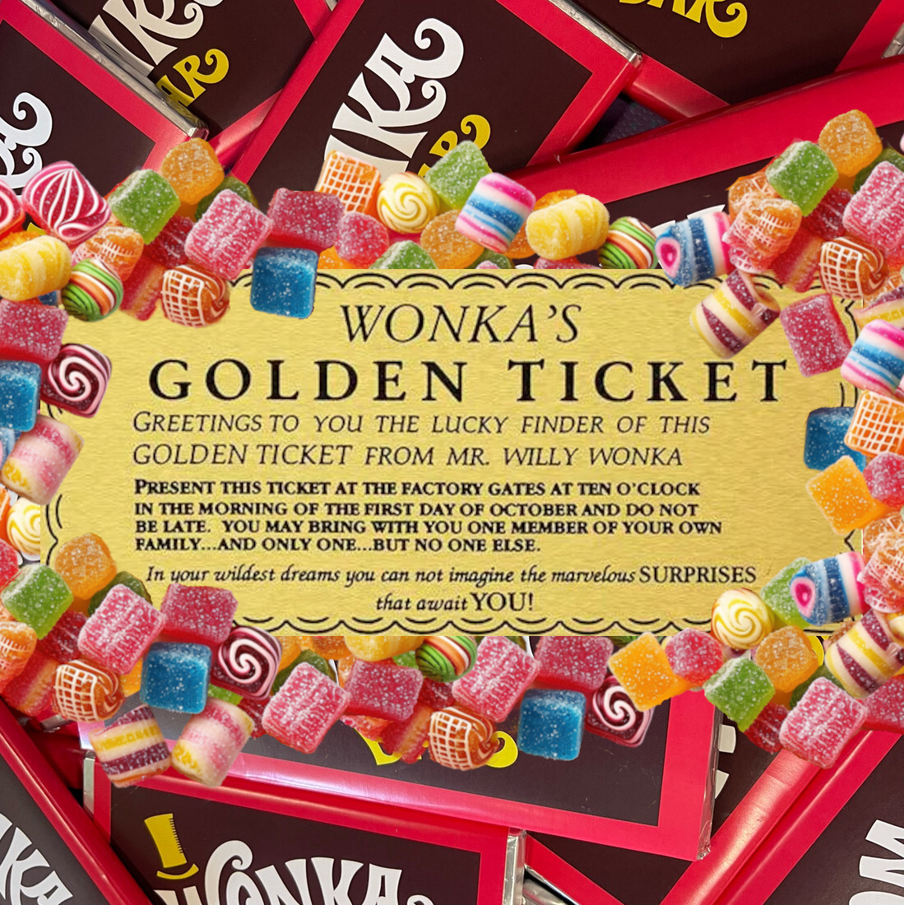

If You Want to View Paradise
By: DonnyWhoLovedBowling
Summary: The Truth Behind the Golden Ticket—or—How the Man Who Suddenly Got Everything He Always Wanted Lived Happily Ever After.
Genre: Charlie and the Chocolate Factory | Rating: Mature/Adult | Word Count: 132k+ | Language: English | Chapters: 33
Notes: Oh, my! Where to begin?! This story came about after viewing ‘Willy Wonka and the Chocolate Factory’ very late one night—or perhaps quite early, as it was roughly 3am—and I simply could not get this subversive little rabbit out of my head. Many of the elements of this story are derived from the 1971 film adaptation, however I couldn’t help but mesh it with the B.E. version of the book and give a wink and a nod to ‘Charlie and the Great Glass Elevator’. So, if the dialogue seems a bit more B.E. than what Gene Wilder presented to the audience, that’s why. Also, I can’t help but think of Willy Wonka as the diminutive, ‘high and flutey’ voiced man from the book, but add a dash of Wilder charm and frizzy, flyaway hair to the mix. Or just imagine Gene Wilder on his own if you really want to, I shan’t hold it against you. And please do imagine for yourselves Mr Wilkinson with an RP accent that lets his native Cockney tongue slip in from time to time [Oh, that bit sounds ever so naughty😉]. And one last thing; I thought a lovely quote was called for to help set the tone of this story. Enjoy!
Who gives a fuck how long the scene is!
—David Lynch
Now without further ado, let’s begin. Everybody ready?
‘Yes! Good! In we go!'
Prologue
It was the first time in over three years that Willy Wonka had left his Factory.
Three years…
The longest stretch by far in his life.
It might have stayed that way too if the walls and the roof had not tried so desperately to suffocate him—whispering things he could no longer ignore…
He had to get out.
No matter how difficult it was.
And so, one bright Saturday morning in May, Willy donned his cap and walked out through the Main Gate into the World once more.
A cap—not his accustomed top hat. No, not that day. Never again on any day that he went out in full view of the public. They knew him by reputation from a mile off, what with all his flash clothes and accessories. If he’d set even one foot out the door dressed to the nines in velvet and sequins, they’d have been upon him before he could escape back into the safety of his home.
Why anyone would ever be so enamoured with him, he hadn’t the foggiest. He was nothing more than the man behind their favourite sweets and chocs. A Brilliant man, perhaps, according to their accolades, but what did that matter—he’d given it up.
Willy Wonka, the Greatest Maker of Chocolate in the World, was no more…
He didn’t want to think about that. It was part of his past. The here and now was his only concern. And that meant getting on with things like a normal person.
So, he did. With his black cap and a cobbled-together drab grey suit—quite the challenge with a wardrobe full of dazzling garments—through the village he wandered. And never forgetting his umbrella. One should always be prepared for any eventuality after all.
He had thought that the Market might prove sufficient for his first trip out, but no. As he stood there amidst the locals, oblivious to his prestige when so well camouflaged, he felt restless. There was something missing.
So, he hailed a cab and traveled toward the City with no real direction in mind of where he was going. He asked the driver for his opinion on the best place to venture when one needed a change of scenery. The driver responded candidly that Stourhead was beautiful that time of year.
He wasn’t sure why, but that seemed absolutely perfect to him. More than perfect, in fact. It seemed Right.
Right…
Had That day finally come at long last?
Willy always followed his instincts and so he bade the driver take him to the aforementioned estate, leaving behind the rugged hustle and bustle and towering grey buildings for the quiet landscape of small farms and gentle cows.
And now here he was, standing before the Palladian Bridge with the shimmering chrome waters of the lake lapping against its charcoal piers.
Man-made. All of it. But you would never know if you hadn’t been told. The expanse was well designed to incorporate its surroundings, and Willy could only guess at how long it might have taken to construct such a picturesque foundation.
Across the way the smokey white Pantheon could be seen reflected in its depths, stretching out towards him like some haunted sentinel. All the buildings, in fact, looked upon him with a strange sentiment. Considering they, and their Garden paths, were meant to invoke feelings of The Greek Underworld, it wasn’t all that surprising.
The surrounding shore was just as otherworldly, dappled as it was with slate, nickel, and cinereous shrubs and trees. The wind was fair, but occasionally turned to a worrying gust, and the leaves shuttered and swayed as if whispering to each other of a storm yet to come.
Willy looked above the lush carbon foliage in search of rain but found nothing more than a small flight of swans. He watched as they descended from the argentine sky, gracefully landing on the reflective surface of the waters below with barely more than a ripple. They silently floated there, the odd ruffle of wings or lilt of their heads, the only indication that they were not merely elegant decoys.
A woman with graphite hair in an iron dress startled them briefly as she chastised her young children for rushing to and fro near the water’s edge. A girl and a boy, timeless in their mirth. As it should be. Their smiles did not fade even as they were marched quietly down one of the paths.
A stifled giggle caught his attention, and he turned to see a young couple nearby picnicking on a light pewter blanket. Soft words, sweet smiles. Hands intertwined.
Willy looked away from them, returning to the swans. They had quietly drifted towards the far shore. He watched them for a time in their innocent perusal of the pale grey aquatic plants, their dabbling and occasional preening hypnotic and soothing. Two swans broke away from the bevy to brush closer together… They mate for life, he thought.
Willy turned away from them, too.
There was a gaggle of people before him, stone and steel and alabaster and onyx. They walked without a care in the world right past him and onward with their journey around the lake. All except for one couple that lingered near the flint azaleas. They thought themselves so cleverly hidden from view as their ashen lips met.
He huffed and turned abruptly on the spot. A walk would do him good as well, he thought. The only problem was which direction to go—left or right—and then whether he wanted to travel just around the lake or wander through the wooded trails. They were both bountiful with flora, many of the plants with their flowers in full bloom. But which one would be the most conducive to his Mission? This was the Right place after all, so he had better get on with it.
His decision was made for him when he witnessed yet another young couple strolling merrily to his left towards the Temple of Apollo. Right. He would go right. That way was just as good—better even. How could it not be? It was Right.
Willy turned, ready to set his determined foot along the path that would take him off on his own, but just as he did so, he bumped into someone—hard—enough so, that it knocked them both backwards a step, each of them losing their umbrellas in the process.
“Oh, I do beg your pardon—”
“Oh, I’m so terribly sorry—”
Time stopped, and the World was constricted to the head of a pin, suspended indeterminately as the stars gathered close in keen observance.
Then the Universe breathed again…
Willy found himself gazing up into soft sea green eyes that rendered him speechless. Those eyes belonged to a younger man with warm ivory skin, whose cheeks were sporting the most delicate rosy blush. He, too, seemed incapable of words, and was staring in much the same manner.
The taller man must have realized this, for a moment later he was clearing his throat and attempting to speak, though it was obvious he found it difficult. “Forgive me,” he said before falling silent once more.
Willy found it equally difficult to respond. “It’s quite alright,” he forced himself to say. “I—It was my fault.” He, too, fell silent then.
Neither of them seemed capable of having a proper conversation. Willy certainly couldn’t at any rate. He was standing before the most striking person he’d ever seen and desperately trying not to ogle him—or at the very least, not let on that he was doing so. And he wondered, was this man doing the same thing? Did he feel it, too?
The taller man was staring at him, never straying far from his face, every errant glance being quickly redirected upward once more.
Willy knew then that he was not alone in such an assessment.
In an attempt to control his roving eye, the taller man looked away briefly then stood a little straighter and inhaled a short, sharp breath. “No, it was my fault sir, I can assure you—I wasn’t paying attention,” he said, picking up their conversation as if there hadn’t been an awkward minute-long silence between them.
“Neither was I,” Willy chuckled nervously.
Oh, that simply wouldn’t do. He couldn’t allow this man with such delicate pink lips to see him so flustered. He cleared his throat and tried not to sound like a complete idiot when next he said, “I was caught off guard by so many people—the fine weather’s brought them out in droves.”
The taller man smiled at Willy, and he felt his stomach swoop.
“Indeed,” he said, never breaking his smile.
Oh, how could a single word be so intoxicating! How could that smile be so infectious! Willy found himself easily grinning back and attempting to suppress his excitement in the most pitiful way. Worse still, he began to fidget.
—Icing on the cake.
But the taller man seemed a bit flustered as well, so perhaps it wasn’t all that bad. At least they would both look like fools together.
Several people walked toward them heading for the right-hand path and they were forced to step back to let them by properly. Divided, they stood there with friendly smiles and a dip of their hats for the cheerful young women in their yellow, blue, and green floral dresses as they continued on their stroll, their playful chatter lighting up the world as they went. Then it was silent once more.
And it should remain that way, Willy thought resignedly. He wasn’t here to be entertained. He had a Mission to accomplish before the day was out. Any sort of… delay would only cause problems; he was sure of it.
But this man… There was something so enthralling about him. How could he possibly walk away?
The taller man looked as if he were floundering for words again. “Uh, allow me,” he said at last and bent at the waist to retrieve their umbrellas from the ground.
Willy had completely forgotten he even owned one. “…Thanks,” he said as he numbly took it, unable to tear his eyes away from such a stunning and chivalrous person.
“My pleasure,” the taller man replied, then cleared his throat again. “Well, um… lovely day, isn’t it?” He gestured to the clear azure sky above them.
“Yes, is it,” Willy said automatically, then fell into awkward silence once more.
The taller man nodded, then shifted awkwardly and stared at his shoes. “Right, um…” He looked up after a moment, his mouth parting slightly as if to say more, but he soon closed it again, then curled his lip in a reserved yet polite manner. “Well, good day then,” he said, a subtle sharpness glinting in his eye the moment before he turned and walked off towards the right path.
“Good day,” Willy barely managed, stunned by what he'd seen. Was… Was that Him?
Well.
What was he to do now?
He couldn’t simply run up to the man and start chatting—that just wasn’t done—not in broad daylight anyway, and in such open and populated surroundings. People would notice that, surely. And that was the last thing Willy needed today. He would never accomplish his Mission if there were witnesses about.
Should he follow? And at how far a distance?
Should he have been wanting to follow in the first place…
Maybe he’d gotten it wrong. Maybe this wasn’t the Right time, the Right location. Maybe this taller man wasn’t the Right one…
No. He had to be.
Willy was not blind, nor was he stupid. He knew that look—knew exactly what it meant.
With a determined huff he set his foot along the path as he’d meant to do earlier and attempted to follow the taller man to wherever he’d wandered. Something that proved rather difficult. Not only were there people every few paces, but none of them were the man he sought.
Willy sat down on a bench near a beautiful bright pink azalea and thought. Where had that man got to? Surely, he wasn’t so fast that he’d traversed the entire loop around the lake already.
Just then the man in question walked into view, nodding to a couple of women across from him before dipping his head in Willy’s direction. Then he stopped upon realizing who he was greeting. “Oh, it’s you again. Well… Isn’t that something.”
“Y-Yes… How—Where did you come from? I-I mean—well, I was sure I would have seen you—n-no, I mean, I wouldn’t have—I wasn’t— but I—I mean, you were—or, well I, uh—oh, bother.” Willy rubber his hand across his brow.
The taller man chuckled nervously. “Oh, I was off the path. There’s a grand beech tree back there. I’ve been examining it for some time. I, um… well… Good day.” He nodded and proceeded along the path once more.
Oh, that was excellent. Just bloody perfect. Willy was right back where he started and with the added bonus of another blunder on his part. He’d practically given himself away with that little slip. How could he possibly get close to the man now without drawing suspicion? Because that was precisely what he had to do. It was Right. He knew it was. He had to do this, regardless of whatever else might happen.
But that curious little thought was niggling in the back of his mind again. Maybe the taller man wasn’t the Right one. This, all of it, could be mere coincidence.
But those eyes…
No. If that were the case, then the taller man wouldn’t have walked away. Would he?
He might. It could all be part of some elaborate game.
No, that was preposterous.
Only if things were entirely straight. And nothing ever was.
So, what did it all mean, then? Should he still pursue this course of action, or should he abandon the idea altogether? If he did scrap the whole thing, what would he do afterwards? What if he came upon the taller man again, wouldn’t that seem even more awkward than before? Well, he could simply keep up the pretense of stilted, yet polite conversation until he made his way to the end of the path. Then he could return to his home and forget all about what happened today.
Or…
Perhaps he could continue the conversation…
What if, instead of his former plan, he made a new one that included a bit more of a friendly chat instead?
He could do that, couldn’t he?
Yes, of course he could—people did that sort of thing every day. The man was gorgeous anyhow; he should want to chat with him regardless.
No, no, no, no, no. Not that. Willy wasn’t going to allow himself anywhere near thoughts of that nature. But then he realized he already had. From the very first look at him, the taller man had piqued his interest.
No.
Besides, what if the taller man didn’t want a chat? He’d been just as awkward, just as stilted. Maybe he was merely observing basic social etiquette and wanted nothing more to do with him. That was far more likely, even if he had been ogling Willy just as much as Willy had been ogling him—and that probably wasn’t even ogling. No, the taller man had been incensed and was simply too perplexed to respond in a scathing manner.
But those eyes had said—
No.
—Yes.
No!
—YES!
Oh! Everything was making his head spin!
Damn all his time cooped up in the Factory! It had driven him completely doolally!
Suddenly there was a massive grey thing in his way, and he nearly smashed his face into it before stopping. Willy pulled back to look up at a large fir tree. How had that gotten there?
Oh.
Somehow Willy’s feet had started walking the path once more and he hadn’t ever noticed leaving the bench. He looked around to see that he was alone. Thank goodness. It was dreadfully embarrassing to appear so foolish in front of anyone.
When he was at home he didn’t have to worry about that, just the threadbare patch upon his rug from all his restless behaviour. Why couldn’t he simply keep himself still when he was deep in thought?
“Oh, we meet again, sir. Fancy that.”
Willy looked to his right and there he was, the taller man that was supposedly an essential part of his Mission. Had he seen Willy acting oddly just now? He cleared his throat and presented what he hoped was a charming smile. “Well, that is rather something, isn’t it? I suppose,” he couldn’t stop the next words, “that the Stars have aligned themselves in such a fashion to bring us together repeatedly.”
Several people wandered past them at that moment, and they were forced to part as they did once before. Willy, during this terribly short interval, wanted nothing more than for the ground to swallow him up. Why did he have to go and say something so silly?
The people passed, and he was left facing the taller man once again.
“The stars?” he asked, a slight furrow at his brow.
“Oh, you know,” Willy flicked his wrist. “Whatever those superstitious types would say about it. Not that I think they are entirely wrong, or wrong at all—I mean, I’m not judging them—I’m just—um… Oh dear, I seem to have gotten lost somewhere.” He chuckled pathetically. “I guess that’s far more information than you ever cared to know about me.” He grimaced.
The taller man gave an awkward chuckle himself. “Oh no, it’s perfectly alright. Um… I suppose…” He puffed nervously. “Well, I can’t go on speaking to you like this without a proper introduction, can I?” He extended his hand. “Roger Wilkinson.”
Willy stifled a gasp. This was it. His chance. One step closer to completing his Mission.
Wait, no—was this still the Mission, or was it merely a simple conversation, nothing more? He began recounting his previous debate with himself. It was entirely plausible to be either thing. So, what should he do? Well, one thing was for certain, he couldn’t back down now, whichever way it went. “W-Willy Wonka,” he answered, extending his own hand to shake. He noted the man’s skin was as soft as silk when they touched.
Wilkinson looked at him for a moment, his eyes unchanging as they shook hands. Then he spoke with a hint of surprise in his voice. “Wonka? The Willy Wonka?”
Willy stifled another small gasp at his own sudden realization. Oh, my! It really was Him! He had to control himself though, he couldn’t give the game away—no, that wouldn’t do at all. It was time to focus. Push on. Take the plunge. “Yes…” he said calmly, “The Willy Wonka.”
Wilkinson barked out a small laugh. “Well, I must say, I never thought I’d be meeting you—and here of all places.” He rubbed the back of his neck, then added pensively, “I thought you’d disappeared…”
Willy furrowed his brow. “What, like a magician?” he ventured with a slight quirk to his lip.
“Oh! No, nothing like that.” Wilkinson chuckled and smiled. “Well, I mean the papers all said—not that I read them much, mind you—except perhaps the financial section, and I do enjoy the Cryptic Crossword, and sometimes the recipes look interesting, not that I cook much, but it doesn’t hurt to peruse them at any rate… Oh, dear me. I am rambling a bit, aren’t I? I, um… Well…” He tittered nervously and looked away.
Willy couldn’t help but broaden his smile. “I’m a rambler, too. Well, not all the time, I suppose, but enough that it might seem a bit tiresome to others.”
“Oh, yes. I’m like that. I do try not to let it all out, but sometimes I just can’t control it.”
“Neither can I.”
Another small group of people wandered by and Wilkinson was forced to move aside for them to pass without stepping off the trail. He was now only several inches away, and Willy could perceive the slightest hint of delicate aftershave…
Wilkinson looked down at him, nervous and awkward in the realization that they had become so close. “Ah, well, this seems a rather busy intersection. Perhaps we should move on so as not to block the road,” he suggested.
Oh, this was definitely Right, thought Willy. “Yes, of course,” he concurred. He was highly aware of the man next to him. Tall. Medium frame. Slim, yet athletic build—like a runner, perhaps. Strong. Capable. Although much of this was well hidden by his custom-tailored charcoal suit. Yes, oh yes, this was Right.
He could tell that Wilkinson was struggling for words again, probably trying to hold back just enough information to get it all out properly. Part of him wanted it to be something like ‘You are truly fascinating and I’d love to continue this lack of conversation over dinner.’ But in all probability, it was something entirely different, and Willy knew exactly what that might be…
He decided his Mission couldn’t wait any longer. Or rather, he could no longer wait to get it over with. “Shall we?” he asked, tilting his head towards the path.
Wilkinson looked incredibly relieved at the suggestion. “Love to.”
Good, Willy thought. Now his only concern would be exactly when it happened…
They walked at a leisurely pace, examining the many and various specimens lining the water as they went. The rhododendrons were particularly captivating in their vivid fuchsia blooms, as were the delicate swaths of bluebell and the explosions of pale pink magnolias. They even caught a glimpse of several bright yellow daffodils dotted hither and thither along the way. And all of them, coupled with their delicate perfume suffusing the air, made it seem positively magical as they traversed around the lake together.
When they had finished their perusal of the Pantheon, they took a slight detour, sitting down on a little bench together. It was partially hidden behind a small thicket of trees, secluded from view of passing pedestrians, but from their position they could still see out across much of the water before them.
“You actually live in your Factory?” Wilkinson asked, astonished.
“I do,” Willy replied. “Is that really so surprising?”
“Well, yes.” The man shrugged, obviously perplexed. “I mean, most people in your position would have a manor or something to go home to at the end of the day.”
Willy quirked his lip. “I’m not most people though, am I?”
Wilkinson looked at him, a small spark dancing in his eye. “You certainly aren’t.”
Willy held his gaze, intrigued by the delicate pale green and little flecks of gold within. They said so much. Far more than the man ever realized…
He sighed internally, knowing what must come next and reluctant to let go. Here was a man with whom he could share a conversation. A real one. Not just flippant words, but something deeper. They had already proved as much during their walk. Even being overly cautious, they were still divulging more than the average person might do with a total stranger.
Perhaps, if it had been another lifetime, there could have been more to all of this…
No. No, he couldn’t allow such thoughts, it was too late for any of that now. It wouldn’t do to dwell on the impossible.
His mind wandered off in the opposite direction then, wondering how things would further unfold in order to complete his Mission. How... Well, whatever came about, at least he was here in this beautiful place in springtime. What more could a person in his situation ask for?
Until That moment, he would carry on. “So… What’s it like being an accountant?” he asked, genuinely curious as to what they did with all those numbers.
“Oh, well… a bit boring, really. Go to the office. Work out the figures on your desk. Go home again. Not much else to it.” He grinned then. “Not like your job. Inventing marvelous things all day long. It must be brilliant.”
Willy looked out across the lake.
“Isn’t it?” Wilkinson asked, a concerned lilt to his voice.
Willy sighed, not wanting to talk about that part of his life, but knowing he’d have to give the man something if he didn’t want their conversation to end. “It used to be…”
“But not anymore?”
“…No.” He looked back into the man’s worried eyes. Genuine worry… That gave him pause. Perhaps there was more to this than he originally thought. “Didn’t you say you read about it in the papers?”
“Well, yes. But—”
“For more than three years the Factory has been silent. Not a sweet nor a person has left through the Gates.”
“Three—” Wilkinson puzzled. “Has it been that long already?”
“Three years, three months, and twelve days to be exact.”
“Right,” Wilkinson nodded thoughtfully. “But surely, you’re still inventing, even if the Factory’s closed up.”
Willy wasn’t sure if he could take much more of this. Was the man dragging things out on purpose? He didn’t actually want such details, did he? Not this man. He couldn’t, could he?
He held Wilkinson’s gaze, searching for whatever answer might be there. Willy was sure he would find something dismissive, but instead those pale green eyes were filled with concern.
He cares…
Willy wasn’t sure how to respond to that emotion. It shouldn’t have been there in the first place. What did it mean? If things carried on in this manner, his Mission might be compromised, and he couldn’t have that. It was supposed to happen today; he was sure of it. It felt Right. It must be Right. Why else would he be here now in this place that had beckoned to him so strongly earlier in the day?
Willy continued to stare into those deep green pools, unable to turn away at the truth hidden there. Indeed, there was more to this whole thing than he would have ever thought possible before that moment.
Against his better judgement, he decided to carry on like a normal person and continue their conversation. “Don’t you think if I was still inventing, I’d be selling things as well?”
“Well…” Wilkinson scratched behind his ear. “No, actually.”
That intrigued him. “Why not?”
Wilkinson looked out across the lake and sighed thoughtfully. “Maybe because you haven’t got it just right yet. It still needs a certain… something. Isn’t that what happens to inventors periodically? I mean, if they always had the right idea, if there were never any room for improvement, we wouldn’t have such amazing things, would we?” He turned his honest gaze on Willy once more.
Willy held his look carefully then. There was no hint of mockery or derision in his voice, no flash of deceit in his eyes. In that moment, he realized that everything had changed. This was not the man he thought he was, and even more defeating, his Mission had been derailed entirely. Worse still was the realization that it had been compromised from the start.
It would not happen today.
No matter. There was always tomorrow, or the next day…
But the more he thought about it, the more that Willy wished that day would never come. It was a scary thought. Letting himself feel something he believed was gone forever.
Well, if things were going to progress in a normal fashion, the way they might for any other person, he had to shift his manner about. Wilkinson—Roger—deserved more than cordiality from him. He deserved a chance. “That’s true…” he said at last.
Roger furrowed his brow. “So… Why did you stop, then?”
Willy couldn’t turn away quickly enough. He was sure that Roger had seen it in his eyes.
“Oh, I’m sorry. I—I’ve said too much again, haven’t I… It’s none of my business, of course.”
“No, it’s alright. I… You know there were spies sent into my Factory?”
“Yes.”
“Well… I found it hard to press on with anything after that. Obviously, that’s the short answer. The long version would take quite a while to explain—and I can’t guarantee that I would be able to tell you everything, mind—but… perhaps it would be nice to ‘get it off my chest’ as the saying goes. If you would care to listen? Maybe… over dinner this evening? I know a lovely little place in Soho.”
Roger hesitated a moment too long before uttering a simple yet perplexed, “Oh. Um.”
Too much. “Well, perhaps not dinner then, but—” Willy fished through one of his pockets, “you could take my card.” He continued searching through a second pocket when the first came up empty. “Then we could meet up again like this if you wish.” Not that pocket either. “Oh, blast it all.”
“Um… I, well… That would be lovely. I-I mean, the former proposal. Uh, if you still wish to extend me an invitation, that is.”
“Oh, I do—I do.” Willy had moved on to his fifth pocket by that point. “If I could only locate my—ah ha!” He finally found the right one. Funny that. He could have sworn he’d stowed his card case in his breast pocket that morning, but somehow it had ended up in his trousers instead, next to his Indispensable. “Here you are, then,” he said, handing Roger his card.
“Thanks,” Roger replied, admiring the intricate design with a quirk to his brow. “When you said card, I—well I wasn’t thinking ‘Calling Card’. I didn’t know anyone still used these things.”
“Oh, yes. Well, at least I do. They are such a pleasant little conversation piece.”
“Indeed,” Roger chuckled. “This is really something. Did you engrave it yourself?”
“Yes.”
“Your calligraphy is beautiful. And this violet colour…” Roger tilted the card in the light. “It’s not Quink, is it? I’ve never seen an iridescent variety before.”
“You have a good eye.”
“Hmm?” Roger said as he continued to examine the delicate lettering. “Oh! Yes, I—well, I mean, I do spend an awful lot of time going over documents from clients. Some of them, no matter how often we mention it, continue to send us their paperwork in colourful inks.” He finally tore his eyes away from the card to look at Willy. “We get green as well, and if you can believe it, red sometimes.”
Willy smiled. “I can. Although I imagine it is quite an intense perusal with words and numbers staring back at you in that shade.”
“A headache—and I mean that literally. The contrast is terrible.”
“Oh, poor you.”
“Ah, well.” Roger shrugged. “It doesn’t happen very often. Only a couple of times a year.”
Willy chuckled fondly. “Still…”
Roger glanced at the card in his hand once again, turning it to and fro to catch the light. “This really is amazing ink. Wherever did acquire it?”
“I made it myself.”
Roger looked at him quizzically.
“I reverse-engineered the Parker’s Quink formula and added a few new elements to suit my taste.” Willy’s smile broadened. “I do so love shiny things.”
Roger quirked his lip at him then let his eyes travel downward, no doubt assessing the ‘grey’ ensemble.
“Ah, you’ve noticed,” Willy chuckled softly.
“I wasn’t going to say anything, but… Well, you do look a bit different from the various photographs I’ve seen of you over the years.”
“You mean those pictures that reporters took of me whenever I walked out the front door? Oh, no. That’s just for publicity. It’s the perfect ruse, you see. If they expect me to be glamourous when I go out, then they’ll never notice me like this in the streets. Have you any idea what it’s like to be mobbed by a bunch of chocolate fanatics? It happened to me once in 1947 and I’ve still not recovered entirely. Anyway, that’s just one of my little secrets. You can hear the rest over dinner.”
“…You looked as if you enjoyed wearing those outfits in the photographs.”
“Oh, I did, believe me. And still do. I’m always dressed that way at home. I prefer it, in fact. Hence my reclusiveness… Not everyone is so keen on seeing a man dressed in such flamboyant attire.” He eyed Roger knowingly. “It’s easier to be myself behind closed doors.”
Roger held his gaze, something deep lingering in the determined creases of his brow. “You shouldn’t have to hide it.”
That sentiment went straight through Willy, stopping only briefly to constrict his heart as it did so. Another genuine remark… He had the feeling there were many more just waiting to be unleashed under the surface. Oh, yes. This man was definitely worth taking a chance.
“What’s that?” Roger asked nodding at the pouch in Willy’s hand.
“Ah. This,” Willy held up the small bag, “is my Indispensable. I never leave home without it.”
“It looks like a handbag to me.”
“It is. A reticule. Although I prefer the term Indispensable, for that’s what it truly is to me.”
“Oh, like the Victorian ones? Yes, it does resemble one of those.” Roger continued to stare at it in wonder.
“Yes. However, this is merely a replica. I wouldn’t dare subject such ancient fabric to everyday use.”
“Oh no, of course not. I can’t imagine it would hold up well at all.”
“No.”
“Is the card case a replica as well?” Roger asked, eyeing it keenly.
“No, it was my grandfather’s,” Willy said, handing it to him. “He was never a gentleman himself but acquired it as a thank you gift from the late Sherlock Holmes. Apparently, he was very good at solving mysteries.”
Roger stared at him. “…Sherlock Holmes is a fictional character.”
“Yes, I know. My grandfather was a bit of an eccentric fellow. I suppose that’s where I get it from.”
Roger chose to remain silent.
“I am. There’s no need to be so delicate.”
“Well… One can’t always believe what one reads in the newspaper.”
Willy smiled broadly at him. “You are overly polite even for an Englishman.”
“I would hate to offend you.”
“Why?”
Roger was suddenly very interested in the card case in his hands. “You’re… fascinating,” he said quietly. “I’ve enjoyed our conversation so far… I wouldn’t’ want it to end just yet.”
“Neither would I,” Willy said, waiting patiently until Roger looked up at him again. “I would like for you to be honest with me, please.”
“Really?”
“Yes. Really.”
Roger held his gaze a moment before speaking. “You’re crazy as a crumpet.”
Willy burst out laughing. “Well,” he chuckled, trying to rein himself in, “I must say, that’s the first time I’ve ever heard it put like that.” He smiled and continued to chuckle softly as he looked to the sky. “I must remember that one.” He glanced over at Roger who was staring at him intently.
“I like crumpets,” he said, his pale green eyes shimmering playfully.
“So do I,” Willy rejoined then smiled, if possible, even more broadly at him, unable to keep the twinkle in his eyes hidden any longer. “They are lovely with tea—which reminds me…” Willy fiddled with his pocket watch. “Yes, it’s half four. Would you care to join me for a spot?”
“Half four already? Time certainly flies when you’re having fun.”
“Indeed.” He replaced the watch inside his Indispensable, his finger brushing against something small and firm as he did so. “What?” He fished out the objects, for there was more than one nestled together, and held them in his palm. “Oh! How did these get in here?”
“Are those wine gums?” Roger asked.
“Well, yes—I mean, no—I mean, yes they are wine gums but not the usual sort.”
“One of your inventions?” Roger prompted, intrigued.
“Yes, I…” Willy hesitated. “No… No, they’re just wine gums,” he finished quietly.
“…You’re sure they’re not something you created?”
Willy swallowed. “It’s not important—besides, these are at least three years old, they’re bound to be rubbish.” He wished there was a receptacle nearby for him to throw them away. He didn’t want to look at them anymore.
“Don’t throw them out,” Roger said as he covered Willy’s hand with his own, protecting the chewy little things hidden within.
Willy shrugged uncomfortably. “They’re stale. No use keeping them.” He sniffed.
“I bet that’s not true.” Roger removed his hand and examined the sweets before him. “They look fine to me.”
“After three years?”
“Listen, I might not be a confectionary genius like you, but I know when something looks off. These are still shiny, the colour’s not faded, and they’re not hard as a rock.” He demonstrated by pressing one between his fingers.
“How do you know they’re supposed to be like that?” Willy countered, agitated.
“These are wine gums, yes?”
“…Yes.”
“Then this is what they should look like if they’re fresh.”
“But I made them three years ago.”
“Yeah, I’m aware of that.”
“Then how can they still be good.”
Roger gave him a pointed look. “Because you made them.” He continued to stare at Willy, looking for all the world as if he were schooling a young child.
Willy remained silent.
“I’m right, aren’t I?” Roger quirked his lip.
Willy huffed his acknowledgement.
“So, what’s this one, then?” Roger asked pointing to the pale pink sweet.
“You really want to know about this?”
Roger gazed at him, his eyes open and honest once more, saying nothing.
Willy took a deep breath. “Alright, I’ll tell you,” he said quietly. He swallowed and took another deep breath. This was just a small detour, a roundabout that would carry him back There, but he could leave at any time he wished. He took one last breath before speaking. “This pink one is a grenache rosé.” He indicated the gum that Roger had manipulated so easily. “That's a malbec.” He pointed to the dark plum sweet next to it. “A riesling.” The golden one just beyond. “And this,” he said, brushing his finger delicately against the remaining deep red confection, “is a claret—or no, wait— is it the Boudreaux?”
“A Boudreaux is a claret,” Roger interjected.
Willy smiled impishly. “You know your wines.”
“I’ve sampled a few over the years,” Roger said modestly. “So… what makes them so special?”
“Special?”
“Yes. You invented them. There must be something incredible in each one of these little things.”
“Well,” Willy cleared his throat, “My idea—are you really sure you want to hear all this? You don’t need to humour me. I mean, honestly, I haven’t given a thought to any of this in so long. It’s just piffle.”
“I don’t think you could ever make anything that was just piffle.” Roger was staring at him with those open and honest eyes once more.
Willy swallowed and adjusted his collar slightly. “Ah… Yes, well… Th-These are supposed to be the answer to the over consumption of alcohol. The, um… The Non-Alcoholic Relaxation Sensation!” Willy cleared his throat again. “That would be the advert. Uh, these are supposed to help counteract a person’s need for a drink. Obviously, it doesn’t help if you’re already an alcoholic—That needs doctors and counseling, you know. But with these little sweets, anyone who’s feeling the urge to relax and wants the old standby—which could be dangerous, if not kept in check—can experience the effects without the nasty hangover in the morning.” He chuckled softly, nervously.
Roger was eyeing him warily, a little crease to his brow.
Willy immediately clarified. “You don’t lose your inhibitions. You simply… relax. And even if you ate an entire handful of these gums, you still wouldn’t get anything more out of it—They’ll be great for any occasion that requires a little ‘assistance’… I know it’s not a perfect solution, but until we reach a point in time when people don’t feel the need to relieve their stress with such things, it will have to do. And when I get the formula right, they’ll be there to help—Oh! And I have several other sweets with similar properties at the Factory that can—" Willy stopped suddenly, turning his head towards the lake once more and closing his fist around his former invention. He sighed. “I had things there… I—I don’t… That’s over now.”
“Why?” Roger tried to catch his eye by leaning forward.
Willy closed his eyes and sighed deeply. “I already told you… I can’t… I haven’t been able to do anything since…” He struggled to keep his breathing even. He did not want this man to see him take a turn.
“I’m sorry. I shouldn’t have pushed… It’s just that you…” Roger paused, probably trying to find the right words. “Please look at me.”
Willy did, holding himself together better than he thought he might in that moment.
“I don’t know you. Not really, anyway. But I do understand the need for creative outlet.” Roger sighed and worked his jaw. “You’re the greatest chocolatier in the world… It must be killing you to keep in all bottled up inside.”
Willy wanted to counter him with a ‘There’s nothing left in me’ but instead chose a half-hearted shrug.
Roger took the liberty of opening Willy’s fist and examining the sweets once more. ‘You said the formula wasn’t right yet?”
“No.”
“Well, what’s not right about it?”
“They’re too weak.”
“What?”
“The gums are too weak to be of any use. The previous batch barely made any noticeable difference. If I’d been standing awkwardly at a party and taken one of these, I would have been hopelessly trying to shuffle into the wallpaper for the remainder of the evening.”
“Oh? So, you haven’t actually tested this batch then?” He eyed the Reisling.
“Uh… No, I haven’t. There wasn’t time, I—I… Not with, um—”
“Well, then.” Roger took the Reisling and placed it in his mouth.
“Wait, um… I don’t know if that’s a good idea—There could be side effects—If nothing else, it’s been in my Indispensable for three years. There could be any number of germs on that thing.”
“Tastes fine to me,” Roger said as he chewed, a devilish quirk to his lip.
Willy gaped. The man was deliberately trying to get a rise out of him with his foolish act. He had to put a stop to such madness—Ha! Him trying to stop madness! “You might do yourself an injury,” he warned.
Roger finished chewing, then swallowed. “I’ve a cast iron stomach,” he replied, his smile broad.
“You are trying to provoke me, aren’t’ you?”
“If it will help get you thinking about sweets again, then yes.”
“Oh!” Willy huffed. “You don’t even—How can you—You only just met me this morning. How can you even think of taking such a risk?”
“I like to live dangerously.” Roger’s smile was positively fiendish now.
“I’ll bet you do,” Willy murmured just loud enough for him to hear. If only this man knew—
“What exactly is this thing supposed to do? I don’t feel any more relaxed, but my tongue’s a bit tingly.”
“Tingly?” Willy repeated. The wine gums had never done that before.
“Yeah, it’s weird…” Roger worked his mouth and furrowed his brow. “I think I feel something…”
“Yes?” Willy couldn’t help the excitement that was kindling inside him. “What’s it like? Tell me everything.”
Roger opened his mouth to speak—
And then the strangest look came over his face. It was one of uncertainty and surprise… then fear.
The next moment, every single detail of the man’s life was spilling from his lips against his will. His childhood, his adolescence, his various jobs and situations. The most awkward and embarrassing times in life. The most dangerous and depressing ones, too. And the darkest. All of it seemingly without end.
Willy found himself unable to move, glued to his seat, clutching at his throat in perplexed rigor. But he had to do something—The man was clearly distressed, and not just from the divulgence of all his secrets. He was looking increasingly fatigued by the second, as if he were fighting against it with all his might.
A thought hit him then and he fished through his Indispensable. Yes, he’d found one! “Here, Roger! Take this, quickly!” He popped a small yellow sweet into the man’s mouth and clamped his hand over it until he felt sure that no more secrets might come pouring out.
And it worked.
Roger was now silent but had the most pityingly miserable scrunched up face he’d ever seen.
“Oh, I am so very sorry, Roger. That’s a Lemoniscious BonBon. They’re still too tart for consumption, but at least it’s done the trick. I’ve taken to carrying them around with me—well, I used to anyhow—in the hopes that I might figure out a solution to their potency. Oh, dear. Oh, dear. I am so very sorry.” Willy reached inside his Indispensable and procured an ornate silver flask. “Here, this will help to dilute it. I think it’ll be safe enough for you to keep from saying anything you’d rather not.”
Roger shook his head and tried to push the flask away, although that proved rather difficult as his strength had been greatly depleted during his confession. “Nrw,” he managed at last through severely pursed lips. “Nrw dwink.”
“What?” Willy asked, confused. Why would Roger refuse his help when he so desperately needed it? Then he realized what he was holding in his hand. “Oh! No, it’s not alcohol. It’s just water. I swear. I always carry a flask full of it in case it’s needed.” He tried again to press the flask forward, but Roger was adamant. Willy looked at him straight in the eye then. “Please,” he beseeched. “It will help.”
Roger looked back at him, his eyes full of so many things he couldn’t say. He gave a reluctant nod and accepted the water at last.
Willy helped him drink his fill through his tightly pursed lips, then supported him at his side during his recovery. Roger had nearly fallen from his place on the bench in exhaustion, but he soon found his bearings, his breathing slowed to a normal rhythm, and he was silent once more. A little too silent. Willy knew the man must be quietly panicking over what he’d said.
“I am so sorry, Roger. I tried to warn you; I should have stopped you. I wasn’t quick enough… I never should have had those in my pocket to begin with.”
Silence.
“You’ll be alright. There’s no lasting damage with those Gums, or the Bonbon… I think.”
Still nothing.
Willy thought over the possibility. “No, I’m sure of it. I’ve never suffered after ingesting them. Well, unless you count the schrunchy-face thing. But that’s never actually harmed me… It’s more of an inconvenience, really.”
It was as if Roger wasn’t even there. The only indication that he was still living was movement from his chest as he breathed softly.
Willy continued to ponder over his hazardous sweets. The previous batch of gums had been far too weak, and these had obviously been entirely too powerful. So powerful in fact, that if Willy didn’t know any better, he would say they were laced with truth serum. Hmm… That was a dangerous thing, indeed. He would need to pick apart his recipe and find the culprit before he could go any further with—
But what was he thinking? He was Willy Wonka, the normal human being now. Not the famed Chocolatier of legend. Those days were behind him. He had told himself so repeatedly. He had to let it go.
Still…
Willy found it quite difficult to control his imagination. It was jumping about all over the place trying to land on new ideas to better this invention. “Oh, I know just what to call these!” he said as the thought came barreling through his mind like a speeding train. He looked at Roger then who was staring straight ahead at the lake trying not to notice him. “Whine Gums!” he nearly yelled in excitement. He couldn’t help the smile that spread across his face.
Roger was still as stone; his eyes trained on the water.
On second thought, perhaps that name was in bad taste. After all, who would want something that made you overly chatty. These Gums were supposed to help make you less socially awkward, not more so—And if anyone knew how horrible an awkward situation could be, it was Willy. “No. I suppose not,” he said, crestfallen. “Th-That wouldn’t do at all, would it? Oh, how tasteless of me.” Yes, it was, he thought disgustedly. He’d just gone and tortured the man by forcing him to reveal his entire life and then tried to make a joke out of the whole thing. What a wretched person he was.
—No. He couldn’t think like that right now. He had to focus on Roger who needed comfort and reassurance. Besides, it would be pathetically embarrassing to go all funny like that, yelling at himself in front of the man. He would just have to wait until he was alone once more to do it.
Willy cleared his throat. “I suppose this is a bit awkward now, isn’t it? Well, please don’t worry. I’m not one to gossip.”
It was quiet all around them. Most of the patrons had moved on for the day. Even the swans had disappeared from the lake.
“Well…” Willy looked at his pocket watch again. “We’ve missed tea, but no matter. We can continue our conversation over dinner instead.”
Roger finally looked at him, his face a sea of incredulity. He was silent for a minute longer before he could finally speak. “Dinner?”
“Yes. If you’re still interested.”
Roger’s eyes became, if possible, even wider than before. “After everything I just told you?”
“Yes.”
“Why?”
“Well, I would have thought that was obvious by now, Roger.” Willy looked at him pointedly. “I find you fascinating.”
“You find me fascinating!” Roger’s jaw was hanging open. “But I’m—I’m going to…” he tapered off, swallowed and looked down at his shoes. “I was going to…” he said quietly.
“Precisely.”
Roger looked up at him quickly. “What?”
Willy gazed at him, his small smile hopefully conveying his honesty. “Was, Roger. You were going to…” he left the rest unsaid. The words seemed to have a rather dramatic effect on the man now that he’d given himself so much time to think about them. “That’s all in the past, isn’t it?” he pressed.
Roger continued to stare at him for a time, then gave him a faint nod and looked away. “And if I’d said no?”
Willy sighed and got to his feet. “Come along, we’ll be late for dinner and lose all the good tables.” He held out his hand to help the man up.
Roger looked numb. He shook his head. “Is this a dream?”
“No. But I wish I had someone like you in more of mine.”
Roger’s mouth remained open for a bit longer, his eyes trying to ascertain something that Willy could only guess at.
“You are a nutter.”
Willy smiled. “I prefer the term eccentric, if you don’t mind.”
“You really want to have dinner with me?”
“Yes.” Willy continued to stand there with his hand held out to the stoic man sitting before him.
Roger nodded slowly. “Alright, then… But… I’m not sure I can walk. I’m barely keeping myself upright on this bench.”
“Well, that’s no problem.” Willy came forward and took Roger’s hand gingerly in his own. When Roger didn’t protest, he placed the man’s arm around his own shoulders and looked him in the eye. “Ready?”
Roger was still rather stunned but nodded. “Yeah,” he said, “but I’m—you’re not—well… you won’t be able to lift me. I’m heavier than I look.”
“Oh, pish-tosh,” Willy said before easily hefting Roger upward off the bench.
The look on Roger’s face was worth it not to have told him beforehand that he was capable of such a feat—No one ever believed a man of his size could be so powerful. He couldn’t stop himself from grinning as he reached down to the bench to retrieve their umbrellas.
When he was sure that Roger’s footing was sound, and he wouldn’t accidentally topple them both over, they hobbled down the path and towards the car park. Thankfully, for the sake of Roger’s dignity, they were less than a mile away and could shuffle behind many of the trees to keep him out of sight. Not that it mattered much. As Willy had keenly observed earlier, most of the patrons had already left for the day.
Their conversation was stilted as they went now, but Willy kept it going as best he could, trying to help Roger through this difficult point in his life. If their roles were reversed, he was sure he’d feel the same way. And he told him so, as well as many of his own embarrassing moments and disastrous treks through life. He couldn’t share everything, though. No, there were some things that just wouldn’t come out. Some things he couldn’t say, couldn’t even think of without great pain.
He continued to keep the mood as light as possible along the way. At least until the car park came into view and Willy could see that his driver was still there. “Ah, just as I expected.” He shifted them a bit so that Roger might appear less needy. “How are your legs now? Do you think you can manage on your own to the car?” he asked, knowing that Roger would say yes, regardless of his condition. But he also knew that Roger had been well enough to walk all by himself for the last twenty minutes. He was very good at hiding it, and perhaps if Willy had been any other person, he never would have caught the subtle and precise movements of his calculated steps.
“Oh, yes. I’m fine… Thank you,” Roger replied sheepishly.
Willy handed Roger his umbrella and together they walked across the lot in the late spring twilight to the awaiting cab. They were still too far away to discern whether the driver was reading his paper or simply asleep behind the wheel.
He took the opportunity to ask Roger something that had been on his mind all afternoon. “It was a nice warm day, wasn’t it?”
“It was, yes,” Roger replied absently, his mind obviously on something else.
“There were never more than a handful of clouds in the sky, and none of them ever felt threatening.”
“No, they didn’t,” Roger said, still pondering something.
“In fact, the weather’s been fair all week. You certainly wouldn’t have expected rain to sneak up on you or anything.”
“Of course not.”
Willy stopped them with a gentle hand, then looked at Roger searchingly. “Then why did you bring an umbrella?”
Roger stared at him, his mind finally pulling away from whatever thought was distracting him so. “Um…” he said, furrowing his brow, then falling silent.
“Was it to do with…” Willy left the rest unsaid but gave him an intimating quirk of his brow. When Roger remained silent, he added, “I’d understand if it was. I mean, appearances and all that. Needing to be, well… appealing. Enticing, even.” He stopped himself from going any further, wanting to hear it confirmed by Roger himself.
Roger’s brow remained furrowed, but at last he spoke. “No. I just… Well, one should always be prepared.” He shrugged, a small smile playing at the corner of his lip.
Now it was Willy’s turn to stare. “Indeed,” he said distantly.
They started walking again, this time both of them silent in their contemplation.
“What did you expect?” Roger asked when they were more than halfway to the cab.
“Hmm?”
“You said ‘Ah, just as I expected’ when we got here. What did you mean by that?”
“…I had instructed my driver to wait for me all day until the sun set and then leave without me if I did not return. I am so glad he kept to his duties as it saves us trying to find another way home—Oh!” Willy suddenly halted them in their tracks. “Unless you have your own car? We can take that instead if you like.” He didn’t wait for a reply but continued speaking aloud to himself. “Hmm, yes. That would probably be best. We wouldn’t want to leave it here overnight would we…” He looked at Roger then. “Do you have your own car?” he asked brightly.
Roger stared at him oddly. “…Yes. It’s over there,” he said, nodding towards the other end of the lot where a nondescript blue saloon was stationed. “How were you going to get home if the driver had left without you?”
“I wasn’t,” Willy answered honestly, then began walking again. There were no footsteps behind him.
“…That doesn’t make any sense,” Roger countered as he widened his gait to catch up.
“Oh, it does, I can assure you. So, shall I inform the driver when we reach him that we’ll be taking your car?”
Roger placed his hand on Willy’s shoulder to stop him. “Are you telling me you would have stayed here all night, until… what, the next morning or something?”
“Or until someone found me.”
“Until someone f—” Roger faltered, looking carefully into Willy’s eyes.
And Willy stared back at him just as intensely. They stood there for a long moment in silence, sharing something far more profound than words ever could. At last, Willy decided to reveal his hand. “I knew, Roger.”
The man was speechless again, as well as motionless. He didn’t even appear to be breathing.
“Almost from the first moment I met you this morning,” Willy continued. “I will admit that I hadn’t expected it to be you per se, and I was rather blindsided by your… well, everything about you, I suppose.” He smiled. “You are highly intriguing after all.”
It took Roger ages to respond and when he did it was a single syllable uttered so quietly that Willy almost didn’t hear it. “How?”
“Funny that,” Willy began. “Do you know what pupillary responses are?”
Recognition washed over Roger’s face. He shut his eyes and bowed his head.
Willy chuckled softly. “Of course, you do… Well, anyway, eyes are a very interesting study. The average person never notices it, unless they train themselves on what to look for.”
Roger kept his head down but grunted his acknowledgement.
“Most people, mind you, most people respond to stimuli in much the same way. When they are frightened or surprised, or perhaps when they are processing large amounts of information, or even when they are sexually aroused, their pupils will dilate. Now there are varying degrees of dilation, and not all elements will cause such dilation for a given individual, but as I said for the most part it’s the same.”
Roger raised his head at last and sighed, waiting for him to continue.
“You see, most people, when they discover who I am will have this reaction to some degree. Many, in fact, have had a tremendous reaction to such a discovery. But that’s not what tipped me off, Roger. No, that was merely the confirmation I needed. You see, you were very deliberate in your response when you bid me good day the first time, but your eyes never wavered, even though your body language clearly said you were a bundle of nerves. I thought perhaps I was hallucinating at first…”
Roger nodded silently and looked towards the waning light of the horizon.
“Some people, I’ve heard, can train their eyes to respond on command, though it’s very rare. But I can image that it would come in handy at times… I suppose now you’re wishing you could be one of those lucky few. Does that sound about right?”
A strange look came over Roger then. A mixture of intrigue and awe and… desire.
Willy felt his cheeks warming and cleared his throat. “Anyway, there you have it. Now, about that car of yours. Shall I tell my driver to go off on his own?”
“Yeah,” Roger said, a subtle flame to his gaze.
Willy swallowed then managed a nervous smile before addressing the driver that he was dismissed for the day. Then he handed him an extra-large tip for being so very patient and bid him farewell. “Alright, then. Shall we go?”
“Yeah,” Roger said again, a roguish grin upturning the corner of his mouth. “Soho, was it?”
“Oh, um… yes, I did say Soho, didn’t I? You have an excellent memory.”
“Yes, I do.”
“Right, well… um… I had thought it would be nice to go out, but that was before, well, before… Everything, I guess.” Willy was gibbering. Why was he getting so nervous all of a sudden?
Roger looked like the cat that caught the canary.
Oh.
Willy did his best not to let his imagination run away, but that was a losing battle. Especially as the man was still gazing at him with that predatory grin on his face. He needed to regain control before they got into the car. “I think…” he began, preparing his words carefully, wanting to let the man down gently. Then he caught the glint of desire once more in Roger’s eyes and immediately sputtered out something else entirely. “I think perhaps I should invite you to my home for dinner. I have a well-stocked larder; I can make almost anything you fancy.”
Oh, God! Why did he say that?! That wasn’t what he wanted, was it? Well, maybe it was, but not in the way Roger might have perceived. He still shouldn’t have said it, regardless. He had not meant to entertain the man beyond a meal and conversation, no matter how attractive he was. It was just too much to ask of him.
And speaking of asking, why did he invite the man to take him home? That was nearly a two-hour drive! Oh, it was ridiculous to go all that way. Then Willy suddenly realized he’d already asked Roger to join him in Soho, and that was even further—Ah! But that was before, when he had intended to escort him in his cab, so it wouldn’t have mattered—But then he went and asked to be driven by the man instead—Why, oh why, did he do that? Roger would never want to go that far for a meal. He was probably already working out some way of abandoning the whole idea.
He had to tell him this, let him know he hadn’t meant to be selfish in such a decision, that they could stop in the nearest village and Willy could make arrangements to find his own way home. Yes, that was surely the best solution when he’d overstepped so badly.
Willy was about to voice all of this horribly embarrassing stuff but caught Roger’s incredible fiendish eyes gazing at him again, and so, a whole new string of words materialized in their place. “Afterwards, I can give you a tour of the Factory, if you like.”
Why?! Why did he say that?! He had no intention of wandering about in all those disused rooms with such abysmal memories swirling about him. He was supposed to tell the man he could leave him right here in this very spot and never bother with him again—
“I’d like that very much,” Roger said. He continued to gaze at Willy, but the look was more curious than playful now, the lust receding.
Oh.
Good.
That was a good thing. Yes, a very good thing… Wasn’t it?
—Of course it was. The man had obviously reconsidered what he felt towards him, and it was not of an amorous nature. Well, that was just fine with Willy. He didn’t want Roger to lust after him. It was much better this way.
Right?
Yes.
Definitely yes.
So why did he feel disappointed, then?
He shouldn’t feel disappointed, he should feel relieved. Now, there wouldn’t be any complications. It was for the best.
Willy couldn’t help but tread back and forth in his mind. Something was nestled in there that he didn’t want to address, but every time he walked away from it, he felt the pull even stronger to return.
What should he do? Say he was mistaken and flee? No, he couldn’t do that. If he backed out now it would only hurt Roger further and he’d already caused the man enough strife for one day.
He would need to get into his car and drive home with him.
Well, at the very least the long drive would allow Willy to regroup his thoughts. He didn’t want this dinner to turn into anything more than what he wanted, and what he wanted was… well, he wasn’t sure what he did or didn’t want anymore. Everything was getting tangled up, and thoughts of wanting and not wanting were now warring with things he thought he might want. It was tricky. Oh, it was always so tricky to go about this sort of thing. And the more he tried to puzzle it out and decide exactly what he really truly wanted, the more disorganized it became.
Damn it all! He was so sure he could do this when he sat on that bench ages ago and asked Roger to join him for dinner. What the hell ever made him believe he could manage anything in the first place. It would end up being just like—
“Breath, Willy,” Roger coaxed. “Just breathe.”
It was the first instance that Roger had used his name, and it sounded… Beautiful falling from his lips. In that moment, the haze surrounding his thoughts lessened, and Willy felt a gentle reassurance that he would be alright with this man.
“We don’t have to go back to your place. We can still go to Soho, or if you’d rather do this some other time—”
“No! I want to! I-I mean, I’d like for you to come home with me.” Oh, yes, that sounded wonderful. Not in the least bit perverse. “What I mean is, I’d love to give you a tour of the place. Y-You said you thought my inventions were amazing. Why not see it for yourself. I can show you anything you like.” And those words didn’t send his mind careening towards the pits of depravity at all.
Roger chuckled. “Alright, then. Let’s go.” He walked to the passenger side of the car and opened the door followed by a grand sweep of his arm to indicate that Willy should take his seat.
Willy furrowed his brow, his lip quirking slightly. “Why thank you, oh chivalrous knight, but I’m not some helpless damsel.”
Roger clutched at his heart. “Why fair maiden, you doth but wound me. I have traveled long and wearily to rescue thee from much darkness descending from the heavens.” And here he held aloft his umbrella as if it were a vanquishing sword of old. “Quickly now! Alight upon this armor-plated steed so that we might make haste! For who knows what evil lurks in such secluded places till the morrow!”
Willy smiled and shook his head. “Very well, then.” He got into his seat and was treated to the door gently closing after him. He was quite taken aback at this gesture. No one had ever held a car door for him, not even in jest. It gave him a slight tingling all throughout his body. A tingling he thought he might never experience again.
He placed his umbrella on the floor to the right of his feet and watched as Roger crossed in front of the car, opened his own door, and took his seat, resting his umbrella next to Willy’s.
“I thought you might appreciate a little something to lighten the mood. Did it work?”
“Yes,” Willy said with a smile.
“Good.” Roger started the car and they drove off into the darkening countryside of Wiltshire.
“I meant it, Willy,” Roger said after several anxious minutes of silence. “We don’t have to go to your place—Although, I suppose I would need to take you there anyway, if I were dropping you off. But, I mean, we can do whatever you want. Take as long as you want. No pressure, right?”
Willy wasn’t sure how to respond. It sounded like Roger was intimating at sex, but that was silly. They were both adults, and surely not of the entirely innocent variety. It wasn’t as if either of them would need to make a big deal out of it, if that were the case. They could simply talk about it and, and… well, just see where things went. And it wasn’t that Willy hadn’t already thought about it. His damned mind, and body, had been rather lonely of late, so it didn’t take much for him to conjure up such scenarios. But, once again, he wasn’t sure he wanted things to go that far at all, not even close to it. It was, for him, an emotional investment. It always had been, no matter who his partner was. He’d wanted so desperately to not feel that way sometimes, but it never worked. He couldn’t help getting attached. And Roger… Could he allow himself to get attached to this man? Was that wise? Was it healthy? After all, everything they had discussed today would make this gesture seem absolutely insane.
“You know, I can practically hear you thinking over there.”
“Oh, um… sorry?”
Roger laughed. “Don’t be sorry. Just be yourself. Tell me what you want. I’m fine with anything.”
“A-Anything?”
“Yeah. If you don’t want to show me your inventions, then don’t show me. I understand if you’re not ready to let anyone into the Factory. I mean, if it were me, and I had to deal with spies getting into the place, it would probably take me a long time to trust anyone again, too.”
“Oh.” Willy was simultaneously relieved and frustrated at the same time. One, because now, he knew that Roger hadn’t been talking about sex—although whether that was the relief or the frustration, he couldn’t tell. And two, because now it made him feel like he had to show Roger that he wasn’t weak. He’d never felt like he needed to prove himself to anyone before. Why now? Why Roger?
Maybe this was the problem he’d been dealing with all along. This Right thing as he called it. Perhaps the Fates were giving him a new path to take. Perhaps it had been there all along, but he’d never known because Roger hadn’t been there to guide him in the Right direction. Then that meant he was still a part of the Right thing, just in a different way. And maybe… Maybe he was meant to be more than just a part of it. What if… What if—
Willy couldn’t let himself think that far ahead. He couldn’t let those thoughts in. No. That was dangerous. This was simply having dinner, nothing more. His grounding force. He would repeat it over and over to himself if necessary.
But that little voice was there, trying to remind him that this man was already far more capable of understanding him than anyone else he’d ever met in his life. He just seemed to… get it, and they hadn’t even talked about the deep stuff yet. Not really.
Take that chance, the little voice said. Just see where it goes. You need this. Do it.
Willy took a deep breath and let it out slowly, a strange tranquility overtaking him as he did so.
Well, why not?
Just see where it goes.
That was enough to be getting on with for now.
“My place,” he said at last. Confident. Determined.
“Alright. Which way?”
Willy looked at him pointedly then. “You already know.”
Roger groaned. “Right, sorry, that was stupid of me—But you must admit I’ve had a trying day. Well, we both have, I guess. I feel like I don’t know which end is up.”
“Just wait until you sample my cooking. That will have you the right way round again.”
“You cook, too?” Roger asked, astonished. He was trying to watch the road and Willy at the same time. “I mean, I never really thought about it. Well, I just assumed you’d have someone for that.”
“No, I do all my own cooking. I… Well, I do have someone there, but… um… it’s complicated.”
“Oh,” Roger said, trying not to sound disheartened.
“No, nothing like that. I don’t mean I have a-a-a, well, a someone. I’m on my own—relationship wise, that is—um—Not that I would only ever have ‘a’ someone either, if I did have them—I mean, I have, or well, had multiple, um… Well, my last partner was just one, but I’ve always been of the mind that a relationship isn’t based on the number of people in it, but the amount of lo—feelings being shared around—Oh God, I just can’t stop blathering.”
“No, no, no. It’s alright. I’m the same, remember. That part was true about me. Well, it used to be true, anyway… I’m not the most open person in the world anymore.”
“No, I suppose that must be difficult in your line of work.”
“You have no idea,” Roger said. They were silent for a moment, then he cleared his throat. “So, that bit about multiple, um… You swing?”
“Oh, ahhh—Well, yes, I suppose that is one word for it, but uhhh, I think it’s a bit more complicated than that for me. So, I, uh—Yes, is the short answer—I mean, I did, but I haven’t… There hasn’t been anyone at all in a long time.”
Roger was quiet for a bit, then, “Can I ask why?”
“Um… No. Not—Not now, anyway… I’m not…”
“Alright, that’s fine. I didn’t mean to push. I… It’s just that you seem so… Well, I can’t imagine you not being incredibly popular and constantly sought after.”
“Oh, that. Yes. Actually, I get lots of invitations—lots of fan mail. People from all over the world wanting um… well any number of things from me. And they send me things sometimes, too.”
“Really? Like what?”
“Well, besides letters of adoration—and sometimes disapproval or condemnation—they’ll send me gifts. I have a room filled with some of the nicer things I’ve been given. Would you believe someone once sent me a Chippendale Commode?”
“Chippendale?” Roger quirked his brow.
“Yes. It was the first large piece I ever received from anyone, and I was utterly perplexed about what to do with it. The shipping company wouldn’t take it back and the previous owner was incensed that I didn’t appreciate his gesture. Not that I didn’t, but it was bizarre to have a complete stranger just give me something like that. And all because I decided to add hazelnuts to his favourite bar of chocolate.”
Roger chuckled under his breath and shook his head.
“Some people will offer me advice on how to improve my recipes or ideas for new products. In 1952 a fellow from Canada intimated that the secret to all my future success would be in the conversion from cane sugar to maple syrup. And he was fairly accurate with his calculations too. But it was a question of moisture, you see. Some confections and chocolates are notoriously difficult to work with if there’s even a slight increase in the relative humidity. So, I politely declined, and he was rather decent about the whole thing. He even sent me a case of maple syrup from his farm. It was very good—Actually, I think I still have one unopened bottle of it left. It doesn’t go off if stored properly, you know. Just like any other sugar. It’s such a marvelous preservative.”
Roger nodded. “I like maple syrup, too.”
“Well then, I’ll gift you my remaining bottle.”
“Oh, you don’t need to do that, Willy. That stuff’s not easy to come by.”
“All the more reason to share it, then, Roger.”
“But—”
“Tell me, when was the last time you had it?”
Roger puffed out a contemplative breath. “I was in Quebec several years ago, so then I suppose.”
“Then you simply must have it. I won’t take no for an answer.”
Roger nodded. “Alright.” Then he snorted.
“What?”
“I was just thinking about what you said over that business with the Chippendale Commode. How bizarre it was for you to receive a special gift like that from a complete stranger.”
Willy swallowed nervously. “W-We’re not really strangers anymore though… Are we?”
Roger huffed. “After everything that came out of my mouth earlier… No. I don’t believe that’s possible—Although,” he paused and worked his jaw, “there were several things I was able to hold back. And believe me, you don’t want to know some of that stuff.”
“I can’t imagine it would bother me all that much.” Willy studied him as best he could through the darkness.
Roger in turn did his best to study Willy while keeping one eye on the road. “No, I don’t suppose it would.”
Willy cleared his throat. “Sometimes people comment on my clothes as well. They either think I look utterly gorgeous or completely cracked.”
Roger chuckled softly.
“And I’ve had more than a few articles of clothing sent to me, from all sorts of people. Undergarments are a particular favourite of theirs. Uh… and some of them are um… Well, maybe I won’t say anymore on that just now.”
“Oh dear,” Roger chuckled again.
“And I’ve had quite a few marriage proposals, many of them from older women trying to set me up with their daughters.”
“You really are Mr Popular, then.”
“Yes, is the short answer. The long answer is Oh-my-god-I-think-I’ll-go-completely-mad-if-I-get-even-one-more-overzealour-old-woman-trying-to-tunnel-under-the-Factory-wall-to-steal-me-away-for-their-daughter-who-doesn’t-even-want-anything-to-do-with-me-in-the-first-place.”
Roger snorted. “I’m sorry. But that is rather funny. Did you actually have an old woman try to tunnel under your walls and steal you away?”
“Three, actually.”
“Wow.”
“They’re all quite mad, you know. It’s the hormones or something, I think. They go menopausal and suddenly feel the need to fix everyone else before it’s too late.”
“Is that true? About menopausal women?”
“I have no idea. But it seems as likely as any other explanation for why I must marry these people who have no interest in me.”
“I’m sorry.”
“Well, you know. I’m Willy Wonka, after all. I can’t be expected to simply go through life like any normal person.” He was quiet after that.
Roger, too, was quiet.
Willy had to wonder at that. “Go on, then.”
“What?”
“Ask me your question.”
“Oh… It’s nothing.”
“Come on, Roger. Be honest. I already know everything else about you; you might as well tell me.”
Roger sighed. “You said you weren’t normal back at the Gardens—Well, what you actually said was that you weren’t ‘most people’, but I know you meant it that way… I just wanted to know… Is that why you had resigned yourself to not leaving that place today? Did you think you deserved it or something?”
“…No, I don’t think I deserved it necessarily, but as I said, I’m Willy Wonka. It was bound to happen sooner or later.”
“And me?”
“You were merely the facilitator. At least, that’s how I always thought of you before today. I didn’t have a face to put to it. If I had, I might have felt differently.”
“…How long have you had these thoughts?”
“Oh, a long time. A very long time.”
“Why?”
“Because… Because I don’t play the game properly. I break the rules. And there are always consequences when cheating.”
Roger was silent again.
“You know all about that one, too. Don’t you?”
Roger remained silent but nodded.
The car was heavy with their thoughts for the remainder of the journey, which thankfully was only another ten minutes. When they arrived at the Gate, Willy ducked out and proceeded to unlock it to allow Roger and his car inside, then quickly locked it behind them again.
Three years…
Willy couldn’t help but think it, though he tried to push it away. Focus, he told himself, as he led Roger in through the Main entrance.
From there he gave the man, with the exception of several rooms, a cursory tour of what he called his ‘residence’—That is, whatever didn’t constitute part of the Factory. He promised a proper look of the entire place once they had eaten and recovered from their trying day—It was not a means to distract himself from his personal quarters and bedroom which they had just walked past with Roger so close at his side…
They continued towards the kitchen then, all the way to the other end of the corridor.
“This is… modest,” Roger said when they arrived in the simply furnished room.
“Oh, yes,” Willy replied. “Well, perhaps it is a bit larger than the average workspace, but not by much. I only need enough room for myself usually.” He looked about the cozy room fondly. Nearest to him was a small walnut table and several matching chairs sat beside a broad mullioned window, a soft pemlet with assorted fruits and vegetables covered the top, its matching wallpaper spread throughout the room. Across from the table was the hob, with a wall of hanging pots and pans to the right. The worktop and kitchen sink were on the left side, a knife block and chopping board resting there, and a simple row of cupboards above it all. The icebox was adjacent to the end of the worktop, and a closed door was to its left with ‘Larder 1’ written above it in raised violet letters. To the left of that, there were many cookbooks.
Roger walked closer to examine them, his fingers brushing along their spines. “It’s really nice,” he said, having glanced around the entire room. “Although, I must say, I’ve never seen a lavender themed kitchen before. They’re usually pink or blue these days, aren’t they?”
“Oh, yes. I suppose that is the trend, isn’t it… Well, I much preferred something of the purple variety, so I had it all custom-made. I did try to get everything in violet,” Willy gestured around him, “but this was the best the manufacturer could do.”
“Violet, huh? Yeah, I can see that,” Roger said. “Especially for you.” He studied Willy briefly with a small smile on his face. “I like this, though.” He nodded at the room. “It’s subtle and soothing. Very relaxing.”
“Thank you,” Willy said. He had always loved his kitchen. At times, it was the center of his home. Well, not including his Inventing Room, anyway. But that was a part of the Factory, not his ‘residence’.
A residence that had been a rather lonely place for quite some time…
Willy shook that thought away and cleared his throat. “Was there anything in particular that you fancied this evening?” Oh, he just had to phrase it that way, didn’t he.
Roger’s lip quirked mischievously but he refrained from answering and returned his attention to the cookbooks. “You have so many. Italian, Swedish, Indian, Japanese, Mexican—Do you really use all of these?” He looked at him curiously.
“Yes, I do—did—do, uh… Honestly, I haven’t done anything um… interesting for a while now. Well, I mean, you know, many of those ingredients aren’t often available, so I need to special order things and such—When I want something like that. It’s usually just, well, English food, I guess. Meat and two veg. That sort of thing. Or—Or mostly, well, a piece of fruit or toast or something. I don’t really think about food that much—ah—put much thought into it, I mean.”
Roger studied him carefully then, his eyes roving the length of his body, then narrowing. “How often do you eat a proper meal?”
“Oh, um.” Willy couldn’t help but fidget. “Whenever I’m hungry.” He looked away from those searching eyes.
“Willy?”
“Yes?”
“Have you eaten today?”
Willy suddenly noticed a small stain on the lavender worktop. He rubbed it with his finger, but it wouldn’t budge. Ah, it was probably a discolouration then. Yes. That sort of thing happened in worktops all the time, he was sure of it. Hmm… He should probably give the entire kitchen a good scrub though, just to be sure there weren’t any other embarrassing marks lingering anywhere—
“Willy?” Roger’s voice was sharp.
“Yes?” he answered nervously.
“Have you eaten today?”
Willy huffed. “No.”
Roger nodded then worked his jaw. “Alright…” He turned away to peruse the books again. “I’m suddenly feeling quite famished. I think I’d like…” He looked back at him again. “What’s your favorite dish?”
“Me?”
“Yes. You.”
Willy’s mind went blank. “I… I’m not sure I have one.”
“You don’t?”
“Well, there are far too many amazing things in this world for me to choose just one—Or even a favourite type of cuisine for that matter.”
Roger smiled at him. “I feel the same way.” He continued to stare at Willy, assessing him for a moment longer. “Go on, show me your larder then.”
“Oh, right.” Willy led him through the door next to the icebox.
“Wow. You weren’t joking when you said you were well-stocked.”
“No.”
“And yet, you’ve been eating boring old English food all the time?”
“Well…”
“I know that some of this stuff won’t keep forever. What do you do with all of it, if you’re not eating it?”
“Ah… I give it to someone else.”
Roger was back to scrutinizing him again.
“I have someone that helps with my shopping from time to time,” Willy said when he could take the staring no longer. “They, uh—They rotate things out if they’re on the verge of spoiling—None of it goes to waste—I do eat, you know. Some days more than others, but that’s beside the point. I… I don’t want to talk about it anymore. Can we just pick something and go back into the kitchen, please?”
Roger was silent for a beat. “Alright,” he said, his voice gentle. He gathered enough ingredients for a small feast and proceeded to the worktop.
Even though Willy had felt anxious, getting so close to the truth over a lot of things he didn’t want to think about, he was able to relax as they cooked together. Or rather, as he cooked and Roger watched. He did try his best to help, but he was much better as an enthusiastic guest.
And for all of Roger’s protests that Willy needed to eat something substantial, he himself ate lightly, even after his exhaustive state earlier that day. Willy challenged him on that point and in the end, they both found a comfortable fullness in their Tagliatelle al ragù.
All throughout their meal Willy kept his end of the conversation light but would occasionally interrupt himself with something that related to their time in the Garden that afternoon. Roger was very receptive to his questions, even going so far as to explain in greater detail the bits that concerned Willy personally. It should have been stranger than it was for them to speak so candidly about a topic that most people would run screaming from, but it wasn’t. Both of them were far too removed from the world for all that.
It was nearly eleven when they finished eating. Roger insisted on the washing up, saying it was only right after such hospitality. Before Willy could say another word on the matter the man was rolling up his shirt sleeves and grabbing the Fairy liquid. He couldn’t remember anyone ever offering to help with such enthusiasm—and efficiency. Roger had their small pile of dishes washed, dried, and put away in only ten minutes. Willy tried very hard not to stare at his exposed forearms the entire time.
With that done, they could then begin the Grand Tour.
Willy hesitated before leaving the kitchen. Could he do this? Really do this? He nibbled his lip as Roger finished rolling his shirt sleeves down and replacing his suit jacket.
“I’m ready when you are,” he said with a small smile.
“Right.” Willy swallowed. “Uh, let’s start where we left off then.” He held his arm out towards the door and watched as Roger walked through it expectantly. He could do this. He could. He must. It would be terribly rude to stop now.
With a determined huff he followed, out into the corridor and beyond his remaining sanity…
“The Great Room,” Willy said, when they arrived at a vividly painted violet-coloured door. He took a deep breath, pushed it open, switched on the light, and stepped aside.
Roger walked in and turned himself about examining everything with honest curiosity. “I can see why you call it Great.” He nodded at the elaborate furnishings.
“Not quite.” Willy walked into the room and approached Roger. “If you had been here earlier in the day, you would have seen what’s truly Great about it.”
It was what most people might consider a simple drawing room or parlour, but to Willy it was ever so much more. Not overly large, but still a grand design. The violet and silver damask wallpaper had been tricky to acquire, but everything else had been given to him by his many fans and admirers. A multicoloured Persian rug with fuchsia overtones covered most of the floor, a small threadbare patch near the fireplace—Oh, his restless feet. Willy hoped Roger wouldn’t notice or at the very least continue to ignore it if he did.
Resting on or nearby were a handful of selected pieces of furniture that he felt most complimented the room. A plum Victorian clawfoot three-piece suite, a pair of cream Edwardian wingback chairs, a sky-blue Victorian fainting couch, a cherry wood Queen Anne footstool with elaborately embroidered flowers, a Moroccan hand carved Thuya wood coffee table, the Emerald Commode of course, and several vibrant Tiffany lamps atop walnut Rococo end tables. A few potted plants had been placed around them, simple yet inviting in their displays of bright green foliage.
The seating had been carefully arranged, but not in an ordinary fashion. Instead of creating a focal point in the center of the room designed for intimate conversation, the various pieces had all been tastefully situated to capture the astonishing view beyond the enormous round window on the far wall.
“Most of the village is just outside,” Willy nodded towards the night sky visible through the pane, “and the surrounding forest. You can even see part of the Chiltern Hills on a clear day from up here.” They were on the ‘second level’ as he liked to call it. The only thing higher still was the clock tower.
“Really?” Roger said as he gazed out through the blackness. “I’d love to see that.”
“We can breakfast here in the morning if you like. The sun rises just over there—” Willy stopped, realization of what he’d just said hitting him suddenly. He looked at Roger, who was staring at him in turn. He swallowed. Words stuck in his throat. He forced them out in a rush. “I-I mean you can stay here tonight if you wish. Uh, not in here obviously. Oh! Not in my room either. I mean not not in my room—if-if-if you wish. Not that you wish. Not that I wish it. Because I don’t, uh, not do. But uh, I have guest rooms. I have lots. You can stay anywhere you like. That is if you want to stay. Y-You don’t have to of course, I—I—It’s just such a long drive for you. It’s late. I only meant not to overtax you anymore this evening. You need to conserve your strength. Not that you need it for anything, but I, uh—uh—oh bollocks!” Willy put his head in his hands.
What the hell was the matter with him? Why couldn’t he just keep his mouth shut? He hadn’t meant to imply anything at all, and yet that’s all that seemed to come spilling out of him. He didn’t want Roger to stay the night. In his home. In his room… Did he? He didn’t know anymore. These thoughts of his were all over the place, like he was some damned hormonal teenager again.
From behind his hands, he could hear Roger trying to suppress a chuckle. Well, that was just wonderful. Could he possibly feel anymore foolish?
“I’m not laughing at you, Willy. You’re just…”
Willy looked up at him against his better judgement, which was screaming for him to run far away and lock himself in his rooms and never come out again.
Roger was gazing at him. There was something deep in his eyes that Willy couldn’t exactly place, but felt sure it was a profound thing that the man would not choose to utter freely. It made all the little hairs on the back of his neck stand up and a strange zing shoot down his spine.
The moment passed and Roger was closing that part of himself off again. He sighed, a small smile curing his lip. “Can you see those magnolias on Main Street from here as well? I bet that’s a lovely site.”
“Yes, you can. And there are some stunning lilacs and forsythia on Market Street. They’re all quite beautiful when in bloom.”
“I’m sure they are,” Roger said, his gaze trailing down to Willy’s lips.
He’d done that unconsciously multiple times throughout dinner, stirring a small cluster of butterflies inside Willy, their wings flexing as if readying themselves for flight. This instance was no different and he found himself staring at Roger’s mouth in turn, wondering momentarily, what it might be like if he crossed that line…
Willy could smell his aftershave again and took a step back. He brushed his sweaty palms against his trousers. “Well, I believe that’s it for this room. Let’s carry on to the Factory then, shall we?”
“Alright,” Roger agreed, a little smile still playing at the corner of his mouth.
They stepped back into the corridor and off they went, through the residence and into a realm that Willy thought he might never visit again. It was strange being in the place after so much time away. He’d not set foot in any part of it since That day…
His thoughts began to swirl, and he found himself recalling some of the more bitter moments from that catastrophe. He’d done his very best to forget, but it still filtered in when he least expected, drawing him down into that horrible pit of despair all over again, and each time seemingly deeper than the last.
He returned sharply to the present, shaking his head minutely, and glancing sideways to see if Roger had noticed. If he did, he didn’t let it show.
Willy berated himself for his foolish behaviour. If he wasn’t careful, he might lose his charming dinner da—guest. His guest. Just dinner. It was just dinner.
Wasn’t it?
Those tumultuous thoughts kept pace with him wherever they went. Every accidental brush or occasional lingering eye and they were there, telling him it was something more, telling him it had been there from the beginning, and he was too afraid to face it. He wished the butterflies in his stomach would go away. He wanted and yet didn’t want everything to go away…
Suddenly those thoughts were brushed aside. They had been gradually descending steeper and steeper and had just entered a corridor that Willy could have traversed with his eyes closed. But his feet would carry him no further, not even with all the bright electric sconces lighting his way.
Forty-two steps. That was how many he would put down if he moved from this spot and walked all the way to the other end of the corridor to reach the only door in sight. The large shiny metal door that led to the nerve center of his Factory. The Chocolate Room.
From the corner of his eye, he could see Roger staring at him again. If he didn’t move on soon, the man was bound to ask.
“If you don’t want me to go in there, I won’t.”
Willy started, not sure how long he stood there in thought. “No, it’s alright. We can go in… It’s just been a long time… Like the other rooms… But this one—”
“Is special.”
“Yes…” Willy said quietly. “Very special.”
Roger nodded, then became still once more, waiting patiently for Willy to continue.
“This room is—Well it’s—It’s… Just promise me you won’t laugh when you see it.” Willy almost couldn’t look at Roger when he said it, terrified of his reaction.
“Never,” Roger said, gazing at him in earnest.
Willy took a deep breath and nodded, then began the forty-two steps that would bring them to a room he had wanted to forget ever existed.
Had wanted. Up until recently he felt it was for the best, but with Roger here in his Home, in his Factory, everything seemed a bit skewed. Each place they had visited thus far was a delight for the man. He looked upon the many confections with genuine interest, he asked intriguing questions, never once scoffing or rolling his eyes, even though Willy himself felt as if it should be done. Everything that he had wanted to turn his back on Roger seemed to find absolutely fascinating.
In a matter of moments, they had reached the door. He looked at Roger, wanting to convey what he was about to see, wanting to warn him… But the words wouldn’t come. How could he possibly explain such eccentricity to the man? Oh, how he wished he’d never built such a room in the first place!
Roger, in turn, looked at him with his open and honest and quite patient eyes, and said nothing. Waiting. Waiting forever, if necessary, for whatever decision would be made. That emboldened Willy and he found a new strength deep inside to do what must now be done.
He took a deep breath and placed his hand upon the knob.
He looked at Roger.
“The Chocolate Room,” he said, then opened the door…
It was dark. Utterly devoid of light from within. The only visible part was the platform directly in front of them, caught in a suffused glow filtering in from around their bodies.
“Oh yes, of course.” Willy flipped the switch just inside the door. Nothing happened. “Give it a moment. The wiring is quite extensive in here.”
Roger did not wait but entered the room a few paces.
“Stop!” Willy warned. “There are steps leading down—I don’t want you to fall.”
“I won’t,” came Roger’s sing-song voice, followed by a small chuckle.
“Just stay right there,” Willy chastised, then felt for the switch once more and followed it along the wall until he came to the hidden fuse panel. He could hear Roger take another step and huffed at his impatience. “There should be a balustrade three steps to your right and three steps forward,” Willy called from over his shoulder. “Grab hold of that until I can get this sorted and then don’t move.” He checked each fuse and ascertained that, yes, the fiddly one had somehow come loose again. He would need to fix that permanently when he had the chance.
A moment later, the lights flickered into existence and a small gasp was heard from behind him. Willy turned to see Roger standing there holding the banister, just as he’d instructed. In fact, as Willy approached, he realized that Roger wasn’t moving at all. He wasn’t even breathing. It was as if he were frozen in time, a perfect picture of shock and awe. He was rather cute with his eyes wide and his mouth gaping open like that.
Willy followed his gaze. There before him was nearly everything he’d ever dreamed into being, bright and beautiful, pristine—Not a thing out of place. No dust. No dirt. No debris of any kind. Not a stale or withered or rotten sweet in sight. Just like every other room they had toured this evening. Just like the wine gums earlier that day…
Roger had been right; there was something special about his inventions, although he wasn’t sure if it was his doing, or someone else’s.
He looked at Roger again, still gaping, never moving from the spot. Only his eyes traversed the room, his head turning from one side to the other and back again. Then he closed his mouth and was still once more, and this time for good it seemed.
Ages passed. Roger did not move, did not speak. Why didn’t he speak?
Well, that was obvious. He wasn’t amazed, he was horrified. Willy had been right; this was a terrible idea. He was so very foolish for thinking otherwise.
He opened his mouth to apologise but just then Roger let go of the banister and slowly took a step to his left. Then he took several more slow steps, until he was positioned at the top of the stairs. Then slowly, ever so slowly, he proceeded downward until he reached the path at the bottom, and all the while looking about at everything in turn.
Willy followed, terrified at what Roger might say, but needing to know why he wanted to go any further if he were so appalled. When he, too, reached the bottom, he stood beside him and gazed up at his now stoic features. Oh, that look! What could it possibly mean? He would have to say something to the man, apologise as he’d meant to only minutes before.
But once again, Willy was silenced by the man’s actions.
Roger turned towards him with a broad grin. “This is brilliant!” he exclaimed. “Did you really—Is this… Is it real?”
Willy was stunned by such praise. “Uh,” he floundered, then tried again. “Yes. Yes, it’s real. All of it. You’re not hallucinating.” It was not the first time he had reassured Roger that evening. The man had thought some of his inventions, even the very simple ones, were beyond human capabilities.
“You built this whole room? By yourself?” Roger asked, astonished.
“Yes,” Willy replied, a warm feeling growing in his chest.
“Even the ceiling?” Roger asked as he looked up, more astounded than before.
“Yes.” Willy looked up as well. There above him, where one might expect to see an industrial matrix of ventilation ducts, lighting fixtures and structural beams, was The Sky. A colourful expanse of confectionary magic made of pink and purple candy floss clouds hugging a bright blue royal icing backdrop. They moved ever so slightly as if a breeze were pushing them on their merry way, a small flock of chiffchaffs darting around them as they crossed from one point to another.
“Those aren’t real birds, are they?” Roger asked, uncertain.
“Oh, no,” Willy replied. “There would be the most awful mess if they were. No, they’re all made of marzipan and royal icing and a few other things.”
Roger watched them as they crossed The Sky to another wall. “How—How do they move like that?”
“Ah,” Willy began, “that one’s a bit tricky.” He tracked their flight with his finger as he spoke. “Well, as you can see, they cross several places, and always close to the clouds. That is the secret to their graceful swooping. I have the entire ceiling rigged so that the blue backdrop shifts and separates wherever a wire-suspended cloud passes by, hiding the separated bits, and the birds, also on very small wires, can pass by using the clouds as cover in the same manner.”
Roger turned to look at him. “How did you manage that?” he asked perplexedly.
Willy shrugged his shoulders and looked back at The Sky. “Oh, it was nothing really. Just a lot of tinkering with wooden clockworks.”
“Right,” Roger said, sounding wholly mystified by the ideal.
“The Sun was the most difficult bit of all, it’s much larger and heavier than the clouds and birds. Well, I mean it would be, wouldn’t it? It is made entirely of chocolate after all.” He traced the intricate gold leaf painted spindles with his eyes as they branched outward from their great round center. “It’s hollow, though. Even with mountains of chocolate at my disposal, I just couldn’t risk a three-tonne confection falling on anyone.”
He glanced at Roger, who was still committing The Sky to memory. “I wanted to build a great silver Moon as well, and have it cross The Sky at night, but I, uh… Well, I never got round to it before…” Willy trailed off, not wanting to think about any of that at the moment. He shouldn’t have been thinking about the Moon, either. That wasn’t a part of his life anymore, that wasn’t—
“Would you be able to carve all the craters into the chocolate without it breaking apart? I mean, if it were hollow, wouldn’t it give way under the pressure or something?”
“Oh,” Willy said, startled from his thoughts. Roger certainly knew how to pose a question. He really was quite a sharp fellow. “No,” he began, “that wouldn’t be a problem—Especially because there would be no chocolate to damage.”
“…What would you use instead?” Roger’s brow was furrowed again, the tiniest hint of a smile at the corner of his lip.
Oh, he really was smart! He already had a guess lined up without being given any clues! Willy looked him in the eye and said, quite innocently, “Well, cheese of course.”
Roger’s tiny smile pulled into a suppressed grin. He looked away for a moment and then back again, but the grin did not fade. “Why cheese?” he asked, trying to keep a straight face.
Willy just couldn’t help being coy. “Oh, Roger! Everyone knows the Moon is made of cheese!”
Roger snorted, shook his head, and dissolved into a fit of silent chuckling, his grin radiating like the golden Sun above them.
Willy observed him in his mirth, there was an innocence in that joy that he’d rarely seen in anyone else. Underneath all the man’s troubles, he still possessed the ability to just… be.
As he continued to watch Roger, his thoughts turned to The Sky once more. How many people had ever asked about it, had ever even noticed it without first being told? The answer was few. In fact, Willy could not recall a single person having done so before…
Roger, once he’d reigned himself in, walked several paces to the left and knelt before a small cluster of green plants with teacup shaped flowers. He reached out his hand to touch them, but hesitated, then returned his gaze to Willy, silently asking for permission.
Willy nodded, then approached him as he brushed a finger against one of the pale-yellow cups. “It’s eatable—edible, I mean,” he said.
Roger, still kneeling, turned his head sharply and looked at Willy.
Willy knelt beside him and reached for one of the amber-coloured cups then plucked it from the tiny shrub. He gently placed it in Roger’s hands and then plucked a violet-coloured one for himself. He took the cup from its saucer, brought it to his lips, and sipped. Roger mirrored his actions, pulling back abruptly after only a few short seconds.
“It’s tea!” he said, even more astonished than before. He brought the cup to his lips again and sipped, then smiled. “This is an excellent Assam.”
“Is it?” Willy asked, setting down his cup and looking at the plants perplexedly. “Oh yes… I had forgotten which was which.”
“What do you mean?” Roger asked, glancing down at Willy’s cup. “Hey! What—” he retrieved it and stared at the contents, confusion in his brow. “It’s milky.”
“Yes, that’s how I take it, with three sugars as well.”
“But—" Roger faltered, then looked to his own cup of black tea. “How?” was all that he could say.
“I have many Single Estate varieties of Tea Party Plants,” Willy said, pointing to several nearby, “with or without milk and sugar and at varying degrees in temperature, although none exceed sixty—I can’t stand the idea of scalding anyone—And I have several blended teas as well. I must admit though that I thought this plant,” he indicated the one that Roger’s teacup came from, “was an unadulterated Earl Grey.” He looked off in the distance, shook his head and furrowed his brow. “How could I have made such a mistake?” he murmured to himself. “Of course it’s not Earl Grey—Oh!” he looked at Roger suddenly. “Would you prefer that variety instead? You don’t have to keep drinking this one, if you don’t want to.”
“No, I love it. Actually, Assam is my favourite.”
“Really? Well, perhaps I was meant to confuse the varieties then,” Willy said with a smile. Then he took his cup back from Roger and sipped it.
Roger studied him for a moment then said, “How did you know I take it black?”
“I didn’t, but… Well, it seemed to suit you.”
Roger smiled at him and sipped his own tea.
Willy had finished his and so began to nibble at the cup itself.
“Uh…” Roger’s mouth was hanging open again.
Willy finished his small mouthful of cup before speaking. “I told you, it’s edible. All of it,” he gestured to the landscape around them, “well, almost all of it.” He took another small bite of his cup.
Roger, in turn, did the same, contemplating this new food with a very puzzled look on his face. “Oh,” he said once he had finished swallowing, “that’s why it tasted like ginger. I thought it was in the tea, but it’s the cup.”
‘Your tea tasted like ginger?” Willy asked, concerned
“Just a hint. It wasn’t overpowering or anything.”
Willy looked at the ground and huffed. “Damn.” He furrowed his brow again. “I thought I had the formula right. Oh, I’ll have to start all over again.” He shook his head once more.
“I liked it, though.”
Willy scrunched up his face, annoyed at his blunder. “Yes, well, I’m glad you like it, but it’s not supposed to be that way. You should only taste the ginger when you bite into the cup and start chewing.” He huffed and shook his head again.
“Well, it’s quite pleasant, regardless.” Roger took another, larger, bite from his cup. “It’s delicate,” he added, another pondering look crossing his face. “Like,” his tongue darted out to swipe his lip, then retreated to examine the rest of his mouth, “like a really fine ginger biscuit or…” He furrowed his brow and worked his tongue again. “No, it’s getting stronger. It’s… It’s—Yeah—That’s what it is. I feel like I just ate a slice of deep dark gingerbread.”
Willy smiled at him. “Well, you can’t expect to have a tea party without cake, can you?”
Roger smiled back at him and chuckled lightly.
“Each tea has a different flavoured cup based on what I felt complimented it best.” He gestured towards one of the plants and said, “I chose lemon drizzle for the Earl Grey,” he pointed to the next, “and Scottish shortbread for the Ceylon,” then he indicated the plant that his own teacup had come from, “and blackberry crumble for the Darjeeling.” He then made a final gesture to the Assam plant. “And gingerbread for yours.”
Roger continued to smile at him. “I think that’s perfect.”
“Well, I…” Willy looked away bashfully.
“I mean it, I absolutely love ginger—It’s a perfect pairing.”
Willy was trying very hard not to think about all those butterflies again. “I, uh… I have other varieties as well—along the path and serval other places. Um,” he fought to catalogue them, “I have a dark chocolate chiffon for the Kagoshima green tea, and a peach galette for the Fujian white tea, and, uh, there are several others that I still haven’t quite perfected yet—the oolong, pu-erh, and kukicha, and especially the houji boucha variety, have been particularly hard to place—Um, I have more than a few herbal teas as well—I know they aren’t technically teas, but we treat them as such, so—Uh, lavender and lemon chiffon, chamomile and honey cake, rooibos and apple pie, barley and chocolate truffles, rose hip and Victoria sponge, chrysanthemum and mooncake, hibiscus and raspberry tart, peppermint…” he trailed off, then he looked away from Roger and nibbled his lip. This one was just too ridiculous to mention…
He looked back at Roger once more and found the man holding his gaze with patient curiosity. Willy sighed. “Peppermint,” he began, “and… humbug.” He waited for Roger to roll his eyes or scoff or at the very least look confused, but he didn’t. He simply sat there and smiled. “I, um… I know that’s not the most creative combination, and maybe it is rather silly, but… I love peppermint.”
Roger’s smile broadened. “I would never have guessed.” He spent several moments contemplating Willy, his smile transforming into a playful quirk. “You’ve thought of everything, haven’t you?” he said, then his eyes traveled down to Willy’s lips once more.
“Oh, I wouldn’t say everything,” Willy said while shaking his head brusquely and looking at the floor.
“Near enough, then.”
He looked up at Roger and the warmth emanating from his eyes made all those little butterflies take flight. “Right. Well…” he paused, trying not to think about the sensations that kept coursing through his body. “Why don’t we continue,” he nodded in the direction of the path.
Roger smiled, then got to his feet. He held out his hand to assist Willy, then drew it back hesitantly and studied him, searching for something that Willy could not be sure of. After a moment he extended his hand once more and waited.
Willy had been very careful not to touch him since the Gardens, but there had been several instances when it was necessary to get through the Factory, and even once when he’d asked for assistance with the large pan of Bolognese at dinner. There were the accidental brushes of course, but most of those had been made by Roger, and even if he found them welcome, the resultant electric current was simply too intense for him to want more.
But this time Willy reached out to take Roger’s hand without delay, the immediate zing shooting down his spine as he stood to his full height once again. He let go but reluctantly, only doing so when he’d finally come to his senses. He cleared his throat. “Shall we?”
Roger nodded and they began their walk together along the path, stopping occasionally to examine the various sweets within the valley. The green meadows on either side, too, were rife with Buttercups and Tea Party Plants and many other tasty things. The Giant Toadstools were of particular interest to Roger as were the Minty Sugar Grass and the large pink, red, and mauve Rhododendrons.
They strolled on until they came to a great divide in the landscape. The empty channel was roughly ten meters across and a furlong in length, with a tall cliff formation at one end and a dark tunnel at the other where it continued unseen.
“Careful,” Willy cautioned, placing his hand in front of Roger. “It’s deeper than it looks.”
“What—” Roger asked, clearly confused. “Is this a canal or something?”
How could he explain it without sounding completely mad? “This,” Willy began, then faltered. Surely, if he said it aloud it would be the end of their conversation, their evening. He swallowed and tried again. “This used to be the River…” he said quietly.
“A subterranean river? In your Factory?” Roger said with genuine surprise.
“What? Oh—No!” Willy rushed to clarify, his words spilling forth. “N-No, not a sub—uh—Well, I suppose that technically it is subterranean, but it’s not a—um—well—technically, yes, it is also a canal in structure, though I’ve always thought of it as a grand sort of river—but, uh—There’s no water—Well no, that’s not entirely true either because there is some water content in the overall mixture, but, ah—you wouldn’t know that to look at it. Well, I mean you might think it was water, maybe if it were polluted or heavy rain had just fallen—But I would never use rainwater even if I did need to change the liquid ratio. It’s purified, all of it—I mean, all of the water is—And I don’t add it here, only in other rooms of the Factory. You can’t just add water—Well, you can add it but only by very small amounts—It’s a question of ratios, you see—But it doesn’t matter here because it’s never used. And I just—ah—um—"
Roger reached forward and took both of Willy’s hands in his own. “Breathe,” he coaxed for the second time that evening. “Just breathe.”
The zing that radiated outward from his hands flowed through his whole body and all the little butterflies danced about inside him. “Chocolate,” he said abruptly. “It’s chocolate.”
“What?” Roger asked, still holding Willy’s hands.
Willy calmed himself, stepped back and gently pulled his hands free. “The River. It’s chocolate.” He looked at the vacant ‘waterway’ before him. “It was chocolate…”
“A river of chocolate?” Roger said, astounded.
“Yes,” Willy confirmed, his eyes still trained on the empty channel. Suddenly, Roger’s face appeared in front of him.
“Really?” he asked, his eyes wide with child-like awe.
“Yes,” Willy said again, a little zing shooting through him even without Roger’s touch.
Roger turned to examine the length of the channel once more. “There must have been hundreds of thousands of gallons…” he trailed off, shaking his head.
“Millions, actually,” Willy replied, trying not to ogle him with his back turned. There was just something about that well-fit charcoal suit that made it hard not to look. He pushed that thought away and approached the man in question. “In fact,” he added, “the number is so astronomical I think you’d scarcely believe it.”
Roger turned to look at him again, a curious furrow in his brow, a quirk to his lip. “Try me.”
“Well, ah…” Willy found it hard to concentrate with those big green eyes gazing at him so. “This,” he began again, nodding at the channel, “is only part of the River. It begins in the processing room—which we passed on our way down here—where all the cacao beans are winnowed and ground before entering the trough that carries them through here,” he pointed to the top of the cliff face, “to the Waterfall—”
“Waterfall?” Roger cried. He’d followed Willy’s hand to the massive rock formation but immediately whipped his head round at that word. He quickly looked back towards the top of the cliff, assessing it carefully. “Waterfall…” he murmured as if to himself, slightly shaking his head. He finally turned to gaze upon Willy once more, his eyes possessing that same child-like awe they displayed earlier.
“Yes… Waterfall,” Willy assured him. “I, uh,” he faltered, thinking it over. As insane as this idea might have seemed, there was indeed method to his madness. “I tried so many things, you see—all the common practices—and nothing ever produced such a delicate silkiness as the Waterfall. It pounds and churns all the little particles beyond compare. I mean, I do use a series of very large metates—Oh, excuse me,” he paused abruptly, his hand going to his breast. “Do you know what that is?” he asked. Roger nodded silently, so he continued. “Well, I use them in the processing room before the chocolate liquor travels downstream, but it never achieves its distinctive quality until it passes beyond the frothy plunge. Then I can—” Willy stopped suddenly, the smile that had crept up on his face and the gentle twinkle in his eye receding rapidly. He looked away.
Why was he talking like this? He used to—used to—do all that stuff. He wasn’t a chocolatier anymore. He was simply Willy Wonka, the normal, average—probably most boring man alive—villager from a town in the middle of nowhere.
He tried to think of what else to say, to salvage what was between them without dragging them any further into the mad business of chocolate. What had they been talking about earlier? How had they gotten trapped in the midst of the Waterfall?
As he continued to think this over, he glanced back at Roger to see that he was once again smiling warmly at him. Willy’s mind went blank. All that he could fathom was that beatific grin and those incredible eyes.
“No wonder your chocolate tastes the best,” Roger said reverently. “It’s the only way to get it just right…”
—Oh, those butterflies!
Willy couldn’t stop the small wavering smile that accompanied his nervousness. He looked away and shook his head, trying to buy himself some time. He swallowed and rubbed his palms against his trousers as discretely as he could. “Ah…” he said at last, looking at Roger, but not too closely. “As I was saying earlier, the River continues on through much of the Factory, going to all sorts of rooms. Altogether, it’s roughly three times the length of what you see here.”
Roger kept his gaze on Willy for a moment, that curious furrow of his brow and quirk of his lip reappearing. He glanced at the channel once more. “So… That would be roughly one mile in length, then?”
“Yes,” Willy nodded.
“And this River is…” Roger squinted at the far side of the expanse. “10 meters across? By,” he looked down at the bottom, “four meters deep?”
Willy nodded again, saying nothing.
Roger nodded as well, but slowly, his eyes traversing the length of the River once more. He stood for a moment in thought, his brow furrowed, a baffled expression slowly enveloping his face, then he looked at Willy. “That cannot be right,” he said distantly, barely above a whisper. “I mean, if my calculations are correct, you’ve got more than 500 million gallons running through this place on any given day—That’s thirty times what the Thames discharges.”
It was Willy’s turn to be baffled. “How did you know that?”
Roger smiled. “I’m very good with numbers.”
Willy squinted at him. “Yes, I’m sure that’s true of all ‘accountants’. How else could they be expected to do their job properly.”
Roger shook his head. “Not all of us.”
“Hmm, I suppose there really is a silver lining to every cloud.”
“Thankfully.” Roger stared at him, that deep something coming back into his eyes.
Willy looked away albeit politely, as if he were merely examining some of the multicoloured Chewing Gum Trees. He had the feeling if he didn’t, he would guess what that deep thing was and no longer be able to deny it himself. He already had far too many thoughts on the matter and all of those little butterflies pumping their wings so vigorously inside of him didn’t help.
He knew he would need to look back eventually though, or Roger really would think he was being rude. When he did, he found the man scrutinizing him again, something sharp in his silent appraisal.
“Where could you possibly get so much cacao from?” he asked, his eyes still just as keen as before.
“Oh,” Willy answered, taken aback by the boldness of the question, but very much relieved at the change of topic. “Well,” he began, the faltered. This was an opportunity to be entirely frank about a subject that mattered very little to seemingly everyone. But he knew that Roger, of all people, would appreciate his candor and even encourage the finer details from him.
He hesitated, wanting to get everything right, needing to redefine his approach several times so as not to sound redundant in his explanation. Having found the perfect route, he huffed out a determined breath and hastened forth. “I’ve always loved sweets, ever since I was a small boy. I didn’t often have such luxuries, and when I did, they were always welcomed with great enthusiasm. I used to daydream quite a bit about them in my youth, about how I could improve or redefine the basic chocolate bar or boiled sweet.”
“I wanted to be an inventor, and I told my parents so. They, in turn, told me kindly yet sternly, that I shouldn’t want things beyond my status. Suffice it to say, I respected their wishes, but I never forgot about my dreams.”
“When I was eighteen, I used what little I had acquired monetarily and purchased a small amount of cacao from an importer as well as sugar and condensed milk domestically. I worked ever so hard to process that into one of my many visions for the future of chocolate. It was a decent first attempt, but obviously it wasn’t just right, so I decided to continue my efforts while I promoted what I’d already created. I gave a significant portion of it away as incentive—which people seemed to truly enjoy—but I still didn’t gain much from it. Not that money was important to me, you understand—it never has been—but I desperately wanted others to feel the way that I did about sweets. Rapturous smiles, appreciative hums, being so overjoyed by a single bite of chocolate that they would dance about in the streets. I wanted them to know that I was the one responsible for that little bit of happiness they felt. I wanted them to seek me out; to see me in my work and be uplifted by it, to realize that anything I could do they could—” He stopped, fearing he’d gone too far.
Roger merely gazed at him with his deep and patient eyes.
Willy took a calming breath and continued. “Suffice it to say, I thought myself terribly capable, but I still wasn’t making the leaps and bounds that I’d wanted. Much like so many other young people before their hopes are dashed upon the rocks…” This last sentence was said quietly, not in reverie for himself, but for all those who were never given their chance.
“However,” he said, “I was undeterred. I knew that the perfect bar of chocolate existed and that I could make it. So, I kept trying and I finally succeeded on my third attempt. Of course, I didn’t have the Waterfall at that time. Instead, I used two small steel-lined copper pots that I could pour the liquid chocolate between until it frothed and acquired the distinctive silkiness my products are renowned for. It took simply ages to do that by hand.”
“Well as you can imagine, I was an instant favourite, even attracting the attention of The Times, which afforded me my first string of many customers. I opened a small shop in Westminster—on Oxford Street—and I was busier than the busiest bee. My chocs and sweets were in such high demand that I could hardly keep them on the shelves. Sometimes, it felt like my workload would never decrease and I would collapse under the weight of it all. And the customers! Why, I had to start living in the flat above the shop, just to avoid the daily throng awaiting me each morning.”
“But then the War broke out and of course that destroyed so much more than whatever small business I might have had…”
“Nevertheless, I kept going, even when it seemed as if the War would take everything from us and I had to close the shop. My supplies were still in good shape though, so I didn’t need to rely on rationing for my ingredients. Of course, I was busy most of that time in reserved occupation, I only really worked on my confections at night or when I could find a spare moment during the day.”
Roger inclined his head. “What did you do?”
“I was a farmer,” Willy answered. “We grew potatoes mostly, but there were also several wheat fields that I helped tend.” A stray thought concerning calloused hands and an aching back flitted through his mind. He sighed. “I would have done so even if it wasn’t asked of me, I cannot stand to see people going hungry.”
He shook his head, wanting to say more but knowing he needed to move on. “Then the War was over, but England had bigger things on its mind than chocolate… I didn’t reopen the shop—I wasn’t feeling at all well about charging people money at a time like that. However, my name was already known locally, and those with a disposable income sought me out. And because of several articles in The Times by then, my sweets and chocs had started being requested abroad, too. It all felt a bit surreal, if I’m honest.”
Willy paused, giving himself time to breathe a little and to further explain before his very patient guest became exasperated by his longwinded speech. “I know that’s not what you asked for, but I felt it was imperative that you understood why I’m so in love with cacao and how important it is for me to make people happy. I didn’t think I could give you a proper answer without telling you that first.”
Roger smiled at him. “Thank you. It’s always nice to have a bit of backstory. It saves me a lot of rigorous and unavoidable guess work later.”
It was Willy’s turn to smile. He understood all too well how far a restless mind could wander in the pursuit of logic. “So,” he continued, “by mid-1946 I could no longer deny the insatiable influx, and I decided to expand my business, which included my supply of cacao. This time though I wanted to work directly with the growers—some of whom were very eager to answer all my questions. However, as we were discussing a potential contract, I asked some things that they were rather vague about. You see, even then I wanted to know exactly where all my beans came from. I can’t explain it; I just needed to know… everything that I could on the matter. Of course, in the beginning I was stupid enough to take the word of my importer when they told me the beans were all of single origin on three family farms in the Ivory Coast.”
Willy shut his eyes and bowed his head. “I didn’t know…” he said quietly. He rubbed his hand across his face. It had been a terrifying discovery.
He looked up at Roger once more. “The growers that I mentioned earlier, they couldn’t give me the exact location of the farms that I thought I’d been supplied from in the past. So, I packed a bag and I traveled there to locate them for myself.”
“I had difficulty in securing a guide, no one wanted to take me anywhere, except back to the city. Eventually, I did find someone though. He was incredibly helpful. And truthful. You see, he’d lived and worked on one of the nearby plantations for most of his life…”
“He was only ten when he was abducted from Burkina Faso…” Willy’s body betrayed a slight tremble.
“I didn’t know, Roger. I thought—I didn’t realize they were starving and manipulated with food. I didn’t know they were children! I… I believed them, the importer, the growers, other chocolatiers who’d used the same company… I was so very foolish, so incredibly naive…”
“From that day on, I never touched another Ivory Coast bean. Instead, I began an extensive search around the world, looking for real family farms where I could offer to pay them fairly for their skilled labour. I discovered that much of South America still had these farms, and I eventually settled on Peru, Ecuador and Colombia, as I found the beans from those regions to have the most exquisite flavour profiles.”
Willy paused again, his mind choosing that moment to recall images of all those forced to work and never paid or dealt out parcels that earned them far less than a living wage, of all the people responsible for such heinous cruelty…
He had been one of them, without ever knowing it…
He couldn’t say more without risking a passionate tirade. He didn’t want to be overbearing tonight; he didn’t want to scare the man off. He just wanted a nice evening shared with a lovely person that didn’t end in an awkward silence and early dismissal because of his unyielding convictions.
Was that wrong? Did it make him a bad person? He wanted to say no, but that horrid little voice in the back of his mind said yes. He should want to be open about what mattered, he shouldn’t be afraid to be himself…
But Roger wasn’t just anybody. He was incredibly handsome, and charming, and witty, and intelligent. He had been, as Willy surmised that afternoon in the Garden, worth taking a chance. If he relented, if he were truly his honest and open—intense—self with something so formidable, he felt sure it would cost him dearly. He would never see Roger again.
As his thoughts returned fully to the present, his gaze fell upon Roger’s face. That unspoken depth was in his eyes once more, now magnified to reveal a silvery glint of recognition.
He didn’t need to say anything. Roger already knew…
All those little butterflies shimmered in the warmth spreading through him and for a moment he felt as if they might lift him from the ground in their exuberance.
“So,” he said, trying to ignore the continued fluttering. “As I was saying, I needed larger premises for all my inventing and production. I traveled about the country looking for just the right place, but nothing really fit with my vision for the future… until I came here. I’d never been before. Somehow, I’d missed it on the map all my life, but from the first glance I knew it was the place for me, and I’ve lived here ever since.”
He fell silent, waiting, hoping that his extensive explanation hadn’t been too overwhelming. Roger stared at him for a moment, searching his face, then nodded gently and looked away to the surrounding room, pondering something he could not decipher once again.
“This is a grand Factory,” he spoke at last. “It’s nearly unfathomable in its complexity and design, in its size…” Roger turned to look at him, his gaze sharp but reticent, as if he’d been guessing at something beyond measure. “How could you afford such a place and to build so much without the revenue of your shop?”
Willy gave him a small reluctant smile. He sat down on the grass verge near the River and gestured for Roger to join him. “Believe it or not,” he said after Roger made himself comfortable, “I had a rather sizeable inheritance to help me with most of this.”
Roger braced his fist against his chin. “Go on,” he said, obviously intrigued.
“Well, I suppose I’ll need to start at the beginning with this tale too, if you’re to get the whole picture. So, let me see… Ah, yes. When I was a boy, I lived with my parents and grandfather on the estate of Sir Gerald Francis Robinson, 14th Baron of Bridgeby. My grandfather tended the gardens, my father was the stable master, and my mother was the housekeeper. Simply put, we were content in this way. The Baron was always very generous and treated us as if we were his own family, although he had none of his own. He never married and was often reclusive, never letting anyone near in those moments but us, and always my grandfather regardless. You see, they were very close… Close enough that they needed to be discreet about it.”
“He was an eccentric, just like my grandfather. In fact, I would often catch them in conversation together on the strangest topics. One of which was the Baron’s fondness for swimming in the ocean—at all times of year, in all conditions—and my grandfather’s disapproval of it. Every morning the Baron would travel down to the nearby inlet and go for a swim, and every afternoon my grandfather would playfully chastise him for it.”
“The Baron did other odd things as well, probably the most bizarre was the lavish tea parties he held for his many animals. Personally, I never saw what was so bad about dressing up your pets and letting them socialize with a cup of tea. Then again, I was never some stuffy old aristocrat either… Of course, thinking about it now, perhaps they were so out of sorts because they were never invited. But no humans ever were, except my grandfather, though he usually had a well thought out excuse why he couldn’t attend.”
“I would peep near the doorway sometimes to catch a glimpse of it all or wander through the grounds by the sliding glass barn doors he had specially built into the conservatory. The Baron wanted his horse guests to be able to drink their tea at the table just like everyone else—It truly was a sight to behold with the entire menagerie there. Besides his twelve horses, he had six dogs, two cats, a parrot, three hedgehogs, and eight peafowl—well, seven, once the leopard got hold of one of them.”
“Leopard?” Roger asked, taken aback.
“Yes—Not a fully grown one though, it was just a cub. However, the Baron was ever so disappointed in the poor thing and sent it off to the London Zoo… I was too young at the time to really understand it properly, but I wish he’d not tried to domesticate it so. Wild animals belong in the wild.”
“Indeed,” Roger said.
“So,” Willy continued, “I was raised on the estate, went to a decent school that was funded by the Baron himself, and during the summers I helped my grandfather in the garden. I owe so much to him for all the knowledge he imparted in me. It’s helped me grow so many things. During the War, for instance, with all the potatoes and wheat, and now with the vegetable patch and orchard in my own garden.”
“You have an orchard?”
“Oh, yes. It is rather quaint in comparison to the Factory, though.” Willy nearly added that he could show Roger his garden the following morning after breakfast but caught himself just in time. It would have been dreadfully embarrassing to make the same mistake twice in one day. But even as he scolded himself for his possible blunder, his mind filled with possibility, and he began contemplating how the night could be spent if he were to—
“That,” he interrupted his own thoughts, trying not to think about anything to do with bedrooms, “is where we grew the food during the War. The estate had so much ground that was already in use for various pastoral ventures, so it was easily converted. My parents were executors of the property by then—Oh, I never explained that bit, did I?”
Roger shook his head.
“What a terrible oversight—I do aplogise. Now, where did I leave off… Oh, yes. One day the Baron named my grandfather as his unofficial successor and left the entire estate and all his possessions to him through his will. The will also stipulated that my parents would inherit said estate and possessions upon my grandfather’s death, and with their demise everything would then be passed down to me. Now, the Baron’s 3rd cousin on his mother’s side, who was his only living blood relative, was not at all pleased to discover this. I remember him arriving one day in the summer just before my 12th birthday, barreling along the drive in his sleek Bugatti Royale and scattering the poor peafowl every which way. He jumped out of his car and stormed right up to the Baron, and they had the most terrible row. By the time I’d fetched my parents, my grandfather had already secured the Baron in his rooms and bodily removed the fiend from the premises—Toughs as nails, that one… Actually, he was tougher. He used to bend great big rail spikes in half, then straighten them out again good as new.” Willy chuckled fondly, remembering the little joke that the Baron and his grandfather would play on the sparsely visiting socialites, watching their eyes bulge distastefully at such a feat. Of course, the Baron would laugh his head off every time, and his grandfather would merely shake his head and wander out of the room and away from the flabbergasted guests.
“Anyway,” Willy continued, “we saw no more of that horrible man for several years. Not until after my grandfather died and he returned to ‘talk sense’ into the Baron. But that didn’t go at all to plan for him. You see, after my grandfather’s death, the Baron rarely left his personal quarters. Well, we were all in mourning. It was quite painful losing him… But I think in a way it was far worse on the Baron than the rest of us. He started to let go of everything around him, and nothing we said made any difference.”
Willy sighed. “I was sixteen when the Baron died,” he said solemnly, thinking of just how much the man had diminished by the end. “He’d wasted away to almost nothing…”
“Then his cousin turned up before we’d even buried him and demanded to see the will—which of course we didn’t let him get his hands on until our solicitor was present. It was a good thing, too. Oh, was that man ever cross when he learned that my parents were the rightful inheritors.”
“So, let me see—Yes, we’re all caught up now to where we left off earlier, I think.”
“My parents kept to their usual routine of managing things and life continued as it always had done. They sent me to university, and I learned a great deal about engineering for their sake, but I wasn’t happy and they could tell. So, they gave me their blessings, and I started my own tiny business, which I’ve already explained to you.”
“When the War began, I went back home and together with my parents we came up with a plan for how to efficiently cultivate the fields using many of my grandfather’s techniques. We brought on several neighbors to help us and things went swimmingly—well, almost. No one, save my father, could get the horses to plow the fields. He’d always had a special way with them. I think some people call that ‘whispering’, but he was really more of a ‘soft murmurer’ in my opinion. I loved watching him talk to them. They listened, you know. You could see it in their eyes. And they were always so still, just gently swishing their tails or nudging him with their velvety muzzles…”
Willy drifted off again, remembering a time when he’d caught his mother watching, too. She always had the most contented smile for his father in those moments. Another memory faded in, one of her with that same smile as she walked with his father through the grounds. Willy was old enough to be clever at hiding, and he ducked behind an apple tree as he watched his father steal a quick kiss from his mother, then present her with a simple dandelion. Her smile radiated as she brought it to her nose before affixing it lovingly into her hair, the clock showing a brilliant contrast to her dark chestnut curls.
He sighed through the ache in his chest. “After the War…” He swallowed to tamp down the ache. “I stayed with them for nearly a year before heading off to find a larger place for my business. They were so very happy for me when I came back that autumn with everything sorted. I promised to bring them here when I’d finished building enough of the residence to house the three of us—The Christmas holiday was my projected goal. I stayed with them at the weekend, then traveled here and remained during the week, tirelessly measuring and cutting and hammering and painting and… well everything else that goes along with it.”
Roger gaped. “You built everything yourself?” he asked, astonishment in his beautiful sea green eyes. “How was that possible?"
“Oh, I didn’t do everything—That would have been over the top even for me. No, I had a team of builders for all the big stuff and the plumbing and a good deal of the electrics. They used cranes and things, you know. I mean; I could certainly have driven one myself—not that I do drive anything—but to get all that done I still would have needed help. So, the answer is, I did as much as I could on my own, or whatever would have been allowed under building regulations.” He didn’t think it was necessary to mention that he had improved a few bits since then.
His mind wandered back to his parents and their smiling faces. There had always been so much love between them. And laughter. How he wished he could see that again…
He swallowed down the ache that had risen once more, sighed longingly, and continued. “I finally finished my parent’s room one evening in early December and left to fetch them the following morning. I could hardly keep still on the train I was that giddy with excitement. You see, I knew when they saw what I was doing, they would be speechless. I hadn’t told them about my plans for the Factory yet. They didn’t know my inventing had expanded to the point of needing such a thing.”
Willy paused, the memories of that day clear as crystal in his mind. He looked away, his eyes landing on a small thicket of Mary-White-inspired lollipops. He sighed. “When I arrived at the station I took a cab, just as I always did. I spent the entire journey absorbed in my excited thoughts and never even noticed the driver shouting at me to gain my attention until we were amidst a dense patch of fog…”
“Or… What I initially mistook for fog…”
“We could easily smell it throughout the car then, and I knew…”
“We were a mile out from the estate and the forest was still too thick to see anything beyond, but I knew…”
“The manor house was destroyed beyond repair, nothing more than a smoldering pile of rubble and some jagged burnt brickwork. The local fire brigade was there, smothering the remaining embers, talking amongst themselves, keeping the nosier neighbors from across the fields far enough away that they didn’t accidentally burn themselves. The forest wasn’t close enough to have caught fire, but much of the surrounding gardens were still smoking where they had been engulfed…”
“I knew it in my heart already, yet I called for them. I screamed for them. Several members of the brigade held me back for a time before I escaped their clutches and ran through the grounds hopelessly begging for them to answer me…”
“But I never heard their voices again…”
Willy sat motionless. Silent. A woeful statue situated in the middle of a garden made entirely of dreams and whimsy.
Roger gently laid his hand over Willy’s. “I’m sorry,” he said quietly.
He felt the now familiar zing at the man’s touch, muted though it was by a haze of wretchedness. Nevertheless, it sparked an awakening within him, and he breathed a shuttering sigh. “So am I,” he whispered. He remained silent for a time, thinking over much, not the least of which was Roger’s ability to pull him so easily from his spell. He did not move his hand away.
“The brigade said it was faulty wiring,” Willy continued, shaking his head. “I know they were only doing their job and giving me the most plausible explanation, but…” He pursed his lips, fighting against several emotions wanting to escape his all at once. “I knew who was responsible, even though I could never prove it…You only had to look at him to see it in his eyes…”
“The Baron’s cousin visited shortly thereafter and gave me his condolences, then immediately offered to buy the property from me so that I need not be reminded of something so terrible. I was stricken with grief and not in my right mind. I nearly agreed before I came to my senses.”
“I politely declined his offer then and he in turn silently nodded his acceptance, though his eyes betrayed the deadliest of sentiments.” Willy turned back to look at Roger. “He was right though. I couldn’t stay there. I couldn’t even…” He sighed yet again. “I held a private sale, making quite sure to exclude the Baron’s cousin and a few others that I knew to be utterly wicked and unscrupulous. By the end of the month everything was settled, and I was no longer the executor of an estate that had always been my home.”
“The lovely couple that bought it are still there, tending the gardens and fields in much the same way as we did for so many years. They don’t keep horses, or any other animals for that matter—Well, except for a dog called Lucky and a cat called Mr Madoc Jellybeans. They have a son who’ll be heading off to university soon. He’s interested in physics, especially quantum mechanics, and he’s studying music as well. Their daughter has nearly finished her secondary education with top marks in all her classes, and according to their last letter, she’s in line for the position of head girl next year. She’s also quite athletic from what I’ve been told and has truly excelled at fencing. Of course, that’s not the easiest thing in our society, but she’s undeterred. She told her parents she’s going to the Olympics and—” He stopped, realizing that he’d wandered again. “Sorry,” he said, scratching at his brow with his free hand. “They send me a Christmas card every year with updates—as well as their eternal gratitude for the role I’ve played in their lives.”
Roger quirked his brow.
“I suppose that needs explaining too,” Willy said with an impish smile. “Well… The ‘private sale’ wasn’t as private as one might imagine. I made sure it was known through the right channels that the Baron’s cousin was excluded. I also made sure to have an informative conversation with the couple that I had preselected for ownership before I set the advert.”
Roger’s eyes shone with intrigue and Willy couldn’t help his broadening smile.
“You see,” he continued, “I was more than a little distraught over his involvement with the death of my parents. I also knew, as I’ve said, that I could never prove it. So, I did the next best thing—But I’m getting ahead of myself again… Firstly, he was a terrible gambler—Yet he was also very clever when it suited him. I expect that’s how he got away with fraud for so long.”
“For more than two decades he’d been hiding his distasteful habit from the public and burning though all his money to pay off his debts. When his funds ran dry, he began selling off all his long-inherited possessions until he had almost nothing left to his name. Then he turned to more devious methods to appease his creditors.”
“It took very little effort for me to uncover the paper trail he’d thought so well hidden, which in turn led me to his only remaining property where he’d tucked away a ‘printing press’. There was no way of knowing exactly how much he had counterfeited at the time, but at the very least it covered his most pressing debts. Of course, he’d faced quite the challenge due to the War—being limited by the circulating bank notes as it were—and I must say such conspicuousness helped immensely with my investigation. But you know, I was surprised that no one ever noticed so many extra fivers floating around… Or maybe they just didn’t want to…”
“Anyway, he had all the ‘money’ in the world to offer me for the Baron’s estate, and I suppose he thought I’d leap at the opportunity—Foolish man. But in any case, he was absolutely desperate. That land was worth nearly ten times what he owed. He could have continued with his miserable habit for the remainder of his life, sold off bits of the estate, and still had money to spare.” Willy huffed and shook his head.
“Now, I could have alerted the proper authorities and let them sort it all out, but where’s the fun in that! Besides, they would have handled everything ‘discreetly’ so as not to offend anyone’s delicate sensibilities… So, I devised a little Scheme of my own that I felt certain the Baron’s cousin could not possibly refuse. And he didn’t.”
Willy paused, being drawn into the smoldering depths of Roger’s eyes. The man was obviously enraptured by the tale, his body having shifted forward slightly, his hands pressed into the Minty Sugar Grass, leaning just that little bit closer with every syllable uttered.
Maybe a little too close.
Willy swallowed, trying not to think about what might be on his companion’s mind with such a heated gaze. “Um,” he said, breaking the spell. “I knew I wouldn’t have long to wait for him to approach me about the sale, and sure enough, within three days he paid me a visit and asked me to reconsider—He even doubled his original offer. But I told him there was nothing I could do as an interested party had already placed their first bid, and that he was welcome to do the same. Oh, how his eyes glinted with fury at that!”
“As before, he left quietly, not even bothering to inquire as to who was bidding. And that was how I knew I truly had him in my little Game.”
“What did you do?” Roger asked, leaning forward again, the embers of his eyes threatening to kindle.
“I made sure that he found the information he was looking for,” Willy said with aplomb, doing his very best to cover the giddiness—and the stirring—that he felt from Roger’s continued heated gaze. “Namely,” he added, “the party that placed the bid, who were in fact the couple I had previously chosen, whom he should have recognized as his former tenants. The very same tenants he evicted three years prior so that he could sell off his land to pay his debts!” His breathing hitched, though whether it was due to the resurfaced anger of that evil deed or the current of excitement running through him from Roger’s hungry eyes, he couldn’t tell. Perhaps it was both. After all, a man might have such a reaction to either situation, his heart rate easily climbing as the adrenaline set in.
He shifted his weight to recline on his hands, affording himself a bit of space so as not to do anything foolish. With that, he found it easier to concentrate primarily on the story once more. He closed his eyes and shook his head at the memory of that dishonorable man’s disgusting attempt to steal his home. With a weighted huff, he pressed on. “For all his cleverness, he was still so very stupid at times. Not that I was complaining though, it made my job that much easier.”
“The amount that the couple were willing to ‘bid’ was astronomical, far more than the Baron’s cousin could afford. When he learned of this, he panicked. Luckily, Marco-the-Handsom was nearby to help him with a small business venture.”
Roger quirked his lip. “Marco-the-Handsom?”
“One of my better disguises,” Willy clarified, then continued. “I knew the man was particularly fond of Pharo and Hazzard so one day I visited his favourite Gentlemen’s club, presenting myself as a boorish aristocrat with a heavy yet vague Mediterranean accent. I joined him at his usual table and watched him place far too many abysmal bets with money I knew he didn’t have. I occasionally placed my own, far more successful bets, so as not to come across as suspicious—And of course, he noticed just how savvy I was. He began to pay close attention to my bets, the way that I would show a particular interest with a certain card, and so he too made similar bets that gained him his own small fortune. Then I left the table and lounged about watching him from a distance as he quickly lost nearly all of what I had ‘helped’ him win. When he finally ran out of money for the afternoon and was preparing to leave, I made sure I was within earshot of him. It was easy enough to project the idea of horse racing, what with the ‘incredible tip’ I had.”
Willy looked Roger straight in the eye. “He lost it all,” he said pointedly with neither pride nor malice. “Every penny…”
He waited for the man staring back at him to declare his outrage at such a wicked thing to have done, to leave him there just as he was, to have him arrested or even committed, but he did no such thing. Roger’s fiery gaze bore into him, that slip of silver reappearing, the edges of his mind giving way just enough to reveal a greater starlight fastened within.
The scent of delicate aftershave ensnared Willy once more, now mingled with the familiar essence of Minty Sugar Grass ghosting across his face.
“Gah,” he blurted unbecomingly and quickly pulled away. Their lips had been mere centimeters apart…
He tried not to appear anxious or frightened but judging by Roger’s similar quick actions in returning to his previous position several feet away, Willy felt sure that the man was now regretting the whole thing.
Damn and Blast! He hadn’t meant to scare him off—He just wasn’t ready for that. No matter how much his mind had wandered towards such intimacy, he couldn’t make that leap yet.
It was there, though. The thoughts, the stirring, the incessant yearning that had been growing steadily since that afternoon when he’d taken the plunge and allowed their conversation to advance beyond simple pleasantries. And he’d gained the upper hand then too, felt his confidence return tenfold, knew that he could follow through, entertain this charming man for dinner and possibly issue another invitation at a later date. He knew he was right about all of it because it was Right.
But when he’d seen the heady desire flare to life in Roger’s eyes upon revealing his cleverness, he’d faltered. It had been too much of a reminder that there was another time in which someone else had given him a similar—though not nearly as intense—look, and what had ultimately come of it.
He couldn’t go through that again.
But…
Roger was different. Willy knew that, even without the man confessing nearly his entire life to him. Regardless, it was still too much to bear. Just the thought of ruining what little had accumulated between them was enough to quell his wanting. He would rather have this man as a friend-bordering-eternally-on-companion and face the unrequited tension for the rest of his days than destroy his only chance at closeness with him. They were so very similar, in so many ways, and with each passing moment they seemed to find even more in common…
He couldn’t risk losing that.
Roger was staring at him, his features stoic but his eyes—Oh, his eyes—betraying so much. And once again, they held the deepest wells of thought, culminating this time in utmost concern. He too, was anxious.
It was the certainty he needed to relinquish any further romantic pursuits. With a final lingering sigh, Willy closed off that part of himself for good. He gave Roger a small smile, resolute in his decision to keep his distance so that he might retain a possible lasting friendship.
He cleared his throat quietly then continued with the remainder of his story. “The Baron’s cousin fled the country in disgrace—And in fear or his creditors. To this day he lives as the ward of a distant relative in Spain whose main objective is to prevent any further scandal. His allowance is paltry—well, paltry for an aristocrat, anyway—and he is forbidden from gambling on threat of internment at the local asylum.”
Willy was quiet after that, unsure if what he wanted to say next would sound even worse than his confession of conning someone out of all his worldly possessions. But Roger was looking at him with those big thoughtful eyes, still so full of understanding, of silent reassurance. Willy took a deep breath. “I know that he did a terrible thing—An unforgiveable thing—but…” He ran the tip of his tongue over his dry lip. “I do not believe that anyone should ever be fated to that… They’re… Those places… They’re monstrous, Roger. I mean, I know that some of them have progressed from what they once were, but the techniques that are applied… The conditions… Many of them are still so inhumane…”
Roger took his hand again, squeezing it ever so slightly. “I agree,” was all that he said, his eyes conveying the rest.
Willy did not pull away from him. The zing that surged through his body was no less intense as before, but this time it also enveloped him in a tingling sort of calm. His butterflies chose that moment to dance about once again, more of a warm flutter than an impatient flight. Somehow, he knew that no matter what became of them, this feeling would be with him forever.
He sighed, then began to speak but his words were lost amidst a surge of thoughts over his story and Roger’s response and their time in the Garden and dinner and all his butterflies, and the enormity of it finally struck home. “I’m sorry,” he said at last. “I didn’t mean to be so… chatty. I…” What else could he possibly say?
Roger saved him from further explanation. “I’m glad you’re chatty. I’m much the same, remember?”
Willy quirked his brow.
“Well,” Roger added, “maybe not so much anymore, but I’m sure I could still lead us on a merry-goose-chase-of-a-conversation under the right circumstances.”
Willy smirked playfully and finally pulled his hand away from Roger’s, albeit gently so as not to offend. “We should be getting on. It’s probably quite late.” He reached for his pocket watch. “Goodness me, it’s gone two!”
Roger’s brow reached his hairline. “Already?” He checked his own watch to be sure, then shook his head and looked back up at Willy. “Time really does fly when you’re having fun.” He grinned.
Oh, that smile! Willy was already having doubts about his most recent convictions. But no. No, he couldn’t. He huffed a laugh, dispelling any ideas that might have attempted to take hold of him. “Let’s finish this tour before the sun comes up.” He returned the smile.
“Ah, but then we could share breakfast together in the Great Room,” Roger said, mock raising his brow.
Willy assessed him for a moment before speaking. “We could at that,” he offered, his smile broadening. A strange sense of calm had descended on him. He was no longer concerned about what might have led to that breakfast in the first place. Instead, he was content to know this man wanted to stay and continue their conversation for its own sake. “Shall we, then?”
Roger’s eyes were warm but no longer heated. He smiled and nodded, then stood and extended his hand.
Willy took it, the now-familiar zing shooting through him once more. He let it wash over him entirely before letting go of Roger’s hand and turning towards the obscured service entrance next to the River.
“Oh,” Roger said abruptly, halting on his first step. “There’s just one more thing.” He furrowed his brow.
Willy furrowed his brow as well. “Yes?”
“You import your cacao beans whole?”
“Yes. Then I winnow and grind them myself. It’s the only way to preserve their exquisite flavour.”
Roger continued to gaze at him, his eyes curious. “Millions upon millions of cacao beans,” he said.
“Yes.”
“So, then you would have had millions and millions of winnowed bits and pieces. How on earth did you ever cope? An incinerator? I can’t imagine there are enough dustmen in all of Britain to collect it.”
“Oh, that!” Willy said with a light chuckle and dismissive flick of the wrist. He continued towards the door, then turned to face Roger again. “Compost.”
“Compost?”
“Yes. All of it. Well, as much as could be composted, anyway. And whatever I couldn’t use in my own garden, I bagged up and sent off to the local farmers. And whatever they couldn’t use, I shipped out to other parts of the country. Cacao has a wonderful variety of elements that are incredibly beneficial to the soil.”
Willy continued to walk until they were mere feet from the empty channel and nearing the darkened tunnel. “And that’s not all.”
“Oh?”
“I have a contract with the cacao farmers, to collect the spent pods and turn them into usable items. Did you know you can make flour from them? And soaps? We are—uh—were conversing on even more possibilities when um… Well, anyway. The point is that I try to use every bit of the fruit whenever possible.”
“That’s impressive,” Roger said as they stopped before the tunnel entrance. He glanced into it, tracing the walkway along the side, a small and curious frown on his face. “The River continues down there?”
“Yes, for a further three-quarters of a mile, branching off into smaller channels that feed into many of my other rooms.”
“Fascinating.” Roger continued to gaze down the tunnel. “It’s awfully dark in there. Have you got a torch or something?”
“Oh, that won’t be needed—And yes, I always carry one somewhere on my person.” He gave a general pat to his coat pockets. “We aren’t going in there tonight though; it would take ages to get through everything else that way.” He stepped to the left and pulled back a loose trellis of Frosted Ivy from the rock wall to reveal a door of the same make. He pushed it to and fiddled for the switch. The light shone brightly, illuminating several large unmarked crates and various disused ‘gardening’ gadgets. He stepped inside, pulling Roger behind him. “We are taking the Service Route instead. I’m afraid we really will be here until dawn if we continue to visit every single room. We’ll have to skip ahead now. I’m dreadfully sorry, but I promise to make it up to you on your next visit to the Factory.” Willy spoke—and moved—quickly, hoping that Roger would say yes and not feel slighted.
“Sounds good to me,” the man replied congenially.
Willy let out a breath he hadn’t realized he was holding. “Excellent,” he said, his butterflies carrying him like the chorus of a song at Roger’s declaration. But it was short lived as his thoughts turned to more serious matters. “Um, now that I’m thinking of it, most of the Factory can wait until then.” He bit his lip, glad that Roger was behind him and couldn’t see it. “In fact, I think we’ll make just one more stop tonight.” The harmonious fluttering within him began to grow impatient once more, and he knew that where he was taking them would only agitate it further.
And he was right. As they continued to walk with occasional light banter, his recently mellowed butterflies flared up into something quite distracting. But it couldn’t be helped. Not for this.
They had finally arrived at the one place that no one else had ever been. He looked Roger in the eye, trying to say it without words, but in the end, he had to speak. He needed him to understand. “The Inventing Room,” he whispered.
Roger held his gaze. A moment, then two, then what felt like forever passed in the blink of an eye, the silver and the glinting starlight showing once more along with something even deeper, something stronger, steadfast. He nodded silently and waited.
The butterflies were back again and so were the tingles and zings and all the other little elements that told him it was the Right thing to do. And so, he fit the key into the lock and turned it. A moment later they entered his most secret place in the whole world.
Roger was speechless as he walked about the room, his eyes passing over every tube, every wire, every conveyor belt, utterly captivated by the sheer magnitude of dazzling objects before him.
Willy, too, was quieted by such enormity. He’d forgotten that some of these inventions even existed until now. It had been a blur three years ago, when he shut and locked the door behind him, never expecting to go inside again. But now, here, amidst all his once precious ideas, he felt something stirring anew.
“This is absolutely amazing, Willy,” Roger said at last, his eyes bright.
Willy lowered his own eyes to the floor and shook his head dismissively. “Oh, it’s not—”
“It is,” Roger interrupted.
Willy continued to stare at the floor. It had been one thing to hear it while standing about his final creations, the things that were supposed to be spectacular, but in this room… This was where they were born, or tried to be anyway… The place where he strived the hardest to get it all just right… and sometimes failed. The one place where he wasn’t concerned with looking foolish because he was never seen defeated. So much of it was unpolished, unperfected, the process incomplete.
Roger’s face appeared before him, having once again leaned down to gain his attention. “Do you honestly think I would say that if it weren’t true? This is incredible.” He stood back up and gestured around in much the same fashion as he’d done with the Chocolate Room. “You are incredible,” he added, his voice honest, his eyes burning with a devastating intensity that would leave anyone breathless.
The butterflies began zinging about, their once warm and gentle murmuring replaced by a quickening hum that cascaded outward, merging with that odd enveloping tingle, lifting him from the ground and the trappings of the world.
Willy swallowed, trying to still the fluttering, trying to convince himself to see reason. He couldn’t risk complicating things, no matter how much his mind and body were now urging him to accept this compliment and forget that he’d ever considered making Roger ‘off limits’.
“Show me something,” Roger asked with an excited smile, his eyes betraying an intoxicated fervor laced with their former heat.
“Like what?” Willy floundered. Roger’s renewed admiration had penetrated him deeply, the tingles and zings positively charging his butterflies, cations desperately seeking a voltage-gate.
Roger’s smile broadened. “Anything. Everything. I’ve never been in an Inventing Room before.”
That stirring, which he’d tried in vain to suppress, had resurfaced and was now growing alongside all the tingles and zings and shimmering butterflies, and their combined force was threatening to lift Willy even higher off the ground. “Alright,” he said, a slight tremor in his voice. He hoped that Roger couldn’t see the rest of him shaking.
They proceeded to examine almost everything in the room. From large cauldrons once filled with brightly coloured syrups, to ovens that formerly held the most luscious baked goods imaginable. And with each one Roger showed more excitement, more desire, more… just more.
Willy felt as if his atomic butterflies would never quiet again, but he did his best to force them down as they stopped in front of a small shiny machine. With great effort he spoke, anticipatory giddiness pressing against his words as they rushed out of him. “This is my greatest invention yet.”
Roger looked down at the tiny thing with the little basket on one side and then back up at Willy. “What is it?”
Willy took a deep breath. “The Everlasting Gobstopper.”
“Everlasting?”
“Yes. Well, I think anyway. I—I haven’t started production. I’ve never even switched it on…”
“But it lasts forever?”
“…I hope so,” Willy replied quietly, trying not to blurt it all out at once. There was so much to say where this machine was concerned… What it meant to him…
He swallowed and continued as calmly as he could. “I designed them for children with very little pocket money. So—So they would always have something… It’s a terrible thing, going through life and not having… But for a child, it’s always worse… I just wanted, so badly to—” He came to an abrupt halt, sucking in a lungful of air, trying to keep it in. It was too much. Too much! He couldn’t stop it. “To give them Everything in a penny sweet! Their childhood—The World—And beyond! All of it! They deserve nothing less…”
Willy looked away, blinked back the tears that had nearly fallen, swallowed hard against the mass that had constricted his throat, and took a deep shuttering breath. “But I haven’t tested it yet… I don’t even know if this machine works…” he said quietly once more.
He looked back up at Roger who was staring at him with such indominable understanding, it left him breathless all over again. There, in the recesses of his gaze, was the unmistakable presence of Truth—Beyond the silver, beyond the Deep, beyond his own kaleidoscope of butterflies swarming in the Pale, flowing ever outward through the Cosmos towards Andromeda and the farthest reaches of existence…
Willy could not tell whether he was stationed in his Inventing Room, or halfway around the galaxy, whether he was human, or perhaps a butterfly. Everything fell away… Everything but Roger and the inferno in his gaze which he knew was mirrored in his own. He no longer felt the apprehension of his wanting nor the fear of painful repercussion. Because here, in this moment, it was Right—The entire day had been so. And Right here, Right now, he would make certain it stayed that way.
“Roger?” he said, his voice breathy.
Roger darted his eyes upward from where they had strayed to Willy’s lips. “Yes?” he replied, his voice low and just as breathy.
“Do you want to kiss me?”
The conflagration in Roger’s eyes flared to new heights. “Yes,” he declared, his voice heavy with lust.
Willy Stood before the Precipice… and Jumped. “Then kiss me,” he whispered.
And Roger did. Oh, how he did. Willy’s eyes closed at the first touch of those soft, supple lips against his own, moving so delicate at first but quickly building into an all-consuming passion. It was Everything; the earth, the heavens, the vastness of the universe. And yet not enough, no matter how close they moved, no matter how punishing that kiss became. Their bodies, born of fire, pressed ever closer, their hardened lengths rigid between them, and still it was not enough. Then Roger nudged him backwards. Willy submitted easily, a groan escaping him just before his heels collided with—
A loud humming sound came from behind him, breaking the spell that he and Roger were under. They took a step back from one another to catch their breath and inspect the noise.
It was the Everlasting Gobstopper machine. Willy must have accidentally bumped the switch.
All manner of sounds could be heard coming from the tiny thing now as they looked at it. And then, just as suddenly, there came the strangest phut, phut, phut, phut, phut noise as large green marbles went falling into the little basket next to it.
Willy let out a shaky breath, nearly fainting from the lack of oxygen after being kissed senseless, but more so because he simply could not believe his eyes. It worked! After all this time, disused, abandoned, and it still worked! He gently plucked one of the shiny green sweets from the basket and examined it closely. Oh, it was beautiful! Simply Beautiful! He nearly cried as he continued to turn it against the light.
Something deep stirred inside him then, like a great tidal wave receding from the shore and rising up, terrifying all who witnessed it, holding their breath knowing that at any minute it would crush them.
Willy was breathing hard, the most incredible ZING of his life coursing through his veins as he looked at Roger. He knew, even without the man’s surprised face, that his own eyes were brighter than the stars in that moment. Still breathing with a heady excitedness, he held up the sweet before him.
“For me?” Roger whispered.
“For you,” Willy said, his eyes still ablaze like a supernova.
Roger seemed beyond words as he stared at it, turning it to and fro in the light much the same as Willy had a moment before. Then child-like wonder stole across his face at the realization that he’d just been handed the very first Everlasting Gobstopper in the World. “Wow,” he breathed at last.
Willy, still breathing excitedly, smiled so broadly his face lit up the entire room, the entire Factory, the entire World once more. His eyes pierced Roger’s as he said, “If you think that’s something, just wait until you see what I can really do.”
The Candy Man
Who can take a sunrise
Sprinkle it in dew
Cover it in chocolate
and a miracle or two?
The candyman
The candyman can
The candyman can cause he mixes it with love and makes the world taste good
Who can take a rainbow
Wrap it is a sigh
Soak it in the sun
and make a strawberry lemon pie?
The candyman?
The candyman
The candyman can
The candyman can cause he mixes it with love and makes the world taste good
Willy Wonka makes
Everything he bakes
Satisfying and delicious
Talk about your childhood wishes
You can even eat the dishes
Who can take tomorrow
Dip it in a dream
Separate the sorrow
And collect up all the cream?
The candyman
Willy Wonka can
The candyman can
The candyman can cause he mixes it with love
And makes the world taste good
And the world tastes good cause the candyman thinks it should
Roger stood in the doorway of the Great Room staring at Willy. He was stationed by the window again, peering out at their sleepy village of Little Wendwood. Something he did every day at this hour. A part of his unflappable routine. Today, however, he was not only silent in his perusal, but also listless, reminding Roger of a bit of limp celery.
Things had been going this way for several months now, progressing just as they always did when Willy took a turn. It started with the little sighs and longing looks, then shifted into quiet stints of introspection, then finally, when he was feeling entirely wretched, depression, withdrawal, and seclusion.
He was still physically there, of course, and thought himself clever in this feat, believing that Roger couldn’t sense his distress. But he did. Roger was very good at noticing things.
Willy knew that, had known that for a very long time. In fact, there was nothing that he didn’t know about Roger. And yet, he never realized that Roger could see it. The gloom cloud that enveloped him so.
Roger knew exactly what Willy was looking at, or rather, what he was seeing: A drab grey world. The villagers going about their daily lives in shades of flint and steel and charcoal. The older woman with the little terrier at her side. The one-legged man with the knobbly crutch. That twenty-something fellow with the nasty cough—far too much tobacco. Those two old biddies hobbling home, their rheumatism acting up against the biting cold of January. Not even the greengrocer with a barrel of what was left of his carrots, potatoes and brassicas was granted a reprieve from this miserable colour-blind perception.
It should have been different. It should have been better. Should never have gotten so bad in the first place. There was a bright and beautiful town out there filled with, even in the dead of winter, so much life. But not for Willy. Not right now anyway. He had to get himself out of such a state first, and Roger was only too keen to help him.
That was tricky, though. Every single time. Roger was always careful in his approach, and nothing had failed yet, but he worried that each attempt to help pull Willy back up out of that fathomless pit would be his last. It was an irrational fear, Roger knew, but he couldn’t help it. Willy was Everything. The thought of losing him was unbearable.
But Willy was a highly capable and incredibly resilient person, and each time he proved that fear was unfounded. He just needed time. And patience. The right moment to intervene.
Roger was going to take that step again today. He hoped anyway. He just needed a sign.
And it came in the form of Willy sighing deeply, the sound magnified in the silence of this quiet part of their residence. There was a little stutter that lingered at the end of his breath. Yes. It was the right moment. So, Roger walked across the room and wrapped his arms around him, his chest gently pressed against Willy’s back. “Something the matter, love?” he asked softly, knowing full well exactly what had been bothering him all this time.
“Hm?... No, I’m fine.”
“You haven’t touched your tea, though. I’m sure it’s gone cold by now.”
“Oh, that… No, I suppose I wasn’t in the mood.”
“But it’s teatime. Or was nearly an hour ago.”
“An hour… Have you been here the whole time?”
“No, I just got back.”
“Ah. How was your Meeting?”
Roger held him tighter. “Nothing new to report.”
Willy wrapped his own arms over Roger’s. “Maybe They’ll finally stop asking then. Leave you in peace.”
“I very much doubt that, love.”
“I wish They would.”
“So do I.” Roger continued to hold him in the silence for a beat, then “Well, since you’re not having tea, why don’t we do something different for a change.”
Willy turned in his arms. “Oh? What did you have in mind?” His eyes held a devilish glint.
Roger scoffed playfully. “Nothing like that, you libidinous fiend.” He knew it was nothing more than a front. It had been far too long since his lover had been truly eager. He kept silent on the matter though.
“Well then, what is it?” Willy asked with a smile that didn’t reach his eyes.
“How about shaking up your routine a little.”
Willy pulled back slightly and furrowed his brow.
Roger quickly clarified. “Nothing major. You can keep it the same, just change it around.”
“How can I keep something the same if I’m changing it?”
“That sounds like the sort of question I’d be asking you.”
“Hmm, yes. It goes with the territory of being an Inventor, I suppose.”
“Indeed.”
“So? How am I to do this ‘changing and keeping the same’ business?”
“Simple. Do the same tasks you normally would but change the time at which you do them. You could reverse their order. Perhaps… Perhaps instead of taking your usual stroll through the Factory after breakfast, you could take it after lunch. Or maybe you could have your tea in the garden by the apple trees. Anything at all, just to add some chaos into the mix.”
“Hmm… I do well with a little of that thrown in now and then, don’t I?”
Roger nodded.
“…Alright, then. Let’s try it.”
“We can start with a walk right now, if you’d like.”
“A walk? In the garden?”
“You haven’t been outside in days, love.”
“Well, it’s rather cold at the moment, in case you’ve forgotten.”
“That’s never stopped you before.”
Willy looked out through the window, the red light of the setting sun catching several strands of his flyaway hair. “No, it hasn’t…”
“So?” Roger asked hopefully.
Willy turned to him again and nodded.
Roger took his hand, then together they found their coats and ventured out into the cold. And when they had surveyed much of the garden and determined that their orchard would indeed fare well in the coming months, they went back into their toasty-warm home and proceeded to the kitchen.
Their supper was resplendent in its simplicity. Vegetable soup. Some cheese. A loaf of grovbrød studded with sunflower seeds. No one would ever believe that the inventor of some of the greatest confections in the world preferred a farmer’s table most days. Though occasionally he did make a grand gesture out of roast beef or oxtail soup when he was feeling bold. Not to mention the many and various recipes in his cookbooks from all over the world which offered him endless possibilities as well. Roger was always grateful for that, having such a broad palate.
He watched Willy then as he ate, looking for the signs that would tell him he was returning to his old self once again. So far it had been a slight twinkle in his eye, and a bit of excitement over the onions in his soup. Roger knew there would be more to come if things went well, he just didn’t know when.
He could tell that Willy was still troubled over his thoughts. Thoughts that were paramount in their relationship, but which he had never spoken of. Oh, how Roger wished he would say something. He knew it was driving Willy mad, eating away at him for so long. Roger had known for a long time. Known and done nothing about it. But how could he? He wasn’t sure how he felt about the matter, how to approach the subject even. Not until recently anyway. And now that he did know, he was determined to speak to Willy about the whole thing just as soon as he was fully recovered.
“Sunflowers,” Willy said abruptly, studying the seeds on the top of his portion of bread. His eyes held more than a mere twinkle.
“Sunflowers?” Roger replied, hopefully.
“Yes,” Willy answered him, his eyes dancing. “There’s never enough of them in this world.” He carefully plucked a seed from his bread. “Never enough of these.” He smiled beatifically at Roger then rose from the table and held out his hand.
Roger smiled back at him, then took it, leaving their half-eaten meal on the table and not caring whether they returned tonight to clear it away.
His plan had worked.
They were headed to the Inventing Room!
It was roughly 3 o’clock in the morning before the lights of the Inventing Room were shut off and the door was locked and bolted once more. Roger was beyond tired, having spent most of the day on his Errands that were non-negotiable. How he wished he was well shut of it. But his former Employers were never satisfied with a simple memo. They needed his semi-annual Accounting in person and with thorough detail. It was only a mild irritant normally, but whenever it happened to coincide with one of Willy’s turns, it utterly drained him.
Early Retirement…
How could it be Early Retirement when he was still being forced into such a position?
He was brought from his thoughts by the cheerful sound of Willy’s humming. He danced about the corridor in front of him, skipping now and again the entire way back to their personal quarters. It had turned out to be a very good day indeed, and Roger would suffer through any amount of exhaustion to keep it that way.
He had watched Willy work for more than eight hours on his newest creation. The Super Sunny Crunch Bar. Sweet and creamy sunflower seed butter layered between delicate crispy wafers, coated in delicious dark chocolate, and sprinkled liberally with colourful chocolate covered sunflower seeds. It was beautiful. And it tasted like heaven. Just like every other Invention that Willy had ever created.
Roger was so pleased for Willy, seeing that constant and infectious jubilation flowing through him once more. Knowing that he was finally back to his old self again and wanting what life could offer.
Willy turned around to look at him then, his face utterly brilliant, his hand extended. Roger couldn’t help but smile broadly back at him as he took it. His playful lover proceeded to swing their arms to and fro as they made their way through the final corridor towards their bedroom. Roger felt a surge rush through him when Willy stopped suddenly on the threshold, took both his hands and gazed up at him with his eyes ablaze.
Oh.
That.
Did he have enough strength left in him tonight? Roger wasn’t sure, but he would try his best anyway. He always did. How could he not do when the man was staring at him so hungrily?
He was given no further warning before Willy launched himself at him, wrapping his arms snuggly around Roger and kissing him soundly. The next moment he was pulling Roger through the door and straight towards their bed to have his wicked way with him.
Dreamers of Dreams
Roger was standing in the middle of a very large nursery. There were babies everywhere, all crying and wanting their nappies changed. He managed to clean them up—God-only-knew-how since he’d never even held a child before—but they were still wailing at the top of their lungs. Finally, he spotted a box full of dummies and proceeded to push one into each babe’s mouth. Of course, they didn’t want them and promptly spat them back out onto the floor. He tried rocking them, he tried cooing at them—so bizarre that a man like himself would ever do such a thing—he even tried singing them lullabies. Nothing worked. He was just about to start wailing himself when the tractor beam of a flying saucer washed over him, blocking out everything in his sight. Ahh! His eyes! The light! Too bright! Too bright! He was blind! He was—
The sound of brass rings clinked against the curtain rod as the thick ornate fabric covering their balcony window was fully wrenched to either side, letting the morning sun penetrate every nook and cranny of their bedroom. Roger threw his arm over his face trying to protect his retinas and recover from the recent onslaught of baby-centric images ingrained there.
“Up and at ‘em, lazybones!” Willy’s chipper voice called to him.
“Ugh. Willy, it’s—” Roger glanced blearily at the bedside clock, “only half seven.” He groaned and pulled the duvet soundly over his head.
“Now, none of that, old chap. We’ve things to do on this lovely day!” Willy practically sang.
Roger grunted at him from under the covers.
Willy chuckled, then tugger the end of the duvet forcefully.
Roger did not have his bearings yet, could not grasp his warm and protective blanket in time, and it hit the floor, revealing him in all his naked glory. He opened his eyes to see Willy gliding off to the wardrobe, humming The Marriage of Figaro Overture as he threw open its doors. His delicate fingers trailed across the many dark suits carefully hung within.
By then, Roger was sitting upright with his arms crossed, his brow furrowed, and his lip upturned. “How the hell is it possible that you have this much energy at the crack of dawn?” he grumbled. “You kept me up until after five this morning, in case you’ve forgotten.”
“Oh, no. I remember that very well.” Willy grinned at him lasciviously.
Roger closed his eyes, pinching the bridge of nose. “No matter how much you might believe I’m an unstoppable machine, I am still just a man. If you don’t allow me to recover my strength, how do you suppose I’ll ever be capable of anything else your fanciful mind conjures up?”
“Here.” Willy tossed him an EverBright Bar—Full English variety—and a small packet of Banquo Shortbread. “This will have you on your feet in a trice.”
Roger stared down at his lap. There, a hearty meal lay contained neatly in what anyone might assume was a simple box of fudge. “You know, this line of nutrition products is getting a bit out of hand. Don’t you think—”
“—That I need to adjust the Blueberry Pie in the chewing gum? Oh, yes. I heartily agree that it’s still far too jammy—Oh, that reminds me, I must remember to see if Clive has fully recovered yet from that Juicing on Wednesday last.” Willy bustled about, his powder-blue and silver floral sprig damask waistcoat sparkling in the early light.
“Willy—”
“Ah, and we’ll need to check on him and his family. Oh, and Cyril’s family as well.” He straightened his pale moss-green bow tie and dashed to the writing desk.
“Willy—”
“I do hope they enjoyed those freshly goosed pickleberries I sent along in the hamper.” He chose his favourite gold-tipped walking stick.
“Are you even listening to me—”
“I mean, freshly pickled gooseberries.” Willy threw his mint-green top hat into the air and it landed squarely on his head.
“Would you kindly pay attention for five minutes—"
“Did I mention his wife finally gave birth—And to triplets, no less?” He went back to the wardrobe, sticking his head far inside.
“I’m serious, will you just—”
“I shall have to increase Cyril’s pay far more than I thought. Hmm… at least another five pounds, I think. Yes, that should be enough—I’ll discuss it with them later.”
“WILLIAM!”
Willy stopped suddenly in his actions; a pressed charcoal herringbone suit and derby clutched in his hands. He stared at Roger, child-like in his assessment. “Yes?” he asked, genuinely curious.
Roger sighed, staring back meaningfully at his lover. “We need to talk.”
“Alright,” Willy said with a smile as he laid Roger’s best clothes at the foot of the bed, then continued bustling.
“I really am serious about this, Willy,” Roger spoke as he watched his beloved flutter around the room like some damned great butterfly, landing from one piece of furniture to another in his pursuit for further bits of his attire.
“Oh, so am I,” Willy acknowledged as he studied himself in the full-length mirror. He turned from side to side, judging the drape of his navy-blue velvet tailcoat, the creases of his cream-coloured trousers, the shine of his forest-green Oxford shoes.
Roger debated how best to say it. The words were all formed and ready to be spoken last night, but now… What if Willy took it the wrong way? What if it finally caused him a relapse of his depression? He had to chance it though. Things couldn’t go on like this any longer. “Will you sit here with me so that we can discuss things, please.”
“Of course,” Willy answered, his stare never leaving the mirror. A small frown appeared on his face then, his brows furrowed. He shook his head and huffed. “No, this simply won’t do. The colour’s all wrong.” He walked towards one of his many wardrobes, but Roger reached out and grabbed his wrist, gently guiding him to their bed.
“Sit.”
“Right.” Willy gave him his full attention, his wrist still bound in Roger’s light grip.
Roger cleared his throat. “We’ve known each other for nearly ten years.”
“Nine years, seven months, and fifteen wonderful days.” Willy’s eyes shown with such adoration.
“Yes… And in all that wonderful time, we’ve also had a few bad turns.”
Willy tutted. “All couples have their little tiffs now and then—”
“Yes, but I’m not talking about arguments over using the wrong stationary for addressing the Queen or whether the grape scissors have been properly polished.” He looked intently into Willy’s eyes. “I’m talking about your depression.” There. He’d said it.
Willy was taken aback. “Oh, that. Well… Everyone gets a little mopey occasionally. Feeling down is perfectly normal—”
“But not utterly despondent. Not entirely debilitated, Willy. That is severe depression. Something to be addressed, maybe even medically handled, with doctors and things.”
Willy shifted uncomfortably on the bed, his posture stiff.
“I’m not saying that you need any of that—”
“I’m not mad, Roger.”
“I know that. And you know that I don’t approve of any unnecessary meddling with the mind. I wasn’t trying to suggest that you need medicating or—or some sort of asylum. I only meant that you might need to reconcile your thoughts and feelings.”
Willy shifted further away and began to protest. “I—"
“Just listen to me for a bit.” Roger kept hold of his lover’s hands. “There’s something bothering you terribly, and I think if you just talked about it, it would help you to feel better.”
Willy looked away. “I don’t know what you mean,” he said quietly.
“Yes, you do.” Roger gently turned Willy’s face back towards him. “Please,” he coaxed.
Willy looked anxiously at him. “I… I just get a little down sometimes…” He shrugged. “It’s really nothing worth mentioning.”
Roger was a patient man—always had been—but he knew when to push. “Please, tell me.” He rubbed his thumb over the back of Willy’s hand. “Don’t shut me out any longer.”
Willy sighed deeply, then looked down at their joined hands. He nodded faintly before speaking softly, “I never intend to feel so sad… It just… happens.” He continued to stare at their hands.
“Because you’re lonely.”
Willy’s eyes shot up to meet Roger’s, his mouth parting slightly in surprise. “I am not—Why on earth would you think that?”
Roger sighed, then swallowed. This was even more difficult than he’d thought it might be. But he had to get the words out. They couldn’t keep running from it.
Willy fidgeted briefly, then changed tactics, giving him a wicked smile. “I mean, honestly love, how could I ever be lonely with you around?” he asked coyly.
“Because there are some voids that I simply cannot fill,” Roger replied cheekily.
Willy scoffed playfully and rolled his eyes.
Roger knew he needed to be more direct before Willy’s ‘playful’ antics distracted them both and he got away without addressing the issue. He took the plunge. “I know what it is you want… I’ve known for a long time.”
Willy was silent then, staring at him intently and recognizing the truth of what Roger hadn’t put into words. He tensed slightly and Roger knew he was trying to hide his worry again. The sparkle in his eye began to diminish.
Roger thought that maybe he’d gone too far, that Willy wasn’t ready for this conversation. But then the brilliance returned to his gaze, his body tensed further, and he took a deep breath, winding himself up to speak.
“Say it,” Roger continued. “I need to hear you say it out loud… You need to hear yourself saying it out loud.”
He looked almost frightened at the prospect of voicing what they both already knew. But he wasn’t Willy Wonka, Chocolate Genius Extraordinaire for nothing. He summoned his courage and forced the words out before he could stop himself. “I want a family,” he whispered.
Absolute silence enveloped them as the world fell away and the shimmering Cosmos revealed its unfathomable expanse.
Roger nearly forgot to breathe, so lost was he in that moment. To hear it finally spoken… “I know,” he whispered back.
“H-How could you tell? I… I’ve never said a word.”
“Because I know what’s in your heart. I see the way you look at children. How could I not know?”
“But… You’ve never said anything. Why haven’t you ever said anything?”
Roger sighed deeply. “I thought—well, at first, I thought—that it was an awkward subject to broach. How could I speak to you when I didn’t know how I felt about the whole thing myself? I spent a great deal of my life being in a position that did not afford me such a luxury—It would have been far too dangerous a thing… I suppose I was a little paranoid that somehow it would come back to bite me—or rather my family—and I simply couldn’t take the chance of causing harm to anyone I cared about—It’s already bad enough thinking you might be in danger from it… I didn’t want to make your depression worse by telling you all of that.” Willy opened his mouth to speak, but Roger continued. “I have figured out what I want, though.”
“And…” Willy held his breath.
“Yes.”
“Yes?”
“Yes, Willy. I want to have a family with you.”
A moment later, Roger was lunged at and hugged fiercely.
He shook his head at the strangeness of finally saying it out loud, of acknowledging they might just get around to something so overly domestic. “I’ve no idea how to go about being a parent, but I’m sure we’ll figure it out.”
“Of course, we will,” Willy responded thickly, on the verge of tears, still holding on tightly.
Roger cleared his throat. “If I’m honest, I wasn’t sure if you could handle it.”
Willy looked at him, his eyes brimming with happy tears, a slight look of confusion marring it so.
“I don’t mean that you’re not capable—you’re certainly strong enough physically. It’s just that… because you have your ups and downs, I thought that maybe this sort of thing might be too much strain on your mental health.”
Willy looked somewhat affronted at this, so Roger rushed ahead to get the rest out before he could argue with him. “Children are a lot of work—I’ve watched families in the park, seen how they live. It’s one of the reasons why people have nannies, I’m sure. And those poor women look haggard most of the time, even though they’re supposed to be unstoppable. It’s not all Mary Poppins, you know.”
Willy eyed him brightly. “Well, that’s all the more reason to do everything myself! Why let some poor woman waste her life away raising up my child, when I am right here with oodles of time on my hands.”
“But that’s the thing, love. What if there’s an emergency in the Factory. What if I’m away at one of my Meetings and there’s no one to watch our child?”
“Ah… Well… The workers are sure to find a stint of baby minding agreeable, aren’t they? They’re very good with their own children, yes? It would be easy enough to renegotiate their contracts to include it.”
Roger sighed again. “Yes, but it’s not just minding. Children—babies especially—need so much attention. They need to feel loved and safe at all times, and that includes the thousands of nappy changes and nightly feedings, or clearing away the sheets at 2am when they’ve been sick all over themselves, or scraping their knees, or handling bullies at school, or throwing a wobbly after getting caught sneaking into the Factory and blowing a hole through the wall with your experiments and—” Willy pressed a gentle finger to his lips. He allowed it to linger there.
“We’ll manage, my love,” Willy said at last, his eyes taking on their well-known intensity, the shimmer nearly overwhelming.
It was the same look that told Roger he was in the throes of something Great, something that would change the world. The sort of look that terrified people if they tried to examine just what lay underneath the surface. Roger knew of dictators that would have run screaming from that look, and he’d bet the whole of his Retirement savings that the current one sitting in the White House across the pond would crumble into dust from it.
Willy truly was a force to be reckoned with. No one ever saw it but him—not for the last ten years anyhow—except perhaps the occasional worker that was testing a new product.
As far as children were concerned… This level of enthusiasm seemed dangerous. It might lead to a burn out. Roger couldn’t help but worry that it might prove too challenging for his love. If anything went wrong, if he shattered, needing to be put back together again… How was he to mind a child and a broken man at the same time?
Perhaps… Perhaps Willy was right about the workers helping out. If any of them ever wanted the job, well, maybe that would be alright. He’d seen some of them with their own kids and they were great. It could work, he supposed, if they ever needed it.
His thoughts were interrupted by Willy squeezing his hand.
“So…” he ventured, then paused, seemingly unable to get the words. He took another deep, reassuring breath and pressed on. “Let’s have a baby.”
Roger couldn’t help but chuckle at his choice of words. “Yes, why not. Let’s start right this minute, shall we?” He continued to chuckle a moment longer before attempting to put Willy’s feet back on the ground. “There’s just one thing, love.”
“What?” Willy looked decidedly worried again.
“Neither one of us has been blessed with a uterus.”
“Oh, that!” Willy laughed. “Well, of course not, Roger—I didn’t image we’d be doing that part ourselves, you know.”
Roger was still chuckling mildly. “We can still pretend, though.” He waggled his brow.
Willy gave him a cheeky grin. “Hmm… I don’t see why not. But first, we must get things sorted. How should we handle it?”
Roger gave him a lascivious grin.
“Oh, not that! I mean, not yet anyway.”
Roger snorted a laugh. “I know what you mean, love. Would you like me to go in search of a surrogate, or should we perhaps consider straight up adoption instead?”
Willy was silent then.
“We don’t need to think anymore on it right now,” Roger quickly added. “We have plenty of time to mull it over. This is after all a huge decision to make.”
Still silent, Willy looked out through the balcony window.
“What is it?”
Willy sighed deeply and finally looked back at Roger. His eyes were welled with tears. Anxious, bewildered, delirious tears that threatened to fall, but were blinked away the next moment. “We’re really doing this, then?” His voice was quiet, perhaps afraid that anything louder might make it untrue.
“We’re really doing this,” Roger reassured him.
“It’s just… so much.” His eyes filled with tears again, and this time they fell freely. He choked back a sob but was soon lost to his overwhelming feelings.
Roger pulled him into his arms, ever so close, feeling the tickle of his lovers fly away hair brushing against his bare neck. “I know,” he whispered. “But as you said, love, we’ll manage.”
Willy recomposed himself, sucking in a healthy lung-full of air and reaching for his handkerchief. He dried his eyes then exhaled forcefully. “Alright. Let’s take our time to think it over. As much as I want to get stuck in the middle of it all, I know it’s…” he faltered, swallowed, rubbed a hand across his face.
Roger gently pulled his hand away and nestled him under his arm. “Agreed, love. Just know that I’m with you, whatever you choose.”
Mind the Gap
“Adoption.”
“Yesterday, it was surrogacy.”
“I know, Roger, but I’ve had a further twenty-four hours to think it over.”
“And…”
“And I think it would be better for everyone if we adopt.”
“Because…”
“What do you mean, ‘because’?”
“You give me a detailed reasoning behind each change you make, and I’m curious what could possibly be different this time from last.”
“Oh.”
“So…”
“I can’t bear the thought of getting it wrong.”
“If you’re referring to shagging some woman, you’re perfectly capable.”
“No, it’s not the shagging bit that bothers me.”
“Just the woman bit, then?”
“No! Well, yes—I mean, no, not the woman bit either—”
“I would hope not, since you occasionally entertain them in our bed… Unless you’ve decided you’re through with the lot of them. If that’s your choice, I shan’t judge you for it.”
“No, I still fancy women—”
“Did you want me to do it?”
“Oh, um… I hadn’t thought…”
“Because if you do, I’ll need fair warning first. It’s been a while since I’ve travelled down that road—I’m far more comfortable with men. Not that I’m completely against the idea of it or being the biological father, but it would need to be… the right sort of person—”
“Yes, that’s what I’m talking about.”
“What?”
“The right sort of person.”
“Ah, well… What sort is the right sort?”
“I don’t know! That’s the problem!”
“Oh, Willy. I thought we’d agreed that the only requirements were her general health and wellbeing. Isn’t that what’s truly important? Someone in their most fertile years with a clean diet and a healthy mind?”
“Yes, but…”
“But, what?”
“What if she doesn’t have the same interests as us? She might—What if she feels that we’re unfit fathers and decides that it would be better off raising our child herself?”
“Listen to me, love. That is an irrational fear. Yes, she will be the child’s biological mother, but she will also be agreeing to surrogacy. We can go so far as to draw up a contract stating that she will agree to relinquish all parental rights. She cannot take our child from us.”
“But what if I’m complete rubbish.”
“You’re doing it again, love.”
“I’m sorry. I do want to go through with this. I really do…”
“I know you’re terrified, so am I. This… is insane. All of it. But you want this so badly. I want this enough to follow you which ever direction you choose to go.”
“I know…”
“And you’re certain you want to adopt?”
“Yes.”
“Then that’s what we’ll do.”
“I love you, Roger.”
“I love you, too.”
“Surrogacy.”
“You’re sure this time?”
“Yes, yes. I’m sure.”
“It’s alright if you want to continue mulling it over.”
“No, no. I’ve made up my mind. I really, truly have this time.”
“Alright.”
“And I’ve found the right woman… I think.”
“From the list I gave you?”
“…Not exactly.”
“What does that mean?”
“Well…”
“Well, what?”
“…Do you remember that little island village we visited on our last trip to Norway?”
“Little island—You mean Svalbard?”
“Yes.”
“It’s an unincorporated archipelago, not an island.”
“I know, but island only has two syllables and I’m trying to get to the point as quickly as possible before I lose my nerve.”
“Alright, continue.”
“Well, there was this woman with long flowing hair and a broad smile.”
“I’m afraid you’ll have to be a bit more specific than that, love.”
“She was quite tall.”
“Again, you’ll need to be more specific.”
“There are only a handful of women living there! It’s not hard to figure out.”
“True. But most of them are rather… rugged. It is a mining town after all.”
“She had that rifle slung over her shoulder. You know the one. She said it was to keep the polar bears away.”
“Oh. Her.”
“Yes, her.”
“Why?”
“What?”
“Why? Why her?”
“She looked ever so fierce. I just know she’d be capable of anything.”
“…William?”
“Yes?”
“What are you on about?”
“…”
“Why does she need to be fierce?”
“Childbirth!”
“What?”
“It’s terrible, Roger! I’ve been reading all about it! Oh, how can they stand it?! Why would they do it?!”
“Oh, I don’t know. Perhaps it has something to do with the continuation of our species or that the joy of raising a child outweighs the horrors of birthing one. I’m sure there are many reasons.”
“They are the bravest people who’ve ever existed.”
“I find no fault with that argument.”
“The things you’ve seen and done in your lifetime… And you still think that?”
“Yes.”
“Wow.”
“Indeed.”
“So… do you think you can ‘contact’ her?”
“Possibly. We don’t know her name or whether she even lives there. She could be from halfway round the world for all we know.”
“As if any of that has ever stopped you before.”
“You just love using me for all your wicked deeds, don’t you.”
“Yes, but there’s nothing wicked about wanting the perfect woman to bear our child... What? Stop shaking your head at me like that! This is our child we’re talking about—Stop laughing at me!”
“I love you, Willy.”
“I love you too, Roger.”
“Adoption.”
“Oh, well I am glad I went to all that trouble of locating Ms Amundsen in Longyearbyen for you.”
“I’m sorry.”
“It’s fine, love.”
“She could be the nanny?”
“It’s fine. I don’t think she has time for a pregnancy in her busy schedule either way.”
“Did you already ask her?”
“No. I observed her, nothing more. I wouldn’t dream of offering someone such an opportunity without being absolutely certain.”
“But I told you I was certain last week.”
“I know that’s what your mouth said, but your eyes told a different story—Don’t look at me that way. This is the tenth time you’ve changed your mind in the past three months.”
“Seventh time.”
“The point is you are not certain yet. And until you have formally made up your mind, I will take no further action.”
“Fine. But I do feel ready this time. I-I really do.”
“William…”
“Alright—So, I need another day—”
“Week.”
“Week to think about it. But I promise you the next time I open my mouth you will have my final answer.”
“I’ve already told you it doesn’t matter how long it takes, love. I can wait forever, if need be, as long as you’re happy in the end.”
“I don’t have forever…”
“Oh, Willy—”
“No. Don’t say it. I am far older than I look and… and beginning to feel it.”
“Come here.”
“Roger, I—”
“Shush.”
“I’m sorry.”
“You must stop apologizing, love.”
“But I’m English.”
“Fair enough.”
“I can’t help it, Roger… If I could just make up my mind and get it all over with—I don’t want to be a hundred before we’ve a family to look after.”
“You won’t be.”
“How can you be so sure?”
“Because you are just as reckless and impulsive as you are calculating and reserved. It will happen soon enough, you’ll see. Why it could be tomorrow, even.”
“You said I wasn’t certain yet.”
“Yes, I did. But that’s today, not tomorrow.”
“How could it possibly be tomorrow when my head is all muddled up like this? I’ve been like this for months.”
“Your best ideas always come to you when you least expect them.”
“I’m not so sure this time…”
“Even in your deepest darkest places, you find the light again, love.”
“But this isn’t some new device for ensuing people are well fed, or method for improving longevity. If it were, I would have found the answer long ago—My mind… my heart… I hate being so confused.”
“It’s late. Let’s get some sleep, love.”
“Sleep won’t help, I know it won’t.”
“It’s essential, nonetheless. The body needs rest if it’s to heal itself. You’ll be prematurely aged if you don’t.”
“But—”
“Or you could simply take a Wonka-Vite pill and be done with it, I suppose.”
“I will do no such thing. I didn’t invent them just to buy myself some time. It’s for those who truly need it. For the grannies and grandads with arthritis and dementia, for all those who are old and frail and deserve to have another go at life. And for the workers—I want them to be given every chance, for as long as they wish. And… and for you… You most of all…”
“…You want me to have the Wonka-Vite? But not yourself?”
“…”
“William?”
“I love you… I want you to have it… to… to go on and have a good life for as long as you want it…”
“What good would it be if you weren’t there to share it with me? Do you honestly think I want to live a day without you in it? That I could live a day without you? Do you wish such a cruel fate upon me?”
“Never.”
“Then I shan’t take it… Not unless you do, and then I’ll have to follow suit just so I can keep you out of trouble. Imagine—me living to a ripe old age… Certainly never thought that’d be possible with a bullet dogging my footsteps most of the way. I suppose even a bastard like me gets a reprieve now and then. But, oh… I do so hate the idea of all those wrinkles cluttering up the place. I just know I’ll end up looking like a desiccated apple.”
“You always know how to make me smile.”
“Someone has to.”
“You know I have a cream for that.”
“For what?”
“For the desiccated apple look. Should you feel so inclined, that is.”
“Oh. For a moment there I thought you meant something else…”
“I could… if you like…”
“Come here, you rapscallion.”
“I love you.”
“I love you, too.”
Decided
Roger was gazing at Willy as he stood by the Great Room Window. His back was straight, his chin held high. His eyes, bright and determined. Roger knew that this time he was looking out at a vibrant summer landscape filled with promise. Sun-kissed terra cotta roofs. Dark green ivy-covered brickwork. Swaths of multicoloured dahlias and hellebores and coneflowers resplendent in their gardens. The villagers traveling merrily as they pleased, barely slowing under the oppressive August heat. Even the young fellow with the bad cough would seem less rough around the edges today.
Willy was in no danger of slipping away any time soon.
In the beginning, Roger had worried that their endeavor and its consequent indecision surrounding their future child might cause a relapse, but no. He wasn’t being crushed under the pressure. He wasn’t falling apart. In fact, Willy seemed utterly unstoppable so far.
That was sound progress indeed. A dramatic shift towards his old self. The old self that had existed even before Roger had ever met him. Before his entire world had collapsed around him.
Roger would never let him suffer like that again.
But Willy had shown such resilience this year that Roger felt he might not need to protect him from those horrible things after all. And that was really saying something, for it was incredibly taxing on both of them to discuss the topic every single day for nearly seven months—twelves times he’d changed his mind—and still have no definitive answer.
Roger didn’t care if it took them another seven months or seven years before they had their child though. And if the day came when Willy finally needed a break, if he needed to shut down and walk away from it for a little while, Roger would give him that time as well. He would wait forever if necessary. And he would be right beside him the whole way through, helping to guide him back when he was ready. And if somehow this longing proved too much for Willy, if he could not take that step towards fatherhood that he’d always wanted, Roger would let it go.
But he didn’t need to.
Willy had finally made his ultimate decision that morning.
Roger could tell something was different right from the moment he began pouring their tea during breakfast. Willy was calm, though his presence cast a stellar radiance not seen for months—The bright blue twinkle in his eye warmer than usual. Even his powder pink bow tie and magenta and teal Ankara waistcoat appeared to glow. And he remained that way all throughout his cuppa. No fidgeting. No sighing. Utterly tranquil. So tranquil that Roger thought perhaps he might not mention their conundrum at all that day.
“Adoption,” Willy announced suddenly, placing his empty cup on the table.
Roger stared at him for a long moment, half-buttered toast forgotten. Willy had that look about him, the dazzlingly brilliant one, the intensely determined one he’d admired for so long. “Alright,” he said at last, then prepared Willy a second cup of Earl Grey, waiting for him to push on.
“I do mean it this time,” he said calmly but assuredly.
Roger poured tea into his own cup before answering. “I know,” he replied, then smiled.
Willy smiled back at him and sipped his cuppa. “I couldn’t sleep over it,” he said after another moment of quiet between them.
“I know, I was there,” Roger chided, sipping his third cup that morning.
“I’m sorry.”
“Willy, what have I told you about apologizing?”
“Right.” Willy nodded.
“Would you care to explain your final decision?”
Willy sighed deeply, his eyes still held their usual intensity, but they were tinged with sadness. “I love you so much…”
Roger reached out and took his hand. “And I, you.” He pulled Willy’s hand to his lips and placed a gentle kiss to his knuckles. He waited patiently for him to continue, knowing it must be something difficult.
“I love you, and I want to have a child with you, as far as we’re able… but… As I lay awake all night turning it over in my mind, I realized that as much as I want this to be my own flesh and blood, it would be so utterly selfish of me.”
“Wanting to sire a child is not selfish if done for the right reasons, Willy. You want to experience the love that so many others are blessed with, even if it means constant feedings and nappy changes and rocking them for hours on end to sooth their colic and kissing their bumps and scrapes better and holding them all night when they’ve had a bad dream then having to change the sheets because they peed on you, and so many other things. And you want more than anything to watch that child blossom into their own beautiful person, helping them every step of the way… Those are not the thoughts of a selfish person, love.”
“I know,” Willy responded quietly, looking slightly bereft. “And that’s why I want to adopt,” He said, close to tears.
Roger furrowed his brow.
“How many children are there in this world that have never known that kind of love?” Willy’s voice cracked on the final word. “I can’t bear it, Roger. The thought of them all suffering so much… If I can give even one of them something… more…” He wiped his eyes with his handkerchief.
Roger left his seat and knelt before Willy, still holding one of his hands tightly. “You will—We will. Together. Just as soon as you’re feeling capable we’ll choose one—”
Willy looked at him then with such fierceness Roger felt sure the world would burn from it. He shot to his feet, growing ten times his height. “But that’s just it. It can’t be one—It must be all. I want them all, Roger—They need a proper home.”
“Steady on, Willy. You know that’s not feasible—”
“I don’t care!!!” Willy shouted, his voice straining from the force of it. “They’re suffering! Being mistreated! Dying! I can’t let it go on! It must end! Here and now! I—I—” He huffed, his shoulders began to shake. “I must—It can’t—” His breath grew shallow, became sporadic as he sank to the floor between Roger’s knees.
And Roger caught him deftly. “Willy—Willy, look at me. Listen to my voice,” he coaxed, his tone gentle but firm. The one he always used during one of Willy’s turns. “We’re going to breathe and count now. Ready? Breathe in—One, two, three. Breathe out—One, two, three, four, five, six. Breath in—” It continued this way until they reached eighteen—Higher than usual. One of the worst yet.
Roger couldn’t blame Willy for being so distraught though. It was true what he said about those children. Some of them were being abused and neglected. Dying. It made his heart ache for them, and he swore to himself that he would do whatever was in his power to give them a better future.
He would do anything for them, just as he had always done anything for Willy.
Willy…
The man who had stolen his heart so many years ago in the Gardens of Stourhead.
The most incredible man he had ever known.
That was truly a feat, for he had Observed many great and powerful people, important and well-respected people, infamous and dangerous people—All of them scoundrels at the end of the day.
He would have kept on Observing them too, if not for Willy. If not for his own inability to do his Job That day. But Roger couldn’t help it. He was stunned by the gorgeous man that stood before him, the one who he’d accidently bumped into. It had given him pause, made him realize he couldn’t just take the man’s life, no matter what high-profile client had gifted him the responsibility through his generous Employers.
And Willy had known, too!
Even without his incredible blunder.
He shook his head at such a slip. He’d never made a mistake in his entire Career. How it happened still baffled him. There he was, in the perfect setting, away from prying eyes—He could have easily persuaded the man to wander off further into the woods. But no. He’d found himself so unbelievably intrigued by Willy that his only concern had been to try and help the man with his obvious bout of depression.
And he’d never expected any sort of nefarious behaviour from Willy; he was never known to ‘play dirty’. Which of course he didn’t. The incident with the wine gums had been a complete accident. Or rather, his stupidity.
He’d let his guard down for a pretty face…
The entire ordeal made him shudder sometimes. To relive those memories knowing that he had gone into that Assignment thinking it would end just like any other. He’d been so close to…
He hated himself for it.
And that would never change.
Roger pushed the thought away. Everything had turned out alright in the end. He had Willy, and that was all that mattered—Something that Willy reminded him of whenever he caught Roger contemplating That day. He truly was an amazing person to be so forgiving.
Amazing. And beguiling. Oh so, enthralling. Photographs had not done that man justice at all. Those eyes—So intense. They pierced him through.
So, he struck up a conversation with Willy—using a timid persona of course—and had a lovely chat about the weather and whatever else he could construct on the fly that would keep the other man interested. Roger should have known right then and there that he was doomed. He wasn’t supposed to talk to the Target! It was against protocol, a breach of his contract! He’d signed his own death warrant that day.
Or so he thought.
Roger was called in to explain himself before his Employers, believing it to be his final hour, but no. They let him live. Chastised him, yes—punished him, even—but They did not extinguish his flame. They gave him a choice. Keep his life and be available for any future Assignments, or…
Roger had never believed he would live a long and fulfilling life. It was only natural for someone to get the better of him someday. An elderly man in his Position was unheard-of. Truth be told, he’d never felt that his life was worth all that much to begin with.
Until the day when he was introduced to Mr Willy Wonka.
Roger found his mind wandering back to their conversation that afternoon—To the moment when his brain stopped working and he’d smothered the little voice in his head that kept him from doing anything life-threatening. He’d eaten that wine gum. Eaten it without giving a single thought to what it might do to him.
He thanked whatever deities might have existed that they were secluded at the time. If any of his Employers had overheard his admission—or worse still, one of his so-called Colleagues—They would’ve had him Terminated outright.
As it was, they were not discovered. Willy sat there still as stone, his hand to his breast and eyes wide with a mixture of shock and fascination. He’d recognized that Roger needed help and done something about it, given him the ‘antidote’. The Lemoniscious Bonbon.
Roger was too exhausted to even question whether it was a good idea. Just so long as his mouth… stopped. The effects were immediate. Roger might have been grateful for the reprieve, but his whole mouth was puckering up, his lips so tight he couldn’t have whistled if he tried. By then he could feel the effects of the wine gum wearing off but had no way of telling Willy. He tried though, without success. His head was pounding, his jaw ached painfully, and his throat felt scratchier than if he’d suffered a terrible case of pharyngitis.
Willy had offered him his hip flask. Roger hadn’t wanted to accept it, terrified that somehow alcohol might make it worse. But it had turned out to be nothing more than water—And it really did help. Roger later learned on the way back to the carpark that he was fortunate Willy had been experimenting with the bonbon as well as the gums, otherwise they might not have had a solution to his problem.
Willy apologised repeatedly, and Roger said nothing. Not knowing in that moment whether the man might be trying to kill him or not and wondering if he were less innocent than first perceived. Of course, such anxiety paled in comparison to the embarrassment that was his confession. He told the man nearly every detail of his life. And much of it had been bad. Oh, so very bad. How could he possibly redeem himself after that?
But he had. Willy didn’t care that he was a Target. Didn’t care that Roger was sent to make and end of him. He liked him—Wanted to have dinner with him that evening! And then, as if in a dream, Willy had helped him hobble out of the Gardens to his car. All the while telling him many of his own secrets.
Roger hadn’t known at the time that he was so privileged. Willy was normally very closed off—A response to the betrayal he’d suffered. The papers that had reported on the matter of espionage were a far cry from how devastating it had truly been for him.
He didn’t know. He’d never paid any attention to Wonka until he was given a file on the man the day before his Assignment was to take place. If he’d had the time, even a couple of days more, he could have easily discovered how delicate the situation was.
Willy had told him Everything eventually. Even the very worst part that still caused him so much grief. The extent of it was crippling, and those bastard’s that dared to steal his secrets was the least troubling bit.
Roger had wanted nothing more than to hunt each and every one of them down and make them regret that they’d ever lived. But Willy had stayed his hand—Kept him from blackening his soul any further. He was such a kind man. Too kind where those fools were concerned.
Roger still wanted to get at them though, even if he’d promised not to. So, he’d compromised with himself instead. He would keep his word and let them be, but he would never allow anyone else to get that close to Willy again. He would protect him at all costs. And give him whatever he needed.
This endeavor was no different, and Roger vowed once more to make things right for him. Willy would have the family he always wanted. The only remaining question was, would the world dare to stand in their way.
Papa
They set about formalizing the adoption, reviewing the files from every orphanage that Roger could get his hands on. There were so many children it was staggering, and Willy had to be put to bed over it multiple times. Even Roger felt the true weight of their monumental task and at one point crawled into bed with him to calm his senses.
The problem was simple and yet appeared to have no answer. Willy could not choose a single child without feeling the need to adopt them all. And at the same time, he knew he could only adopt one—for now at least—and so had to make this effort the greatest of his life. It was beginning to eat away at him, more so even than his previously unvoiced concerns over parenthood.
They’d taken to wandering through the village lately, Roger insisting that Willy leave the factory to take his mind off it. Dressed incognito as always, they headed for the morning market, the late summer sun falling on their faces as they perused the stalls and carts. The leaves had not yet changed their colour, but the September air was already turning chilly.
“It’s so noisy,” Willy commented as they meandered through the rows of vegetables and people alike, a small basket on his arm filled with aubergines and onions. “Is it always like this, or have I just forgotten?”
“Oh, yes. It’s always like this at the weekend.” Roger placed a small bouquet of asters atop the vegetables in their basket. “It’s far less boisterous during the week when the children are at school.”
“Oh, yes. I had forgotten that bit… They do tend to run about all over the place when they’re out here, don’t they?” Willy’s eyes darted to and fro trying to catch a glimpse of said phantoms. Then, suddenly, he looked off into the distance. “Ah!” he exclaimed. “That’s why I never see them out the window, isn’t it? They’d already be home by the time we take our tea. Oh, I would love to see them like this every day walking past the Gate… I suppose I shall need to adjust my schedule once more to accommodate that.
“That’s hardly necessary.”
“Why not?”
“Because none of them would have need to travel by the Gate. There’s nothing but industrial buildings up our end. Almost every house with a child is off away in every other direction.” Roger swept his hand towards the cluster of homes beyond the market, and then farther to the south and then west.
“There are some houses here, though,” Willy pointed out, nodding at the small buildings and older homes near the market edge. “And what about that little ramshackle place just over the Gate? The one with the little sunken roof and the shutterless windows?”
“Yes, but I’ve never seen a child in any of these. They’re mostly old folk. The newer development over there is where the families reside. And as for that little ramshackle place. Why, that’s not big enough for a mouse, let alone a family with growing children.”
“Oh no, of course not. I can’t image it would do for more than an old bachelor… I wonder if it’s even inhabited at all.”
“I’ve noticed light coming through the windows in the evening, but I’ve never seen any occupants about during the day.”
“Hmm…” Willy pondered briefly, then shook his head. “Well, enough of that. We’re on a mission to forget our troubles for the morning, as per your instructions. I shall think no more on any of it today.”
“I’m glad to hear it.”
“Should we purchase a few of those tomatoes and courgettes and make a meal of this?" Willy hefted their basket a little higher as he eyed the ripe fruits on the next table over. “Ratatouille, perhaps?”
“I do believe you’ve said the magic word.”
“Oh, goodie! Ah, and we have that lovely bottle of Pinot Noir that’s just dying to be opened.”
Roger leaned over slightly, speaking quietly at Willy’s ear. “Let’s make a date of it, then.”
Together they continued through the stalls and out along the riverbank to enjoy a ripe cheese and some dark grapes that they’d purchased. As always, they were careful not to sit too close together. Even with the new decriminalization law in place and the seclusion of the surrounding trees, they didn’t want any trouble. And since Willy had forbidden Roger from ‘offing’ any of them, they had to ‘behave’ in front of the villagers lest they risk coming to an unfortunate end.
It reminded Roger of something important they hadn’t got round to discussing yet. He cleared his throat. “Willy?”
“Yes, love?”
“You’ll be our child’s father.”
“Yes!” Willy looked at him brightly. “And so shall you! We’ll be fathers together! It sounds better every time we say it.”
“No, Willy.”
“What?”
Roger sighed. “I won’t be our child’s father… Not… legally.”
“Whatever do you mean? We are partners. We’re raising this child together, you and me.”
“Yes, but not on paper.” He hoped Willy would cotton on without the need to say much more.
“Oh, that!” Willy scoffed. “I’m not concerned by whatever it says on paper. Just as long as we both have our child, that’s all that matters.”
“But… You do understand that we can’t both legally adopt this child, don’t you? No agency in the world is going to hand over a child to a couple of old poofs.”
Willy huffed irritably. “Yes. But I’ve told you it makes no difference.”
“It does when our child’s teachers ask about their mum and dad. Or when we take them to the park to play, or maybe for a picnic like this. What about medical situations? Or general childrearing on my part? I’ll not be allowed to parent my own child.”
Willy huffed again at this insufferable truth. He’d always detested small-minded people.
Roger continued carefully. “…I’ll be relegated to the charming uncle.”
Willy gasped. “No, you most certainly will not! You are just as much the father as I am. You have every right to be called daddy as I do—Oh! Would you prefer papa? Or father? We never discussed that part.”
“No, we didn’t… I haven’t decided just yet, but I think father will do, or perhaps papa.”
“I like papa. Papa suits you.”
“Alright, I suppose… But Willy… I don’t have to be… If it makes things easier.”
Willy looked perplexed.
“Like I said, love. Our child will be noticed by others… that they have two fathers. It will make things difficult. Daddy and Uncle Roger would be far more acceptable than daddy and papa.”
Willy sat a little straighter, his jaw set and a fierce glint in his eyes. “We are the parents. I will be daddy and you will be papa. No one will take that from us.”
Roger wanted to let it go for Willy’s sake, or to hold it in and pretend that everything was alright, but this wasn’t something they could easily sweep under the rug. “You forget, being shut up in the Factory day and night, just how much the world loathes people like us. In there… you never need to worry about someone getting at you, but out here… if we are public with this—”
“I know, but that’s what I have a big strong bodyguard like you for,” Willy said coyly.
Roger ground his teeth. They didn’t often fight, but he felt it might be coming on if Willy didn’t start listening to reason. No matter how it might make his heart ache, no matter how much he might long to be exclusively a parent, he would not sacrifice the wellbeing of his family. “I can’t allow you or our child to be hurt because of this.”
“Well, just make sure there isn’t a problem.” Willy eyed him meaningfully.
Roger sighed, his lip curling despite his elevated temper. “You made me pinkie promise not to off the bobbys and the bumpkins, remember.”
“Mmhmm,” Willy hummed with his own little playful smile.
“Love—”
“No, Roger. We’ll hear no more of this foolishness. We are both the parents and that’s that.”
“…You’re as fierce as a tiger, you know.”
“Only because of you, love.”
Roger glanced around them before taking Willy’s hand and staring deeply into his eyes, hoping to convey all the feelings he couldn’t put into words at that moment. “I love you,” he said at last.
“I love you, too.” Willy didn’t kiss him, but held Roger’s gaze for the next few peaceful minutes before a couple of old spinsters passed them by.
They finished the rest of their meal in silence then made their way back to the Factory. The word ‘papa’ resounded in Roger’s head the entire time.
The One
After their familial discussion in mid-September, things returned to normal. Or as normal as they could be without getting any closer to a decision on their adopted child. Willy was still holding on, staying strong, but Roger knew that underneath there was a small sliver of dread running through him. He was beginning to feel the Right child for them—The One—might not exist.
It wasn’t that Willy believed in a singular ‘perfect’ child—he could easily see just how special and unique every child was—but he knew deep down that there was something missing. Something that would tell them for sure they were doing the Right thing. Roger understood this feeling well. He, too, felt overwhelmed by the enormity of their decision. He could have fallen in love with any of them just as easily as Willy. But they couldn’t have them all. And so, this child had to be The One.
It had been an all-consuming thought for Willy, and it was beginning to show. His gloom cloud had been hovering nearby for weeks now, and although he hadn’t succumbed to it yet, Roger worried that it might not be too far off.
That’s why he’d slipped out that morning to visit their favourite pastry shop in Sheffield—nearly 260 kilometers away—and was just now returning with a box of skolebrød in time for a late lunch. Roger was determined to keep Willy’s spirits from sinking, and nothing helped dispel his worries like a good pastry.
He took the hidden egress through the brickwork of the Factory wall, weaving between the buildings and hugging the shadows, not wishing to be seen by the nosy public. That was nothing new though. He’d always relied on stealth to draw as little attention as possible to Willy.
Errant leaves from a nearby dogwood tree crunched under Roger’s feet as he drew closer to the back garden, situated just on the other side of the Main Entrance. This autumn had been particularly beautiful, deep burgundy and vibrant ochre everywhere he looked, sharp tannic notes of abscission filling the crisp air all around him… It was his favourite time of year.
Once he was through the door he checked the Office, certain that he wouldn’t find Willy there at this time of day but needing to verify it anyway. He was correct in his assessment and so walked onward to the Inventing Room, where he knew Willy would be tinkering with one of his many recipes. But he was not there either. Only the workers were present. He asked Enzo, the day manager, if he knew where Willy had got to.
The Great Room.
That was odd. He usually took his afternoon tea there and did not visit beforehand.
Roger mulled it over. Perhaps Willy had finally gotten round to changing his schedule and decided on an earlier time of day.
Or, it could have been something else entirely…
Maybe he was there because his routine no longer mattered. Maybe he was wallowing, despondent, drowning in despair—
No.
If that were the case, someone would have mentioned it the moment he came through the door. The workers knew enough to tell the difference between Willy’s depression and a crisis.
Roger pushed the thought away, focusing instead on the image of Willy’s broad smile when he received his special treat.
He found Willy in the Great Room as expected, and he was indeed having a nice cup of tea by the window. “Hello love,” he called out gently as he approached.
“Hello.” Willy pecked him on the cheek.
“I’ve brought you something.”
“Oh?” Willy eyed the box.
Roger opened it to reveal the small round buns filled with bright yellow custard. He chuckled the next moment as Willy dove in with an ecstatic ‘Oh!’ and brought one to his lips, nibbling the edge and humming his appreciation. Then he offered Roger a bite, who accepted it gladly. They really were phenomenal pastries.
Roger joined Willy in a cup of tea as they shared another bun together, noting that he seemed pleased with more than just a simple treat. “Having a nice day so far?”
Willy put his remaining portion of the shared bun back into the box and finished chewing, then dabbed the corner of his mouth with a royal-blue handkerchief—A perfect complement to his chocolate and gold ogee waistcoat. “Yes,” he said.
“I thought you’d be in the Inventing Room.”
“I was, until about an hour ago, then I started to feel… I don’t know—a bit antsy, I suppose. Something just wasn’t Right.”
“Mmhmm.”
“Well, I decided to ‘shake things up’ again. Take tea earlier than usual.”
“I thought as much.”
Willy gave him a warm smile. “I’m enjoying myself very much like this. There’s a whole new set of things to look at now.” He gestured to the window, then walked several paces to stand before it.
Roger followed, and together they gazed out at the grounds, the Gate, and the village beyond. Willy was right, there were differences. More traffic coming and going up the road, more pedestrians wandering about. And the sun was still high enough in the late-October sky that you could see them all quite clearly.
Willy turned to Roger a moment later, his smile from earlier warmer than ever now. “You didn’t have to go all the way to Sheffield for me, dearest.”
“And why not?”
Willy sighed, then seemingly at a loss for words, looked back out the window.
Roger stepped close behind and wrapped his arms around him, his lips ghosting the shell of Willy’s ear. “They’re one of your favourites. And I like spoiling you,” he said softly before placing a delicate kiss to his neck.
Then suddenly Willy gasped and Roger was pulling away quickly to assess him. “What is it?”
Willy was staring out the window; his eyes fixed intently on something beyond. He placed his hand over Roger’s chest, trying his best to convey silently something of great importance.
Roger followed his gaze until it came to rest on a small boy standing just beyond the Gate.
Time stood still. The World dissolved into nothingness, unveiling a shimmering golden light dancing all around. The vibration of a million stars reverberating within the Cosmos…
Roger watched as the small boy continued to look through the iron Gate towards them, his eyes searching for something unknown and unseen. Then he braced his hands against the bars and tilted his head upwards, jutting his nose out before him as far as he could manage and closing his eyes. He stood there like that for several minutes, his nose still held high and seemingly reluctant to stop.
He was smelling the air…
The Chocolate…
The intoxicating aroma of the Food of the Gods…
Roger felt the little hairs at the nape of his neck rise and a strange electric chill flow through his body. He glanced at Willy. His eyes were shining brighter than he had ever seen before. And he was still. So still. Barely breathing.
He turned back to the window in time to observe the boy dragging his feet as he slowly walked away. Roger looked at Willy again. He was still as stone, his face one of astonishment and perplexity, his eyes welled with tears.
Willy turned those unfathomably deep eyes on him. They burned—oh, how they burned—with the heat of a thousand suns. And Roger held his gaze, frozen in his place, unable to think it was possible. He implored him silently to say it. He needed to hear it. He had to know…
Then Willy smiled so broadly at Roger it was sure to have lit up the entire world. “Him.”
A Cunning Plan
“Well?” Willy asked, wringing an emerald and sterling handkerchief through his fingers.
Roger had just entered the Great Room, having stepped out that morning to gather some much-needed information. He hesitated a moment before answering, knowing that Willy would not like what he had to say. “His name is Charlie Bucket. He’s eight years old and lives with his mother and father and several grandparents just across the road from us—in that little ramshackle house we’ve observed, no less.”
Willy was silent for so long that Roger began to worry something might truly be wrong with him. He continued to stare as if he hadn’t heard him and was still waiting on his answer.
When at last Willy spoke, his voice was distant. “Parents?... And grandparents?” He carefully lowered himself into the nearest chair. “So… not an orphan?”
“No.”
“Oh… Well, then.”
“I’m so sorry, love.”
“N-No. It’s not your fault, dearest. Ah…” Willy’s voice wavered and his eyes were glassy. He ran a trembling hand through his disheveled hair. “Y-You did warn me that this might be the case, and I fully expected it. I just… to hear it spoken…”
Roger’s heart ached for him. Oh, what he wouldn’t give to make that little boy a part of their lives at that moment. He approached Willy and knelt before him, grasping his hand gently and staring up into his shining eyes. “I’d do anything to fix this for you, love. You know that.”
“I know.” Willy looked at him, but his eyes were someplace else. Then suddenly they came into sharp focus. “Wait, did you say the boy lives in that little shack?”
“Yes.”
“With his mother and father and—How many grandparents did you say?”
“I couldn’t see them from my position, but I think there are four.”
“Four grandparents—and two parents?” Willy looked shocked. “But that’s six besides Charlie—seven total. It’s not possible to fit that many people in such a tiny house!” His voice grew fiercer with every word.
“Willy—”
“It’s not right, Roger! Oh, Charlie must be absolutely miserable living like that. We could offer him a much better—”
“Now wait just a moment. I spent a great deal of time this morning observing that boy and I can safely say that he loves his family. In fact, they all adore each other tremendously, from what I could gather.” Roger paused and locked his eyes with Willy’s. “ If you were thinking of removing that child from his home, I’ll tie you to that chair and not let you up again until you come to your senses.”
Willy looked horrified. “I would never do such a thing! I was only suggesting that he could have a better life with us if he were unhappy—”
“No, William. You said, ‘Charlie must be absolutely miserable living like that.’ You didn’t even entertain the thought that he might be content as he is.”
Willy huffed nervously. “Alright, I’ll admit that I jumped to conclusions, but I couldn’t help it! He’s…” he trailed off, his shoulders tense.
“The One.” Roger held his gaze, hoping to convey his own similar feeling on the matter. “I know it, too… But he’s already got his own family, and they love each other very much.”
Willy relaxed and nodded in agreement then was silent for a time, staring out at the grounds beyond window. When he finally looked back at Roger it was with his all-consuming sharpness once more. “Why does he live in such a dreadful place? Surely, he should be in something larger, in one of those newer homes beyond the market perhaps.”
“I suspect it’s the only thing the family can afford. Charlie’s father has a pitiful job.”
“What’s he do?”
“Works at the toothpaste factory, screwing caps onto tubes ad infinitum.”
“Oh my, that is pitiful.”
“Indeed.”
Willy’s eyes narrowed then, his lips all but disappearing into his face. “Well, that’s just preposterous! There must be a better position within the company than that for the man. I mean, his employer must know he has seven mouths to feed.”
“I’m sure he does, since he’s worked for the man twelve years now.”
“Twelve years?!” Willy shouted. “As a toothpaste cap screw-er?!” He growled in frustration, his flyaway curls vibrating from the effort. “You can’t treat people like that! Ooh! I’ve a mind to speak with that despicable skinflint right this minute!”
“Settle down, Willy. You’ll have a turn if you’re not careful.”
Willy wasn’t listening. Instead, he jumped up from his chair, nearly knocking Roger over in the process and began pacing the room.
That was a dangerous sign, and Roger knew he wouldn’t rest until he’d got things sorted to his liking. “Willy,” he began, “listen to me, alright? Whatever it is that you’re planning you need to share it with me right now. I cannot allow you to go about in your usual cunning fashion when there’s a young boy to be concerned with… Did you hear me?... WILLIAM?!”
Willy continued to pace, the light in his eyes burning with promise.
Roger ran a hand over his face and pulled himself up into Willy’s vacated chair. And there he sat, waiting patiently for his insane lover to calm down again.
It took nearly fifteen minutes of pacing and occasional muttering and more than a few chin scratches and flailing limbs before Willy finally turned to him in a dazzling flourish, his eyes blazing with triumph. “I’ve got it, Roger! By all the gifts of Plutus and the Powers of Confectionary Genius, I’ve got it!”
Roger knew the World would surely burn this time.
“Did I hear you correctly just now?” Roger asked astonishedly.
Willy sat in his chair, that insane fire still burning in his eyes, the corner of his mouth upturned ever so slightly. He looked utterly unhinged.
“Willy?” Roger tried again, unsure if he weren’t going a bit mad himself. “You… Are you really telling me you want to—to turn the World on its head for this boy?”
“It’s the only way, dearest. No one must suspect a thing.”
“A bloody great contest spread throughout the world, spending thousands of pounds—hundreds of thousands—in the pursuit of something that doesn’t exist?!”
“Oh, it will exist, Roger. Never fear, my love. I will always be a man of my word.”
“So, you truly mean to give away a life-time supply of chocolate—to four horribly undeserving little oiks—just so you can rig it for Charlie to win the whole thing—so he can come and live here with us?”
“Yes,” Willy said in that same unhinged manner.
If anyone other than Roger had been in the room, they probably would have run screaming. “But… Oh!” He threw up his hands, unable to process such a ludicrous idea at that moment. Willy had devised some incredible things over the years, but this was just…
“I know what you’re thinking, love.” Willy’s voice was calm, all the while his eyes still burned. “But it must be this way. It will kill two birds with one stone, and you know how much I like efficiency.”
“I don’t know, Willy. There’s so much that could go wrong. What if one of these so-called contestants misses the mark? What if someone else gets the prize? What if we can’t get it to Charlie in the end? What if—”
“Oh, Roger. You’re so full of ‘what if’s’ today. That’s usually my territory, darling.”
Wily’s voice was eerily calm, and Roger knew that meant he would not be swayed, but it didn’t hurt to try one last time. “Are you sure we can’t just explain ourselves to the family? Tell them that we want them to come and live with us, and think of little Charlie as a son? You never know, Willy. He might even think of you as a second father in time. You don’t need to go to all this trouble, I’m sure.”
“It’s a Means to an End, love.”
“What?”
Willy stroked the little goatee at his chin in a rather villain-like fashion and smiled devilishly. “I’ve been wanting a plausible excuse for divesting rich idiots of their pocket money for a long time, Roger, and now I’ve got one.”
“…You don’t mean The Grand Scheme, do you?”
“That’s the one.”
Roger was silent then, needing to process so much in short order. They had discussed the Scheme many times, but they hadn’t known if it would ever be possible. The sheer magnitude of what they would be attempting to accomplish…
He had spent most of his life observing the World and how it really worked. It was insane to think they could stop it. Those ‘rich idiots’, through all their Capitalist ventures, were beyond dangerous. Like a hydra—Cut off one head and a thousand more blood-thirsty, war-mongering heads grew in its place.
“Willy—”
“I’m not gullible enough to believe that it will happen overnight, Roger. I know it will take time. I know that it will go beyond our lifespans. But we can make all the difference if we start right now.”
Roger’s mind filled with images of their Future… Everything. This would be Everything if they took that course of action—But… “It’ll be too much for you, love,” he offered quietly.
“Nonsense. I know exactly what I’m doing. And this time,” Willy raised a finger resolutely, “I have the Key.”
Roger rubbed his forehead.
“I know you think I’m daft for this,” Willy continued, “but it will work. When you and I are in the grave, Charlie will walk in our footsteps and continue our good work. What better person could we ask for? Someone who’s known such abject poverty, such desperation, and also generous of spirit. He will pass that generosity down to his children, and his grandchildren will keep it going and teach their own children how to do it. And by that time, there will have been such change in the World that you and I would scarce believe it.”
“But—”
Willy gazed at him sharply. “This will work. Great things will come from it.”
It wasn’t that Roger doubted him, but he knew all too well how fragile Willy could be at times. “If we fail in this… If somehow it falls through and we cannot deliver… The masses will be furious—You could lose the Factory.” He pulled Willy close then, pressing his chin to the top of his head. “If you didn’t have the chocolate anymore, the sweets… all your inventing…” He held him tighter. “I couldn’t bear to see you like that.”
“Everything is under control, dearest.” Willy said confidently. “I will not falter in my steps.” He pulled back to gaze longingly into Roger’s eyes. “I love you.”
“I love you, too… So much.”
Roger sighed deeply as they continued to gaze at one another. He would do it. Anything at this point. Just to see those beautiful eyes looking at him that way. “What would you have me do?” How many times had he spoken those exact words to his beloved just begging to please him?
Willy caught the double meaning. “Oh, one of my favourite sentences,” he purred playfully, loosening Roger’s tie.
Roger grinned at him. “I thought we were discussing the Scheme,” he replied seriously, although he was feeling somewhat eager himself.
“All in good time.” Willy pulled the tie away and began working Roger’s collar buttons free.
Roger chuckled. “Alright. But one last thing before we become thoroughly distracted.”
“And what’s that.” His fingers deftly worked the rest of the shirt buttons loose.
“How are we going to get Charlie to buy a Wonka bar without any pocket money?”
Food for Thought
It was early November, and already the air had turned quite cold. A few straggling leaves remained on the trees, threatening to fall whenever a gusty breeze caught hold of them but somehow defying the odds. Their counterparts lay on the ground like spent confetti, the weather slowly turning them into sustenance for the orchard in their back garden. A back garden suffused in darkness but for the soft glow of distant streetlights from the village.
Just inside their veranda, Roger and Willy could see the first snowflakes of the season begin to fall, their descent captured by the eerie yellow-orange hue. It was hypnotic, otherworldly, and they spent much of their time watching it while they took their evening meal.
It was a simple affair. Leftover roast beef, creamy parsnip soup with rosemary and parmesan, and a few delicate squares of Willy’s extra dark chocolate for dessert. The malbec had paired beautifully with all of it.
Roger was sipping his second glass, feeling comfortably full and mulling over the details of the monumental task still ahead of them. “Where exactly should these four contestants hail from?” he asked.
“Ah, I’ve been thinking on that one all day,” Willy replied, nibling a corner of his chocolate. “It must be convincing to everyone, and the best way to ensure that the public goes along with it, is for the locations to be logistically sound.”
“So…”
“So, the winners must be in a place that would offer the highest chance of probability.”
Roger sighed. “I would agree with you on that but for one very obvious detail you seem to have overlooked.”
“And what’s that?”
“Supposing the public isn’t quite so keen on the contest? What if only a handful of boxes sell? Large Numbers and Central Limit Theorem only work if you have enough of a base for that probability to become feasible.”
“Yes, but the average person won’t recognize that.”
“But statisticians will. Logicians will. Physicists will. Anyone with a rudimentary understanding of these laws will, and that’s where we get into the deep and murky.” Roger gave him a pointed look and sipped his wine again.
Willy stroked his goatee several times, a tiny, wicked smile playing at the corner of his lip. “They will buy every single box, Roger. Of that, you can rest assured.”
“Oh really? And just how are you going to ensure that?”
Willy looked at Roger then, his eyes aglow, his grin twisted up sinisterly. “I will publicly announce that they have done so, regardless of the total number of boxes sold.” His grin became, if possible, even more wicked than before. “And who would ever say I wasn’t being truthful with my own contest?”
If the devil were real, Roger surmised, he would look just like Willy in that moment. It was again that which others might run screaming from, that raw intensity and sheer brilliance that so few possessed. It stole his breath, stopped his heart. Then it forced everything to start up again like the fall of a tsunami abreast the shore. The only difference between Roger and other people was his ability to be Rock while they were merely the detritus being strewn about in its wake.
“You’ll be lying an awful lot, you know,” he chided playfully.
“A means to an end, love,” Willy reminded him, then sipped his wine.
“Right,” Roger replied, musing over the man’s show of confidence. It never ceased to amaze him that his lover could be so unendingly complex and brilliant. Oh, how it shot the most insatiable urge through his body. The sort of thing that made him want to drag Willy into the bedroom at that very moment and not let him go until he was an incoherent puddle of gooeyness. He shifted the thought aside as unsuccessfully as the obstruction in his trousers.
Willy grinned at him knowingly.
Roger cleared his throat and forced himself to relax. “So, you were telling me about the probability of the contestants?”
Willy continued to grin at him for a moment longer, no doubt conjuring up his own plans for later that evening. “The contestants,” he said at last, “must be found in a location well known for its mass-consumption of chocolate. And obviously, they cannot all be found together. The public would be down-right incensed over that.”
“Indeed. Our quaint little village would make for an excellent pitchfork-wielding mob.”
Willy chuckled lightly under his breath and shook his head then continued. “As much as I hate to admit this, the developed countries will have a higher rate of consumption. That leaves us with Britain, Europe and,” he grimaced, “America.”
“The States?” Roger asked, equally nauseated, even though he knew it would come to this.
“Yes,” Willy replied curtly, then worked his mouth as if to dispel some rancid thing. “They are such a gluttonous bunch.”
Roger huffed his agitation. “If we must… So, where exactly will you scatter the Tickets?”
“Oh, I’ll not be the one to scatter them, love.” Willy looked at him impishly. “You will.”
Roger had thought this was coming as well, had braced himself for it even. He sighed. “When do you want me to do it?”
“I’m not sure yet. Let’s narrow down those locations first and then you can go scouting.” Willy’s eyes were filled with excitement.
“You do realize how very long it will take us to sift through such immeasurable minutia, don’t you? Even if I started searching right this minute, it would take at least—” Roger shook his head and gestured with his hands, “six months, maybe a year before I’ve found the right Targets.”
“Yes, I Know.” Willy smiled broadly at him. “And that should be roughly how long it takes me to get Everything else in place. Then…” Willy’s eyes glowed all the brighter. “IT begins.”
Roger couldn’t look away from him. His poise, his confidence. His overwhelming exuberance. The man was on fire, and he had the feeling if they were outside at that very moment the snow would turn to rain all around them. Oh, how it made Roger ache for him. The next moment he was lunging across the table to pull him in for a long, searing kiss.
The Devil's in the Details
“Oompa-What?” Roger could not have heard him right.
“Loompas,” Willy repeated.
Roger scrubbed his hand over his face. “They won’t buy it, Willy.”
“Oh yes, they will.”
“But—”
“No ‘buts’. They will believe it without question, and not simply because they will be far too unsettled by all the bizarre attributes of the Factory. It will, in their selective minds, seem entirely plausible that I would have such things at my disposal—Deer skins, and leaves, and cacao beans as payment…” He huffed and shook his head. “No, they will believe that I have employed these fictitious beings,” he looked pointedly at Roger, “because no one in their right mind would ever think to hire real people of such short stature for the entire staff. That they would seek to give so much to a community that is greatly overlook, ostracized, and mistreated daily.”
“That is true.” Roger sighed for the tenth time that day. “What you’ve done for them is exceptional… But love, are you sure the workers will go for it? I mean, it’s…” He trailed off, searching for the right words.
“I think so. Especially when I tell them we’ll be ‘educating’ boorish elitists and relieving them of their unconscionable attitudes in the process.”
“But the makeup—The clothes!”
“Oh, they’ll love that part. Can you image a better way to confound the rich fools?”
“They do like a good joke,” Roger concurred, thinking of the time the employees pulled that stunt with those shoes.
“Yes, they do.”
“And Charlie? What of him? Are you going to lie to this boy you would call son?”
Willy shifted nervously. “I don’t want to do such a thing, but this is all part of it. Charlie will understand when we explain it to him in the end. You’ll see, Everything will be alright.”
“I hope so, love.” Roger rubbed his temples, trying not to picture the boy’s saddened face when he learned that these ‘Oompa-Loompas’ were not real. What else might he question? Would it damage his burgeoning trust in them?
“So…” Willy said hopefully. “How goes the ‘Observation and Investigation’ front?”
Roger ran a hand through his hair. “Well enough. I’ve narrowed it down to Germany, England, and regrettably, America—”
“But that’s only three countries. We need five, do we not?” Willy eyed him pointedly.
“Well, if you’d let me finish—”
“Sorry, love.”
Roger huffed at his impatience. “As I was saying…” He made sure Willy would remain quiet before continuing, “Germany is obvious, for their confectionary marvels are well known. America must be included because if we don’t, that witless fool Gilligrass will have his lap dogs start snooping around—And because the place is so fucking huge, if we don’t have two contestants hail from there, even more people are likely to grow suspicious. You won’t let me include France, for obvious reasons—” Roger held up his hand to forestall Willy’s argument, knowing well enough just exactly why he wanted to keep them out of it.
He waited for him to relax before speaking again, although Roger could still see the agitation brewing under the surface. “So, I had to choose two children from England instead. And, I might add, that this will be entirely beneficial to us in the long run. The locals will be overjoyed that our little Island is so included and will be less inclined to murder us if something goes wrong.”
Willy stroked his goatee and looked pensively up at the stars through their balcony window. “Agreed.” He said at last, nodding minutely.
“So, now we must decide exactly where within these countries the little mites will be found.”
“Hmm…” was all that Willy would say.
Roger pushed on. “Munich is the obvious choice—”
“Oh, not Munich. Everything always happens in Munich.”
“Fine. Not Munich. Shall I close my eyes and randomly point to something on the map, then?” Roger snipped. He couldn’t help the irritation that crept up in his voice, he hadn’t slept since before his return flight home that evening and it was now two in the morning—And fuck had it been cold out there! Even for January! His fingers nearly froze through in his latest attempt to collect intelligence.
“I’m sorry, love,” Willy said quietly after a moment. “I-I’m being selfish again. Munich is fine.”
Roger cursed himself for his quick temper. “No, you’re not being selfish. I’m—” He sighed deeply, his exhaustion pulling at his words. It didn’t matter. His only concern was not letting his precarious lover start pulling inward again. “If you want it to be someplace else, that’s what we’ll do… I’m sorry I was short with you just now. I’m wearing a bit thin, lately.” He rubbed his hand over his eyes again.
Willy looked at him concernedly. “You don’t think… It’s not The Flu, is it?” he asked cautiously.
Roger snorted. “I’d be the first in the whole village to get it if it were.” They’d been very lucky so far, the only community cases had been in larger cities. He pondered at that for a moment, then at the previous pandemic of ‘57 and ‘58. “You know, this place has proved remarkably resilient over the years. In fact, I can’t remember ever hearing of anything more than the common cold passing through on a whim.”
“Hmm… It’s almost as if we don’t really exist out here in the Shires,” Willy replied wistfully. “It was like that last time, too. Do you remember?”
“How could I forget. I’d only recently met the love of my life and spent every waking moment shacked up with him.” Roger waggled his brow playfully.
Willy scoffed, equally playful, but serious the next moment. “I mean it though, Roger. This is nothing to roll your eyes at.”
Roger rolled his eyes.
“Stop that,” Willy chastised, but without much conviction.
“It’s nothing,” Roger whinged. “I’m just tired from a long trip with little sleep.”
Willy didn’t look convinced. “Roger… It was terrible last time. Many people died…”
Roger pulled him into his arms before he could work himself into a state. “That’s not going to happen to me—At least not yet. Probably not for a very long time, in fact.”
“You think so?” Willy asked quietly.
“I know so. I mean, I’ve got to keep a sharp eye on you, and you’re not planning on snuffing it any time soon. Death will just have to wait until you’re no longer causing any mischief.” Roger grinned at him, though only just. His exhaustion had got the better of him after all.
Willy noticed. “I think we’re nearly finished here for the night.” He placed his soft hand against Roger’s cheek. “I’ll go draw you a hot bath just as soon as we finalize the last few details,” he said kindly, then looked at him with a mischievous glint in his eye. “And maybe I’ll join you.”
“Hmm… I think I’d like that.” Roger intoned playfully, even though he was already half-asleep on his feet.
“Goodie!” Willy’s eyes danced with excitement. “Now, let’s finish the briefing so we can begin de-briefing.”
Roger sniggered and rolled his eyes.
Target Sighted
“Let’s have it once more, love. From the top,” Willy asked for the third time that morning.
“Dusselheim. Manchester. Miles City. Marble Falls,” Roger replied wearily, his arm slung over his face to block out the early morning light.
“Hmm…”
Roger just knew Willy was scratching at his chin as he paced noisily back and forth across the ornate rug at the foot of their bed. Then suddenly his footsteps went quiet. He had stopped and was probably staring right at him.
“I’m not sure about that.”
“Which part?” Roger asked, his arm still pressed tightly to his eyes.
“Miles City—No, Marble Falls. Oh, either one.”
Roger heard Willy begin pacing again and would bet that his brow was deeply furrowed in concentration this time.
“You said Miles City was in Montana.”
“Yes,” Roger groaned, wishing he could be allowed to drift back into sleep.
“But Marble Falls in located in Arizona, correct?”
“Yes.”
“Well, that’s a bit conspicuous, isn’t it? Those cities are only…”
Roger could hear him rifling with what sounded like some sort of paper near the vanity. Willy must have been looking at his overly large and highly elaborate map of America again. Roger opened his bleary eyes and sure enough, there he was with that ridiculously comical magnifying glass of his scanning the left-hand side of it.
Willy was perusing the map intently when he called out from over his shoulder. “Roughly 1,200 miles—oh, excuse me—2,000 kilometers apart. Someone is bound to notice that.”
Roger sat up, knowing he’d never get back to sleep now. He cleared his throat and looked at his excited lover. “Yes, but only the Americans would pick up on that given the ruddy great distance of the land—no one else in the world gives a toss about the complexity of all that space— and most Americans can’t tell one state from the next. You’d be hard pressed to find someone that even knows all their names, let alone locations.”
Willy huffed irritably, “Such an abysmal education system.”
“Well, how else do you expect the Imperial Core to keep running? It’s no good if the masses are aware of everything. They’d be up in arms and dismantle the whole thing before Gilligrass could say ‘Sugar Crisps’. And that,” Roger pointed at Willy, “is why I chose those locations. Far enough away from the west coast that the flakes will lose interest, and just far enough away from the east coast so as not to draw attention from that Fucker. Believe me, Willy, we do not want to get his hackles up over anything. That damned wench at his side would stop at nothing to tear us down if we did.”
“Yes, but you’re forgetting that I have a big, strong, capable man at my disposal. They wouldn’t get within a thousand leagues of us.”
Roger rubbed his eyes. “I wish you’d stop thinking of me as some sort of bizarre Cowboy-Knight-Bodyguard-Assassin and realize that I bleed—that you bleed—just like any other person. This is not a game, William—”
“Oh, I think you’re wrong there, love. This is very much a game, and it’s about to be very much afoot!” Willy’s flutey voice rose half and octave and his eyes sparkled with repressed excitement.
“Please, don’t add Sherlock Holmes to the mix as well, Willy. I’m just a man—”
“Whose talents have been utilized by his Employers to facilitate the Inner Workings of Society for the past three-and-a-half decades.” Willy eyed him, daring him to counter this truth they both knew so well.
“I gave it up,” Roger rejoined calmly, “I gave it all up for you… Ten years ago, remember?”
“Doesn’t stop them calling upon you from time to time though, does it?”
“A person can’t just walk away from that sort of thing…” Roger added sagely, the edge of remorse in his voice. If only he’d met Willy when he was still young and impressionable, if only he could have known the unending happiness that came from being so loved by another…
No. Roger couldn’t allow himself to follow that line of thought any further today. Not when they had a mission to accomplish. Instead, he focused his efforts on hammering out some of the final details of their plan. “So, as I was saying last night before you attacked me with your fervent kisses and tied me to the bed—"
“I couldn’t help myself! You’d finally come to tell me you’d found the right participants.” Willy gave him a lascivious grin. “Wouldn’t you have wanted to show your appreciation for such a monumental feat?”
“I think I might have let you rest a bit first to recover your strength after such a long voyage.”
“You have the strength of ten men even without sleep.”
“You’re confusing us again, love.”
“No, I was there.”
“Yes, well, so was I.”
“I don’t remember you complaining at the time—And besides, I was doing all the work.” Willy grinned mischievously at him.
“You had me tied to the bloody bed! How much could I have done?” Roger couldn’t help his own grin taking over his face.
Willy’s grin turned wicked, his eyes coloring with lust. “I suppose…” he breathed huskily, “You could have ripped through your restraints and disciplined me for my bad behaviour.”
Roger knew he was probably thinking of the last time that happened. They would be headed for another day of distraction if he didn’t put his foot down. He cleared his throat and forced his body to forget that little scene for the time being. “We were talking about the candidates, remember?”
Willy sighed disappointedly. “So, we were… Well, let’s start with Gloop—what was his given name?”
“Agustus.”
“Augustus…” Willy repeated, nodding his head and furrowing his brow. He began his pacing once more and scratched at his goatee. “The parents are indulgent?” he asked.
“Very much so,” Roger replied. “The boy’s a rotund little monster.”
“Over-indulgent, then,” Willy surmised, but stood rigid the next moment, staring at Roger. “Oh! It’s not some sort of gastric condition or hormonal imbalance, is it? I know it’s possible, uh—Edema and things. Like that poor big fellow in America—what’s his name? Minnoch, isn’t it?”
“I believe so—To the latter question, not the former. No, the boy’s parents encourage him to eat, and often. Why, his mother follows him around practically force-feeding him and praising him for his ‘healthy’ appetite.”
“That’s revolting! Can’t she see that he’s well-fed already?!”
“Oh, I’m sure she must do. But Willy, it’s not just being overfed. It’s the food itself, and you know it.” Roger held his gaze meaningfully before continuing. “The boy always has a bar of chocolate in his hands.”
Willy looked away. “Wonka?” he asked quietly.
“Sometimes.”
Willy sighed exhaustively. “I… They’re not meant to be eaten like that.” He kept his back to Roger. “I just want to make people happy.”
“And you do—Especially children. But there are always consequences. The only thing that a child understands is that it tastes good. It makes them happy to eat it and gives them boundless energy for a time. Even the most well-meaning parents see that and can’t help but want to encourage such glee. Most of them never worry beyond that part.”
“I never should have—"
Roger quickly jumped up from the bed and captured his love from behind, wrapping his strong arms around him. “You’ve done nothing wrong, love. You can’t help being a confectioner—a chocolatier—anymore than I can help being a royal pain in the arse to my fellow countrymen.” Roger placed his chin on his somber lover’s shoulder. “It’s your passion, your dream. It is who you are and who you’ve always been. You cannot walk away from that.”
Willy shrugged his shoulders, Roger’s chin rising with the subtle movement only to fall once more to its former place. “I could try,” he said at last, quietly.
“You already did that once and look what happened.”
Willy turned in Roger’s arms and smiled at him. “I got you out of it in the end.” He stood on his toes and kissed him softly then.
“Yes,” Roger replied and followed him down to steal a kiss of his own. “But there’s only one of me in this whole wide world, and so you wouldn’t have nearly the same outcome, would you?”
“Probably not,” Willy answered, then sighed. “I’ve tried, Roger. Really, I have… I’ve done everything I could think of to make all my sweets as safe as possible. I don’t want anyone to suffer, but it’s so hard to find ways to counter their gluttony. The Cavity-Filling Caramels, the Chewing Gum Meal, the Everlasting Gobstopper. I know it’s not enough. Not yet. But someday—someday—they will understand, and when they do, Wonka-Vite will be there to give them another chance to get it right.”
“There’s the Great Willy Wonka I know and love.” Roger smiled before kissing him soundly. He wanted to stay like that for the rest of the day and just shut the whole world out, but he was a man of his word, and he could not ignore the issue at hand. “So, this boy Augustus…”
“Yes?” Willy asked, his eyes lingering for a moment on Roger’s lips before giving him his full attention.
“You’re sure about him, then?”
“I trust your judgment wholeheartedly. If he’s the Target of your choice, we shall make it so.”
“Alright, then… One down, three to go.” Roger looked at Willy thoughtfully.
“Indeed, my love.” Willy sighed. “This is rather exhausting, isn’t it?”
Roger chuckled. “More than I ever would have thought possible from such a simple idea.”
“Salt?”
“Yes. She’s the one. Believe me Willy, she is definitely the one.”
“Is the girl truly that terrible?” Willy asked, fiddling absentmindedly with the buttons on his black and tan Anthemion waistcoat.
“Anyone named Veruca would have to be, don’t you think?”
“Hmm…”
“Willy, she is one of the vilest little harridans I’ve ever had the misfortune of Observing. She’s constantly complaining about everything under the sun and demands absolutely anything of her parents on a whim. She will grow up to be a truly wretched person indeed.”
“Not if she’s ‘educated’ first, love.”
“I’m not sure any amount of ‘education’ will be enough to counter that, Willy.”
“Well, then I’ll have to work extra hard as her teacher to make sure she learns her lesson. And her parents—All the parents, in fact. They are very much responsible for such behaviour.”
“Agreed.”
“So, we have Gloop, Salt… Beauregarde?”
“Fuck me, she’s a nightmare.” Roger rubbed his hand across his face. “Nearly as bad as Salt. Always boasting. She’s got this blasted trophy cabinet in her dining room the size of Trefalgar Square.” He groaned. “You know it wouldn’t be so bad if they were for something valuable, but they’re just rubbish. ‘Best Gum Chewer’, ‘Youngest Long-Lasting Gum Chewer’, ‘Quickest Gum Unwrap-er’, ‘Longest Stretched Gum’, ‘Best Ear-Gum-Sticker’, ‘Regional Champion for Longest Chewed Gum’.” Roger grimaced disgustedly.
“A gum-chewer, is she?” Willy’s lip curled wickedly as he stroked his goatee.
“I’ve only said as much just now, love.” Roger huffed. “Can we move on, please? I can’t stand the thought of another single moment being wasted on the stuff.”
Willy looked at him, a little hurt frown on his face.
“Sorry, love. You know what I mean.”
“Yes. Well, don’t you worry, dearest. I’ll make sure her lesson sticks.”
Roger chuckled and rubbed his sleep-deprived eyes. “Teavee,” he said, massaging his temple.
“Michael.”
“Mike. It’s just Mike.” Roger sat down at the foot of the bed. He looked up at Willy seriously. “He’s the dangerous one.”
“Dangerous? In what way?” Willy asked, raising a perplexed eyebrow.
“He loves guns and violence and is far too inquisitive for his own good. Although, he can’t be bothered to leave the television set for more than a minute.” Roger pinched the bridge of his nose and shook his head. “Do you know, I only saw him run off to the toilet twice in the whole time I was there—And that was strategically timed for commercial breaks in the station,” he said pointedly.
“I see,” Willy said thoughtfully, staring out the balcony window at their sunny April garden.
“If you truly intend to ‘educate’ these miscreants, he’s the one that will need the most drastic change. If he’s allowed to grow up with those ideals, he could spell disaster for a lot of people.”
“Don’t worry, darling,” Willy assured him. “He will get the message loud and clear.” Then he began to chuckle and shake his head. Before long he let out a tremendous laugh and was forced to sit down on the chair across from Roger.
“What’s so funny?” he asked curiously.
“The Universe is having a laugh.” Willy calmed himself into mild chuckles. “It’s so preposterous!”
“Well, yes. But your ideas are often like that.”
“No, no, no, Roger. Not that…” Willy guffawed and then reined himself in once more. “Their names—Gloop, Salt, Teavee. They can’t possibly have them and be… and be… well, like that.” He chuckled again.
“Oh, I see. Yes, that is rather uncanny.” Roger had wondered about that before now. Perhaps the universe was having a laugh, perhaps it had designed all of this just to entertain the world for a moment before returning back to the drab and sinister pastime it called life. Either way, it would be interesting to see how far this little Scheme progressed before it blew up in their faces. Roger only hoped it wouldn’t be too soon.
Tinkering
They had been in the Inventing room since twenty past eight and it was now heading towards midnight—Willy industrious as ever and Roger stifling a yawn. It was quiet but for the occasional tap tap tap of a hammer or the rattle and clank of a spanner. Such a stark contrast to its usual hive-like buzzing and whirring, especially with all the workers now gone for the day.
Willy showed no signs of stopping in his latest pursuit and Roger wondered if they might not be there another four hours because of it. But he couldn’t allow that. Willy needed to sleep sometime, or he’d burn himself out completely.
Roger let him be for just a little bit longer though, watching him tinker and putter as he searched for the perfect elements to accentuate his new machine. It was such an endearing quality, and one that Roger found himself utterly obsessed with at times. He loved Willy’s attention to detail and meticulous nature—all of his eccentricities, in fact—and the various ways in which he employed them to create such wonderous things. Seeing him like that now, here in his favourite place… Roger couldn’t help but sigh contentedly, the warmth in his heart spreading throughout his body, relaxing him, coaxing him towards sleep. He suppressed another yaw and forced himself to focus on his current mission of convincing Willy to go to bed.
Of course, that would mean pulling him away from his work. Something that Roger was reluctant to do when Willy was having so much fun. He was currently ‘renovating’ the Everlasting Gobstopper machine. Although, ‘renovating’ seemed like a rather paltry description for a man who colour coordinated everything from his top hat to his toothbrush. No, if Roger had to put a word to it, he would say ‘reimagining’ or ‘reinventing’ at the very least, or if he were to take a page from Willy’s book, something more like ‘prestidigitation-izing’ or ‘legerdemain-ing’ instead.
But it didn’t matter what he called it. This thing that Willy was so immersed in wasn’t even the real Everlasting Gobstopper machine. No, he’d safely tucked that away just beyond the work floor, out of sight, hidden by a removable wall and accessed through a secret panel in the Testing Room next door. It seemed a trifle much, but if Willy felt it was a necessary step in their Grand Scheme, he wouldn’t question it. Nor would he question what stood in its place.
Although, it was a bit concerning just how farcical the whole thing looked. The fake Gobstopper machine was stationed in the center of the floor, shrouded in oversized canvas with a large ‘Keep Out’ warning stamped on the most prominent portion near the ‘front’. Roger shook his head, knowing that Willy wasn’t even halfway done building this insane contraption.
All the more reason for him to get some rest, and soon hopefully. Roger just needed a few final details ironed out first. He cleared his throat to alert Willy, who was buried underneath multiple layers of his project. “You’re sure about the 1st of February?” he asked while leaning against one of the tepid boilers in the room.
The tapping stopped. “Yes,” Willy’s muffled voice called out. “We can’t rush things. It’s got to look convincing, remember?” The tapping resumed somewhere unseen.
Roger scratched his brow anxiously. “Agreed. But won’t that be a bit cold for everyone?”
“It’s got to be, love. The chocolate is too temperamental in the warmer months. I wouldn’t want to ruin any of it—or at least do as little damage as possible.” Willy continued with his tapping from under the large confectionary apparatus. He reached up blindly for the spanner and Roger handed it down to him.
“What if it snows?”
Willy finally reemerged, his hair more fly-away than ever and a small smudge of grease on his right cheek. “Oh, love it will be fine. And if the weather is inclement, we’ll make the proper adjustments. The crowds will be seen to accordingly—They must bear witness to this historic event without impediment!” He shook the spanner lightly at Roger as he spoke.
“I don’t know, Willy.”
“The numbers don’t lie, Roger. If the public isn’t given enough time to thoroughly exhaust their efforts and their wallets, they will riot when we’ve suddenly run out of Wonka Bars. And six months has a wonderful ring to it, don’t you think?” Willy blew a curly strand of hair upward and away from his eyes, then disappeared once more below the machine.
“You’re right there, love.”
“Of course, I am,” the muffled voice proclaimed.
Roger ducked down to see his lover hunched over a large spring coil, contemplating it thoughtfully. “So, I’ll deliver the Gloop Ticket on the 1st of August?”
“The day after the announcement, yes,” Willy nodded, adjusting the bolts at the base of the coil with the spanner. “Quite fitting, given his name. Wouldn’t you agree?”
“A bit on the Whimsical side.”
“Yes, I thought so.”
Roger shook his head and chuckled softly under his breath. “The Salt Ticket on the 8th of September?” he asked, holding out his hand for the spanner, knowing Willy would fiddle with the oil can next.
“Yes.”
“The Beauregarde Ticket on the 5th of November?”
“Mmhmm.”
“Are you sure about that? Won’t Britain be a little preoccupied with festivities?”
Willy made a sound between a cluck and a huff. “What a travesty. Poor fellow, Burning him like that year after year.” He placed the oil can on the Factory floor and proceeded to wipe the excess from around the joint.
“It’s not my favourite day either, love. But it’s important to the masses and as such they might not spare a thought for the contest.”
“Oh no, love. They’ll be desperate for the headlines. Nearly two months without a winner?! Why, they’ll forget all about poor old Fawkes.”
“If you say so, love.” Roger cleared the tools away and stood, holding his hand out for Willy.
“I do,” Willy said once he was standing next to Roger again.
“Right… Anyway, you want the Teavee Ticket delivered on the 19th of November?”
“Correct.”
“And Charlie gets his Ticket on the 1st of December?”
“YES!” Willy clasped his hands together excitedly. “What a lovely early Christmas present it will be for him!”
“If they even honor it. They’ve never had much of anything to celebrate by my Observation.”
“Oh, that is simply dreadful.” Willy looked at his toes. “Are you sure we can’t—”
“No, William.” Roger tilted his chin up again. “If we interfere beyond this contest, it will be too suspicious. Charlie will be famous once he gets his Ticket. Reporters will be snooping everywhere for any little morsel they can find to push the printing press for all its worth. If he’s suddenly had a good bit of fortune from an anonymous source only months before he’s ‘finds’ a Ticket…”
“I know, I know…” Willy sighed. “But I hate to see him like this, Roger.”
“He’s alright, love,” Roger replied calmly, though his own fingers itched to do something about that poor boy’s situation. “He’ll survive a few more months without us.” He held Willy’s gaze, conveying so much without words. They both knew if anything went wrong with their plan, if they were found out, that would be the end of their chances with Charlie forever.
Willy sighed, the tiredness in his eyes showing. “Alright,” he said reluctantly.
Roger pulled him close, resting his chin on the top of his head. They still had a long way to go, but at least now they were ready for the next phase. “Are you ready, then?”
Willy pulled back to look at him, his eyes slowly filling with maniacal glee. “Yes,” he said at last. “Let the Game begin.”
The First Golden Ticket
“What?!” Roger asked incredulously, eyeing the small bottle in his insane lover’s hand.
“It will make you all the more convincing.”
“Oh, William—No! I am not—” Roger jerked away before Willy could apply the liquid latex.
“Look, Roger. You are supposed to be the Big Bad Wolf of the chocolate world. You need to look the part.”
“No!”
“Would you rather it be a three-foot false beard with eyebrows like those great American Woolly Bears? You have an allergy to spirit gum. You’d be red and itchy for days.”
Roger groaned. “It’s bad enough you’re making me impersonate Slugworth in the first place. Do I really have to do this?”
“Yes, dearest. Now hold still.” Willy carefully applied several layers and soon the long, jagged scar was taking shape.
“You know this is just reenforcing a horrible stereotype, don’t you? Real people are forced deal with the ramifications of this every day.”
“I know,” Willy sighed, shaking his head as he applied the final layer.
“Why must the villain always have a scar,” Roger grumbled.
“Oh, but you’re not the villain, love—Not at all. In fact,” Willy intoned, “I was thinking of the great Byronic Hero—or Antihero, if you will. Ooh!” Willy’s eyes shimmered. “James Bond! Yes. Oh, yes. That’s definitely you.” He pressed the latex just so with a rubber tipped brush, making the skin pucker slightly.
“I noticed they didn’t give him a scar in the films. Do you think Flemming was offended by that?”
“Perhaps. I wonder how Christopher Lee feels about it?”
“I heard that was just a rumor.”
“Hmm… It could be.” Willy made a few final adjustments to the lower edge of the scar. “There! My masterpiece is finished.” He held the hand mirror up for Roger to inspect his work.
“Does it need to look so… sinister?”
“Of course.”
“I’m liable to frighten small children with this.” Roger trailed a finger delicately over the rough patch running the length of his cheek.
“Well, it’s a good thing you know how to stay out of sight then, isn’t it?”
“I’ll need to be in all the right places for this to work, Willy.”
“Well, hide your cheek when there are little ones present, then.”
‘What if I frighten Gloop off before he’s heard what I’ve got to say? How am I supposed to entice him into giving up a Gobstopper like this?”
Willy chuckled darkly. “Oh, Roger. From what you’ve told me, that boy is as stout of mind as he is body. He’ll be far too intrigued by the prospect of all that money to be intimidated.”
Roger could only stare at him, lost in thought over the boy’s corruptibility. He sighed. “How could anyone so young be so polluted by avarice?”
“It’s not their fault, love. Not really,” Willy said, holding Roger’s gaze. “We live in a world full of influential monsters desperate for material possession until their dying breath… If only they could see how pointless their endeavours are.”
“It’s difficult to make even the sanest people believe that money isn’t real.”
“Indeed.” Willy’s eyes crinkled with mirth. “Image what the public would do if they found out I give it all away.” His grin was broad, bordering on wicked once more.
Roger brought his arms around his love and smiled broadly back at him. “If Inland Revenue ever caught wind of it…”
“Once again, love, that’s what I have you for. You’re so very good with numbers.” Now his smile was full on devilish.
“Hmm… I suppose I’ve helped to dispel the odd discrepancy in the books.”
“Oh Roger,” Willy smacked his chest playfully, “you’re such a modest thing.”
“Perhaps.” He grinned, then leaned in for a kiss and was pleased to have Willy return it eagerly. Things might have progressed further, if not for the very noticeable pull at his cheek. “Damn this thing.”
“Leave it alone. You don’t want it chafing. You’ll look like you’ve got impetigo.”
His budding desire thoroughly quashed, Roger took a step back to grimace at his lover’s apt words. “That will definitely keep Gloop at arm’s length.”
“Well, it’s a good thing we have these to help balance it out.” Willy said, producing a pair of frameless octagonal specs. He brought them up to Roger’s face and—
“What do you think you’re doing now?” Roger interjected, trying to push them away.
“Hold still.”
“Oh, Willy…” Roger groaned again, but did as he was told, allowing his insane lover to place the specs on his face.
“Ah, yes! That’s perfect!” Willy exclaimed. “No one will ever suspect you now.”
Roger raised a singular eyebrow. “Who am I, Clark Kent?”
“Hmm?” Willy frowned at him in confusion. “Oh!” He chuckled then. “No, I don’t mean it like that! Although, you are very much a Superman to me.” He grinned.
Roger continued to quirk his brow as well as his lip.
“I meant that you look rather intimidating. They’ll definitely believe you’re some sort of dangerous person dressed like this.”
Roger looked at him intently. “I am a dangerous person.”
Willy held his gaze. “Not anymore.” He reached up and gently laid his hand against Roger’s unmodified cheek.
There was silence for a beat, in which time Roger thought of all the ways that he could easily counter Willy’s sentiment. He should have voiced it but let the matter drop, knowing that Willy was well aware of the truth. Instead, he chose to return their conversation to his ‘makeup’. “You know there’s one tiny little hiccough in this bit of the plan.”
“What’s that?”
“If these,” he pointed to the specs, “should ever get damaged, you’ll have to abandon the idea of me wearing them.”
“Oh, there’s no need to worry about that, love. I’ve made you spares.”
Roger narrowed his eyes. “How many?”
Willy’s smile was broad, his eyes bright with triumph. “Plenty. Enough that should you lose or break a pair every day, you’ll still be well supplied until the end of our little game.”
Roger rolled his eyes. “Why am I not surprised.” He imagined Willy up at all hours putting together a stockpile of the blasted things.
“They suit you, you know.”
“What, these?”
“Yes.”
Roger scoffed.
“Here.” Willy held up the mirror for him again.
Roger had a proper look then, the size and shape, the lack of metal surrounding each lens. What he saw wasn’t nearly as bad as he thought. In fact, without the frames, they made him seem… Intense. More so than he would normally like to project, unless he absolutely needed to. They gave him an openness that could easily invite someone in, entreat them, entice them, convince them to do his bidding… Willy was right. They did suit him.
“Told you.”
Roger huffed, annoyed with himself for being caught out. “So, you did,” he acknowledged with a quirk of his lip. “You’re always right.”
“Oh, now that’s hardly fair. You’re the one who’s always ten steps ahead.”
“Maybe, but where my life is concerned, it’s you who’s limitless in foresight.”
“Hmm… I don’t know. Without your constant attention and minding, I’d be completely lost.”
Roger chuckled. “I think we’re both tied in that department, love.”
Willy smiled then kissed him soundly, headless of the latex adhered to his skin.
Roger would never get tired of those soft and supple lips. Never. Oh, how he wanted to stay, but he knew they had a schedule to keep. Reluctantly, he pulled back and sighed. “I’d best get going.”
Willy pouted, crestfallen.
Roger hated that look on his face. He glanced at the clock. There was roughly one hour to spare before he had to leave for his flight. “Unless…” he intimated.
“Unless?” Willy’s eyes brightened.
“Unless you want to reapply the latex… afterwards?” He arched his brow playfully.
“I think we can manage that,” Willy purred just before he pounced.
Roger had to reapply the ‘scar’ several times before he was able to get close enough to Gloop. Not that it was difficult. He wasn’t a stranger to glamour after all; disguise had been an important facilitator in his former line of work. Oh, the many personalities he’d concocted in his arduous career…
Latex was a minor inconvenience, but it still irked him that Willy thought this part necessary. He would do it though. He could no sooner deny Willy his little game than convince the clouds to stop pouring buckets on his head. Which they did. Frequently. And always as he attempted to get at the boy. He’d catch pneumonia from this; he was sure of it.
It wasn’t all bad though. His delay afforded him a decent butcher’s of the town. Dusselheim was probably one of the only places he hadn’t been to in Germany—In the West anyway. It was… strange—fictitious, even—in its pristine and wholesome state. Almost as if it had never been affected by the war. A rare thing. So much of the land had been devastated. But this town… it was truly untouched. A place that existed outside of the real world, hidden from sight of everyone and everything.
It was, in a sense, refreshing for Roger to see something so pure in a part of the world once filled with so much horror. He let it fill him up. Used it to help bolster his resolve for what had to come next. He would do it; he knew that without a doubt. It was just a matter of getting through such miserable weather…
It was the 3rd of August before the right opportunity came along.
No one afforded him a second glance, and many wouldn’t even spare a first. Roger was very good at what he did and carefully wound his way ever closer to his Target. He and Willy had decided it would be best for the boy to ‘discover’ his Ticket at the local market that he and his family frequented. There were multiple sweet shops in the town that Gloop adored, and the hustle and bustle of Saturday morning was rife with promise.
The boy did not disappoint him. Roger waited patiently for the eager child to request the Wonka Bars on display, and ever so carefully let his hand brush against the satchel his mother was carrying, already laden with many other sweets from that day. The bar containing the first Golden Ticket was resting on top of the pile of newly stowed chocolates for less than half a minute before the chubby hand of Augustus Gloop was grabbing for it.
The boy tore at the wrapper, the top left corner revealing the sumptuous brown sweet, the crisp sheen catching in the mid-morning light.
Roger held his breath. Until that moment it had not truly felt real.
He watched as the large boy took a huge bite and munched greedily. Soon, Roger told himself, soon the boy would divest the wrapper entirely and the World would see for the very first time the shining Gold within.
Gloop peeled back the wrapper further, just enough to chomp into another mouthful, coming dangerously close to the middle of the bar where the prize was hidden. Roger was a master at subtlety, but even his palms and brow were beginning to sweat. It was practically torture waiting for the boy to tear off the remaining wrapper!
But Roger’s anxiety was unfounded, as the gluttonous youth gained momentum with each devastating bite. He was sure to reach the Ticket soon at that rate. Sure to notice the shiny treasure hidden there. Sure to rip it from the bar immediately upon discovery. Sure to—Sure to… Sure to chomp right though the Ticket!
Christ, kid! Slow down! Stop! Fucking HALT!
Roger nearly cried out, but his reflexes kept him in check. What would they do if something happened to this Ticket? Willy had discussed it with him at length about the contingencies, but they had never factored that it might be eaten!
Finally, the boy let a muffled cry through a mouthful of half melted chocolate. “Ach!—mmn…” He chewed involuntarily once more, confusion written all over his pudgy little face. “W-Was?!...” The boy paused in his munching to peer down at the bits of masticated chocolate stuck to the crimped edge of— “Echt!... mmn.” He swallowed what was left in his mouth, staring at the streaks of gold revealed by his eager teeth. “Mutter! Vater!” the boy screamed with delight as he held up the messy bar with the protruding Ticket for his befuddled parents’ perusal.
“Himmel!” his mother shouted. “Oh Augustus, mein liebling! Du schlauer Junge!” Suddenly she was hugging him tightly, squashing the poor boy into her ample bosom.
Roger wondered if she’d suffocate the child before the crowd could witness what had just occurred, but soon enough the pedestrians were gathering close to gawk and cheer and belt out a litany of praise for such an incredible feat, repeating it over and over again for all the world to hear.
The first Golden Ticket had been found…
Master of Lies
It was evening in the Great Room once more, the August sun lingering above the horizon and in no real hurry to put itself to bed. Willy had set out their best Royal Doulton with the hand-painted periwinkles and a small plate of custard creams. Nothing less would do for such a special occasion.
The only unusual thing about this particular tea service tonight was the bottle of Redbreast 12, honey, and lemon slices that adorned the tray, as well as a dram of green glass with a shimmering liquid inside.
“Here now, dearest. This will have you back on your feet in no time.” Willy handed Roger the Hot Toddy with a dash of his own special elixir thrown in to ensure a rapid recovery.
“Thanks, love,” Roger replied, taking the steaming cup in one hand while still holding his handkerchief in the other. His nose had been aggravating him all afternoon, but it was worth it to see the excitement and sheer joy emanating from Willy when he finally returned home an hour ago.
Willy looked at him askance, assessing his current predicament with great intent. “You’re sure it’s not The Flu?”
“Yes, damn it!” Roger chuckled exasperatedly then dabbed at his nose. “It’s August, Willy. There hasn’t been a case since February. This is far more likely to be pneumonia after being soaked to the skin for hours on end.” Willy opened his mouth, most likely to apologise, but Roger cut him off. “Don’t. It’s not your fault—And besides, you’ve just giving me one of your little ‘potions’.” He held his mug aloft, staring at Willy pointedly.
Willy nibbled his lip for a moment, then sighed. “So… The Ticket is still in one piece?” he asked, picking up their conversation where he’d left off before serving the tea. He took up his own cup and blew at the steaming cocktail.
“Barely. The writing’s mostly intact but one of the edges is crinkled up and ‘Greetings’ is missing part of the ‘G’.”
“Well, I’ll need to play the fool and pretend not to notice such a thing when I retrieve it from him. After all, I’m the only one who would dare to call it a true forgery.”
“For one solid moment I felt sure he would go right through the whole bar without stopping.” Roger shook his head. “Maybe he might have done if his parents hadn’t pulled it from the bar to examine it properly.” He sniffled and dabbed at his nose again with his handkerchief.
“I am so sorry, my love. I hadn’t thought there would be such foul weather. My calculations must have been off somewhere.”
“Don’t trouble yourself over it, Willy. We need to focus on getting Salt her Ticket.” Roger sipped tentatively at the steaming cup in his hands, thinking over what he’d observed earlier that day. He had taken a couple of exhaustive hours after his return flight to verify his next Target’s progress. “I hadn’t expected her father to be quite so eager this early in the game.”
“Neither had I. Did he buy them all?”
“Every box within a 20-kilometer radius.”
Willy clasped his cup even tighter and chuckled darkly. “Perfect.” He chuckled again, looking like the cat who’d caught the canary. “That will set him back by several month’s salary.”
“Oh, I’m sure it will be much more than that before we’re through with him.”
“Oh, really? How much?” Willy asked playfully.
Roger tapped his chin mischievously and peered off into the distance to run the figures through his head.
“Ah-ah. None of that,” Willy chided, waggling his finger. “You can’t go using that numerary brain of yours. This is a proper guessing game.”
Roger turned his heated gaze upon his lover. “A Proper guessing game… with Prizes for the winner?”
Willy’s eyes smoldered. “If you like…” he breathed huskily.
“Then place your bet,” Roger commanded, his lip curling wickedly.
“…One-and-a-half years.” Willy’s face flushed with intrigue.
Roger feigned his deliberation when in truth he’d already decided. Of course, it was all part of the game. Lingering—Building the anticipation in his fanciful lover. He had far too much fun coaxing those embers into a blazing inferno. “One year and four months,” he said at last, noting the light tremor cascading down Willy’s body as he did so.
“Done.” Willy held out his right hand, his little finger extended upward.
Roger held out his little finger in turn, and they hooked them together for a long moment. Then in an unforeseen instant, he sneezed violently, barely controlling himself enough to angle his face into his suit sleeve. At least Willy would avoid getting a face full of mucus and saliva.
“Oh, dearest.” Willy reached for a lavender handkerchief nestled in one of the many pockets of his cerulean crushed velvet tailcoat. He gave it gladly, then sighed. “Perhaps you should rest this evening.”
That little voice in the back of Roger’s mind was saying ‘yes’, but his body wanted to prove him wrong. He looked at Willy then, about to tell him he was fine and that he could manage well enough tonight, but the words died on his lips. His lover was giving him that look again. He sighed, defeated. “You’re right,” he said regretfully, but fully understanding that he needed conserve his strength for the next trip out.
Willy pulled him to the settee and prepared him a fresh Hot Toddy. “Go on then, love,” he encouraged gently. When he appeared satisfied by Roger’s sipping he continued. “Now, let’s see what’s on the telly.” His eyes sparkled intensely once more. He walked to the small set atop the emerald Chippendale commode and turned the knob until it clicked and the screen came to life. Another small adjustment and BBC’s Nine O’Clock News was broadcast into the room.
Roger chuckled and shook his head but settled back into the seat gratefully. He wrapped his arm around Willy when he returned, and his love snuggled into his side with his own refreshed drink. A moment later he was fidgeting, seemingly unable to relax.
“I’m so excited!” Willy continued to fidget.
“I can tell—Now, settle down.”
“Oh, alright,” he said, tapping his fingers against the rim of his mug.
They sat through the weather update, the most recent loss of Newport County, and another boring MP scandal before Willy interrupted them. “Oh, do hurry up you great blundering fools and get on with it!” he shouted at the telly.
“Steady, love. They’ve got to get through all the rubbish first. Besides, it brings in higher ratings if everyone is on tenterhooks waiting for the announcement they’ve only just read about in the evening papers.”
“Well, bully for them.” Willy sniffed petulantly.
“Now love, be patient.”
“I’m trying.”
“We’ll see it soon enough.” Roger squeezed Willy’s shoulder in a consoling gesture, hoping to placate him. The next moment, however, saw him practically leaping off the settee with delight.
“Oh! There he is!” Willy shouted, resting on the edge of the seat before listening intently to the report. “Yes… Oh, of course…” He hummed and nodded as he continued to watch the small coloured screen. “Well, he looks much larger on the telly than in his photograph—Oh, there’s his mother… Stop feeding him so much! Can’t you see what—Oh! There you are, love! Just look at you! Oh, you’re ever so handsome!”
The image of himself before his eyes was not unfamiliar to Roger, but he’d never seen it in such a jovial atmosphere before. When it happened—but rarely—that he was uncovered anywhere on film, it was usually accompanied by the silent and foreboding presence of something unfortunate, and someone, somewhere was made Redundant for the slip.
Roger huffed. “I look such a fool with that scar, Willy.”
“Nonsense, love! You are very Cunning. And Mysterious. And Intriguing. And, and…”
“Ridiculous.”
“Stop that! You are perfectly wonderful.”
“I’m not bothered by the scar itself—I’m no stranger to physical variances of the skin, after all. What I am concerned with, is who will see it. You know I’ll hear about this at the next Meeting.”
“They won’t give a thought to it. Not when they’ve asked for similar adjustments of you so often in the past.”
Roger rubbed a thumb across his now unblemished cheek. “I’m supposed to keep a low profile, Willy. Anyone who’s familiar with my physical appearance will want to question that.”
Willy gave him a mothering look and brought their hands together. “Then tell your former Employers that you are humouring me at my little game or whatever else you must to keep them looking the other way. You are a Master of Lies with an unfathomable intellect. No one can touch you.”
Roger was ready with the same response he’d given many times over during their arguments on this subject, but Willy interrupted him.
“And besides, no one in that tavern was paying any attention. Why, the boy’s own mother—who sat mere centimeters from you—didn’t even notice when you were whispering in his ear. She was far too absorbed in her conversation with the reporter and batting her lashes at the camera man.”
“They will notice, William.” Roger’s teeth set firmly on the last word.
Willy’s nostrils flared in his perturbance and he huffed out, “Well, why did you let yourself be seen, then?”
Roger forced himself to unclench his jaw. He was in no mood for a fight with a nasty head cold coming on. “It was unavoidable. The crowd carried the boy and his parents off straight away to the tavern and I was thrust into the thick of it. I was just grateful to find a waiter’s uniform in my size in one of the staff compartments and not be trodden on in the process. And,” he paused, nearly out of breath from his current affliction, “if they’d taken any longer in their toasting, I’d have missed my flight and not be sitting here right now, sharing this moment with you.”
Willy seemed to think better on his words then. “I’m sorry, love. I—”
“It’s fine.”
“I should take your position more seriously.”
“Oh, you do. No one alive understands me better.”
“But it is possible for you to ‘get into a spot of trouble’, as it were.”
“And get myself right back out again, as you say.”
Willy looked at him then, his eyes troubled. “I’ve never wanted things put upon you like that.”
“It’s not your fault, love.” Roger pulled him into his arms, resting their brows together. “Anything I’ve been subjected to is my own doing.”
“Liar,” Willy said, brushing Roger’s nose with his own.
“Are you questioning my sincerity, sir?” Roger countered mockingly. “Why, I’ll have you know that was meant with all the strength of my character and the conviction of my soul!”
Willy chuckled. “Master of Lies, I would but believe you, if not for the wickedness kept about your mind.” He traced a finger delicately along Roger’s temple.
“Never with you,” Roger reassured then kissed him soundly.
When they finally broke apart, Willy was nearly breathless. “Not even with the tethers?” he asked playfully.
“That’s different.”
“I’m afraid I’m not convinced, Master of Lies. You’ll need to prove yourself to me.”
Roger pressed Willy back fully against the settee and kissed him passionately, longingly, reverently—An unspoken promise of an evening filled with earth-shattering, tethered delight. It was with great difficulty and reluctance that he pulled back in need of air.
“Well, that’s a start—” Willy said entirely breathless, his lips swollen, his hair mussed into a fuzzy halo all around his head. He forced himself to sit upright, brushed down his slightly rumpled violet and dusky rose harlequin waistcoat, and cleared his throat softly. “But no more tonight. You’ve a cold that needs seeing to first.” He gently bussed Roger’s cheek, stood, and approached the nattering little television before switching it off for the night.
At those words, Roger was silent, the ache in his trousers warring with the relief in his mind. He watched Willy slip from the room into the corridor and turn, beckoning him with demanding eyes to follow him to their sleeping quarters. He knew there would be no arguing with him tonight. The only thing Roger could hope for was a swift recovery to make good on his promise with those tethers once more.
City Life
He was never a Manc boy himself, but Roger had always appreciated the countenance of such a city. Manchester had been—and still was, for the better part—a leading developer of the modern world. And although it was slowing down and shutting up in many places—much like his old Gates of Rome by the Royal Docks—there was still Life in the old town yet.
The vibrance of this Capital of Industry was evident in many places, but it was not the new motorway nor the modern housing that made it so—No matter how many councillors claimed otherwise. No, it was the seemingly endless shops dotted all around rife with indominable character and the folk that suffused them.
The thrum of high-street was just the same as London—chappies going about their business with the constant ebb and flow of cars, cabs, and lorries—The orange buses being the only real difference. Paperboys and milkman and constables weaved between them at need, nodding now and again to a familiar face as they passed. The tradesmen waving them off with a friendly smile in return, far too busy with their displays during the morning rush for a proper chat. The greengrocers had an especially hard time of it convincing their tables not to collapse under the weight of such bounty. The butchers and bakers and dairies all bore similar struggles.
The curry houses and cafes and sweet shops and lovely little tearooms to pop in for a cuppa were all budged up nicely with the boutiques and florists and hairdressers and haberdashers and jewelers and record shops and cinemas and clubs—quite a few of those—and pubs! Oh, those sweet and glorious Rub-a-Dubs! Full of colourful patrons, from the Old Pot and Pan right down to the jumped-up lad. And a few more women—Roger noted—than he’d ever seen before. Not all that surprising, really, since they were finally gaining a foothold in the world. Their voices growing louder by the day, demanding equal treatment. As it should be. He knew it would continue to be one hell of a fight and something that would outlive him, but he was hopeful for them just the same.
That was the crux of it for Roger. The might of the people. These incredible human beings so vigorous and determined with such hopes and dreams for a brighter future. People that, even when in their prime and fit as a fiddle, were trodden on enough times to see many of them fall away to nothing…
The slums.
He knew them well. Barely surviving, never getting a leg up. It had always been that way with the lower-class though and especially since the Machine took hold and Conglomerates shifted into power. Consumerism was nothing more than a means to destroy a person in short order.
It had done his old granny in as she sweated matchboxes. Then his dad had lost his arm at the powder mill and died short after when it caught septic, leaving Roger and his mum all alone, until she fell ill of consumption from a punter out of Whitechaple. He might have stayed with his uncle—helping him make shovels out of scrap metal—but he’d disappeared one morning and was never seen again. None of them could catch their breath enough to stand up to the Overlords, let alone stop them. And the whole of the Western World was stuck just the same.
It was something that Roger could never forgive those Powerful bastards for and would always strive to counter. Throughout his career, he’d done everything he could to thwart them in his limited capacity. There were turns he couldn’t take for fear of discovery, but he’d managed enough to put some things to rights. Roger was a very clever man after all, and he knew it. If his Employers had ever caught on… Well, he wouldn’t be here now. They needed the Machine more than They needed him to see Their many schemes come to fruition.
If only They hadn’t contrived for him to fall into Their firm grasp. But he was a dab hand in many things, his mind was swifter than most, and he had a deadly right hook and fierce jab that could put down men twice his size—They’d been Watching him all throughout his youth… Waiting for the opportune moment to come along…
It had been the reason why he was never conscripted during the War.
They wanted him.
And eventually, They got him.
Back then, in that place where he had little to eat with leaky Ones and Twos, he found his way the best he could. And on a particularly bad day, he took it too far, and a fellow lay dead. Oh, how They pounced on him. An Offer… clear the books… make it all go away… Roger could have an entirely new life; he’d want for nothing…
Damn Them.
Damn Them all!
It was at times like this—here in Manchester, or back in the East End, or any great city full of such spirit—that Roger felt restless with the urge to free the masses from their shackles. To give them, even for a short while, a life truly worth living. No more rubbish landlords. No heavies tossing them on their ears. No Pigs in the shadows waiting to catch them out. And all the Brass and boys would finally get a proper sex-workers union going. Equal treatment. No segregation or damnation of any kind. The freedom to love and be loved. The ability to show the World just how strong a community could be without the System and its disgustingly manipulative ways.
And he’d have them all on the cobbles—The leaders and their lackies, anyone of them that dared to cause the suffrage of another. Every. Last. One. Until his fists were bloodied from smashing their crooked faces to bits.
But he was getting on in years now—49 to be precise—and Roger no longer had quite the stamina to physically take on the whole world. Perhaps that’s why his Employers didn’t stop him from leaving their service nearly a decade ago. Knowing there would come a day when he failed to dominate a situation. Because even though his stealth and cunning were in constant demand and made up the better part of his actions, brutish behaviour was also a necessity at times. He was no good to them if he cocked it all up. Roger wondered if he still possessed the strength of body—and of character— to snap a neck on command…
No.
Not anymore.
He’d never wanted to do that in the first place. Not even to the worst of them on his list. Lean on them, beat them if need be, ‘imprison’ them if all else failed. But not that.
And yet that was precisely why he was ‘recruited’. For those moments when a delicate situation was useless. When the trappings of society could not sway the Target.
Roger hated Them for this more than anything else. For every Deed he was ever forced to commit. For having no way out other than his own death and hating himself even more for being a coward and unable to take his own life. Hating himself most of all for knowing They would never let him do it. Always Watching. Always. Always. Always.
No one was ever free of the Establishment once they got their hooks in. No one was ever free, full stop. It was all just an illusion…
Roger hadn’t known that back in his youth. At the time, his only concern was getting out, reaching upward like a sun-starved tree in the thick of the forest. He was nineteen and fit with a sharp mind that served him well enough. He’d already made a name for himself among the trade. He could get you almost anything—For a price. It was only a matter of time before someone noticed what he had to offer. But it wasn’t his wits that caught someone’s attention. It was his ability to lay a bloke out cold.
Boxing.
It was not the lights and glamour of the films. It was rough and dirty and the pay was shite. But at least he wasn’t starving. And at least he had a bed to sleep in. And he no longer spent countless hours flogging and legging it from the Filth.
He had a China called Celyn from West Ham that helped to build him up—Taught him how to press his thumbs tight against his knuckles to give him a fist of steel, how to kick in just the right spot on the thigh to make his opponent go down like lead.
Celyn was the first of few to ever tell Roger he would become a champion. And Roger believed him—How could he not do? He was in love with him after all. But he could never tell the man that. Celyn wasn’t the type.
It didn’t stop Roger from drinking him in whenever the man wasn’t looking though. He couldn’t help it. Celyn’s eyes were like deep wells of purest amber, and when they caught the light just so or he was feeling particularly chuffed, they blazed like an inferno. And when he gave his crooked smile, that chipped tooth would always peek out at him. His lips looked so inviting… Roger’s lonely nights were filled with thoughts of what they tasted like…
Celyn loved a good chip even more than Roger, and many an afternoon they spent over salt and vinegar drenched parcels. Watching Celyn eat was magical. The man savoured every bite; made you feel ashamed not to get down and worship the humble things growing in the ground. The same ground that was being blown apart every day all around them.
Roger knew that life wasn’t perfect, and even if the War ended that very minute, it never would be, but as long as he had those chips with Celyn the world could just keep on burning.
But one day there were no more chips…
Inspectors fished Celyn from the Thames at low tide. No explanation given to anyone, least of all a kid from the slums like Roger. ‘Clear off’, they said, and ‘What’s it to you, anyhow? Jumper was just another brownie from the docks’.
It was too much to bear and before Roger knew it, his fist had collided with that bastard’s head.
He’d never meant to crack the bloke’s skull!
He just wanted his Celyn back!
Then a handful of dangerously well-tailored men stood before him, and he knew he was fucked. He knew they were not the local constabulary. MI5 maybe. It didn’t matter, they were terrifying, nonetheless. And he knew that look. He’d heard stories. He was smart enough to realise what was about to happen.
But there were no gags or bindings. He wasn’t even manhandled. They led him away quietly into a nondescript car, spoke softly to him, sweet words he never thought he’d hear from anyone. He was distraught over Celyn and in his weakness didn’t even question the Offer. They even gave him something for his broken heart and hand, and a minute later he barely remembered why he attacked that bobby in the first place.
It was the last day of any supposed freedom he ever had.
They taught him things. Things no man should ever know, or maybe everyone should know to give them equal footing. They took his powerful fists and moulded them—refined them—into something so dangerous his Colleagues took great care not to upset him unnecessarily. But not just his hands. They taught him every form of close-quarters combat, with an emphasis on the Eastern arts. For they could not deny the greatness of so many centuries-worth of skill. And when they were done with that, they taught him how to use a sidearm properly, and many other weapons made of cold steel for colder hearts. They taught him languages, as many as he could hold in that fathomless mind of his, which was quite a few more than Roger ever expected from himself. Then they gave him carte blanche of their Library. He was free to peruse and absorb anything he fancied, as long as he studied any required documents when the time came.
And study, he did. Roger had read more than half the collection before he left for good. Now that was truly an accomplishment. Especially since some of it was unknown to his Employers. Those secret channels he’d found and extracted such riches from. If he ever had any regrets about leaving behind his Career, it was that he would never again see many of those tomes. But in hindsight, it was probably better if he didn’t know every secret ever kept. He was already paying for so many of his discoveries.
At one point, he learned the semi-truth of Celyn’s death. It had been a hit, though there had been no good reason for it. He wasn’t connected to anything, not really. The worst of it had been the suspicions that Roger couldn’t shake off. Those who were responsible. It was quite probable that They had planned everything from the beginning. It nearly killed him then. But he shouldn’t have been surprised. They did that sort of thing every day.
It still hurt, even after thirty years. Roger never knew a person could hold onto such feelings for so long. And once again, here he was in a city that called to him, dredging up such bittersweet memories of his own time as a naive lad. But seeing these people all around him here and now, and knowing that life continued on regardless, helped to ground him.
He had vowed long ago to make it up to Celyn. He would keep his memory alive and take down as many of the bastards responsible for the World’s strife as possible. And right now, that meant a moment’s silence here in Manchester and then chips. Every bite savoured. Thoughts of his plans shaping and reshaping, adjusting to fit along this newest timetable full of strategies for how best to get it done.
Roger considered himself quite fortunate to have a partner that understood his convictions and had so many of his own. To recognise the depths with which the Establishment plunged to have their wicked way with the World. He’d never met anyone like Willy before. Sure, there had been enough who seemed genuine on the surface, but underneath they were all the same. Desperate sycophants serving themselves up to the falsest god of all. Money.
Blood Money.
The millions that suffered from Their greed should have been enough to encourage anyone, but it never did. Even the ones who gave endearing speeches and showed their support for all the right charities sluffed it off as a ‘sad situation’ or ‘bad times for such poor, poor people’. It was never them. Always someone else that felt the blows, stripped down to nothing. If those hollow fools could only feel it once in their lives. To live like that, to be shunted from the safety of someone’s arms into the gutter. To bear witness to such loss and degradation! To see the light of someone’s eyes snuffed out right in front of their child. To feel the blood flow from their loved ones onto the pavement, dripping through the cracks never to be recovered. To watch entire countries burn before a single Great Leader who felt a draft and wanted a fire to warm his backside.
Roger had met thousands of people in his Career and not one of them would have fallen on their knees and wept for a stranger. No one except Willy. He understood. It was staggering to discover that he was not alone in the world after all.
As he’d often said, there was no one alive like Willy Wonka. The man who sat on an empire built from his infinite imagination and who gave it all way in the blink of an eye. Every angle covered, filtering his wealth back into the pockets of families—of entire communities—that needed it. He was beaten by the Capitalists more often than not, but he always made sure to find a new and more inventive way of helping others. And then the Machine would push back even harder and Willy would need to rest for a time. He was Sisyphus, and he well knew it by now. But he never stopped.
Roger loved him so profoundly for it that it nearly suffocated him at times.
Those moments when Willy was most fragile were the worst for him. Not being able to offer anything more than the reassurance of his warm embrace. Knowing that it was the immeasurable size of Willy’s heart breaking all over again. Every time he read the newspaper or watched a program on the telly containing the Progress of the world.
That was why this particular mission mattered so much. Not only did it fall to him to grant Willy the family he always wanted, but this would give them an immense opportunity to crush the Establishment. Slowly, this time. Ever so slowly it would build and then they would finally see it crumble. Only a couple of generations would be needed and the most significant changes in modern history would take place. If Roger could pull this off, they would see it done. Or, at the very least, give their descendants what they needed to carry on.
Roger finished the last of his chips and walked along the street, up the bend towards his latest mission. Soon the ghastly site of the Salt Factory came into view and he halted once more. There, he steadied himself, gathering all his strength for what would surely be an arduous task. With a final deep breath he grit his teeth and pushed on.
The Second Golden Ticket
If he’d had a penny for every time that little whinging voice rang out…
Roger was secretly regretting his choice of Target now. If he’d thought Salt was unbearable before, this was downright torture. Not five minutes passed when she didn’t complain about something not being to her liking, and it always came back to how terrible her parents were. It was their fault her perfect little pony bounced her about so much. It was their fault she couldn’t have a private room in the Eifel Tower for Christmas break this year. It was their fault no one was willing to make that party frock in her favorite colour. It was their fault the sun wasn’t shining today.
In truth, much of this disaster of a family was their fault. But Roger knew it was deeper than that. He’d meant what he’d said to Willy about parents wanting the best for their children—most of them anyhow. It was ingrained deeply into them to try their best to give their kids the things that made them happy, needing such reassurances that they were not only safe but content as well. It was the simple, yet anything but simple, logic of evolution. For how can a species proliferate if they are dwindling?
It was another byproduct of the broken Western System. If you were working-class, there was always the fear of losing your situation, of no longer providing. And the Powerful and their Machine took full advantage of that.
Work hard and have everything you ever dreamed of… Don’t stop now, you might miss something important… It’s not our fault you were stupid enough to break your leg on the job… Well, if you must, they by all means go ahead and die in your miserable little flat that you were never good enough to improve because you failed to work hard enough in the first place!!!
It propelled these parents into hasty decisions, knowing they may not have the opportunity for anything else. And seeing, even for a moment, a gleam of hope in their child’s eye as they observed others’ happiness… All those carefully crafted advertisements with the glam and the glitter and the broadly smiling faces of the children with their new must-have accessories…
If Roger was still in that miserable place, if he’d had kids of his own to feed and clothe and protect from the cold with them never getting anything but the scraps Life threw at them, he would do things in just the same manner.
But that wasn’t the case with this particular family. They were elitists in the truest sense and did not care who was stepped on to give their daughter whatever she wanted, because she, unlike all those little urchins in the streets, deserved to have everything.
Just like now, as the little harpy shouted at her father once more, storming back and forth and wearing a hole in the opulent carpet that probably cost more than most people’s houses.
Roger had been stuck Observing her—not in the factory, but back and forth between her school in Chelsea and her home there in Bowdon—for over a week, and he was now ten days behind schedule.
It was assumed that she would go straight to her father’s office to glare down upon the workers when he announced the shelling of chocolate bars in lieu of peanuts, and that she would eagerly—and irascibly—await her Prize. This she did without a moment’s hesitation. But after that, things took a turn that was not expected.
Roger and Willy spent many long hours meticulously planning around the brazen girl’s behaviour, but they miscalculated the level of cruelty she would express at her parent’s supposed ineptitude. They had expected tantrums, that she would break out into feigned hysterics and lock herself away in her room when the Ticket did not come to her the very first day. They also expected her to come right back out and berate her father for the next month until he’d found it. But that was not the case.
She toyed with them like a cat with a mouse, forcing her father to make costly trips almost daily to fetch her from her school when she suddenly ‘took ill’ and the matron had no solution other than to send her home to Manchester until she was relieved. Then she’d call him mean and rotten and every other horrible thing a child might say to their parents before demanding to be taken right back to school again because she didn’t want to see him anymore.
The man looked as if he’d have a coronary any day.
The worst part was that Veruca Salt had not set foot in the factory since that first day and Roger had no idea how to ‘convince’ her to go back. He wondered if he’d get an ulcer over this. He wondered if her parents had the same problem. Judging by the antacids they were sharing out between them; he thought it likely.
But just as Roger was thinking of abandoning this branch of their Grand Scheme and returning home to Willy to plan out another, the child demanded to be taken to the factory once more and declared that she would not leave until she had her Ticket. And Roger, pitying the state of her father, had obliged immediately in handing it over when they got there.
It was mid-morning and the factory floor was absolutely littered with spent bars of chocolate. Roger forced himself not to look at it. Told himself that all of them were being collected and processed into something else so as not to be wasted. That his ‘helpers’ put in place before this whole thing began were being paid very well to go over each bar and preserve them before being shipped back to their factory. That had been the roughest part of this plan for him and Willy—such abject waste. And from Cacao no less. Something that so few understood just how badly it—and the farmers—were exploited. None of it would have been sacrificed if they could help it.
An entire fleet of ‘helpers’ was dispatched around the world to scour for the abandoned bars, and Roger was never more grateful for the favours he’d called in on this one. They had their orders and the chocolate was redistributed accordingly or in some cases returned to Little Wendwood. He couldn’t save every bar discarded by the masses, but at least the abuse of them wasn’t by the thousands as it was in this place. Though one news report had shown several photographs of abandoned piles in dustbins. Roger would need to have a word or two with the gov responsible for those.
And now, as he stood amongst the thousands of chocolate bars, with the maelstrom of torn wrappers deafening his ear, he witnessed these poor girls frantically searching for something they themselves would never own.
It hit Roger like a ton of bricks.
They were no different to his granny and her matchboxes. They even had the same gaunt faces, desperate for it to end, to soothe their bruised hands and cut fingers, to rest their aching necks and shoulders, and their poor, poor backs. And he knew in that moment they must surely hate the stuff and would never touch another bar again when this business was finally through.
Roger felt such a surge of righteous anger flowing through him that he nearly faltered with the box of Wonka bars on his shoulder. He resolved to put it to rights. He would—
Just then he heard the shrill and frantic voice of Veruca’s father bellowing at them through the glass window to work harder or they’d all be sacked, and the first lucky girl to find the Golden Ticket would get a one pound pay rise.
A fiery chill swept through him.
He counted to ten—Slowly.
He performed his breathing exercises.
He removed the box from his shoulder and set it down carefully on the table.
The young girl next to him—looking even more haggard than the rest—didn’t even notice. She simply took the thing and proceeded to empty it in the same mechanical fashion she’d used on the previous 200 rectangular brown parcels that had been handed to her.
Roger let her be for the moment, his mind already at work on something far more important…
But he was distracted from his newest stratagem almost immediately by the sound of the girl shouting and jumping up from her seat. A flash of gold caught the light and everyone in the entire factory shrieked with glee. The poor girl’s smile was one of ecstatic relief while her eyes bore unshed tears, and her sometimes-huffing-sometimes-tittering-little-laugh put her dangerously close to paroxysm. Somewhere in the back of her mind, she was probably thinking of that extra pound in her pay, but it was more than likely being blotted out by the serenity of never having to open another chocolate bar for the rest of her life.
Now that that was done, he led the trebling creature up the stairs and to the squawking child before them. He couldn’t stop to thank the women just then, but he’d find her before he left the building. She deserved another chance away from all of this.
Roger barely stopped himself from grinding his teeth at the child’s pretentious little voice, calling out to all and sundry that she had found a Golden Ticket. But he managed. Then he walked her slowly up the stairs, whispering in her ear that same speech he’d given to the Gloop boy. The gleam in her eye would have been terrifying to anyone but Roger, and he hoped more than anything she’d get what was coming to her in the end.
The second Golden Ticket had been found…
All That Glitters is Not Gold
“For the last time, Roger. I am not displeased with you.”
“You should be.”
“Why? Because you took it upon yourself to redistribute the pocket money of a Millionaire?” Willy asked tersely before sipping at his steaming tea. He sighed. “The man could have paid out ten times over what you gave them. A five-pound weekly rise and a month’s holiday at his expense are nothing to him.” Willy sipped his tea once more then smirked. “And just think of the headache this will cause Inland Revenue.”
Roger shook his head. “We’re in this together, Willy. I should have consulted you first. If it upsets our plans—”
“It won’t, dearest.”
“You can’t know that.” Roger scrubbed his hand across his face, pressing his fingers into the tension building behind his eyes.
Willy took that hand and pulled it close to his chest, cradling it softly, kissing it gently. Then his unfathomably bright gaze was boring into Roger once more. “Everyone has their moments…” He huffed out a small laugh. “I know that better than most.”
Roger shook his head again. “Not me.”
“Yes. Even you…” Willy said quietly, a strange mix of sadness and reverie set in his features.
“I can’t afford to—”
“Yes. You can,” Willy consoled as he led them to the settee and poured Roger another cup of Earl Grey.
They shared the silence between them for a time, Roger spinning numbers in his head, factoring as best he could around the potential blunder he might have caused.
The delicate clunk of Willy’s mug resting on the coffee table brought him out of his thoughts. “That’s why They let me go,” he said at last. “This…” He gestured vaguely. “It was only a matter of time before I lost control.”
“Oh, nonsense!” Willy flicked his wrist. “It’s far more likely to do with Them being terrified of saying ‘No’ to such a formidable man.” He raised his brow, a playful grin raising his left cheek.
Roger returned the grin but obstinately. “It’s not a game,” he intoned.
“Yes, it is, my dear Watson.” Willy was full on smirking at him now.
“And what of my low profile? We’re in the middle of our biggest ever Scheme. I could have just cost us our only chance with Charlie and his family.”
Willy seized him in his arms, breathing deeply into his shoulder. “You haven’t, my love. I know it…” He sighed heavily against Roger before continuing. “Even if They did notice anything, They won’t care.” He looked up, his eyes full of anguish. “They never care. Not even for one of Their own best supporters… Salt is nothing to Them.”
Roger knew it. How many times had he seen the same thing in his Career? Willy was right, Salt was Nothing compared to the Machine—None of them ever were. It was money and power that perpetuated the System, not the person in supposed possession of it.
Willy cleared his throat. “Besides, I think they’ll be far more concerned with how Wonka sales affect the economy this year. They’ve probably got an entire room full of people right now going over the fiscal projections.” He chuckled darkly. “Whatever will They do when people stop buying them after such an influx, I wonder. How will our little Empire ever cope?”
Roger couldn’t help his own small chuckle. “That reminds me, the Queen is still waiting for your answer to the Garden Parties for next year.”
Willy huffed. “Oh, why can’t she just leave it be. If I’ve said ‘No’ once, I’ve said it a thousand times! What must I do to convince her I’ve no interest in her company—Draw a picture?!”
Roger chuckled heartily. “Don’t forget to use the correct stationery this time.”
“You will never let me live that down, will you?”
“No.”
Willy huffed again, his nostrils flaring in irritation. “You’d think she’d be please with it. I mean, how often does one receive a gold and purple missive in their lifetime? Their Royal bloody colours for Christ’s sake!”
“Oh, I’m sure she found your letter quite intriguing, Willy, but glitter is a bit much for Her Majesty. You’re lucky there was only a polite suggestion to desist in her rejoinder.”
“Oh…” Willy crossed his arms. “Sparkles make everything prettier!”
Roger chuckled again.
“I hand crushed those minerals myself, you know.”
“I know.” Roger smiled behind his hand, trying to rein in his laughter. “I think that might be the problem, Willy. Your attention to detail is unparalleled, it shows the sort of calculated refinement necessary in their Circle… She wants your influence.”
Willy just shook his head, his hand resting on his chin, then mumbled “Everybody loves glitter.” Then his gaze became as distant as the stars, and they were left in silence for a beat. But the next moment his posture became rigid, and he looked at Roger with that familiar blazing intensity. “Everybody loves glitter,” he repeated calmly. Too calmly.
“A fair amount, yes,” Roger replied, wondering just where Willy was taking this.
Willy got up and began to pace the study. “They use it every day…” he murmured without stopping his gait.
“Y-es…” Roger answered slowly. What was the man thinking? “It’s common in many things. Cosmetics and—”
“No, no, no!” Willy stopped his pacing abruptly. “Not minerals. Plastics!”
“Oh, you mean the synthetic varieties. Yes, they are prevalent. What—”
Willy resumed his pacing with increasing speed. “That report you intercepted a couple of years ago—the one about the rising concern of its impact on the environment—Didn’t you say there was evidence that it was far-reaching?” He stopped again and turned his fierce eyes on Roger.
“Yes. The report indicated the damage went beyond what they’d expected. Some of it could take hundreds of years to decompose entirely.”
“Hundreds of years…” Willy trailed off, his face ashen. “Oh no, Roger. We can’t let that happen. We just can’t!”
“Hold on, love. We don’t even—”
“It’s in everything! Jewelry and clothing and paint—”
“Not everything, Willy. It’s not everywhere—”
“Not yet, but it will be! They’ll invent new ways to make use of it! People love shiny things!” Willy was becoming hysterical. “And that will push the use of plastics even further. They’ll strive to develop even greater things to facilitate it. We’ve already got so much. Tableware and furniture and shoes and toys and—Oh! The land and sea will be full of it! Smothering every surface, suffocating every living thing in its path!
Roger grabbed him by the shoulders. “Listen, Willy. That hasn’t happened yet. You need to relax—Now.”
Willy was huffing, close to hyperventilating.
“Breathe, Willy. Just breathe…”
It took several minutes before Willy was composed enough to speak once more, but Roger noted that he only needed the breathing exercises for fifty-three seconds of that time. It was a vast improvement over his previous turns. Though whether this was due to his own ability to control it or if it was Roger’s quick intervention, he couldn’t be sure.
“They’re just tiny little particles, Roger,” Willy said weakly. “A bottle… You can see it lying there on the ground—You can pick it up… But glitter… It gets everywhere… It’ll go into the ground, into the water… We’ll destroy everything…”
Roger rubber circles on Willy’s back and sighed. “Yes.”
“Why didn’t I see it?”
“Because it’s not possible for you to register every conceivable future for this world. No one has the capacity for that.”
“You do,” Willy said to his shoulder.
“Thank you for the flattery, but it’s unwarranted. I am not, nor have I ever been able to see everything, everywhere, at all times. Now, I will admit that I’ve given a great deal of thought to plastics, but I had not even considered glitter as a culprit.”
“It must be stopped—All of it.”
Roger pulled back to look at him. “Now, wait just a moment, love. There are genuinely good uses for plastics.”
Willy furrowed his brow. “How can you say that? It’s killing us.”
“I’m not trying to defend the stuff. You’re right, plastics are dangerous. But there are things that we use them for right now, at this very moment, that might take years to fabricate with another material—And that could be costly indeed.”
The perplexity in Willy’s eye gave way instantly to concern. “How?”
“I don’t know all of it, obviously, but at the very least it could negatively effect the medical community and their patients.”
Willy looked thoughtfully at him for a moment, then “Oh! You mean instruments and things—gloves and syringes and drips and, and—Oh, how could I have forgotten all that?” He put his hands over his mouth.
“Don’t, Willy.” Roger pulled his hands away. “You can’t know everything.”
Willy huffed. “I shouldn’t have made such an oversight. Not for something like that.” He looked away, shaking his head. He huffed again, louder and quite determined. He turned back to face Roger. “Well, aside from the life saving devices, and anything else vitally useful that can’t simply be redesigned in a fortnight… It has to stop.”
“Agreed.”
Willy shook his head, biting his lip. “Why didn’t I see it? I should have seen it.”
“You’ve been preoccupied with various things. When I first told you about the report, you were in the middle of your last Endeavour. Then you… needed to rest for a while. Then we spent a great deal of time discussing the creation of our family. Then we started this latest Grand Scheme. You haven’t been able to spare a moment to think about it.” He looked deeply into Willy’s eyes then, needing him to understand. “Even if you did have the time to see it, that doesn’t make you responsible for all of it. Something like that requires so much planning, Willy. It could take decades for us to get it right.”
Willy gazed back at him, that terrifying glint in his eye once more. “We must put an end to it, Roger. No more synthetic glitters. No more useless plastics.”
At that Roger felt his lungs constricting, knowing what he must say next and wishing it wasn’t set in stone. “Plastics come from Oil, Willy.” He stood there silently imploring his lover to understand the magnitude of his words.
Willy stiffened and his eyes glassed over, his lower lip begging to tremble but he kept it in check. “I know.” His voice was low, strained with remorse.
“It would be the fight of our lives to stop that. They’d kill us outright…”
“I know.”
Roger hated to see Willy so dejected. There had to be something he could do. How could he get around the Establishment on this one? There would be no way of hiding it, that was for sure…
But maybe he didn’t need to hide it…
Maybe…
His mind was swirling with pathways, Roads he could travel. Winding Roads that meandered hither and thither, stray branches, large rocks, but the footing was still sound. And the Bridge and the safety of the Castle beyond were still in sight at the end of it… Castle…
Roger smiled. “Unless—”
“Unless?” Willy’s eyes were bright with hope.
“Perhaps you should seek an audience with the Queen after all.” Roger said, running the numbers though his head, the solution coming into sharp focus now.
“The Garden Parties?”
“Perhaps.”
“What is it?”
“I think…” Roger rubbed his chin. “I think we can leak the report and…”
“Yes.”
“And I think… I think Charles is the man for the job.”
Willy groaned and dropped his head in his hands. “Not him, Roger, please!”
“It’s the most feasible solution.”
“But he’s such a Bastard!”
Roger looked at him sternly. “He’ll be King someday.”
Willy groaned again. “I’d much rather it be Edward.”
“I thought you’d rather it be none at all?”
“Well, yes, but…” Willy sighed. “Liz won’t be the last. The People are still far too attached to them.” He grimaced and shook his head.
“It will be the best way to ensure that The People take notice of the problem. By the time he ascends the throne, there will be a following of loyal younger subjects eager to help.”
Willy’s eyes narrowed at Roger. “Just how exactly am I going to convince him to do this?”
Roger grinned.
Willy’s eyes grew round. “What do you know?” he asked, his voice hungry with intrigue.
Roger’s grin turned positively wicked. “We’ll discuss it over dinner.”
Willy growled with excitement. “Oh, I can hardly wait for this!”
Roger chuckled and took Willy’s hand then proceeded towards the door.
Once in the corridor, they amble much as they always did, their hands intertwined, Willy humming merrily. When they were roughly halfway to the kitchen Willy slowed his steps and then stopped altogether. He turned to look at Roger curiously. “I almost forgot about out little bet.”
Roger smirked at him knowingly.
“Well?” Willy asked. “Did I win?”
“One year, five months, and seventeen days.” Roger shook his head. “The man must really love his daughter.”
The cool embers in Willy’s eyes suddenly flared to life. “You know, I’m not feeling all that hungry this evening…”
Roger chuckled darkly, the rumble in his voice washing over Willy and causing a tremor to erupt along his body. “Get the tethers,” he commanded.
Willy practically swooned then marched on the double to their chambers.
Putter About
“I hate the States.”
“I know, my love,” Willy said consolingly as he tidied up his workspace. An oily rag was held in one hand while a large spanner hung loosely from the other. Not a speck of dirt could be seen upon his mauve boilersuit. “Just keep reminding yourself why we are doing all of this.”
“Are you sure you’ll be alright here?” Roger asked, nodding at the insane contraption before him. They were in the Inventing Room once more, standing before Willy’s cloth-covered ‘project’.
“Oh yes, of course. I must press on, Roger. Can’t have it waiting till the last minute. Everything must be ready for our esteemed guests.” Willy smiled broadly, his brow raised in excitement.
Roger returned his smile. “You’re incredible, you know.”
“You are,” Willy said with a quick kiss.
Roger chuckled lightly. It amazed him that Willy had so much stamina. That he could find the strength in himself to put so much effort into every little thing he did. It was treacherous, though—the ‘candle that burns brightest’ and all that. Willy burnt himself out quicker than any other person Roger had ever met. The usual process was a solid three or four months of constant, frenzied activity, then he would shut down completely for a prolonged stint, barely able to crawl out of bed.
But this latest plot with the Everlasting Gobstopper was something else entirely. Willy still showed no signs of stopping and it worried Roger that it might cause him serious harm in the end. What might happen to him now that he’d gone beyond his usual ‘busy’ period? And if it were something bad, would Roger be there when it occurred? What if he were half-way round the world with no means of getting back to him before something truly terrible could happen.
He had to shake off that thought. They each had their part to play in this Game, and he would not fail the man he loved. He would not ruin their chances of having a family. Besides, Willy wouldn’t let him stay home and ‘fuss’ anyway. He was a remarkably stubborn creature and would probably shove Roger out the door if necessary, and more than likely chastise him for how much energy was being wasted on convincing him to go in the first place. Then of course he’d pull out his Grand List—the one he loved to wave about, but Roger could never get a proper look at— of all the things he’d be working on in the meanwhile to keep himself occupied. All those many many things that had to be done. The same Grand List that seemed to be getting longer all the time and was now a rather comical three feet long.
He understood Willy’s convictions on the matter, he really did—It wasn’t every day you had the opportunity to baffle a group of elitists to such an extent—and Roger was very proud of him for keeping to his schedule so far, but if he kept adding things, where would it end? When would it end? They only had so much time before the Tour began. And this—this… thing sitting in the middle of the floor was growing more and more bizarre the longer he toiled. Were the Contestants really going to fall for it? Would they believe all the rest?
When Willy had first explained his plans to transform the entire Inventing Room into a circus of bits and bobs, Roger had needed to sit down with a strong cup of tea. He had no doubt that it was a spectacular idea, but he felt uneasy about the whole thing, nonetheless. What if one of the kids tangled with the machines? Or perhaps if one of the parents were to snoop about? They might be boorish prats, but they were still smart enough to be suspicious when something didn’t add up.
That kid, Teavee…
He really was far too inquisitive for his own good.
Willy brushed it off, assuring him that all would be sorted and no one would be the wiser. Roger hoped that was true, especially since Willy wouldn’t hold still long enough for him to see that List of his to confirm it. They couldn’t afford any errors…
He didn’t like all the recent secretiveness that Willy was showing over the Scheme. It wasn’t lying per se—Willy would never do that to him—but he was certainly less than forthcoming. Roger suspected he had several things planned for the tour he was keeping close, and whenever he questioned Willy about them his wily lover would state quite plainly that he didn’t want to bore him with the details. But Roger knew better than that.
Willy was up to something…
Roger let it go for the time being. They had other, more important things to concentrate on.
He continued to watch Willy putter about with his tools for a bit, adjusting this and measuring that. It was cathartic. His persistence and determination, striving for perfection in everything he touched, be it sweets, chocolates, or impossible machines.
“You’re incredible,” Roger praised him once more.
Willy stopped his tinkering and looked up at him. “You’ve said that already.”
“I know. I just wanted to say it again. You really are the most remarkable person I’ve ever known.”
Willy gave him a puzzled look. “Why are being so maudlin all of a sudden?”
Roger sighed and quirked his lip.
“Oh,” Willy said knowingly.
“I’ll probably be gone longer than we expected… After my terrible miscalculations with Salt, I feel it could be a months-long fiasco.”
“You’ve been away that long before.”
“Not often.”
“Oh, dearest.” Willy brought them close together, and Roger wrapped his arms around him. “I’ll miss you, too.”
Roger breathed him in deeply, the delicate scent of Willy’s lavender soap filling his nostrils. “You’ll really be alright?”
Willy looked up at him. “Of course, I will,” he consoled. “I’ve got plenty to keep myself busy with until you return.”
“That’s what I’m worried about.”
Willy frowned, his brows knit close together.
Roger sighed. “You haven’t stopped since we began this whole thing… You—” He reached for the right words. “You’re not feeling a bit tired?”
“Oh, that!” Willy laughed. “Listen to me carefully, love. I. Will. Be. Fine.”
Roger opened his mouth to protest but Willy cut him off.
“I know my little ups and downs are sporadic, but this is different.” Willy gazed at him fiercely. “There is nothing that will stop me now. Not yet. Not until we are secure in our future with Charlie and his family. Then…” Willy hesitated, biting his lip momentarily, “Then, if I feel that I need to rest… I’ll do it.” His eyes hardened. “Not before,” he declared, his usually high and flutey voice low with determination.
“Alright, love,” Roger said quietly. He believed him but still couldn’t help his worry. Willy was the most important thing in the world to him. If he fell apart…
A fierce surge of protectiveness washed over him. He would not let that happen—No matter their Plans for the Future. So, what if it was selfish! He couldn’t survive without him!
Roger quickly forced those debilitating thoughts down and reminded himself, not for the last time, that he had a Job to do. That they were both needed in these crucial moments to fulfill their tasks. Neither of them could falter now, not if they were to ultimately succeed in the end.
He was saved any further mental anguish in that moment by Willy, who raised himself up onto his toes and kissed Roger as if they had forever and a day to themselves.
When they eventually broke apart, Willy sighed longingly. “You’ll miss your flight.”
“I know.” Roger replied breathily. He was debating on whether they should just reschedule for the following day so he could spend the evening making love instead of crossing the Atlantic, but Willy beat him to it.
“You really must go.”
Roger sighed. “I love you.
“I love you, too.”
The Third Golden Ticket
It wasn’t the land he stood upon at that moment which he hated so much, but the State that held it hostage. All the states, in fact. Roger hated every last detail of the American Establishment. Its Policies, both foreign and domestic, were atrocious. Its inability to care for the People that blindly dedicated themselves to a life of indentured servitude made him seethe. Not that England was much better—far too many ‘Queen and Country’ loyalist—but at least they feigned socialism. One step closer to a free world.
Freedom…
Roger doubted whether more than a handful of the Acceptable constituents in the States understood what that really meant.
The American People had spent this past decade in a gruesome struggle for basic human rights—they were still fighting for them at this very moment! And he knew they would be fighting for a very long time yet to come.
No matter how many Acts Johnson had signed into Law, no matter how fairly some citizens might be treated in the light of day, there were always going to be those who fell through the cracks in the dead of night. Because the Establishment hadn’t done it for the People. They had done it for Themselves. Those shiny bits of paper declaring that they were superior to the Communist Threat.
And the angsty public believed them. Why would they have any reason to doubt those that had granted them their Liberty at long last.
Too few of them ever posed the questions: Why didn’t we have these things to begin with? Haven’t there always been Amendments guaranteeing us our Freedom?
Amendments… of a Constitution… drawn up and signed on the stolen land of the First People. Every inch of it taken by brute force or cunning device, soaked in their blood, never to be returned…
Even fewer asked: What of them? The People whose stewardship had kept the water clean and the air pure, the land and the animals thriving. The People with millennia of vibrant aural tradition, studious craftsmanship, agricultural knowledge, and perceptive governmental practice. That same practice being usurped and corrupted by the current illegal settlers of their home, the manipulation being thrust back upon them, forcing them to adopt and adapt to things that were not merely foreign in their toxicity, but also wholly devastating…
The treaties that once supposedly guaranteed their sovereignty and autonomy as Independent Nations and tribes became unrecognized through Appropriation Acts. What little remained of the continent they had cared for through countless years was seized and redistributed. They were Concentrated into a handful of Reservations designed to ‘protect’ them from the rest of the world. Then, years later, after finally being granted ‘citizenship’ for the place that had always been their home, it was quickly stripped away again through the Termination Act, the American approach to Assimilation…
The European Americans seemed to have forgotten—or never knew—of the First People’s suffrage. More than four hundred years of it, exacerbated in its current state by extreme poverty, dwindling education and poor healthcare—The direct result of the loss of their federal funding. A vicious act designed to reinforce Colonization and destroy Indigeneity.
Genocide of the First People.
Driven from their lands, divided from their families. They lost their histories, their languages, their cultures…
Their Hair…
The Schools…
Many Americans didn’t know—kept purposefully ignorant by the Powerful—and it was a travesty of an education because of it. But worse still, were those that did know, but did not care. It was the sort of thing that made Roger’s blood boil. For how could any human being see it and not feel it as he did? Every instance, like a knife piercing his insides.
When he’d been given the opportunity to Learn and Absorb from his Employer’s seemingly endless Library—and especially when he’d found those things thought so well hidden—he’d read every word voraciously until his eyes felt as if they would bleed from it.
How could They not See it? Hear it? Smell it? Taste it? Touch it every day?!
It wasn’t logical. They must do. Why else would They work so hard to suppress the truth? The countless hours spent twisting arguments, and planting decoys—pitting everyone against each other and suffocating every possible Free thought…
As much as American’s purported themselves to be a Free Nation, with the very best that Democracy had to offer, they were nothing more than a giant Prison. The Warden greeted them as they entered. The Executioner, as they left. And if you bucked Authority during your incarceration, They threw you into Solitary Confinement.
It was nearly impossible to escape such Loneliness after that.
Roger wished they could see it. He’d thought that maybe this decade full of counterculture and dissidents might result in more. That somehow, the People might catch a glimpse of it. With the Great Society, there should have been at least a little breathing room, but no. As always, they were kept distracted by the ongoing atrocities committed by the Establishment. And what was worse, the supposed System now set in place to help the desperate masses was already being repurposed, the influx instantly funneled right back out again into heinous deeds. Most notably Vietnam.
And Cambodia…
But when had the lives of racialized people ever mattered to the likes of Johnson and Nixon—To any American President for that matter…
They were all of them irredeemable, and the current one, Nixon—who’s given name was Lancelot R. Gillygrass but changed it so as not to sound like a completely fucking whimsical prat—was beyond redemption. That being said, at least he was a Supreme Idiot of the Highest Calibur—and utterly mental. There was a well-hidden rumour that he was obsessed with flies…
The problem with being a Supreme Idiot when you are also the Ruler of the Western Empire is that there is always someone far more deadly standing right behind you, pulling the strings. In this case, it was Nanny. It had been said that entire countries were strongarmed by her piercing glance alone. She was far more dangerous than anyone could ever realize, commanding the World to fall on its knees and worship the Imperial West. And she employed those that could see it done with lethal efficiency.
Kissinger—
Bloody fucking Kissinger!
If Roger could ever get Close enough to that man there’d be nothing left of him…
The States were responsible for so much chaos and bloodshed, but the 1960’s had felt like a particularly bad stretch of it. Even with all the War Crimes committed in the first fifty years of this century, it seemed to pale in comparison—Larger missiles and more deadly firearms, invasions, mass rape and torture and murder, carpet-bombing, coups and assassinations…
Patrice Lamumba…
Medgar Evers…
Malcom X…
Che Guevara…
Martin Luther King Jr…
Oh, those had hurt Roger terribly. He’d spent many sleepless nights wondering over and over if only he’d stayed on with his Employers that maybe he could have done something. And now, here in this land with so much hatred still dwelling, he wondered all over again… Could he have stopped it? Would he have been privy to the right information? If he’d only—
No.
Roger couldn’t let himself fall into that pit again—Not right now. Not when he had such a vital mission to complete. But he swore to himself, not for the last time, in those men’s names and all those that had come before them and would do afterward, he would see things through to the End.
He took a deep breath, his eyes shut, visualizing their faces once more. In a long exhale he focused himself, hardening his resolve to push on again and complete his Task.
Beauregarde.
He’d been lucky so far with her—no cumbersome delays whatsoever. He’d placed the bar of chocolate into position just as he’d meant to and watched as the snotty girl unveiled her Ticket just as she was meant to. In total, it had been less than six hours since that moment, and the only thing barring him from returning home to Willy was the delivery of their Proposal for the Everlasting Gobstopper. If Roger were more paranoid, he might have felt this was a little too easy. After the mishaps he’d suffered with the previous children, he had assumed—and calculated—that he would be stuck in America until it was time to seek out his next Target. But no.
Roger knew he would be leaving the country by the end of day, for the stage was set and the actors were readying themselves behind the curtain. His vantage point left him with a clear view of Mrs Beauregarde primping her fussy daughter in the vacant showroom of the family’s car dealership, while Mr Beauregarde strutted around the lot grinning broadly and shaking the hands of anyone who looked like a promising supporter of his local government. The locals in question were all held behind wooden barriers so as not to disrupt the camera crews still placing their equipment and checking the lighting and sound.
Then the curtain was drawn at last and Mrs Beauregard was leading her daughter by the hand towards the eager reporters as Mr Beauregard began his Speech. Roger ventured from the shadows and slipped between the unsuspecting Marble Falls townsfolk standing about on Crow and Assiniboine Land. He was forced to bite his tongue at one point to repress the urge of throttling Mr Beauregarde as he continued to pander and wondered momentarily if the hair oil on the man’s head could hold a candle to the unctuousness of his words.
Several long moments passed with him in position, pale blue boilersuit making him blend into the background with ease as he feigned polishing some atrociously overpriced automobile. And still that deplorable man went on and on—that is, until his daughter cut in. She was just as ruthless, if not more so, than him.
He put it from his mind as he lowered himself to whisper at the girl’s thankfully chewing gum-free ear. And she responded no differently than the first two greedy children. It was in that moment, when Roger gazed upon her covetous eyes, that he felt more than ever the need to be far away from it all. He could not bear to see the embers of the Establishment flaring to life in such a young creature. And he hoped, just as he did with the others, that she would receive her dues in full.
The Third Golden Ticket had been found…
Big Brother at Home
“Oh dearest, you’re home!” Willy squeezed Roger tightly round the middle as he walked through the office door. “Why didn’t you tell me you were coming back so soon?”
“I thought it’d make for a nice surprise.”
“Well, it most certainly is.” Willy pulled Roger into the extra chair sat next to his own and reached for an extra cup. “You’re in luck, I’ve just brewed this pot,” he said as he poured hot Darjeeling from their Staffordshire Agateware.
“Thanks, love.” Roger sipped from the steaming cup in his hands. “Oh, I needed this.”
“Indeed.”
“The Yanks absolutely cannot make a decent cuppa.”
Willy chuckled; his hands folded neatly in his lap. “They do try, though.”
Roger grunted his acknowledgement.
“So?” Willy asked with barely suppressed excitement.
“It’s done.”
“Wonderful!” Willy clapped his hands together and stamped his feet several times before jumping up from his chair and gliding across the small room. He opened the wall safe and produced a bottle of Armagnac, then turned to Roger with an encouraging smile.
“Just the tea, love,” Roger said, his hand held protectively over the top of his cup. “It’s eleven o’clock in the morning.” He let out a tired chuckle.
“Is it?” Willy asked, glancing at the wall clock. “Oh, good gracious me! So, it is.”
“What time did you get up?” Roger stared at him quizzically.
“Um…”
Roger sighed knowingly. “You never went to bed, did you?”
“…No.”
“William.”
“I’m fine. There’s no need to fuss.”
Roger huffed his annoyance. “You said you’d be alight while I was gone. It’s only been three days and—”
“Two days, seventeen hours,” Willy corrected.
“—and you’re already compromising your health again,” Roger finished irritably.
“Oh, love. I’m fit as a fiddle! Sleeping is only necessary when I’m tired. And I’m anything but!”
Roger looked at him skeptically. “Alright. So, what’s kept you up all hours?”
“Oh… This and that.” Willy waved his hand dismissively, staring at the opposite wall.
Roger furrowed his brow. “Mmhmm.”
Willy fidgeted, then huffed. “Well, if you must know, I’ve been rather busy with my new surveillance system.”
“You what?”
Willy looked at him excitedly once again. “Yes! It’s magnificent!”
“William?” Roger intoned darkly.
“Yes?”
“You’ve installed surveillance… In our Home?”
“Um… Yes?” Willy scrunched up his face in confusion.
Roger sighed. “You do realize that that’s the sort of thing They do, don’t you?”
Willy’s eyes went round. “Oh, no! It’s nothing like that!” He shook his hands swiftly before him. “This is for the children’s safety. I need to make sure nothing happens to them. Well, nothing that’s not supposed to happen to them, anyway.”
Roger stared at him for a long moment before responding. “That’s the sort of thing my former Employers would say… You’re shaving it dangerously close, you know.”
Willy had the decency to look contrite before answering. “I’m not Them, though. Am I?”
“Never.”
“I just want to make sure that our plans go accordingly. We can’t lose this chance with Charlie.”
Roger wasn’t sure how to feel about it. They weren’t doing this for nefarious reasons, and he himself had resorted to these tactics, when necessary, but it felt off somehow. Maybe he was just finally going barmy.
“…And once our plan is successful, it all goes away,” Willy added half-timidly. “Every wire. Every camera. Don’t worry, my love.” Willy patted his hand placatingly.
Roger nodded. “So… Where is it?” he asked, feigning ignorance, looking about in mock suspicion. He’d already espied it, of course, but—and he was loath to admit this to himself—only just now when Willy had mentioned it to him. A man in his Position for thirty years not noticing the moment he’d entered the office, well… Maybe he really was going daft after all.
Willy proceeded to point out the hidden camera on his desk, nestled behind a small stack of his calling cards on the upper stationery shelf, and then again at the one in the ceiling, and the one past the wall safe. Then he opened the staffroom door into the Factory beyond and showed where all the ‘bits and bobs’ were laid out against the wall. It looked very much like a true surveillance room with the monitor and all the knobs in place. Roger had to admit he was impressed with Willy’s progress. No wonder he hadn’t slept.
But that wasn’t the only thing his mad lover had been up to. They walked back into the office, and Willy directed him to the desk once more, where he poured Roger another cup of Darjeeling before exclaiming, “Voila!” He fanned his hand over the desk.
Roger looked closely, and then he saw it. How could he have missed that? Yes, he was definitely going cracked, for right there in the middle of the desk was a pile of paperwork, but not just any paperwork. This pile was only half there. As in, partially missing, or perhaps never to have been there in the first place. It was a perfect stack of papers, cut precisely in half right down the middle lengthwise.
Willy looked at him, his eyes shimmering with excitement. “Well? What do you think?”
Roger was at a loss for words. “Uh… It’s a stack of papers cut down the middle?”
Willy nodded frantically with a bright beatific smile.
“Well…” Roger tried again to figure out this latest puzzle.
“It’s all part of the Eccentric Candy Man persona,” Willy answered for him, practically bouncing in his chair. “And this is only the beginning.”
Roger pondered for a bit. He supposed it was much the same as with the Inventing Room. Needing to keep the visitors baffled and all that. “When you say this is just the beginning…”
“I’m going to turn everything in this room into half of itself!” Willy’s fists were clenched and his smile was broad trying to hold in his eruptive enthusiasm.
“Everything?”
“Everything!”
“Alright,” Roger sighed, wondering if Willy would ever get any sleep. There was one thing still puzzling him though as he took in the room and imagined what it might look like with everything missing half its substance. “Why do you need to do this? I thought the kids and their parents were only meant to tour the Factory?”
“Oh…” Willy chuckled nervously. “We never know what might happen, Roger. What if one of them gets out here? We must make it look convincing.”
Now Roger knew for sure Willy was up to something. But once more he let it go. He was utterly cream-crackered and needed a kip—They could both do with one. “Yeah, well. Let’s have no more talk this morning—or what’s left of it. I need sleep.”
“Oh, dearest. Of course you do! I’ll put you to bed and then—”
“You as well, Mr Holmes.”
“Oh, alright,” Willy huffed, then gave him an impish grin. “Can we snuggle?”
Roger fought back a yawn. “Sleep first, Willy. Then…” He was so tired. “Whatever you like.”
Willy’s eyes blazed. “Oh, goodie!” he said with glee. The next moment, however, he gasped and placed his palm against Roger’s chest, standing stiff as a statue. “I’ve only just realized—Since I didn’t know you’d be home so soon, I never checked for the programme—I missed Beauregarde’s broadcast, didn’t I?” He looked horrified. “Oh, I wanted to see you on the telly again!” he whined then pouted.
Roger quirked his lip. “Don’t worry, love. You can watch it after we’ve had a rest.”
Willy looked at him, his eyes wide in anticipation. “You…”
Roger inspected his fingernails. “I might have procured a Quadraplex tape of the news report while I was in the States.”
“Oh, Roger!” Willy hugged him fiercely. “You are the most amazing person, ever!” He squeezed him even tighter.
“Let me breathe, love.”
“Sorry. I’m just so excited—I can’t wait!”
“Well, we still need to sleep first. Remember?”
“Very well, dearest.” He took Roger by the hand and led them to their quarters with a swing in step and a tune on his lips.
Dinner
It was well past dinnertime before Roger could drag himself out of bed. Willy had been absent when he awoke, his pillow barely rumpled. Roger had the sneaking suspicion that the man had snuck off just as soon as he’d shut his eyes.
He padded to the balcony window to look upon the night sky. Cephus and Cassiopea were winking back at him prominently. He squinted and trained his eyes slightly off center until he could mark the faint shimmer of Andromeda. She always gave him strength, knowing there were other galaxies far away with possible inhabitants just like Willy and himself. Just like all the others on their planet striving for the change they all desperately needed… What he wouldn’t give to know for sure that they were out there right now, doing their best to contact Earth. To let them know that someday they would come. That someday they would teach the world how to evolve beyond petty squabbles and discover the riches of Unity.
Roger sighed. It was a lovely dream, but he couldn’t rely on Others to see this through—To stand and fight and never stop until Everyone had finally Learned something. It was up to him, and Willy, and all the People who bled for this cause.
But the waiting was so hard sometimes. Oh, how he wished the Change would happen overnight. He wanted to rest so badly…
Enough. Go and find that wily lover of yours and get something to eat.
He traced Willy to the kitchen, having followed his nose towards the tantalizing aroma emanating from the room. “Evening, love.” He placed a delicate kiss on Willy’s cheek.
Willy leaned into the kiss before returning to his work. “You’re a bit earlier than I would have expected. Just give me one more moment to finish this.”
Roger peered down at the contents of the nearest pan. It was filled with a reddish-brown stew that smelled like heaven. He tried not to let his salivating become too obvious. “You don’t need any help?” he asked when he could speak again.
“No, no, no. I’m perfectly capable.” Willy bustled about the hob, clanking a pot here, stirring with a spoon there. “Why don’t you go and wait at the table, dearest.”
Roger was reluctant to go but did as he was told. It was hard to drag himself away from such a mesmerizing scene. Willy always was a dab hand in the kitchen, and he, well… wasn’t. Not that Roger couldn’t cook for himself when necessary—he had done many times over—and he was certainly capable of more than just boiling water, but it never tasted as good as when Willy made it for him.
He stopped to wash his hands thoroughly at the sink before settling into his chair. Then that most fabulous man of his was carrying a large, covered round tray to their small dining table. Willy made a ridiculous flourish with his hands, then plucked the lid from the tray with diligent aplomb, releasing the most intoxicating scent in the updraft. Roger’s mouth watered.
There before him was his beloved injera resplendent with a rainbow of spicy wat.
Oh, how Roger loved him for it…
He looked up into those sparkling eyes studying him from across the table. “You spoil me something terrible, Willy.”
Willy smiled broadly, “Someone has to.” He nipped to the sink after that to wash his own hands before taking his place at the table. Then he proceeded to tear off a small strip of injera with his right hand and wrapped it around a large portion of key sir alicha. Roger smiled warmly at him and leaned forward to take the food Willy was now offering him into his mouth. His eyes closed involuntarily as the rich spices and earthy vegetables soaked his tongue. When he found himself recovered, he continued in the same manner as Willy—his own injera bursting with gomen—and carefully placed it in his lover’s mouth. It was an addictive practice, and they found themselves more often than not feeding each other throughout their phenomenal meal that Willy must have spent hours preparing.
The man truly was a work of art. Everything he did was so meticulously crafted it left Roger repeatedly in awe of him. And the fact that Willy would go to so much trouble for him was… He wasn’t sure if there were any words to describe it. Willy had taught himself how to prepare every dish that Roger had ever enjoyed, which was an incredible feat, as Roger had sampled cuisine from nearly every country in the world. How could anyone not be bowled over by that?
His most recent accomplishment had been the maqluba for their 10th Anniversary. It was one of those rare occasions when Roger fought to suppress tears from welling up. It invoked so many feelings—So many memories. And from the very first bite it was perfect. The lamb was tender. The potatoes and cauliflower and onions and tomatoes were deliciously browned. The spices were fresh and fragrant. And all of it had infused the basmati rice with such an elevated richness that Roger couldn’t help but feel as if he were floating, a tingling numbness pulsing through his body, his mind expanding outward in every direction of the Cosmos.
He chuckled to himself on thinking how that dish had such a rough beginning. He’d stood there in the kitchen as Willy flipped the initial plate covered pot upside down. Everything seemed fine until he pulled it upward and nearly half of the maqluba fell onto the worktop, the tomatoes disintegrated and the onions terribly burnt. The heat had been too high after all. Willy was so very disappointed in himself, and Roger had hugged him tightly then, telling him it was a beautiful first attempt. And the same as ever, Willy had put on his determined face and tried again—Though not for some time as he’d overexerted himself and needed to rest.
There had been other disastrous first attempts over the years—like the paella Valenciana that nearly engulfed the kitchen because the pan was too large for the burner and Willy had seen fit to improvise—but things always turned out right in the end. So, even if the berbere had more cinnamon and less chili than he was used to while in Ethiopia, and the kitfo was leb leb instead of terah, this meal was no less stunning than any of his other favourites.
When they had finished eating and washed their hands once more, Roger ordered Willy back to his chair to put his feet up, declaring that he had done quite enough for one day. Then he retrieved the percolator and set it to brewing, the magical ‘shoo-shoo-gurgle’ quickly filling the air along with the liberated essence of their best Ethiopian beans. Roger inhaled deeply. He would never get tired of the stuff.
And speaking of tiredness, he was forced to stifle a yawn behind his hand as he returned to his chair.
“Oh, my poor weary traveler,” Willy pouted. “It looks as if someone didn’t get enough sleep today.”
Roger rubbed at his brow before furrowing it. “More than you,” he chided.
Willy said nothing but looked out through the gable window onto the distant twinkle of village lights.
“You can’t keep this up, Willy. You’ll collapse at this rate.”
Willy looked down at his pink paisley waistcoat and flicked an imagined bit of fluff from it. “I’ve already told you. I’m fine. If I really needed to sleep, I would.”
Roger was about to chastise him further when the percolator issued a low bubbling and gentle gurgle. The coffee was ready. He pretended not to notice Willy tapping his fingers nervously as he left his chair to shut the burner off and prepare their mugs. He returned in short order, carrying their coffees—cream with two sugars for Willy, black for himself—and placed them on the table.
“Thank you, my love.” Willy reached for his own mug and brought it to his nose before breathing in the rich aroma. “Ahh,” he exhaled, then proceeded to extract a red dram full of shimmering liquid from his emerald wool tailcoat, adding three drops to his steaming coffee. He blew at it gently and sipped. “Oh, it’s wonderful as always, dearest. You truly are gifted with that machine.”
Roger was silent as he watched Willy in his display, then retrieved his own mug and sipped carefully against the scalding brew. He placed it back on the table a moment later. “You cannot keep using your Elixirs to stave off sleep, Willy. You must let your body rest properly.”
Willy stopped mid-sip and stared at him over the rim of his mug. He sighed and put it down. “How many times must I tell you that I am fine. Am I pushing myself too hard—Yes. Will it change anything if I go to bed this very minute—No.” He held up his hand to halt Roger before he could counter him. “This is so very important. I can’t let it get away from me. We must see this through to the End.”
“I know that, love. But you must sleep. No matter how many projects you have going, no matter how big a deal this is, you must take care of yourself. If you don’t, how will you ever manage to get through the Tour without slipping up?”
Willy scrubbed his hand across his face and sighed again. “You’re right, Roger. I know you are. It’s just…” He tilted his head back to rest against the chair and shut his eyes. “There’s so little to do and so much time to do it.”
‘Strike that, reverse it.”
Willy started and was fully alert once more. “Oh, I say. That’s rather good. Perhaps I can use it later…” His eyes traveled about the room as he quirked his lip in thought.
Roger grinned at the slipup. That was one of his favourite little eccentricities about Willy. He knew very well what he meant but sometimes his brain went too fast for him to get things in the right order.
“Willy?”
“Yes?” he replied innocently.
“You still need to sleep. Tonight. All night.” Roger stared him down until his lover relaxed back into his chair with a sigh of capitulation.
“Very well, dearest.” Willy pulled a small cylindrical canister from another of his many pockets. “Chocolate?” he offered, removing the cap to reveal the dark and shiny medallions within.
“You know me too well, my love.” Roger held out his hand and Willy deposited several chocolates in his palm.
“Never,” Willy replied playfully. “I’m sure there are plenty of little things still left to uncover, even after all this time.”
“You’re probably right.” Roger smiled and popped a medallion into his mouth. The chocolate was incredibly dark and studded with tiny bits of crystalized ginger. He allowed it to melt slowly on his tongue, savouring the combined bitterness and sweetened spice before finally chewing and swallowing. They were definitely one of his favourite inventions and an excellent digestif. “So…” he said after his moment of indulgence.
“So…” Willy parroted.
“So, we’ve only got two Tickets left.”
“Yes,” Willy concurred before sipping at his coffee once more.
“And things have gone rather smoothly for us.”
“Indeed. Even with all that time wasted on Salt, we are keeping to our schedule.”
Roger just stared at him.
“Oh,” Willy said knowingly, then wrapped his knuckles several times against the wooden table.
“Something always goes wrong, Willy.”
“Not this time.”
Roger wanted to believe him, but everything they’d ever attempted had been impacted by the Powerful. It was only a matter of time before they were derailed. “I’m concerned about Teavee.”
Willy leaned back in his chair, studying Roger carefully. “In what way?”
“I’m not sure…” Roger couldn’t put his finger on it, but something had felt off for longer than he cared to admit, and he was certain that whatever it might be would reveal itself sooner rather than later, possibly compromising his next Target. “Another delay, perhaps… I won’t know whether anything’s directed at the boy until the time comes to give him his Ticket.”
Willy looked upon him with great concern. “Do you think he’s in danger?”
“I… I don’t know.”
“Roger, if that is the case we will change our plans immediately—We have several contingencies lined up for such an occurrence.”
“I—Listen, Willy. I’m not saying it will happen. I just… Something’s not right. I can feel it.” Roger scrubbed his hand fervently across his face. “Fuck—I’m probably just being overly paranoid again.”
Willy snorted. “Join the club, dearest.”
Roger chuckled wearily and rolled his eyes at the thought of them both so high strung and how easy it would be for either one of them to lose control. “Same old story, different day, hmm?”
“Indeed.” Willy let out his own sighing chuckle. “So, let’s not dwell on the probable but focus on the absolute.”
“Alright,” Roger said, rubbing at his tired eyes.
Willy rose from his seat and patted Roger’s shoulder, then lit to the hob to prepare them another coffee each.
“You know, I spoke with Audrey on Saturday about such things,” Willy said nonchalantly as he returned to the table with their mugs. “She, too, has felt such paranoia clawing at her from time to time.”
Roger furrowed his brow. “Audrey… From Manchester?”
“The very same girl you rescued from Salt’s factory, yes.” Willy blew at his steaming coffee sans Red Elixir.
“I hadn’t realized you’d become so close. I thought she was off busy learning the routine of the Factory.”
“Yes, well, she is—But not on a Saturday, obviously. No, she was passing by the office—It’s the strangest thing, you know—And I wanted a cup of tea just then and told her so, then I invited her to join me up to the kitchen if she wanted—which she did—and we started chatting.” Suddenly his features changed from mildly interested to exuberant. “Audry’s incredible, Roger. She’s funny and bright. So very bright. And she has so many fabulous ideas—Why, I’ve a mind to put her on our new Equal Farmers Trading project. I think we can make a huge difference with her help.” Willy took a moment to catch his breath and sip his coffee. “I’m so glad she decided to work with us.” He was lit up like a Christmas tree.
Roger’s brow remained furrowed another moment, then his face split into a wide grin. “You like her,” he teased.
“What! Oh, Roger, of course I don’t.” Willy tittered a laugh. “She’s a wonderful girl, but honestly…” He had his eyes trained on the mug in his hands. “…Don’t you?” he asked quietly.
“What? Like her?”
“Yes.” Willy still had his eyes on his coffee.
Roger rubbed a hand through his hair. “I… She’s very attractive—”
Willy looked at him then. “Physically attractive?”
“…Y-Yes.” Roger had a feeling he knew where their conversation was headed.
“Oh, well… That’s good then. You don’t often feel that way about women.”
“And why exactly is that such a good thing?”
“Well…” Willy waved his hand about. “You know, it’s… Well it’s—” He stopped short, glancing at Roger’s quirked brow.
“It’s what?”
Willy huffed then sputtered quickly, “Well-I-just-thought-that-perhaps-someday-if-we-ever-wanted-to-expand-our-little-family-that-maybe-the-two-of-you-would-make-a-good-pair.” He stuck his chin out boldly.
Roger couldn’t help but chuckle. “Oh, love… I’m old enough to be her father.”
“So? Lots of women like older men. Age is just a number, you know.”
“Then why don’t you proposition her yourself?”
Willy looked scandalized. “I’m old enough to be her grandfather!”
Roger’s chuckle turned into a hearty laugh. “You said age is just a number.” He had a terrible time controlling himself. “Besides you’re only fifty-two, and Audry is twenty-seven. That’s stretching the ‘grandfather’ notion a bit, don’t you think?”
“A very young grandfather, then,” Willy muttered.
“Oh, come on!”
“Alright! I shan’t speak of it anymore.” Willy huffed and crossed his arms.
“Love, I’m not saying ‘no’ outright. I’m just concerned about the monumental age difference and how a young girl like that might react to the situation. I mean, have you even discussed the idea of surrogacy? Or whether she’s even interested in men? I know we could use the old ‘turkey baster’ routine if she isn’t, but Willy… Pregnancy and childbirth as well as childrearing are a lot to put on anyone. And you know she’s just got away from that horrible life she was stuck in. Do you really want to put so much pressure on her?”
Willy huffed again. “No. And if you’ll recall, with that eidetic memory of yours, I said someday. I know that getting settled with Charlie will take a long time. We’ll have years to work up to such a decision.”
“Well, as long as you understand…”
“I do.” Willy looked at him wistfully then. “But I can’t stop thinking how adorable a child would be with parents like you and Audry,” he added with a smile as bright as his eyes.
“I’m trying to recover my strength from such a lengthy voyage, Willy. Thinking about a future filled with babies isn’t exactly helping at the moment.”
“Yes, well once again, love. I said we could discuss it someday—Now,” Willy said abruptly, “Let’s concentrate on getting Teavee his Ticket.”
Roger stifled yet another yawn and nodded his head.
“We’ll stick with our current plan and deliver it on the 19th—Unless you feel we should move the date forward for the boy’s safety?”
“No. I think the date will be fine. If I receive any intelligence otherwise, we can shift our plans accordingly.”
“Excellent.” Willy stood from his chair and began pacing before the gable window with his hands clasped behind his back. “And the venue is still appropriate?” he asked, not looking at Roger.
“His mother has shopped at their local AJ Bayless every Thursday after work for the past eight years. I don’t see her changing up her routine any time soon.”
“And you’re sure she always buys the weekly tabloids?”
“Never fails. She is probably the biggest gossip in town.”
“And she won’t take the bar for herself?”
Roger shook his head. “She hates chocolate—”
Willy shuddered.
“And that berk husband of hers could care less about the contest. No, Mrs Teavee will give her son the bar the moment she finds it. Anything to relieve her of her duty as a parent to spend time with him and get him away from that dreadful telly.”
Willy paused in his pacing and nodded thoughtfully. “Well, that will all change for the better once we’re through with them.”
“Hopefully.”
“It will, Roger. You know I’m right about this.”
“Always.”
Willy resumed his pacing. “When you bump into her, make sure not to show your face completely—I worry she might be as equally inquisitive as her son, and we don’t need the headache of trying to convince her she’s hallucinating if she somehow spots you during the Tour.”
Roger chuckled. “That’s unlikely. I’ll be safely hidden away from prying eyes.”
“Humour me, dearest.”
“Anything for you, my love,” Roger replied, mock-sincerely. He watched his energetic lover continue to pace silently across the floor, his eyes bright with determination. He was getting worked up again. “Willy?” he scolded.
“Hmm?” Willy answered as he continued to pace a little faster with each step.
“Willaim?” Roger said with greater force this time.
That snapped Willy out of his thoughts, and he stopped mid-stride to stare at Roger. “Yes?” he asked innocently.
“No.”
“No, what?”
“No. As in, you are not keeping yourself up all night thinking things through again. No tinkering with your machines. No building elaborate networks of cables and cameras. And no more bloody talk of our plans this evening. You are coming along with me to our bedroom, and you are going to sleep.”
“Oh, of course, my love. I will be there just as soon as I’ve finalized a few small details, I promise you.”
“I believe you, Willy. But you are terrible with time management when you get to Thinking. Before you know it, it will be dawn and you will have missed yet another night of rest.”
Willy looked as if he wanted to argue but thought better of it.
Roger could practically see the gears turning in his head as he tried to plan a way around everything that would allow him to continue that night. He was going to have to trick him into their bedroom if he ever wanted Willy to go to sleep. He hated doing it, but he was getting desperate.
He sighed dramatically and shoved his hands in his pockets. Looking out the window, he began what he hoped would be a convincing speech. “Well… I suppose you could stay up just a bit longer and it wouldn’t hurt anything…”
“Only for a short while, I promise,” Willy said eagerly.
“Of course… I’ll be all alone in our bed, trying to sleep without you. I hate being alone… Especially when I’m not really tired enough to fall asleep right away… Sometimes it’s nice just to snuggle for a bit first… Maybe more…” He glanced sideways to see Willy staring at him intently. He looked to the floor then, sighing dejectedly. “I’ll just need to force myself to sleep then. Even though it would be much easier if I was fully relaxed first…” He trailed his eyes up slowly until he reached his lover’s own darkened spheres.
Willy approached him softly but swiftly. “Perhaps I should come along to bed now,” he breathed. “To help you relax…”
Roger had him. “I’d like that very much. But Willy… I would be very disappointed if you left me afterwards. In fact, I would feel so betrayed by your departure that I’d be hesitant to ask for your help again in future.”
Willy eyed him anxiously. “I’ll stay… All night,” he spoke softly.
Roger grinned wickedly then pulled him close for a searing kiss.
Willy was nearly breathless when they parted, his eyes deep with longing, his voice barely above a shuttering whisper. “Put me to bed, Roger.”
“As you wish.” Roger replied, his own voice deep and sultry. Then he brought their lips together again for another earth-shattering kiss before carrying him, in bridal fashion, all the way to their bedroom.
The Fourth Golden Ticket
Roger had one eye open during his flight, never truly able to drop off entirely. It was something that should have been easily accomplished on a Vickers VC10. The interior cabin was famous for its virtually silent trek across the sky. Even the passengers closest to the rear mounted Rolls-Royce Conway engines were out almost before takeoff. But not Roger, no. It was yet another cat nap, at best, and he cursed himself at times like this for his inability to relax. Thirty years in constant agitation, Employed or not, taught him never to let his guard down.
Roger’s first-class seat was just behind the forward galley, the only thing further separating him from the cockpit was a toilet, wardrobe and small stowage area. He was never inclined towards the luxurious side of air travel—and especially with regards to the VC10 which boasted comfortable spacing even in the economy section—but having only a single occupant between himself and the window or himself and the aisle made all the difference in Observation and discerning the first signs of Trouble. Not that he expected anything per se, he’d kept a low profile and there hadn’t been any talk of late that his position might be compromised. But once again, he could never be too careful.
His seat was on the aisle as usual, and thankfully he’d been able to book the window next to him as well this time. “Lucky you!” some bloke with a bad tie had practically howled at him, before plopping down inelegantly on the other side of the aisle. Roger disliked the chap immediately. The fucker smoked, too. Dreadful habit. Not that he was a stranger to it himself. He had taken up the addiction in his youth—who hadn’t—before he started boxing. Once he was training, however, and especially after he’d gotten in the ring those first couple of fights, he’d realized how debilitating it was. Not just to his lungs, which struggled to take in the extra air required, but his whole body. And his mind.
Fags had always given him a rush. But not having that surge of nicotine disrupting his brain near-constantly was far better. Roger found he was twice as sharp without it—kept his face from being broken like so many others in the business—always one or two steps ahead and knowing just when to dodge or weave.
And now, here he was stuck on an international flight with Bad Tie and his Woodbine’s—second pack, fourth cigarette—and at least three other fiends puffing their lives away.
They should have known better. The reports had been circulated, the ‘cancer scare’ had taken hold. At least for a little while, anyway.
The first one had been released in 1950, though few took it seriously at the time. Then the Royal College released its findings in ’62 and people started to reconsider just how badly they needed their daily crutch. And of course, the British government had made an attempt to phase it out, upping the duty, but the manufacturers were one step ahead of them and pushed the cheaper filters for all they were worth, destroying any progress that could have been made.
Oh, those magical filters that made it all better.
Rubbish.
The Industry would do anything for a profit, and the lobbyists were right there to help them out…
A shrinking violet with a shiny black bob wearing a canary-yellow cardigan sat directly behind Bad Tie. He’d offered her a light, and his esteemed company on his way back from the john. She replied timidly that she didn’t smoke—that’s a girl—and he still tried to wiggle his way into her life. It didn’t help that she was sitting next to another woman instead of some burly man she could use as cover.
Bad Tie went back to his smoking after a while with a “frigid bitch” muttered under his breath. Oh yes, Roger hated the bastard very much indeed. His opinion of the man only grew worse as he pinched the bottom of the passing stewardess with the plaited blonde hair and petite, unturned nose. She whispered something to the other stewardess with crimson lips and false lashes as she reached the galley entrance, and together they glared at the middle-aged, sweaty punter when he’d ducked his face into his hand to light up yet another cigarette.
Behind him—three rows, left side, window seat—sat a fellow with a productive cough that was probably not contagious, but most likely due to his severe abuse of cigars. A Montecristo was held fast to the corner of his mouth as he struggled through yet another bout of hacking, and Roger wondered briefly whether his were Cuban-made, and if so, how he might have acquired them while in America.
Shrinking Violet was discreetly holding a finger to her nostrils, trying in vain to block out the smoke that kept wafting towards her from Bad Tie. Upturned Nose carefully avoided his wayward hands as she pushed the drinks trolly down the aisle. Then Crimson Lips did the same by standing in front of Roger with a warm smile and asking if he needed anything. He replied politely that he was fine—Which was a bold-faced lie because he felt like throttling Bad Tie every time he made an attempt to draw him into some sort of inane chat. Didn’t the bugger have anything better to do? Oh, right. Abuse the staff and destroy the lungs of everyone around him—Oh, and there goes Productive Cough again. No, I don’t think a sherry will help him, Upturned Nose. He needs to be in hospital!
Roger hated getting worked up on a flight, it was counter-productive to his Lookout. If only he could have slept for a few hours, he wouldn’t have been so tense. But it never worked—Not even meditation helped. And, as Roger had reminded himself many times over now, he had to remain ever vigilant, so really there was no point anyway. He still practiced his breathing exercises however, if only to calm himself down to a reasonable state before Bad Tie came to a Bad end.
He glanced out the window to his right, it was nearing dawn, the sun quickly approaching the horizon as he flew closer to his home in England. He couldn’t help but think of Willy’s surprised, yet thrilled face, as he returned on schedule from delivering the Fourth Ticket. He watched as a swath of clouds took shape below him, dark grey and heavy with rain, or perhaps snow if it were cold enough. Would anyone see it over the Atlantic? The odd tanker or shipping vessel might be down there right now watching for signs that the sea would turn rough.
Roger hated traveling by sea in winter—Especially in the northern hemisphere. No matter where you went it was freezing cold with harsh winds and the salt spray leached your skin. The North Sea had been the worst. He once traveled to Denmark in January, roughly fifteen years ago and felt as if he still hadn’t thawed properly.
Knowing that he was sitting comfortably in a well-heated aeroplane cabin above all of that, ironically, helped to ground him. He put Bad Tie’s antics from his mind and offered up the better part of his concentration on his most recent endeavor. The Teavee Ticket.
Once again, everything had gone to plan. He’d encountered no opposition from Mrs Teavee, oblivious as she was to his stealthy fingers slipping the Wonka bar between the pages of her tabloids. She barely even acknowledged him when he’d given a quick apology and left abruptly.
And things went just as smoothly from then on out. Luckily, when Mrs Teavee returned home with her parcels and discovered the little surprise awaiting her, she barely questioned the matter and proceeded to take the Wonka bar directly to her son. And Roger was fortunate yet again, for there was a commercial break just at that moment and the boy was able to focus his attention on the sweet laid before him. There was some trepidation however, as Teavee scrutinized the bar, and Roger worried for a breath that the kid might be too suspicious for his own good once again. But it was an unfounded worry. Teavee had recognized the end of the commercial break was eminent and quickly broke into the bar so as not to be disturbed by it when his gangster programme resumed.
It had taken two days before a television interview could be scheduled—both because Mrs Teavee was busy with her school teaching duties and Mike himself was not allowed to play truant. Mr Teavee spent the entire time relaxing on the sofa, an idiotic grin plastered to his face. Mrs Teavee beamed and bragged in her usual nauseating fashion, and Mike… well, Roger was glad the kid hadn’t looked twice at him—Too caught up in his latest cowboys programme and pretending to shoot the ‘Indians’ on the screen. A small mercy for Roger, as he’d overdone the makeup slightly and his scar was a touch too broad and dark…
But that time was now past, and he was nearly home—Another hour and twenty minutes in the sky if his calculations were correct. Then he could finally settle down and sleep properly. Something he hadn’t done since his hotel stay the day before. He was getting too old for such things, and it showed. Never had he felt so unbelievably tired for so long. Although it could have been the enormity of their Scheme and the many tasks they had undertaken and would continue to undertake for the next few months.
Roger shook the thoughts from his head, allowing the trite babble of Bad Tie to filter in once more. He was going home and wouldn’t need to leave the country again, hopefully, for a very long time. And there within the Factory he would find his love waiting for him. He just knew Willy would be thrilled with his little surprise of another Quadraplex tape containing the Teavee broadcast this time. Together they would have a cuppa on the settee and watch it—Willy most definitely would notice his slip up with the scar but would probably think him all the more handsome for it somehow. Then they’d sleep afterwards—both of them, hopefully—and begin preparations for the hardest part of their grand Scheme yet to come.
Roger spent the remainder of his flight reminding himself just how close they were to their goal—a litany of his Scheduel repeatedly informing him which path to take next—and all the time, the image of their Future seen clearly in the distance.
The Fourth Golden Ticket had been found.
Loose Lips Sink Ships
Willy was in fine form on the morning of the 23rd November, his enthusiasm over their most recent victory discharging from him like errant veins of lightning. He’d prepared them a grand fry-up for breakfast—served in bed—with grapefruit on the side. Their tea—perfectly steeped in the pot shaped like a wee cottage—was so light and fragrant that Roger felt inclined to take not only his usual third cup but a fourth as well. Willy was to the kitchen and back in seemingly less time than it should have taken to brew another pot.
After a considerable lie in and feeling much refreshed, Roger rose from the bed and dressed in his customary fashion, conspicuous only by the absence of his derby. Willy had also dressed in his usual abstract attire—today a tangerine velvet tailcoat, overlaying a shimmering royal blue damask single-breasted waistcoat complete with silver filagree buttons, and dark grey trousers. His brogues were black suede.
Through the balcony window could be seen the rare and beautiful late fall sun beating against the barren trees in the courtyard and the houses beyond the brick garden wall. A few redwings and several robins fluttered and hopped about looking for errant seeds and insects, and a flock of jackdaws flew past towards the wood beyond the outskirts of the village. It was just the sort of panacea Roger needed after so much stress with the Tickets.
Willy glided from his vanity then, towards Roger, who was peering down through the balcony at a couple of red squirrels chasing each other about a gnarly plum tree. “I’m so glad you’re finally recovered from your voyage, my love,” he said, then bussed his cheek.
Roger pulled him close, resting his chin against his thoughtful lover’s head. “Thanks for taking such good care of me yesterday.”
“As if that’s such a hardship.” Willy looked up at him, a quirk to his lip.
“I mean it, Willy. I was so exhausted I barely remember getting through the door.” Roger once again mused over the man’s incredible strength for such a diminutive stature. He must have been carried the whole way down the corridor and put to bed. It worried Roger far more than he wanted to admit.
“You’ve done the same for me many times over, dearest,” Willy chided, a knowing look in his eye.
“Perhaps once or twice.”
Willy chuckled softly. “Do you feel well enough to continue with our current schedule or do you need another day or two to recover your strength?” He scanned Roger’s face for any lingering signs of fatigue.
“I’m well enough to press on.”
“You’re sure…”
“Yes. We shouldn’t deviate more than necessary.”
“Alright, then.” Willy sighed and took hold of Roger’s hands. “We’re really doing this, aren’t we?” he said, the excitement behind his eyes barely restrained.
“We’ve been doing this for more than a year now, if you’ll remember.”
“Has it been that long already? Oh…” Willy pondered briefly. “Yes, it has—More than two if you count our very first discussion on building a family… Where it all began…” he finished, distantly.
“I’m so very proud of you, you know? You’ve held yourself together and haven’t faltered once since we started.”
“Well… not if you count those moments when I couldn’t get out of bed worrying over our child… but you’re right. I have kept myself going, haven’t I?” Willy gazed curiously into Roger’s eyes. “Maybe it’s a true sign of improvement? Maybe I’m finally getting past…” He swallowed with some difficulty. “The Frenchman.”
It was rare indeed for Willy to utter those words aloud, and Roger would have been lying if he’d said he wasn’t taken aback from them. He hadn’t thought his love would ever be able to move on. Some scars simply ran too deep…
The Frenchman.
Willy had so named the man for his place of origin, but more importantly, his own love of Sherlock Holmes stories. The Frenchman was his Eireen Adler, The Woman—The Woman— that bested one of the greatest detectives of all time, to which he never truly recovered. Willy called it The Great Betrayal. Far more terrible than anything his lowly competitors had ever done before, sending in their spies and stealing all his best-kept secrets.
It had nearly killed him. But then, who wouldn’t have found themselves in a bottomless pit when abandoned by their lover in the midst of a crisis?
Roger understood such deep feelings; he’d suffered through terrible things most people had only ever read about. He has been grateful for that day when first they met and he could reach down into that pit and offer Willy the hand he needed to climb back out again. It had saved them both, really.
In only a few short days since that moment, Willy had lit the boilers, and his disused Factory was breathed into life once again.
And now, here they both stood in their bedroom, looking out through their balcony window, and sharing yet another cuppa from one of their charming little teapots. Who in their right mind would ever choose to give that up? How could anyone ever contemplate leaving this incredible man?
Roger sighed and hugged Willy tight against his chest. “I love you so much,” he spoke, unable to hold it back.
“And I, you, dearest.”
They stood together for some time, letting the silence carry them far away and into their dreams for the Future. Eventually Willy cleared his throat and brought them back to the reality of their situation. “So… How’s our little Chatterbox?”
Roger chuckled. “Singing your praise, as usual.”
Willy hummed in contemplation.
“Shall I pay him a visit this afternoon?”
“I think it best, don’t you?”
“We can’t very well continue with our Plans if we don’t.”
“Well, then.” Willy looked up at Roger, a wicked grin playing at the corner of his mouth. “You’d best be on your way.” He stood on tip toe and kissed him gently. “Love you,” he breathed.
“Love you, too.” Roger returned the kiss with fervor then very much reluctantly left to conduct his Business.
The clear weather held throughout the afternoon, and Roger made his way effortlessly towards the prevalent tiny shop standing before Main Street. Drab and greyish brown, it was unassuming in the same way you might find a bookies—No overt signage proclaiming the treasures within, but rather a few small plaques with a few simple words. The only real exception to this was the bright red chewing gum machine stuck fast to the wall—Not a common feature for an English sweet shop, but a Beacon for those who knew what to look for. To the average child, it was merely a sign that they’d reached the Gates of Heaven. That, and several glass jars filled with colourful boiled sweets peeking through the windows. Windows that whispered and beckoned… Enticing the youngsters towards something that could so easily land them in the Pits of Hell.
Truly, there was no difference between this place and a betting shop. For how many children had felt the addiction of sweets pull them in and hold them fast? How many others were blind to the deeper suffering of a tummy ache or cavity? Just like the many adults with bits of paper grasped between their fingers, the children were seen as irresponsible and deserving of their wretched outcome when they’d overindulged.
Roger put the thought from his mind as he bordered the threshold, the large and rather garishly contrived ‘Bill’s Candy’ and ‘Shop’ in two separate fonts glaring down at him. He glanced through the window and discovered that he was yet again quite fortunate, with only a single customer—young boy, ginger hair and corduroy trousers—buying a toothache’s-worth of something neatly stowed in a small paper bag.
He waited for the child to finish his purchase and walk to the door. The dark-haired man behind the counter thanked him as he went and turned to replace a large glass jar upon the shelf. Another cursory glance at the street showed Roger that he was still quite alone. It was easily done then. He slipped in on soft shoes as the boy left—The sound of the bell at the boy’s departure belying his own entry.
Roger looked about swiftly. Lollies and toffees and chocolates and chews and gums in every colour and flavour imaginable burst forth from the seemingly endless shelves lining the walls of the tiny shop. What child wouldn’t be drawn to such a place, crowding the floor in a constant stream of demands, never leaving the owner to sit idle through a vacant window but rarely.
A nearly perfect camouflage.
Roger allowed the dark-haired man another moment spent refilling an ornate glass with pale purple mints before he spoke.
“Guten Tag, Felix.”
The dark-haired man gasped, the jar in his hands clattering as he turned quickly to face his assailant. His brown eyes were sharp—almost imperceptibly widened—his body taut as a bow string. He said not a word but continued to stare without breathing.
Roger took it upon himself to put the man at ease before he passed out. “I’m alone,” he said calmly. Quietly. Commanding the attention of the small universe between them.
At these two simple words, the dark-haired man visibly relaxed, but clutched the jar to himself all the more fiercely. “What do you want?” he asked, his eyes darting quickly around the room and back again.
Roger locked the door and turned the closed sign to face forward. He glanced about the room again, making a show of it. “You’ve done quite well for yourself here, haven’t you?”
Felix suppressed a huff, his nostrils flaring slightly, raking his eyes over Roger in search of some clue that might divulge his Position. “What do you want?” he reiterated evenly. His RP was perfectly balanced with a touch of Middlesex.
Roger began his approach. His languid stride and determined step leaving no doubt as to his intentions. His glance lingered over a roll of multicoloured buttons along the wall to his right. “Just a moment of your time…” he said, keeping his eyes trained on the buttons. “A chat…” he continued, now trailing them slowly across the room until they connected with the other man’s. “And a small Favour.” Roger’s gaze bore down upon the frozen figure before him.
“I don’t take orders from you,” Felix answered curtly. He continued to search Roger’s face for something, anything to give him away.
“You do, today,” Roger rejoined in the same deathly quiet voice as before. It had the power to unnerve even the bravest souls and loosen tongues against their will.
He was now less than three feet from the dark-haired man, the only thing separating them was the shinning wooden counter flap. He looked beyond Felix to the shelves of chocolate behind him. “Your promotion of Wonka bars has proved quite profitable for England this year. They must be simply flying off the shelves.”
“Of course they are I—” Felix caught himself too late. Roger gave him a domineering half-smile and the man relinquished. “I’m doing as I was told, aren’t I? What more do you want from me?”
Roger let out a faint, condescending chuckle. “Oh, Felix. That is a favour to Her Majesty and the whole of Great Britian. You can’t expect us to fall behind the global market now, can you?”
The man stood there with a puzzled expression, a slight twitch at his cheek. “Then what do you want?” he said at last, his breathing slightly elevated.
Roger pulled a small coloured photograph from his pocket and presented it to the silent man before him. “Have you seen this boy?”
Felix slipped his eyes to the photograph and quickly back again to meet Roger’s penetrative stare, his brow furrowed. “What do you want with him?” His voice held a protective edge.
“That’s not really any of your concern, is it?” Roger spoke quietly once more, his stare lethal.
Felix swallowed. “H-He’s at the window… sometimes… N-Never comes in.”
Roger let the man sweat a moment longer. “He will. Soon.”
“I don’t want any part of—”
“You will do as you are told, Felix.”
A spark lit within the man’s eyes. “My name,” he said through clenched teeth, “is Bill!”
“Oh, I do apologise, Bill. It shan’t happen again.” Roger’s voice was barely above a whisper.
As anxious as the man must have been, he held himself up quite well. “What do you want?” he repeated, impatience bleeding through his tremor.
“This boy,” Roger held the photograph a little higher, noting Bill’s quick glance downward once more and back up to meet his eyes, “will visit your shop within the coming months. He will ask you for a bar of chocolate and give you a fifty-pence piece.”
Bill was staring at him intently, awareness dawning of the role he was to play. “What day am I to expect him?”
“As early as the 1st of December, but possibly later.”
“How much later?”
“Up to, but not surpassing, two months—No later than the 31st of January.”
Bill narrowed his eyes briefly before nodding in acceptance.
“You will give him this.” Roger removed the Ticketed bar from his coat pocket and presented it to the now slack-jawed man. Bill was obviously a lot smarter than many would give him credit for. No wonder he was so highly sought after.
The man’s gaze slowly shifted up to meet Roger’s eyes once more, a mixture of shock and wonder on his face. He shut his mouth tightly, then opened it again, before quickly shutting it once more.
Roger knew Bill would do it. The man believed he had no choice after all. But just to make doubly sure he added, “No matter which bar the boy asks for, you will give him this. Is that understood?”
Bill nodded once.
“Good.”
“But-but what if he wants something else? How am I to convince his to take this one?”
“He will give you fifty-pence. That is more than enough to pay for this bar and whatever else he might fancy.”
Bill nodded again.
“If need be, you will offer him the suggestion to do so.”
Another silent nod.
Roger took a half-step closer, his eyes never leaving Bill’s, and placed his hand upon the counter flap. He raised it slowly, silently, his eyes still boring into the man, and stepped through.
Bill truly was a stout fellow, for he made no room to accommodate Roger, allowing him to take up such intimacy that if anyone were watching they could not have failed to notice their intrigue.
Roger continued to stare, unblinking, two blazing daggers piecing into the man’s very soul. ‘The Deadman’. A little trick he’d learned early in his career and terrifying to all who looked upon it. When he next spoke, it was in a dangerous and projected monotone, though still just as quiet as his earlier words. “Under no circumstances are you to give this bar to any other person than myself or this child…” Roger held his gaze, allowing the silence to settle uncomfortably around them for a moment longer. “Is that clear?”
Bill must have recognized him at last—if not by face, then by reputation—for the next moment his eyes went round as saucers and in a strangled whisper he spoke, “Oh Gott—It’s you!”
Roger was never one to disappoint. His smile was deadly.
Bill tried to back away from him but was grabbed by the arm and held fast in a vice grip. “I don’t know anything, I swear!” he screeched. “I’ve told them everything—You must believe me! I’m on your side! I’m on your side! Lass—Lass mich los!!!” He wrenched his arm free and pushed himself back against the wall filled with boiled sweets.
“Ich glaube Ihnen,” Roger reassured, his voice losing its dangerous edge.
Bill stared at him, his unhinged desperation marring with puzzlement as he shook out the numbness in his wrist.
“It is not your loyalty that is being called into question, Bill. Only that you comprehend the severity of this particular matter.”
A long moment passed in silence between them, then Bill spoke with the well-practiced air of an unfeeling automaton. “I understand.”
“Just as long as you’re sure…”
“I am.” Bill repressed a sigh and swallowed, the little twitch returning to his cheek. He looked down at the floor. “Is there anything else you require of me?”
“No.”
More silence followed and Roger once again took it upon himself to put the man at ease. “You are doing me a great service, Bill. I shan’t forget it.”
Bill nodded once at the floor.
“And… I shall forever be In Your Debt.”
At these words, Bill’s eyes shot up to meet his own—Haunted longing, eagerness and desperation clearly visible through his comprehension. He nodded three times, apparently incapable of speech.
And with that, Roger retreated through the egress of the counter flap and turned towards the door, knowing the man behind him was still as a statue. He glanced through the window to verify the safety of his departure and unlocked the door, returning the sign to its former ‘open’ status. “Good day, Bill,” he called from over his shoulder, then stepped silently into the street.
“You don’t approve,” Roger stated plainly.
“Of course I do, dearest.” Willy poured their tea as they sat together before the veranda. The biting wind once again made it too cold to go outside that evening. “Besides, it’s not as if this wasn’t a possibility, however unlikely we might have perceived it at the beginning.” He took up his mug and blew at the steam emanating from within.
“You’re concerned.”
“Yes, but who wouldn’t be when you’ve offered the man your Protection.” Willy sipped his tea.
Roger sipped at his own mug before answering. “He didn’t expect such generosity from me. And now he understands I can be more beneficial to him than The Crown ever would. You know how remiss they can be in their duty to the public when it suits them.”
“Indeed.” Willy set down his mug. “It will be tricky keeping such a close eye on him with our current plans in full swing.”
“No more difficult than any other monumental task we’ve undertook.”
Willy tapped his fingers nervously on the table.
Roger sighed. “He’s kept a low profile for years and given everything he has to England. No one here is going to pay him much attention. And as for outside interference, his name hasn’t been spoken in a long time. Not since the War, anyway—and most of that has been buried.” He gazed at Willy for a long moment. “He’s safe enough, even without my eye on him.”
“Alright, then,” Willy said, retrieving his tea once more.
They sat for some time, allowing the robust Assam to warm them through and steel their nerves for what must come next. Eventually, Willy sighed and sat down his empty mug. “We’ve jumped all but a few major hurdles in our Scheme, Roger,” he said somewhat distantly.
“We have, indeed.”
“In one week, you’ll place the fifty-pence within Charlie’s grasp and he’ll have his Ticket.”
“Yes.”
“And then all we need do is wait until he’s through the Factory Tour and then he and his family can begin their new lives with us.”
“Mmhmm.”
“And we can begin building a better world together.”
“That is our hope.”
Willy furrowed his brow. “So why does it feel as if we’re waiting for our London Bridge to Fall again,” he said, unable to hide the worry in his voice.
“Because it usually does, love. It’s a rare occurrence that we actually get what we want, and even then, we’re forced to fight an uphill battle all the way… The truth of it is that we are more likely than not to have it all blow up in our faces before the end.” Roger hated being so blunt, but he couldn’t let Willy forget how dangerous a Game they were playing.
Willy looked at him, his furrowed brow morphing from anxious to puzzled. “We’ve never gotten this far before though, have we?”
“Not with anything so tremendous, no.”
“And everything feels Right with our Plans—I mean… I haven’t had that feeling once since we’ve started this. Have you?”
“Not to the extent that I would feel truly worried. But you know I can’t undertake any assignment without a healthy amount of trepidation in tow. Anyone in my Position would be a fool to do so otherwise.”
“Then maybe… Maybe this time, it really is happening. Maybe everything is finally falling into place as it should—I mean, I’ve been thrice the man I was before T-The Great Betrayal, and I go out of doors and to the village with you often. Things are different. I’m different. And I can feel it, Roger. All of the little things…” Willy paused, then with an excited breathlessness he said, “The Winds are changing.” He paused again and looked out across the veranda into the ghostly glow of the town-lit garden. “It really is happening, isn’t it?” he asked quietly, before returning his anxious yet hope filled gaze.
Roger held his tongue. He could have easily set Willy’s feet back on the ground with a few simple words, but he wanted so badly for him to reach that height that propelled him through the darkness. “Maybe,” he replied instead, then smiled warmly at the man he loved.
Willy returned his smile; relief etched into his broad grin. It was all the sentiment that Roger needed, and he let his mind wander into the realm of possibility once more.
Maybe…
Yes, they were overdue for a bought of good fortune—The odds always being stacked against them as they were. Simple logic, really…
In that singularly positive moment, Roger found himself relaxing even further into the idea, taken on the wing of his imagination to a place that kept him soaring. It was a rarity at best for him, and not safe to linger there lest he be swallowed up in pure fantasy. But now… There was something tangible in his presence—Almost as if he could reach out and touch the very edges of his long-desired goals. And for the first time in a very long while he felt that it might truly be possible. It would happen. Through everything they had worked so hard to build upon. And nothing was going to keep them down this time…
Roger should have known better than to trust a hope.
Bleeding
The first day of December had come and gone without success. The fifty-pence lay hidden in the crack of the pavement, covered by the rather large foot of a passing nanny as she stopped to check the suddenly squeaking wheel of her perambulator. The day might have been salvageable, as Charlie was not yet beside the woman, but she had dawdled for chit chat with the greengrocer as he cooed to the child nestled in their warm blankets.
Charlie walked on, unaware of the small fortune at his feet.
The second, third, and fourth day of December had also been unsuccessful. For whatever reason, the boy was never quite in the right place at the right time. Roger had felt certain that the fifth day would bring Charlie to his Prize, but once again Fate had conspired against them. The sixth day—tomorrow— was Saturday, and Charlie would have no need to walk past the sweet shop on his way to school. Nor would he do so on Sunday. Roger would need to try his luck again the following Monday.
But none of that mattered now…
At the moment, Roger was sat in the dark with a bottle of Talisker, the evening edition of the London Times lying haphazardly next to it on the small table by his chair. Roger was entirely devoid of any Plans, Plots, or Schemes circulating through his head as his third—No, f-fourth… Fourth very large whiskey—coursed through his blood. The glass in his hand was heated by his touch, softened even, to the point of melting, as if it were hovering somewhere around the idea of transmogrifying with his skin.
He was numb.
But not from the drink.
Roger was never one to overindulge with spirits—far too dangerous for someone in his Position—but it was a necessary evil when he was pushed to the Edge. It was the only thing that kept him from boiling over when he found himself in such a bad way. And tonight, it was very bad indeed.
It was early yet, his mind and body still processing the initial shock. Numb, yes. It always started that way—once he got past the fight or flight notion. He wasn’t sure just how long it would take before the rage set in, but he knew it would tear him apart if he didn’t have something to subdue him first. He contemplated pouring another glass while still only half-way through his current one.
He might have topped it off, if not for the sound of footsteps outside the door. He didn’t move but sat there staring at the floor—invisible though it was in the pitch darkness—and waited for the sound of Willy’s voice to find him.
He didn’t need to look up when the door was thrown open to know that his love was standing there looking in—the low light from the hall casting an aethereal silhouette around him.
“There you are!” Willy said, a mix of surprise and relief filling his voice. “I thought we were having dinner at— ” He hesitated, then walked further into the room carefully. “Why are you sitting in the dark? …Roger?” Willy found the lamp and switched it on.
Roger continued to stare at the floor.
“Oh, Roger,” Willy breathed anxiously. “Whatever is the matter?”
From the corner of his eye, Roger could see that Willy had knelt beside him, then he felt a hand at his numbed chin tilting it upward and to the right. There at last was the sight of his lover staring at him with large worried eyes.
“What is it?” Willy asked fearfully.
He couldn’t speak, though he tried, and so Roger merely waved his hand with the now empty glass towards the table. Willy’s eyes left his and he leant over to retrieve the paper. He waited for the sounds he knew would come and swallowed roughly.
Willy gasped and was silent once more for an indeterminable amount of time. Eventually, small huffs and faint glottal suppressions could be heard from him. “It can’t be—” More small huffs. “Oh, Roger. It just can’t be.” His voice was shaky now, the prelude to a tidal wave of vetted emotion.
Roger still couldn’t speak, so he listened to Willy gently breaking instead. He did his best to reach for him, to pull him onto his lap, to secure his numb arm around him.
Willy tried to hold it together, Roger knew, for his sake, but found himself utterly defeated. There was no talking then. Not until Willy was hoarse and trembling with but a few sobs remaining. When he could finally speak again, his words were barely more than a whisper, as though he had been fatally wounded. “They were just boys…”
Roger found his voice at last, though his tongue felt like lead in his mouth. “Yes… They were…” He swallowed with great difficulty. He tried to speak again without much success, then forced down the grief and sighed, a long and pitiful thing. “Every time I—” He swallowed again. “When I think we’ve finally done some good… made a difference… It happens all over again…”
How many times had ‘It’ occurred this decade alone? How many more would be taken from this world before people stopped hating so much? It was a fathomless question, yet Roger continued to ask it. Today… Today the answer seemed lost to him forever. For how could Life go on after the assassinations of Fred Hampton and Mark Clark…
It hurt so much…
“His Voice… Fred… He…” Roger tried again, then trailed off into silence once more. Thoughts came unbidden to him of the many things Fred and Mark had accomplished in their short lives. He could see their faces, bright with determination, with such kindness. It was hard to breathe. “I’m so tired, Willy…” His words were barely a whisper. He began to shake.
“Let it out,” Willy whispered back to him.
“I… I can’t,” he choked, the pain burrowing deeper into his bones. The same piercing, stabbing, butchering feeling that always took everything he had. He couldn’t stop it.
And he was bleeding… bleeding… bleeding…
For the world to lose such incredible young men, so strong of heart and mind. So capable. Helping to build up the community, bridging the gaps between so many people. They Understood, damn it! They were making a difference! Making all the difference!
And They took them!
They took them!!!
THEY TOOK THEM!!!
The glass shattered in his hand and Willy shrieked, caught off guard by such abrupt ferocity.
“Oh, dearest. Oh—” Willy opened his palm, “Hold still, you’re bleeding,” he said, his voice still slightly weak with emotion.
“I know,” he whispered numbly.
Willy pulled a handkerchief from his pocket. “Just don’t move. There now, that’s it—Just let me…” Willy carefully removed the remnants of the glass and placed them into the cloth, then set it on the table. “I think… Yes, that’s most of it. There’s only one more shard.” He retrieved another handkerchief and wrapped it around the sharp edge sticking out of Roger’s palm. He pulled gently and it came free. “Alright. Now—” Willy pulled the lamp over and held it close to the marred flesh. He dabbed lightly at the wound with yet another handkerchief, then sighed in relief. “You were very lucky, there. I thought for sure you might have hurt yourself beyond my skills to repair you… It’s only a mild laceration.” He pressed the cloth down lightly to stop the bleeding. “But we’ll need to examine this properly to be sure. And then you’ll need a bandage.” He stood fully then and held out his hand.
Roger didn’t move.
“We need to make sure you’re alright.”
He would never be alright.
Willy seemed to realize what he’d said then. “I mean, that your hand isn’t worse off than I think it is.” He knelt once more in front of Roger. “Please, come with me.”
It was always the same with Willy. He could be in the throes of utter despair and the moment someone else needed him he switched it off. He would grieve for a long time over this incident, but no more today. Not until Roger was safe and sound, anyway.
Roger wanted to go with him, but his mind had already shifted. His thoughts were no longer on the anguish in his heart and the bereavement of the World but focused acutely on the Why of it all.
Why Fred and Mark? Why now?
Why hadn’t Roger seen it coming?
And more importantly, why hadn’t anyone said anything? There should have been at least one informant out there somewhere that could have told him something.
It was just like all the others—
Ever since…
A sudden jolt of realization seared through him.
Roger propelled himself out of the chair then, and Willy was forced to take a step back to not get trodden on in the process. He was shaking again. His eyes, he knew, would be blazing, and Willy was sure to notice it. It didn’t matter though. He had to—
“Roger?” Willy said anxiously, fear creeping in with uncertainty.
“I have to go.”
“What?”
“I need some Answers,” Roger replied, deep and dangerous. He couldn’t stop his shaking.
“Oh no, Roger. Not now. Not when you’re like this—Please!”
“I’ll be back soon.” He quickly wrapped the handkerchief around his prickling wound and headed for the doorway.
“Roger!”
He turned and Willy was upon him, throwing his arms around him tightly, nearly suffocating him.
“Please. Don’t go.” Willy’s voice was strangled with grief and worry.
“I must—I have to know…” Roger hugged him fiercely and brought their lips together, brief but longing.
“I love you.”
“I love you, too.”
“Please be careful,” Willy begged.
Roger didn’t reply but hurried through the door and into the wretched night.
Riddles
It was almost midnight, the new moon shrouding everything in pitch darkness so that not even Roger’s breath could be seen upon the frozen air as he hid beneath the flyover. Once again, it proved the best cover for miles around. The traffic, too, was low enough, but still frequent enough as it barreled on above his head that he would not be easily overheard while talking.
Nearly all his Meetings were conducted in this manner.
Especially when it meant the difference between Life and Death.
And this Meeting was something he didn’t want broadcast to anyone. Ever.
Roger waited for more than an hour beyond his scheduled Appointment, standing between the pier and the abutment, his toes aching from the frost. He’d performed various movements of stationary exercise to keep his limbs from going stiff or numb, but his age was working against him, and stamping about so much only made his legs ache worse. He wished he’d had the foresight to bring a scarf.
But the frigid cold and extensive delay had turned out to be good for him in the end. When he’d left the Factory to make his Request, he’d been boiling over with rage, nearly blinded from it, and if things had progressed more quickly, something Unfortunate might have happened. A slip he could not afford to make even in the least precarious moments.
Roger had nearly given up hope that his Contact would show. It was unheard of for an Urgent request to take this long. Worse still, he could not shut out the feeling that something was wrong.
Wrong…
Yes. That was the word for it. Something was terribly, terribly Wrong.
But what it was exactly still eluded Roger. He had thoughts on the matter, but none of it made any sense. Or, perhaps, too much of it made sense and he was incapable of letting himself believe it.
His musings were interrupted by the faint sound of gravel crunching underfoot. The sort of soft sound one makes when trying to give themselves away. Roger held his back firmly against the abutment, his stance poised for flight, if necessary, his index finger braced outside the trigger guard of his Liliput 6.35mm pointed at the ground. Roger did not expect to use it, but he could not take that chance. He hoped, if it were needed, that the silk handkerchief covering the gash in his hand wouldn’t throw off his mark.
He hated guns—full stop—though he was required to be proficiently acquainted with them. They were overused and entirely misunderstood by most people. And incredibly dangerous. One faulty action on the part of a distressed or incompetent person could easily spell death for another.
And the noise! Unless some poor fool were smart enough to use suppression, they made one hell of a racket. Not at all conducive to stealth and precision—That which kept Roger in good stead with his Employers for so long.
During his active years with them he was issued the bog-standard Browning but thankfully had little use for it. Any excuse he could garner to diffuse a situation, or when need be, use his hands and feet, was thoroughly executed. And all under the pretense of being a highly trained Machine without defect.
Roger had spent countless hours perfecting his abilities so that he wouldn’t need to take a life unnecessarily. What a farce! None of it was ever really necessary. Not the sort of people he was usually sent after anyhow. They may have been crooks, but they deserved to be outed, on display to the public, ridiculed, shamed, reprimanded for their crimes, curbed from pilfering the community and bolstering their schemes any further.
Not found along the grass verge or entangled in the bushes, not buried in the mud flats of the Thames. Not Disappeared…
But there was a delicate balance to the System, and Roger was manipulated repeatedly to enforce it. His Employers were caught up in the most dangerous of Games. Just like all the other Major Players in the world. If he didn’t keep the Numbers just so, some other unfortunate soul would take the place of his Target, and Roger had no guarantee that he could save them after that.
He tried, however. In the early days of his career when he’d still been naive enough to think the Establishment could be changed outright. He’d even found a safe house or two, a couple of new names with passports attached to them, and even some money he’d squirreled away for those individuals who needed a permanent holiday.
But his methods were unsustainable, and not just because all his pay was being diverted into the new lives of perfect strangers. Sooner or later, his Employers would have noticed—and grown tired of—his rebellious attitude and made him Redundant. And if that happened someone else would continue Working in his Position. Roger couldn’t bear to think what sort of psychopath They might have chosen to take his place.
He was brought from his reverie once more as the crunching gravel grew louder and he checked his reflexes, the cold steel of the Liliput a mere extension of his body—Left hand snug beneath the slide. Right hand, wrapped supportingly. His palm stung painfully as he did so, reminding him that he’d need a proper bandage for his wound when he got back home.
Roger never thought he would possess a gun, but this one was special. It had been taken upon completion of an early field mission and served as a reminder that there were times when it truly was necessary to end a life. The life in question belonged to a man connected with Werwolf. Not one of the children recruited from Hitler Youth, but a retired luetnant from the Great War. The bastard was utterly unhinged, believing himself to be God and ordering those kids about in the most ridiculous fashion.
It was comical, really. Or it would have been if they weren’t mixed up in fascist beliefs and causing so much harm. They even managed an assassination once. The Radio claimed they did so many times over. Those announcements of supposed triumph only worsened the paranoia for everyone.
And the insane luetnant reveled in it. Imagining himself in his former glory with troops to command like chattel. Children in place to ambush the local governance just beyond the thick fir trees.
They would not have succeeded. But they were prepared to follow his orders.
If Roger had not stopped that disgrace of a huma being, more than 1,000 people might have been slaughtered from the advancing Reds in the vicinity. It had already happened once before.
The War had claimed so many. Too many. Always far too many regardless of hostility…
The luetnant had been yet one more case of the blind leading the blind.
Roger could not regret the decision he made that day. His infiltration of the cell and the intelligence he acquired made it all the more justifiable. It still left a bad taste in his mouth though. Even if the fucker was a Nazi.
It never failed that Roger would see the Target’s Life flash before his own eyes. The Life that could have been if the person had had better options. If they had not been dealt the blows of misfortune, mistrust and misinformation. For even that old grey fellow with wrinkles beyond his years and a terrible combover had been a child himself once. A baby. Something that cannot tell right from wrong.
What made it worse for Roger was that he knew that particular assignment was designed solely to get his feet wet, so to speak. To make sure he was up to the task for future Assignments. Proper ones, involving competent individuals. Cautious and cunning. Dangerous. His Employers were merely having a laugh with Werwolf. It was known far and wide that the Group was at the bottom of the barrel. But They had to know whether he could do it. What he was ultimately trained for…
Roger pushed the thought down to focus on his current situation.
The crunching gravel grew louder still, and familiar now—medium gait, slight twist with every other step suggesting a limp. Roger was finally able to relax his stance.
The figure approached to within ten feet and stopped. “Candy is Dandy,” a deep voice called almost immediately.
And Roger replied with a small invisible smile, “But Liquor is Quicker.”
The man opposite him remained unseen in the absence of light, but Roger knew his features would harbour a similar upturn at the corner of his mouth. Typical Lionel. Even in the dreariest setting—his arthritic hands were probably killing him in this cold weather—his spirits were never down. Maybe the man was just barmy.
They’d known each other for years, even before Roger’s Early Retirement, and had a better working relationship than many of their other Colleagues. He wished they could have been proper friends. The sort that went for a pint or maybe had a game of footie at the weekend—Ha! Lionel on the pitch! …Well, maybe not that, but perhaps the theatre and a nice dinner at the Ritz, or if he was lucky enough to persuade the man, a film and a chippy instead. After all they both liked food, and art, and lots of other things. Like normal people.
The two of them were anything but.
Roger put the safety back on his Liliput and stowed it in his pocket. “You’re late,” he said without preamble.
“You’re impatient,” Lionel replied, a definite smirk hidden in the dark. He was silent a moment before continuing. “You’ve asked a lot of me tonight.”
Roger didn’t respond. He knew it was an enormous feat in such a short amount of time. But if anyone could produce the Answers for him in a hurry, it was Lionel. He was like a shade, filtering through the walls, flushing out secrets.
Roger also knew that his Plans for the Future were intrinsically linked to this singular response. If Lionel confirmed his suspicion, he was fucked. And if that were the case, the only question pending beyond that would be how long he had yet to live.
Fear was licking up the sides of his legs now and wrapping around his spine. A part of him didn’t want to know, wanted to run away and hide from it. But he couldn’t. Not when there was so much at stake. He braced himself and spoke determinedly. “Well?”
Lionel remained silent.
Shit.
Roger swallowed against the lump in his throat and tried not to panic—Not again—Not now.
His mind had reeled at the possibility earlier that evening as he’d leapt from his chair. It couldn’t have been true, it just couldn’t. And if it was, he had to get out of there fast. He had to get away from Willy—far far away—to protect him. He couldn’t allow anything to happen to the man he loved because of his carelessness. No, not a moment longer could he wait. It was just too dangerous.
He’d contacted Lionel immediately. Phoned from the village with a single word on his lips.
‘Pythagoras.’
Inconsequential to anyone who was not overly familiar with Damon and Pithias.
It had been their secret code, something outside of their respective Employment. If either one of them ever believed themselves Compromised from within, they need only mention it and the other would intercede. They had created this little scheme years before when Lionel felt a threat might be eminent—through no fault of his own—during an Assignment. Though nothing ever came of that instance, they kept their pledge to one another. Roger had never been more grateful for it in his life.
And now, here he stood not panicking, waiting on the man before him to utter those words he had always dreaded might come. To have confirmed at long last that his life was forfeit.
“Yes,” came Lionel’s eventual answer, the simple articulation resounding off the concrete and through the still air like a death nell.
Roger felt as if he were suspended, hanging not in the air, but deep within a vast ocean, cold, dark, and silent. Fathomless leagues of pressure bearing down on him, crushing and compressing him into nothingness, waiting for the moment when he must surely gasp for breath only to fill him up with the endless miles of salt water all around.
They knew.
There was nothing for it now. He’d have to run; he’d need to hide—Willy! Oh, Christ!—What if They—No, They wouldn’t—But what if They did—He couldn’t let Them—No—Couldn’t let Them get to him! He—
“You’re safe.”
Lionel’s voice cut through his panic like a knife and Roger felt himself gasping for consciousness. “What do you mean, safe?” His voice betrayed a slight tremble. He was grateful the man couldn’t see the sweat dripping from his brow.
“What I said. You. Are. Safe.” Lionel’s voice was level, honest.
Roger let the wall support him as he tried to make even more sense out of that response. How could he be safe? If his Employers knew of his past actions, of the things he was still carrying out, of his current Plans with Willy—Their Grand Scheme—They wouldn’t let him live. Not when he’d continually sabotaged their most nefarious acts. He’d cost them so much time and money…
So, why was he still alive?
It struck Roger then that Lionel appeared more than indifferent to the whole thing. The man was calm, as if his literal crimes against the Crown and Country, his secret disassembling of a Major Infrastructure was of little consequence. How could the man possibly…
Oh.
“You knew,” he breathed. “You knew it all along… Didn’t you?” he asked astonishedly, his last words a desperate whisper.
“No. Not—Not ‘all along’. And not everything,” Lionel answered in that same calm and wistfully cheerful tone. Then he chuckled lightly. “I’m sure there will always be events in your life that I’m never going to be privy to.”
“But you know.” Roger couldn’t decide if it was a question or not. His mind was a blur of figures and forms, of past interactions, conversations, shared Assignments. He sifted through it all, trying to find the answer, and always coming back to the same thing. But—
“Is it really so hard to believe I might be on your side?” Lionel asked with another one of his hidden amused smirks.
“My side?” Roger asked distantly. The man was—what? Like him? Working against his Employers for the same thing as himself? Is that even possible?
“Yes. It is.”
“What?”
“You said that bit out loud.”
“Shit.”
Lionel chuckled. “Oh, come on, old boy. You’re not the only person in this world to have such hopes and dreams…”
The man paused and Roger knew he was shaking his head at him. Probably rolling his eyes as well.
“But,” Lionel continued, “it certainly does feel that way at times, doesn’t it?”
Roger could only listen, trying to focus and shut out all their past encounters looking for a clue.
“It’s a lonely life, Ours. What with all the Secrets and such. Can’t ever get too close to anyone, can We? Not if We want to live very long, anyway.”
Roger was afraid—Yes, afraid. For the first time in almost eighteen years, he didn’t know whether to trust this man. Not once had he even hinted at the deeper machinations Roger dealt with personally. But then again—
“And now you’re wondering if you can trust me, yes?” Lionel asked, his tone easy. “You wonder exactly what I’m playing at, and why I never confronted you. You’re nervous, most likely afraid that I’ve set you up, ready to hand you over gift wrapped and all…”
“Yeah,” was all Roger could manage.
Lionel chuckled into a sigh. “You’ve been so alone for so long—Well not exactly alone, you have ‘Dear William’ in your life after all. It’s remarkable how close you are to him. Not something that happens in our line of work, normally. But then again, none of that really counts, does it? Even if you tell him everything, there are still bits and pieces that he can never truly understand, no matter how imaginative he is. There are thoughts and feelings you could never properly convey to him, yes? Those things buried so deeply that no one will ever find them… Such a terrible feeling, that. The isolation. The resultant fear associated with it… It’s like drowning very, very slowly. And even when you’re at the bottom looking up at that small point of light that tells you there’s a world beyond worth kicking towards, you can’t… But you never quite get to the point of dying, either. Just drifting further away from everything and wanting it to end so you don’t have to look at it anymore…”
What could Roger say to that? He’d felt that way, yes, and had assumed others in a similar position would feel the same. But somehow, hearing Lionel voice his own thoughts struck a nerve. It was as if he were seeing himself for the first time. This ragged, pathetic… thing. Pitifully closed off. Incapable of being normal. Healthy. Sane. He would never be a whole person…
Roger started and shook himself away from those wretched thoughts. Oh… Lionel was good—very good—at what he did. His cadence soothed and penetrated, nullifying the Target into acquiescence. He huffed. “Is there a point to this, or are you merely passing the time?”
The man chuckled at him again. “Yes, there is method to my madness. I had hoped you would have caught on by now, but I suppose, under the circumstances, you are a bit befuddled and perhaps not at your best.”
He was irritating Roger on purpose now.
“Perhaps,” he replied petulantly. Lionel always had a way of getting under his skin. If they weren’t on such good terms, it might have been a problem. “If you’re so well informed of my behaviour, then I suppose you’ll understand just how taxing this conversation is for me.”
“Yes. But just think, soon you’ll be back home with your man and you can forget all about it.”
Roger huffed again. “Oh, I’m sure that won’t be possible. You’re bound to tell me something terrible sooner or later and I’ll have that to contend with for who knows how long.”
“Well, you’re right there. But when don’t I have distressing news of one sort or another.”
“It’s never been anything personal before, though.”
“Not outside of your Job, no.”
“And this is?”
“Yes… And no.”
Roger waited patiently, knowing from experience that nothing would budge Lionel before he was ready. Eventually the man shifted closer to him, just a few steps, but enough to convey his meaning. Whatever it was that needed to be said was critical, and Roger would do well to pay very close attention.
“You’ve been a busy little bee, Roger…” Lionel intimated. “For a very long time.”
“When did you find out?”
“…1958.”
Roger was shocked. The man had been hiding it from him for eleven years! Why?... Why hadn’t he ever said anything? Why—If he truly was ‘on his side’ as he claimed—why did Lionel wait so long to tell him? And why now after he’d nearly suffered heart failure piecing things together? He could have saved Roger a hell of a lot of strife if he’d mentioned it earlier—they’d seen each other not six months ago for fuck’s sake! If he knew about The Grand Scheme, surely that would have warranted something more than an ‘Oh, by the way, I’ve known practically forever that you’re trying to Burn the Establishment to the ground.’
That gave Roger pause then. Maybe… Maybe Lionel didn’t know about the Scheme after all… He did say there were things he would never be privy to. “You said you knew nearly everything about me.”
“Yes.”
“But not everything.”
“No.”
“And currently?”
“An educated guess, nothing more.” He took another step. “And it should stay that way, Roger. Whatever this latest project is that the two of you are working on needs to remain close.”
He mused over this new bit of information. Lionel was a very clever man. Even if he didn’t have the details, he knew ultimately what the end goal must be. Roger decided to play the fool anyhow. “Maybe we’re not up to anything more than having wild sex all over the Factory.”
Lionel barked out a laugh that rolled away into a reluctant chuckle. It took him a minute before he was able to respond. “Maybe…” he said with mirth in his voice, then sighed with a groan. “That is not something I care to know about you in the slightest, by the way.”
“So, you haven’t been spying on us covered in chocolate and rolling all over the floor then?”
“Oh please, don’t—” Lionel’s next groan was a bit muffled. He must have been covering his face with his hand. “Don’t. I—I do not need to have that image in my head,” he begged, his chuckle sounding a bit distressed.
Roger let out a small chuckle himself. He felt relieved to be so close in conversation with Lionel once more. They could have a laugh, the two of them. Not like most of his Colleagues…
“This is serious business, Roger.”
And just like that, they returned to their Meeting. Roger had to ask the other, far more important question now. “How long have They known.”
“…The exact date isn’t recorded anywhere, but from what I was able to ascertain… June 1955.”
Roger nearly collapsed back against the wall. “What?”
“June 1955. There was a short memo relating to a suspicion from an undisclosed person. After that They began combing through your past Assignments and correlating any available data—You’re very good at hiding things, Roger, but not as good as They are at finding them.”
Cold sweat broke out across his brow as Roger listened to this horrible recounting. He couldn’t get over the date. 1955. 1955! But—
“There were several references from the first three years of Their surveillance involving your Targets and one involving a minor bit of sabotage. Although that bit was recorded as being a fluke on your part, and that you were merely incompetent at the time. There was a word scrawled underneath it. ‘Harmless’.”
“What?” Roger found it difficult to keep his bearings.
“Yes. Then it was scratched through and in its place was written, ‘Mostly Harmless’.”
“What the hell does that mean?”
“From what I can gather, they believed that while you possessed the ability to meddle with things you shouldn’t, they did not consider you a serious threat—Hence your continued Assignments throughout the years. Their reports also indicate that you showed Potential with receptive manipulation through the proper incentives. And that you could be, if they had the technological advancements, be used for Great things someday.”
Roger shook his head. This felt like something out of Doctor Who or The Twilight Zone.
“They ‘recruited’ you at a very young age. Most people, as you know, volunteer for such a Position, and only after they have achieved certain Goals. They don’t let just anyone in, now do They?”
“No.” Roger’s voice was distant again, trying to make sense of so much. He wasn’t special. No matter what Lionel was trying to tell him. Yes, he had eidetic memory. Yes, he could figure PI to a thousand places and understood dozens of languages. And yes, maybe he could size up an opponent faster than most and instinctually knew their weak spots more times than not. But he was trained for all of that, surely. He didn’t even know what PI was until he’d seen it in a book in the Library. He didn’t know you could kill someone without using your hands or a gun before They taught him! It was just coincidence that he learned it so easily. That They could get through to him—the scruffy kid from the slums—because They were so smart. He’d only ever pinched things before then and boxed. Just because he was good at never getting caught didn’t mean he had Potential.
It was all bringing on a massive headache.
“1955—You’re sure?”
“Yes.”
“But that’s fourteen years… I’ve done so much since then… There’s no way they wouldn’t have killed me many times over for all of that.” There was something missing, Roger was sure of it. What wasn’t he seeing? …several references from the first three years of your surveillance…
“…You didn’t know until 1958?”
“That’s correct.”
“Three years…” It was like a bucket of ice water had been thrown over him. “You covered for me.”
“Yes.”
This was a tremendous bit of news. He’d had a few close calls since then and was terrified something might have slipped through, but if Lionel was tidying up after him—Oh! “The code! Was that part of all this as well?”
“I had to keep you safe, Roger.”
“But-but—”
“You’ve been saying that a lot this evening.”
“Why?”
“I’ve already told you why.”
“There’s more to it than that.”
“Oh yes,” Lionel concurred, then was silent once more.
Roger knew it was pointless to ask any further questions on the matter. For now. Instead, he tried to piece together the rest of their conversation that evening. What else was hidden in those words? “It doesn’t make any sense. They don’t let Employees get away with anything.”
Lionel sighed. “Would you scrap the QE2 if she sprung a leak?” he said, a note of irritation in his voice. “No, you’d patch her up, good as new, and send her skipping round the world again.”
Roger felt a bit irritated himself at that remark. “And just how did they patch me up?”
Lionel huffed, the edge of a growl hovering near the end. “You know, I’m not sure why I’m even bothering to Teach you anything.”
“Well, then maybe I don’t have as much Potential as Everyone believes.”
“Oh, stop being so pedantic, Roger, and Think.”
Roger did think, or tried to, but it was impossible to let go of all he’d just learned. How could anyone believe he was this Great thing capable of whatever sort of evil plots They were cooking up?
Christ! He needed an aspirin—or a drink… Maybe both. He massaged his temples, trying to force down the shooting pain. He needed to focus. He had to know whatever it was that Lionel was trying to tell him.
Fuck! None of this would have ever happened if he’d been more careful. He could be home right now, snuggled up close to the man he loved, sleeping soundly and dreaming of their bright future together…
Well, perhaps not tonight, not after Fred and Mark…
He couldn’t think of that now, not when he needed to remain sharp. He forced those thoughts behind the stabbing pain in his head. Fuck, it hurt!
He let his mind drift off to happier moments he’d shared with Willy to help alleviate the pain. All those times he’d been there to sooth his weary mind and body. And he knew if he went to him this very moment and confessed that he was Compromised, Willy would take him into his arms and make him forget all about it. God, he wanted that right now. He needed that. He needed Willy.
Willy…
WILLY?!
‘Can’t ever get too close to anyone, can We?... you have ‘Dear William’ in your life after all. It’s remarkable how close you are to him. Not something that happens in our line of work, normally… soon you’ll be back home with your man and can forget all about it… receptive manipulation through the proper incentives…’
The air evaporated into nothingness. The world stopped spinning. The universe cried out its anguish.
And then, with a force greater than the Big Bang it all rushed back into being. Roger’s legs collapsed under him, his knees hitting the concrete painfully and forcing a strangled gasp from his body. His lungs were on fire. How long had he stopped breathing?
He had no bearing on time, but Lionel was there, helping him back to his feet. Steadying him against the wall and keeping him from collapsing all over again. Roger tried to speak but found his mouth had stopped working. There were too many thoughts surging through him, coalescing into a bubble of fear and confusion all around, trying desperately to suffocate him. He pushed the vision of Willy’s face before his eyes and forced himself to breathe again. And this time he did find his voice, but it was one of the most pitiful sounds Roger had ever heard. “It wasn’t a Hit…”
“No.”
“They never meant for me to kill him…”
“No.”
“But I—” It couldn’t be true. How was it even possible? “The Assignment…” Roger had been sent with an express order to Terminate the Target. But he didn’t. He couldn’t. And the thought of hiding Willy Wonka away somewhere never even entered his mind. He was so enthralled by the man, right from the beginning. His intrigue was infectious; it consumed his every waking thought, wanting him to get closer and closer to Willy until they became one.
Oh.
“A Distraction…” Roger breathed.
“Yes.”
“But… They sent me to kill him…” His voice was growing stronger now, the adrenalin mounting, as he continued to sift through the minutia. “How could they be certain that I wouldn’t?—I didn’t even bloody know!” And beyond that… How could they have known he would become so enraptured… “How could they have known that I would—" He couldn’t say it.
“Fall in Love?” Lionel finished for him. “…The thing about being the best at what you do, Roger… Is that, somewhere within the Organization, someone else is the best at what they do as well… Pulling your strings unseen just like any good Puppet Master would.”
“But how could they know that?”
Lionel sighed again, and as he was standing so close, Roger could faintly see the pity in his eyes, mingled with something else. Exhaustion, perhaps. He looked as if he didn’t want to say whatever was currently on his mind. “You’re a sentimental fool, Roger. You always have been… You know that… And They know that, too. Always have. Right from the very beginning. It’s how They got you in the first place… You know that as well—even if you can’t admit to it.” Lionel sighed once more, hesitating again with that same pitying gaze fixed upon Roger. “Is it any wonder then, that They were able to create such a Fairy Tale life for you?”
“I’m not an idiot.”
“Of course not. And that is why they took special care to select just the right thing for you.”
“Willy is not a thing!”
“To Them he is, and quite a valuable one, too. England relies heavily on his sweets both domestic and abroad.”
“This is insane,” Roger whispered. “They can’t know something like that. You-You can’t just know how a person’s heart works. It’s… Humans are too complicated.”
“Oh, indeed they are. But like I said, They worked very hard to get it right. It took them nearly three years to find a suitable person, and—according to one document—a stroke of luck when they discovered that ‘The Eccentric Chocolatier’ had been observed moving about his Factory once more… It didn’t take much thought after that, I’m sure. Anyone with half a brain could work out how well the two of you would go together… And They needed that, Roger. To keep you busy, and out of the way from the monstrous things they were planning. You were, as I’ve said, considered ‘Mostly Harmless’. It was enough to worry Them that you might upset the balance… Didn’t you ever consider why They let you take Early Retirement? And so easily? Barely a conversation and you were out the door.”
It had all been one giant set up…
To keep him out of the way.
‘Do you scrap the QE2 when she’s sprung a leak?’
“Did you know about Willy?”
“Yes. But only just before it happened. In April—That was my introduction to your scheming, by the way. I was walking along one afternoon, when low and behold, there was a document left carelessly in my path… I could hardly deny my curios mind, now could I?”
“Carelessly?”
“Well, you know how it is. Probably a Junior Employee getting mixed up in things over his head and not realizing just how sensitive that bit of paper actually was at the time.”
“You said ‘monstrous things’?”
Lionel cleared his throat. “Yes, I was getting to that bit… As it turns out, I, too, have been in the dark.”
Roger did not like the implications of that at all. “About what?”
“I only discovered it this evening while searching through all your files. That’s what kept me so long. I needed to verify certain things before I came to you.”
“Like what?”
Lionel sighed and shifted his weight from one foot to the other. “It’s a lot, far more than a simple discussion, and neither of us are in any shape to get through all of it tonight.”
Roger sighed as well and scrubbed his face with his hand—careful not to use the injured one. His headache had receded slightly, but the damned thing was still gnawing at him, making him feel half-sick. Or maybe that was just the onslaught of terrible news he’d been given. He couldn’t fucking tell anymore. “Right,” he said at last, irritated by the delay. But if Lionel said it was ‘a lot’ that meant it would require at least a couple of days filled with copious amounts of coffee. He’d never get rid of the stabbing in his temples at that rate.
“What I can divulge to you now, is that you were kept out of the Loop after that initial investigation in ’55. They began tapering off your involvement on more Sensitive Assignments and restricting your access to Critical documents. Though not enough to raise suspicion, obviously.”
A worrying thought flashed through Roger’s mind then, part of one that he’d initially determined earlier that evening to be beyond even his Employers’ heinous capabilities. “When did the first major restriction occur?”
“You mean, when did They first slip something past you that you should have easily recognized if you’d not been Distracted?”
“Yes.”
“…1961.”
That knowing feeling that Roger had tried to dismiss was creeping up on him again. If his thoughts were correct, then it meant…
“And there have been a lot more since then,” Lionel intimated.
An entire decade… He’d been blind for nearly an entire decade!—More if you counted all the little things since ’58!
Roger was shaking and he couldn’t stop. He was so… so… There weren’t any words for it! What They’d done to him! To Willy! …Oh—Oh, no… Willy… Oh, They’d used him to control Roger—To keep him out of Trouble. Oh, no! NO! Oh God, if he knew—He’d think it was his fault!
It would kill him…
Roger’s heart cracked, splintered, shattered.
He’d done this to Willy. Mixed him up in this whole fucking train-wreck-of-a-life of his. Yes, he knew without a doubt that if he told Willy what had happened that he would blame himself for everything that had gone wrong in the world since they met. All the coups and assassinations and landgrabs and conflicts and…
Roger could never forgive himself for it.
And he could never tell Willy.
But he had to. They were a team. Together in all things. Always. He couldn’t hide this from him. Oh, but how was he ever going to do it? He couldn’t bear the thought of never being able to pick up all the pieces!
Roger suddenly lurched forward and vomited nothing all over Lionel’s very expensive shoes. And Christ, Lionel just sighed, then fished a handkerchief from his pocket. He gave it to Roger, followed by a mint, then waited patiently for him to compose himself. But Roger was so fucking broken in that moment he couldn’t differentiate his rage from his grief. Nothing made any sense anymore.
“When did you last eat?” Lionel asked, attempting to toe a bit of bile off the end of his Crockett & Jones.
“Lunch,” Roger managed after popping the mint in his mouth.
Lionel huffed. “So more than twelve hours ago, then?” He breathed a long and irritated sigh. “What am I going to do with you, Roger?”
“I don’t fuckin’ know, Lionel. What are you going to do with me?” Roger whinged rhetorically.
“You know how important it is to keep your wits about you, yes? If you don’t eat, you can’t Function. This is a surefire way to get you caught.”
Roger snorted. “Yeah, well I’ve got you to brush it all under the rug for me, don’t I?”
Lionel remained silent.
“Don’t I?” Roger asked, that worrying feeling rearing its ugly head again.
Lionel still said nothing but looked beyond the flyover and up to the sky. Probably searching for Casiopea and knowing he wouldn’t see it through all the haze of the city lights.
“Why have you told me all of this tonight?”
Lionel sighed and remained silent a beat. A passing lorry overhead lent its rumbling cacophony to their ears before it dissolved into the surrounding air, leaving them in even greater stillness than before. “Sixty-two,” he spoke quietly.
“What?”
“The twenty-first of March is my birthday… I’ll be sixty-two.”
Roger waited for him to continue, wondering just where their conversation might be headed. Surely, the man wasn’t hinting to him that he was on death’s door or something. Fuck, he hoped not.
“I have this sneaking suspicion that I’ll be up for Retirement soon… Not many people like me stay on this long… I’m not even sure if I can still shoot straight with these hands.” Lionel shifted his weight again and huffed. “We thought it was time you knew about Us.”
“Us?”
“Well, when I say We, what I really mean is that I had an extensive chinwag with the rest of our Group and bored them nearly to death with all my ramblings.”
“Us?”
“Yes. Us. A Group of Individuals Spread out Across the World Ensuring a Failsafe for any Eventual Likelihood that is Deemed Threatening.”
“What?” Roger must have been mistaken, for that was one hell of an answer, with far more stuff crammed into it than he’d ever got out of the man before.
“Roger. It’s late. Please don’t ask an old, frail man to repeat himself.”
“I wouldn’t dream of it.”
“Right. Well, now that you have a basic understanding of my True Position in our society, we can move on.”
“Now hold up, grandpa—”
“Watch it.”
Roger grinned. “Sorry, gov. Won’t happen again.”
Lionel chuckled. “I was forbidden from mentioning anything to you before now because We couldn’t be absolutely sure of your Allegiance.”
“I beg your pardon?”
“Once again, the We in that sentence is a misdirection. I have known I could trust you for a very long time. But my fellow conspirators have not.”
“And just who are these ‘fellow conspirators’?”
“Now, that would be telling.”
Roger couldn’t hide his impatient growl. He hated when Lionel waxed facetious. “Look, I’m in the middle of my life falling apart, so if you don’t mind, I’ve places to be and Plots to work out.”
“Yes. You do.”
Roger grit his teeth. “Lionel, please. Not tonight.”
“Very well… You must understand that the things I’m telling you now took a considerable effort to extract from my Group. They, as I’ve said, don’t trust you fully, or didn’t until this evening anyway. It’s not so much to do with your character as it is to do with your involvement with Wonka. He’s… Well, the ‘Eccentric Chocolatier’ sums it up nicely. He’s overly fanciful, even in the broadest definition. There have been many instances over the years—including those before the two of you ever met—that make Us… Nervous.”
“You, Nervous, Lionel?”
“Us, not me. I know that his Schemes are well executed. And he’s unhinged enough in his approach that our esteemed Employers consider him a non-threating obstacle. Which only helps Us to succeed in our Mission.”
“Mission? What are you, the bloody Knights Templar?”
Lionel chuckled dangerously. “Hardly. Our Group exists—scattered though we are—to bring about the End of Bias, Manipulation, and Ultimate Corruption, to Save All People and our Vulnerable Planet from an Untimely Destruction by Complete Idiots.”
“No shortage of those in this world,” Roger murmured.
“No. Far too many.”
Roger snorted. “Are you taking the piss?”
“No, Roger. I’m dead serious.” Lionel allowed the silence to swallow them up as his penetrative stare bore into him. “If we have any hope as a species of surviving through the next hundred years, we must prevail.”
Roger shivered. He, himself, had often thought about the Future—he’d even gone so far as to sit down and work it all out on paper. His natural affinity for numbers made it all too easy to see where they were headed. It was a driving force in the reasoning behind many of his Plans.
Somehow though, hearing it confirmed by Lionel that there was an entire Group of people wanting to right such disastrous wrongs made him feel even more helpless. This confirmation—a steadfast conviction by them most likely—made it real. And now, for the first time in his life, it wasn’t just himself and Willy trying to take on the Establishment. It meant… It meant that he wasn’t crazy—that they weren’t crazy together for responding this way—that it was actually happening. That others could see it too. And that his vision of a desolate future containing burnt out stubs masquerading as human beings and a withered and barren planet were absolutely possible.
“You’ve seen the report on Oil,” Lionel said. It was not a question.
Roger shouldn’t have been surprised that Lionel would know about that one, too. Was there anything of import he could hide from the man?
“You’ve seen many other things as well… And you know what must happen. You’re a smart man, Roger. Smarter than most. And clever enough not to get caught out most of the time… I won’t be Employed for much longer. I won’t be able to hide what you’re up to anymore. But others will. There are several people in place at this very moment ready to take over my True Position—you’ve even met one of them already, although you never knew it—” Lionel raised his hand for silence, noting Roger’s curiosity and needing to head him off. “No. I can’t tell you who it is. Not yet anyway. You’ll discover this person’s identity only when it is necessary.”
Roger found his mind swirling with images of Colleagues, everyone he’d ever met or even worked alongside on Assignments.
“Stop trying to work it out, Roger. You will not get it. This person is far too crafty for you.” He chuckled softly. “And that is really saying something, my friend.”
It was uncanny how easily Lionel could read someone, even when they had proper training to hide such things. No wonder he was a Senior Employee. Roger put those thoughts out of his mind and asked, “So… What now?”
“Now, you continue to go about your Business as if this Conversation never took place. Keep working towards your Ultimate Goal and keeping your profile very low—As much as possible and as often. Wonka is a loose cannon and easily explained away. If there must be a slip somewhere, it needs to be because of his efforts, not yours. I will continue to monitor your work and misdirect whenever necessary—Oh, and I like Argile socks.”
“You what?”
“Argile socks. I’m partial to a nice violet monochromatic if possible—and charcoal grey.”
Roger furrowed his brow at Lionel. The man really was barmy.
“For my birthday present.”
Oh.
Lionel shook his head. “You really are befuddled tonight.”
“I’m not the one going off on some tangent about socks, you senile old fool.”
“It will be necessary if you are to attend my birthday party. You can’t very well show up without a gift. It’s both presumptuous and rude.”
Ah.
Lionel inclined his head and gave Roger a reprimanding glare. “I’ll be at the Audley in Mayfair. You know the way… Twenty-first March. Half two. Don’t be late. Otherwise, my esteemed Guests might… regret celebrating with me and not think to call upon you again in future.”
Roger got the message loud and clear. He hadn’t expected it so soon, but he was grateful, nonetheless. Now—if things went well at the Party—he would have a permanent Failsafe. It was a huge weight off his mind.
He looked down at his feet for a moment, then noticed the pair stationed before his own. He winced. “Sorry about your shoes.” He could see the bile had already begun to dry wherever it touched the once immaculate leather surface.
Lionel chuckled. “Don’t be. They’re on expense through our Generous Employers. And I always carry a spare pair in my boot—a full suit as well—Just as you should. Or have you forgotten that little rule of decorum?”
Roger let out a faint chuckle of his own. “No. But there’s not as much room in mine as in your Bentley.”
Lionel shook his head. “That man of yours spoils you terribly.”
Roger shrugged. “It was a birthday present. No harm in that.”
“Admit it, you love that little two-seater.”
Roger rubber the back of his neck. “I never would have asked for such a thing.”
“But you still love it.”
Roger huffed. “Yes, alright.”
Lionel chuckled again. “You should have gotten yourself one through Work, they could have easily foot the bill.”
“It wasn’t all that expensive to begin with.”
“Any opportunity to relieve Them of their money is a worthy venture.”
Roger contemplated the crafty man before him. It was still hard to believe that Lionel, Senior Employee to the Establishment, was really on his side and not Theirs. But no one else had ever trusted him this much except Willy. No one had ever given him such an opening for Opportunity in his life. And he knew it wasn’t a trap. His Employers would not have gone to so much effort when it would have been easier to simply Extract what They wanted from him and make him Disappear.
He sighed exhaustively, truly feeling the enormity of it all. Lionel continued to stare at him and Roger felt a sudden urge to be playful once more. “Will there be chips?”
Lionel smirked. “Probably.”
“Then I’ll be there.”
“You had better be,” Lionel intoned.
That was it, Roger knew. Their Meeting was at an end. “See you then, Pithias.” He began to walk away.
“Just a moment,” Lionel called to him.
Roger turned and waited for Lionel to approach him once more. He produced a standard-sized manilla envelop from his coat and handed it to him. There were no markings upon it.
“Consider it a welcoming bonus.” There was something troubling in the man’s undertone.
“Is this part of what you discovered this evening?”
“Yes… Believe me, Roger,” Lionel’s voice held a strange sort of… something in it—Regret? Anguish? “If I had known about this sooner, things would be much different.”
Roger looked down at the unassuming parcel in his hand. He didn’t want to open it.
“Not here.” Lionel read his mind once again. “When you’re Alone.” He held Roger’s gaze for a long moment before bidding him a worrying farewell. “Happy Hunting, Damon.” And just like that he turned and left up the way he’d come, the gravel crunching underneath his feet.
Roger was transfixed to the spot. What exactly had Lionel just given him? He hoped… He hoped it wasn’t anything to do with his earlier assumptions. Not now. Not when his head was already so full. Not when all he wanted to do was collapse in his bed and hold Willy close. Whatever it was, he couldn’t back away from it though.
He shook the thought loose and headed in the opposite direction from Lionel, up the embankment and towards the copse of oak and ash trees. Beyond that he walked to the old growth forest hiding his car from view of the road. He opened the driver’s side door of his lemon-yellow Lotus Elan and slid into the yielding leather seat. Alone. He was Alone and with this packet filled with questionable things he felt he might not be able to bear.
He braced himself and switched on the small torch he kept reserved under his seat for just such occasions. He tore open the seal and removed the small stack—approximately 20 pages—of what was definitely Top-Secret dealings. And there, printed on the very first page, was written something that Roger had feared all along. A name. A name he knew by reputation belonging to a man so despicable it made bile rise in his throat, and something else. A howl.
Roger screamed. He raged. Beat his fists against the steering wheel, not giving a fuck that his hand was bleeding again all over the place. He gripped the wheel fiercely after that, trying to keep himself from shattering into a thousand pieces. He shook. He struggled to take in enough air and then fought against the light-headedness that accompanied too much of it.
He wasn’t sure how long he sat there. The approaching dawn was still not showing yet though. He composed himself as best he could, then used his emergency kit kept under the passenger seat on his bleeding hand. Where he was going, he couldn’t afford to draw anyone’s attention.
He started his car, pulled out into the road, and swiftly made his way towards Heathrow. Roger had a plane to catch.
Trust
Roger made his way to the threshold of the office entrance of the Factory. It was late, he couldn’t be sure of the time. He fiddled with the key and finally the door was swinging open to admit him. He was so tired. So very tired. Tired enough that he’d fallen asleep for the remaining two hours of his return flight to England.
Maybe it was sheer exhaustion. Maybe it was the realization that he now had someone looking out for him. It didn’t matter. He was home. All he wanted to do, more than anything else, was find Willy—hopefully asleep in their bed—and hold him. Hold him forever, until the—
“ROGER!!!”
He barely had time to look round, the rushed heavy clicking of leather soles the only warning he had before he was barreled into by Willy. He attached himself to Roger like a python, arms and legs nearly crushing him in his embrace. And then he was sobbing uncontrollably, only now and again interspersed with half-mumblings and hyperventilation. It lasted for ages, and Roger, being so unbelievably tired, could not make sense of it.
Then suddenly, Willy inhaled sharply and pulled away far enough to look at Roger properly. Oh Christ, it was horrible. His face was mottled, red and ashen grey. His eyes—oh his eyes—were bloodshot and red-rimmed as if he’d been crying for days.
For days…
Oh, shit.
“Willy, I—”
“WHERE WERE YOU!!!” Willy screamed at him. His eyes brimming with more tears.
“I—”
“THREE DAYS—THREE WHOLE FUCKING DAYS I’VE BEEN HERE WITHOUT A WORD!!!” He gasped for air, fighting to hold back his anguish, attempting to calm himself. He managed to at least stop shouting the next time he spoke. “You went for a Chat, and then nothing. I thought…” Willy could say no more, but the look on his face was one of pure despair mingled with indominable fear. He began to shake and fell into Roger’s arms.
“I’m sorry, I’m so sorry, I’m so sorry,” Roger cried, but the words felt hollow in light of his blunder. How could he ever apologise enough for what he’d done to Willy—Another horrible fucking thing he’d done to the man he loved. “I didn’t mean to. I swear I didn’t mean to. I’m so sorry.” Again, the words were not enough to convey how terrible he felt for neglecting such a simple task. All he had to do was pick up the phone. One simple call after his Meeting. How could he have forgotten something so crucial?!
Willy was still shaking and once more incoherent and hyperventilating. Roger held him, migrating them at one point to a nearby chair where he pulled him onto his lap. And there he continued to hold him for what felt like years but must have only been twenty or thirty minutes as Willy slowly calmed down, his sobs receding into sniffles. “I forgot,” he whispered soothingly, rubbing Willy’s back. “I know that’s a shite answer—”
“Y-Y-Yes,” Willy sniffed, double breathing in its wake.
“I swear to you, I didn’t mean it. I was completely absorbed in my task. I couldn’t think of anything besides getting it done.”
Willy looked at him then, his eyes even more terribly bloodshot. “W-What task?” he tried, his voice gaining some strength at last. “Where were you?”
“Pennsylvania.”
“Penn—You went to Amer—to A-America… Why?”
“I had to… I—I found the Answers I was looking for. I needed to get some things in place. It—” Roger tried to organize his thoughts. “It’s a lot to explain. I—” He recalled everything he’d learnt from those documents handed to him only a few short days ago. On his way to Heathrow, he stopped to finish reading them over—with a mostly clear head—at his Safehouse. The one that even Willy didn’t know about. Roger had hinted to him that it existed because they shared everything, but he had kept the actual residence a secret for Willy’s own protection. If they ever needed to get away quickly, it had to be secure. And it was. All of his safety measures, all of his Triggers, remained in place. Pristine. Untouched. It would have been impossible for him not to recognize if any of them had been tampered with. He was taught by some of the best after all. And the thing that kept him most safe was that he changed the entire system each time he visited so that no two Triggers would ever be exactly alike and within the same place twice.
Once he had verified that it was safe to continue, he poured over those papers, committing them to memory. Then he placed them in the vault and left for the States. He had only a rough idea of what he wanted to do when he got there—Being shaken by the intelligence he’d garnered meant he wasn’t completely sound when he boarded the plane. There were people he knew that could possibly get him what he needed. Or rather, he could get them what they needed.
He’d located several of them at a party and interjected himself carefully into their conversation, then left them with the idea and filtered back out again with them none the wiser. It was something he’d always been good at. Not as good as Lionel, but then again, who was.
If his Plan worked, there would be a massive leak within the coming year or so. And he couldn’t fucking wait for it to happen. Oh, he wanted so badly to put himself in that role. He wanted to be there when the documents were flushed out of the grass like pheasants and that Bastard had no shot to put them down before they could escape. To see the look on his face, getting caught for what he’d done. For what his entire fucking Unit had done!
“What is it?” Willy asked, stronger now, the sniffles having subsided at last. The deep furrow of his brow showed clearly that he’d caught Roger thinking over what had happened.
Roger didn’t want to worry him anymore than he’d already done. It had been more than enough for one lifetime. He tried to think of something, anything that might steer them away from this conversation. He didn’t want to tell him about the rest of it. Not yet. He couldn’t yet. Not until they had Charlie and his family safely stowed away with them. He couldn’t risk Willy falling to pieces because of him now.
But it was too late. Willy must have seen it in his eyes.
“What aren’t you telling me?” he whispered, his own eyes widening in alarm.
Roger tried to speak and failed. There was no answer that he could give that would sound believable. “I can’t…” he trailed off, shaking his head, swallowing down the guilt.
“Tell me. Please.”
Roger sighed and bit his thumb, the light pressure grounding him. “I was right…”
“About what?”
“…Hoover.”
“What?”
“It was Hoover. He—” Roger shut his eyes tightly, fighting against the urge to let it out. He wanted to, so badly. It was so fucking much. But he couldn’t. God, if he went any further, Willy would get the whole truth out of him, and he just couldn’t do that to him.
“I can’t… Not now. Not yet. I…”
“Why can’t you tell me,” Willy’s asked, his voice conveying he was both irritated and hurt by Roger’s less than forthrightness. He began to pout, his eyes welling with tears again.
Oh, no. Roger couldn’t have that. Not now. No more tears. He felt so helpless, failing once again to care for the person that mattered most to him. He plucked up his courage and spoke. “Do you trust me?” he asked, gazing deeply into Willy’s eyes.
And Willy gazed back, his own sparkling orbs so open to him. “Yes,” he breathed.
Roger swallowed against the lump forming in his throat. “Then let it be…” He tried desperately to convey just how important it was that he did so. “I promise you, someday I will tell you everything. But I can’t right now.” He continued to gaze into Willy’s eyes—his red and puffy and still utterly beautiful eyes—pleading not for forgiveness, but acquiescence. “We need to Focus, right?”
That seemed to do it. Willy sat up a little straighter then, his eyes sharpening. He huffed and nodded. “Right,” he said with a shaky undercurrent, then he got to his feet with just a hint of a wobble. He straightened himself even further, his back rigid with determination, his mouth set in a firm line, his eyes filled with their usual burning intensity. He looked at Roger for a moment, speaking without words, then let out a long sigh of acceptance. He attempted a small smile, though his weariness was plain as day. “If we’re to move forward, you’ll need a good night’s sleep—
Roger gave him that look.
“Oh, hell.” Willy huffed again and shook his head before scrubbing a hand over his disheveled face. “Even I can’t make that one fly—We’ll need a good night’s sleep.”
Roger smiled faintly with relief and stood, then together they walked side by side out through the office door and down the corridor connected with the main supply and delivery area—The one closest to the front of the Factory. As they passed the final loading dock’s service entrance, Roger couldn’t help but notice all the bits and bobs lying on the floor. There were chalky-grey mannequin hands with wires sticking out the ends strewn haphazardly about, and when he looked at the wall, there were holes with more wires leading all over the bloody place. This was by far the weirdest stuff he’d seen yet. He stopped them both in their tracks. “What on earth have you been up to?”
“Hmm?” Willy turned to see what he was looking at. “Oh, that!” he chuckled nervously. “That’s nothing. Come along now, dearest. We’ve been through far too much recently to linger anymore tonight. I think if we don’t get to bed this instant I might faint from exhaustion.” He looked away, hiding his eyes.
“What have you been doing, Willy?” Roger asked, more demanding this time. Something was not right. What was he trying to hide from him? “Why is all of that—that… stuff all over the floor? And what have you been doing with all this wiring business? I’ve seen it in almost every room over the past few months.”
Willy still wouldn’t look at him.
“William. Answer me.”
Willy continued to face the wall opposite them but relented with a sigh. “All of this stuff is on the floor because I was… I was ripping it out of the wall.”
“Yeah, I can see that.”
“I’ve been putting a few things together here and there—It’s nothing to concern yourself with… I haven’t told you about it because I didn’t want to burden you with anything more than you’re already carrying. I… When I didn’t hear from you I… became distraught. I-I was ripping it all down again because I… I thought it didn’t matter anymore…” The last few words were barely more than a whisper. Willy’s shoulders slumped and he still wouldn’t look at Roger.
Roger pressed himself close behind and wrapped his arms around him.
Willy suddenly turned in his arms and hugged him fiercely. “None of it matters without you. I-I can’t do it without you.” He hugged him tighter. “I can’t live without you!” he whispered tormentedly, then became deathly quiet.
Roger held him. “It’s alright. I’m here. I’m right here.” He rubbed circles on Willy’s back once more, then sighed. “You don’t need to worry about me. I’m alright—And I can handle whatever it is your working on. I just want to help.”
Willy pulled back from him abruptly, his eyes intensely ablaze. “Do you trust me?” he asked.
Roger held his gaze, peering deeply into those fathomless crystalline pools. There was only one thing he could say. “Yes,” he uttered soundly, for it was the plain and simple truth that he had always done so. And he always would.
“Then let it be,” Willy implored, pleaded.
Roger looked at him for a long moment. “Alright,” he said at last, then held him close. They stayed that way until the winter birds began their chorus of the coming dawn, then quietly walked to their quarters for some much-needed rest.
To Slay the Dragon
Over the next few days, Willy and Roger did nothing more than eat, sleep, and use the lav when necessary. Neither of them had the strength to discuss what was still required if they were to continue with their Scheme. Instead, they chose to remain mostly in silence, absorbed in their thoughts, and Roger knew that Willy’s lingered mainly on his most recent trauma. He would squeeze Roger tightly, a stilted intake of breath and a shuttering sigh as he did so, fighting against another emotional outburst. Roger’s stomach clenched painfully whenever he did, knowing he had caused Willy so much turmoil in thinking he was dead.
Christ, why hadn’t he thought to tell him where he was going? He’d never done that before, not even at his most distressed and distracted moments. But this… The intelligence he’d acquired from those files has utterly consumed him, making him temporarily lose sight of their Goals for the Future. A sign that he was dangerously close to slipping.
Fuck! And after everything Lionel had told him, too. Something like this could have easily led to Willy going off in his grief and destroying everything they’d worked so hard to build.
He could not let that happen no matter how catastrophic things became, no matter how close they were to ultimate Chaos with each passing day.
It should have terrified him—it would do for just about any other person, except perhaps Willy and a few others who could See it coming—but it didn’t. No, he was not afraid, he was emboldened. Emboldened because he knew they were on the Right track. He knew that The World was Changing.
How else could anyone interpret it?
Just like the tales of old, with Kingdoms being set upon by ruthless Dragons, burning Villages to the ground, crumbling Castles into bits only to fly off again and lie in wait for the next merciless assault. The brave and fearless Knight in shining armor would come to defend what was left, putting out the flames on the cottages, tending the sick and wounded, and when the Dragon returned, he would smite him to ruin.
It was this thought that kept Roger going. He knew it didn’t matter whether he was that Knight or the Princess, or even the simple Peasant from the village—That he might be burned to death by the flames of the foul beast just before his sword rent its body, or buried beneath the rubble from its thrashing tail, or choked to death on the rising smoke while trapped with his family in their home. Whatever his fate, it would come to pass, and the Dragon would be no more.
And now that he had an almost guarantee from Lionel on the safety of his Position, he really did believe it would happen.
Roger held the man he loved tightly in his arms, never wanting to let go but knowing that he must get back to work. Neither one of them had yet to mention the loss of time with regards to their Plans. They didn’t have to. They both knew there was still two weeks before Christmas. Roger could still grant Willy his wish and get the Ticket to Charlie by then, surely.
He would try again, starting the following Monday after school had let out for the day. Charlie was bound to get his Prize then. Roger was, as Willy had said many times over, a very clever man after all.
Pull Your Socks Up
Roger entered the office without a word, sat in his accustomed chair, and huffed an irritated sigh.
Willy had been quietly totting up one of his monthly ledgers but stopped immediately upon hearing the distress in his lover’s voice. “No Ticket?” he asked, concerned, setting down his violet biro atop his paperwork.
Roger shook his head. “Bloody stupid car was in the way this time.”
“A car—You don’t mean a crash, do you?! Is—"
“No one was hurt, love. Ruddy idiot hit the curb and knocked down the hydrant—Even broke the shut off valve, if you can believe it. Water was gushing up through his engine and spraying out over the shops, the whole street was sodding wet until they got it cleared away—And the man just stood there with the most bizarre grimace on his face watching the fire service struggle to wrench his car free while trying not to get sprayed in the face. Honestly, I couldn’t help but laugh at the absurdity of it all.”
Willy, who had been clutching a hand to his chest, relaxed at Roger’s reassurance. “Well, at least everyone was alright.” Then after a moment he asked, “Was it anyone we know?”
“Charlie’s teacher, of all people.”
“Turkentine?”
“The very same.”
Willy shook his head in wonderment, then furrowed his brow. “You know, that’s odd. The speed limit through town is quite low. How on earth did he manage enough force to get over the curb and hit the hydrant?”
“It doesn’t take much—Anyway, the fool was distracted from what I’ve heard.”
“By what?”
Roger smirked. “A woman.”
Willy rolled his eyes in perturbance. “He could have killed someone.”
“Well, she was very pretty.” Roger grinned, knowing it would rile Willy up.
“Don’t you dare take his side!”
“I’m not.” Roger raised his hands defensively, though he kept the grin on his face.
“It’s no excuse, Roger. That man should learn to control himself.”
“Most men don’t seem to be wired any other way, though.”
“It’s still no excuse.” Willy crossed his arms.
Roger couldn’t help but tease him further. “What if it had been you driving.”
“I don’t drive—Well, not unless you count the Wonka Wash-mobile.”
Roger pressed further. “Well, let’s just say that it was you out there driving, alright. What if—as you were steadily moving along at a very boring 20 miles an hour—what if you saw… Oh… Alain Delon casually strolling along the street. You might look away from the wheel for just a moment to do a double take. You’d have to know if it was really him after all.”
Willy looked scandalized. “I wouldn’t.”
“No? Not even if it were the middle of August and he’d been forced to remove his shirt to find some relief from the sweltering summer heat—sweat dripping from his chest as he did so?”
Willy’s face had gone blank, his gaze distant.
Roger chuckled, bringing Willy out of his trance.
“Oh, shut up.”
Roger laughed even harder.
“Oh… Something like that would never happen—And that fellow, I’m sure, wasn’t ogling the women in a sundress in winter.”
“No, she was fully clothed from head to toe in very warm and comfortable clothing.”
“There, you see?”
“She didn’t have to be dressed that way, Willy, for him to think of her like that. You’re a man, you know what it’s like. He took one look at her and his next thought was probably something along the lines of how nice she’d look on top of his desk with his c—”
“Alright! Alright!” Willy squinted and threw up his hands. He huffed; his nostrils flared in annoyance as he shook his head. “It’s still doesn’t give him the right to drive carelessly.”
“No. It doesn’t.”
Willy continued to shake his head in disapproval.
“There’s more.”
“Hmm?”
“There’s more. The bit about the car crash wasn’t the extent of my Business today.”
“Oh.” Willy waited expectantly.
Roger sighed and worked his jaw.
“I’m not going to like this part, am I?”
“No.”
Willy’s eyes were suddenly very alert. “It’s not to do with Charlie, is it?”
“In a roundabout way, yes… His father’s lost his job at the toothpaste factory.”
“He’s been sacked!” Willy jumped up out of his chair. “Why, that’s absurd! How could anyone do that to him?! I’m going to have words with that horrible fiend-of-a-boss of his right this minute!”
“You can’t.”
“I’m going to—What? What do you mean I can’t? I can sneak out of here just as easily as you. And I can—”
“I’m not questioning your skills, Willy. You can’t go to him because he’s scarpered.”
“What?!”
“He’s gone, along with everything but the walls and the roof. My guess is that’s he’s embezzled it all and done a runner. I won’t know until I’ve had a proper butcher’s though… It might take a couple of days to find him. When I do, I can bring him back here if you like.”
“I… No. No, that’s alright. If you think he’s gone like that, it’ll make no difference. The money will have been funneled through by now.”
“I said I thought that’s what happened. It’s the most likely answer, but not the only one.”
“Well what else could it have been?”
“Business might have fell through.”
“On toothbrushes? That seems very unlikely, Roger. People are more aware than ever of proper oral hygiene.”
“Yes, but if a competitor has bought him out there’s nothing to be done about that.”
Willy huffed and looked about the room. “Oh, well, thank you very much, Capitalism.” He growled the last word.
Roger stood then and took Willy’s hands in his own. “It’s a right fucking pain, to be sure.”
Willy sighed exhaustively. “Are they alright?”
“Willy’s family? I… I think they are for now.”
“When did this happen?”
“…the 28th of November. I…” Roger faltered. “I noticed that Charlie looked rather distracted today, like he was pondering far more than a nine-year-old boy should. So, I followed him home to make sure things were sound. His father was there which struck me as odd since he’s not usually home from work until much later in the day… He was talking with Charlie’s mum about it in that little strip of grass just outside their front door… I’m sorry, Willy.”
“Whatever for?”
Roger scrubbed his hand over his face. “I was… indisposed on the 28th… I shouldn’t have let this happen.”
Willy hugged him. “Don’t do that. The fiend was probably planning this for months.” He huffed again. “Right before Christmas, too.” He shook his head against Roger’s shoulder.
Hearing those words from Willy helped, but Roger still hated himself for losing control, for getting so distracted of late. He felt so fucking incompetent—
“I said, don’t.” Willy lifted Roger’s chin and looked him in the eye. “We’ll get through this, just like everything else. We can find his father something else to do. I sure there are plenty of jobs available in the village.”
“Maybe…” Roger said. He swallowed, then sighed, then hesitated further. “Look, Willy. We cannot interfere with this.”
Willy scoffed. “Yes, I understand that we must be covert—”
“No.”
Willy looked at him carefully then. “What is it?”
This was the delicate part that Roger had done his best to avoid. And he still wasn’t ready. But Willy was bound to demand answers from him if he kept up this subterfuge. Answers… that he simply could not give him. Not yet anyway.
So, he decided on more of the truth, as near as he could get to it without actually spilling his damnable secret. “We are so very close to our Goal, Willy. If we do anything, and I mean anything at all to draw attention to ourselves, we might lose Charlie and his family forever.”
Willy stood as if carved in stone, his mouth slightly agape. “But… But what if his father can’t find any work? They need food and clothes and fuel for their fire. How are they to get those things without money in our wretched society? It could take weeks or even months before they receive any Benefits with all the bloody paperwork involved—They could be starving by then! We must do something!” Willy took a moment to catch his breath. “At the very least we can look at job prospects for him. We can find a way to slip them into his paper or something. We can go scouting, or, or… I don’t know—Anything!”
Roger pinched the bridge of his nose. “Alright. I’ll…” He let out a long and exhausted sigh. “I’ll see what I can do.”
Willy beamed at him.
“We must be very careful, William—I mean it.”
“We will,” Willy replied softly, his eyes twinkling brightly.
Through the haze of misgivings and trepidation that currently surrounded Roger, he knew that deep down he would shoulder this burden, just like all the others. And if for nothing else than the sake of that beautiful and hopeful smile. He would do whatever was necessary, use any means at his disposal, to help Charlie’s family until the day that boy set foot in their Factory. He would find a way to get them whatever they needed, and more importantly, he’d make sure Charlie had his Ticket, and soon.
Happy Hols
As it turned out, all of Roger’s concerted effort in finding Charlie’s father a new job were entirely futile. There was absolutely nothing for him in the village, except shoveling snow, and that paid not but a tenth of what he needed to support his family. It worried him more with each passing day. And here it was, Christmas Eve, and still no Ticket for Charlie. Every time he tried to deliver the fifty-pence, no matter how it happened, the boy just didn’t find it. And now that there was so much snow on the ground it made accessibility that much harder.
Roger was getting close to panicking. They had little more than a month for things to come to fruition, and Willy was growing increasingly anxious. It was all Roger could do to keep him calm most of the time, especially as he kept on with his strange building habits all over the Factory.
He was tired. So very tired. Every day it got worse, and sometimes it was all he could think about—Or rather, it was the thought of what the absence of strain would feel like. To have even a few moments in peace. To be able to lie down in his bed and fall asleep and really sleep. A slumber filled with the sweetest dreams imaginable. To wake up rested. To be Alive again. It had been such a long time since Roger felt that way.
He wanted so badly to have that again, and he cursed himself for ever knowing what bliss could feel like in the first place. The sheer happiness of just being, and with Willy beside him… Of knowing what it was to truly laugh once more. Not something borne out of a desire for levity where none was to be found, but a real laugh. A true one. The sort of thing that pulls at your insides and makes them hurt because you’re doubled over with mirth. The stitch in your side. The ache in your chest and the tears streaming down your face from such a powerful release.
Tears…
Tears of joy.
Not sadness.
For once, just once, Roger wanted that. He wasn’t sure if it was possible anymore. He couldn’t even cry when he was in pain—Something far more demanding on the body and always available in spades for other people. But not him. Never him. He couldn’t remember the last time he let more than a few tears fall. The sort of tears that couldn’t be held back no matter how hard he tried, careening down his cheeks with the force of an avalanche.
To let it out…
He couldn’t let it out.
Roger had given up hope of ever doing it again—Like a normal person. But Roger wasn’t normal, he knew that. And with his natural inclination towards stoicism, he found he wasn’t all that bothered by it anymore.
He was suddenly jarred from his self-loathing by the sound of Willy entering the Great Room with their evening tea—served in the Christmas Pudding pot tonight and filled with aromatic spices. He sat up straight and feigned a comfortable attitude as Willy bussed his cheek. It wouldn’t do for him to see Roger looking so vexed. Not tonight. It meant so much to the man. Not that they Celebrated anything of course, but Willy always got such a kick out of those pretty fairy lights from the neighboring houses—Christmas trees winking through the windows, eves and rooftops traced in similar bright fashion. It was magical, he said. Like something out of his dreams.
And so, they sat there together on the settee, sipping at the spicy blend of tea—Willy’s own recipe—and watched as the village transformed into a glistening landscape of wonder. It was beautiful. And magical. Just like Willy said.
When the tea pot had been drained to the last drop, they remained together still, snuggling as close as they could. Just being. Trying to anyway—Their little moment was swallowed up in the silence around them. The calm before the storm. They could see the front heading towards them, heavy with uncertainty, and there was no place left to hide.
In just over a month, their lives would change forever…
Suddenly, the clock struck midnight, breaking their trance and returning them to the harsh reality of the world once more. Willy pressed a delicate kiss just below Roger’s ear. “Happy Christmas, love,” he whispered.
“Happy Christmas, Willy.”
Another Spanner in the Works
“Fuck,” Roger spat, throwing the morning paper down on the table.
“What is it?”
Roger tossed it to Willy, no longer interested in his toast with quince marmalade.
Willy glanced at the headline, then dropped his head into his folded arms with a whinging groan.
It was the last week of January, and it happened again. Now. When they had less than six days to get Charlie his Ticket before the Tour. Another damned bloody forgery—This time someone from Paraguay.
It wasn’t that they hadn’t expected this—they’d worked out the statistics of someone fabricating their Prize ages ago—but it was cutting things damn close having to fix such a mess this late in the game.
Roger pressed the palms of his hands into his eyes. Willy rubbed furiously at his brow. Their Scheme was taking its toll, resulting in both of them having less than stellar appearances of late. Even Willy, for all his Dandy attire and fastidiousness, was kitted out that morning in a pair of worn track bottoms and oddly enough, a Pink Floyd tee shirt.
Roger sighed exhaustively and rose from his chair. “I’m on it.”
“Oh, let it wait until lunchtime, at least.” Willy’s voice was slightly muffled, his hand obscuring much of his face.
“Every minute counts, love. It needs to remain plausible and the longer I sit here, the less time I have to fix this.”
“Oh, alright. Just… Oh… Oh, I don’t fucking know anymore.” Willy scrubbed his hand through his hair.
“Go and have a bath with Epsom salts and try to relax,” Roger said as he swept to the wardrobe for his most formidable suit.
Willy simply grunted his acknowledgement from behind his hand.
“Then perhaps later you can have another chat with Cyril about the Schedule—Just in case you’ve forgotten something,” Roger suggested as he finished the Windsor knot of his tie.
“Alright… How long will you be gone?”
Roger turned to him to see that his face was still covered by his hand. He sighed. “Not long. I’ll be back before it’s too late.”
“Right.”
“Listen, Willy,” Roger began, “If… If for whatever reason, Charlie doesn’t get his Ticket before the 1st… I could… I could make him think that he did.” There, he’d finally said it. He’d been trying to get that bit out for more than two weeks. A last resort that he knew Willy would hate, and something he would hate even more if he had to do it.
“No,” came Willy’s resounding answer. It was cold. Dead serious. His eyes razor sharp on Roger now.
“You know I don’t want to do that to him, love, but—"
“NO.”
“—but if we have no other choice, if things keep going against us as they have been—”
“NO!”
Roger pinched the bridge of his nose once more, trying to force away the stabbing pain building there. “Alright,” he conceded.
Willy was entirely too calm as he continued staring at Roger. “Charlie must find it on his own. He must Win it, Roger. It is paramount that he does so.”
Roger sighed and nodded. “I’d better go before the day gets away from me.”
Willy stood and walked around the table to him. “I love you,” he said, an exhaustive quaver in his voice.
“I love you, too,” Roger replied, his own voice slightly strained. He bent down to meet his lover’s gentle lips before stealing from the room and venturing out into the cold, cold World beyond.
The Fifth Golden Ticket
Roger had taken care of Business and was back home in Little Wendwood just in time to see the Special Report of the Evening News being delivered to the Main Street Newsstand. The snow was particularly deep in spots from the drifts, but right outside Bill’s the street was mercifully barren. It was more slush than anything else, and fuck if it didn’t bite at Roger’s feet through his well-worn leather soles.
But Roger didn’t care. It had finally happened. Charlie had got the fifty-pence piece! And none too soon. It was the 31st of January.
He watched Charlie through the window of Bill’s Candy Shop; he’d just gone in after being paralyzed with astonishment at finding his salvation. And oh, how it tore at Roger. The boy was so thin! His face clearly showed signs of starvation, and worse, the beginnings of malnutrition. Roger had wanted to call out to the boy so many times. He’d wanted to rescue him, take him away from all of it. It was unbearable to witness any child starving, but to watch it happen to one he cared so much about was enough to drive him completely insane!
But now that unfortunate part of his life was over. Charlie would have all the food he could ever want after tomorrow.
Roger watched closely as Bill spoke to Charlie—his lips easily read—an obvious hint of worry at his cheek. Charlie wanted whichever chocolate was the biggest, and Bill could hardly offer him the standard bar when the Scrumdidilyumptious was right there in from of him.
Bill handed Charlie the bar and looked up, where he suddenly caught Roger’s eye and froze. But only for a moment. He had a very important role to play and he knew it. With the slightest of nods, he acknowledged Roger then went back to waiting on Charlie, his hand extended for the fifty-pence piece.
Then Charlie did something most unhelpful. He turned and walked towards the door of the shop.
Fuck.
Roger and Willy had anticipated this as being a possibility, and it was the main reason they needed the bar to be dealt with by someone like Bill. But Bill had frozen once more as Charlie said goodbye. Apparently, he hadn’t expected this reaction and was floundering, grabbing and replacing a large glass jar on the shelf behind him without doing anything more than lifting the lid.
Oh, but then after a long minute of nail-biting uncertainty, Charlie turned back towards the counter.
Thank Christ!
And Bill, good old Bill Chambers, was handing Charlie the bar and saying goodbye once more. Roger stepped back from Charlie’s line of sight, but still within range of Bill’s. As he peered through the window, the man starred at him, waiting on tenterhooks for acknowledgment. And Roger gave it to him. A single nod. Bill nearly fainted into the shelves of chocolate behind him and put his hand to his mouth. His job was done. He would have his Protection now.
Roger was drawn from this sight by the sounds of people rushing all about him, trying to get hold of the Special Report. You’d think they’d never seen a bit of news before in their lives. Well, they did live in the Shires, so maybe it was just that incredible to them.
Not that it wasn’t incredible news—The last bloody Golden Ticket was still to be found! Anyone would be intrigued by something so sensational. But Roger, being in the know right from the beginning and himself the one to distribute each Prize, was left feeling underwhelmed by their flittering nonsense.
But in a moment, none of that mattered, for Charlie was standing off to the side with his bar of chocolate. He had the most indescribable look of anticipation on his face. He carefully opened the top edge slowly. Oh, Roger ached to see the boy so cautious, knowing that he was trying to save himself from being shattered on the rock of misfortune again.
Charlie, with determination that would make grown men feel ashamed, braced himself for the fall, and peeled back the wrapper. Then, upon seeing the tiniest bit of gold shining back at him, tore the Ticket loose from its forgotten bar and held it aloft for the world to see.
That look stirred something deep inside of Roger. It was sheer rapture and astonishment; his smile was so big. It was such a powerful transformation to come over this boy.
But then his arm was being grabbed, and he was being thrust into the crowd, a woman screaming that he’d found the Ticket. Roger, for one moment, wondered if he would need to intercede, but the next minute his worries were gone—and so was Charlie. Running. Running for his life. His new life filled with wonders he could scarcely begin to dream of…
Wait—Running?
Away.
To his home.
Shit!
Roger was so caught up in the drama that he’d nearly forgotten his duty. He’d be legging it for sure to catch up with the boy now—But, no, perhaps not. Charlie had been starving after all. How hard could it be to get to him before he reached his house and was welcomed into the arms of his joyous and astonished family?
He slipped into the alley and down the side road, then ran with all the swiftness of Hermes to deliver his message from the Gods.
Tea for Two
Roger was in agony. Oh, his fucking lungs, his legs, his back!
That had been one hell of an adventure.
He’d chased after Charlie as quick as anything in his pursuit for home—Through tunnels, over bridges, up three flights of stone steps, through two alleys, back down another flight of terribly fucking hard steps and then back again through more bloody tunnels. He was sure to die of a coronary from it. How the hell was that boy able to move so fast when he’d had naught to eat for days?!
Roger thought he might not make it. He barely had the strength to catch his breath as he stopped with a hand pressed into his excruciating side, waiting in the place he anticipated Charlie to come sprinting past at any moment. He had to get a grip on himself; he could not let the boy see him like this. Meditation. Meditation could do anything, he thought, as he continued to hold his horribly aching side.
He began his mental recitations, subduing his breathing and forcing the colour from his cheeks in short order. It had worked. Or he hoped it had anyway. Roger could hear Charlie’s pounding footsteps approaching. He was out of time.
With one final steadying breath, he stepped from the shadows and directly into the boy’s path. And then… And then it was done. All of it. The Sinister speech, the flash of money, the lingering promise in his eyes. And Charlie was once again running for home.
Roger collapsed against the dingy brick wall on shaking limbs, unbound excitement and exultant relief rushing through him like a speeding train. He’d done it at last! It was over! Well, the leg work was over anyhow. There was still the Factory Tour to get through before he could allow himself to relax. But at least now everything was in proper order, and the public could bear witness to it.
It took him forever to reach his own home, even though it was only two streets away. His body refused to carry him along at anything other than a snail’s pace once his adrenaline had subsided.
When Roger finally did make it through the door, Willy was there waiting for him as always, and with a confusingly worried look on his face this time. “Are you alright?” he asked, a palm spread across the breast of his moth-eaten muddy grey jumper.
“Ask me in a couple of hours,” Roger groaned, then slumped into his office chair.
Willy quickly knelt at his side, gazing up at him. “Is… Is everything else alright?” he uttered quietly.
“Yes—ugh.” Roger pulled himself up straighter. “Everything’s fine,” he said, taking several shallow breaths. He must have looked utterly pathetic like this.
“Everything’s fine?”
“Yes, love.” Roger looked him straight in the eye. “It’s done.”
“It’s done?” Willy nearly whispered before pressing his now tightly balled fists over his mouth. “You’re sure?” he asked after a moment.
Roger let out a withered chuckle. “Well, I expect so, since I was there.”
“Oh! Right! Of course—Y-Y-Yes, how silly of me… S-S-So Charlie has—has his Ticket? Really? He really does? Really really?”
“Yes, really really.”
“Oh, my! Oh… A-And, and everything went as planned? Y-You spoke with him? Told him the Deal? Did he seem interested? Was he frightened? Did he—”
“Calm down, love. It’s fine. All of it. Everything went just as we’d hoped… Well, almost. I forgot myself and had to chase after Charlie nearly all the way back to his house—I’ll be sore for weeks!” Roger sighed. “I’m not twenty anymore.”
“Oh, dearest.” Willy began to reach for him.
Roger waved off his concern.
“So… It’s all done… T-Tomorrow… Tomorrow, I’ll get to meet him at last.” Willy voice wavered. “What’s he like, Roger?”
Roger smiled at him. “He’s amazing, love. Everything and more than we could have thought possible.”
Willy’s shoulders visibly relaxed as he smiled broadly in adoration. Then after a moment a worried frown appeared upon his face. He reached out and stroked Roger’s cheek. “Are you sure you’re alright?”
“Yes love, really. I just need a breather.”
“How about a nice cup of tea as well?”
“That would be grand.”
Willy set about fixing their tea in a new pot that Roger had never seen before. “Is that a tortoise?” he asked, and Willy nodded brightly. “Where did you get it?”
“The Lady Ursula. She sent it with her regards.”
“I didn’t know you had any connection to a Lady Ursula.”
“I don’t. She’s an admirer of my Hot Ice Creams for Cold Days, as well as my Violet Marshmallows.
“Ah. And she told you all of this when?”
“The middle of July, in a beautifully embossed card with rabbits all round the edge. She suggested that I might make better use out of her beloved tea pot than she ever could. Apparently, the good Lady tried serving cream tea with it and wasn’t well received by her guests—I cannot imagine why. It’s absolutely charming.”
“Ah, to be a member of the aristocracy… Although,” Roger puzzled. “I’d say that’s a bit out of character. I mean, I’ve seen plenty of them letting their hair down. You’d think they would find it a delightful jest or some other quaint falderal.”
“Yes, but I think her guests would have preferred tea to come pouring out, and not her homemade gooseberry wine.”
Roger snorted. “Another eccentric, then. Perhaps there’s hope for her yet.”
“I doubt it, my love. She’s practically a dowager.”
“We can always hope.”
“Indeed.”
“…Did you say July?”
“Yes.”
Roger frowned at him. “You’ve had this pot since July, and you’re just now using it? Or wait—have you been using it this whole time and I just haven’t noticed?” He hoped it was the former and not the latter. But he’d been so burnt out for the past few months, he probably had missed it somehow.
“No. This is the very first time I am using it,” Willy said, lifting the pot and holding it over Roger’s cup.
Roger placed his own hands over Willy’s as well as the spout, nearly scalding himself before Willy had the chance to tilt the pot upright once more.
“Roger?”
“Did you test it?”
“Oh, Roger! Of course, I tested it! Months ago. Do you really think I would forget all your lessons so easily?” Willy huffed in irritation. “There was no trace of poison.”
“You’re sure? I think we should—”
“No. I have tested it thoroughly, just like you showed me. It’s fine. Have you lost faith in my abilities… or perhaps in me?” Willy finished quietly.
“I trust you implicitly. In all things.”
“Then let’s enjoy ourselves for the rest of the afternoon.” Willy glanced at the wall clock. “Or rather, the evening. It’s nearly time for supper,” he said as he poured the tea and served it with a small plate of bourbons.
Roger accepted both gladly, letting the combined effect of caffein and sugar sooth him as he sunk down into his chair once more. As much as he loved his tea black and unaccompanied, there was something truly magical to be said about a biscuit to dunk. It gave him, even if only for a short while, a small burst of energy, and with it, clarity. His mind sharpened in an instant and he couldn’t help but focus on the latest bit of crockery to join their collection. “Why did you wait so long to use this pot? Why now?”
Willy set his own cup down on the desk and gazed at Roger. “I thought it was appropriately symbolic.”
Roger furrowed his brow.
“The tortoise is a very long-lived creature. It’s—as the Fable says—slow, and steady. It takes forever to get where it’s going, but it still gets there in the end, nonetheless. We’re… We’re nearly there, Roger. Tomorrow is our final hurdle before the finish line.”
“That it is, love… That it is.”
Neither of them said anything more. After so many years together, they didn’t need to. Entire discussions could be carried out in silence with a single look. They drank their PG Tips as they continued to gaze at each other, the faint tick-ticking of the wall clock the only sound in the room, and it was enough to be getting on with until suppertime.
Ready. Steady. Go!
Roger and Willy had spent the remainder of their final evening as a childless couple in comfortable silence. Mostly. They made an attempt at conversation over supper—Formal pleasantries on how well the wine paired with their cock au vin quickly dissolved into the recent Arsenal/Blackpool match they knew nothing about and was followed up by the accuracy of meteorologists predicting an early spring.
So entirely unlike themselves.
Neither of them could curb their thoughts surrounding Charlie, something which had culminated to an unfathomable degree, making them jumpy with fluttering anticipation, trepidation, and longing. They barely finished even a small portion of their plates.
Roger had insisted that they eat, knowing how important it would be for Willy especially. He needed to be sharp first thing in the morning—Something, also, that would not be achieved unless he slept. And, so, Roger had insisted that they go to bed early. The more rest the better as far as he was concerned. But as midnight approached, they lay there still wide awake, and in no mood to do anything about it.
Willy got up to pace the floor but Roger, having anticipated his lover’s wily attitude, pulled him back again and handed him a dram of Purple Elixir—Another helpful invention when all else failed. They both drank from the bottle, half each, not wanting to accidentally oversleep and ruin more than two years of hard work and their only real chance at Happiness.
It was almost instantaneous, their minds clearing, their eyelids heavy. Roger could not say what Willy might have dreamed of that night, but for himself, it was strangely calm. Suppressed. His normal dream-self having only mild interactions with whatever he came across. Whether it was the Elixir or yet another moment like that of Christmas Eve, he didn’t know. But he was grateful for it. When he awoke, he was razor focused. No grogginess, no pain. It was as if everything that had plagued him since they began their Scheme had never existed.
And Willy? He, too, was highly alert. A little too alert for Roger. He tried to get him to sit down and eat breakfast, but the man could do nothing but pace. His hair, well—that was more disheveled than Roger had ever seen outside the bedroom. It was only made worse by the fact that Willy was half-dressed as he rushed about. He was certainly a sight walking to and fro in nothing but his plum velvet tailcoat, pants with little pineapples all over them, and fuzzy pink slippers.
It might have been comical on any other day.
“William—Sit. Down.”
“I—I can’t. There’s just so much to do. There’s no time.”
“It’s only gone eight. You have plenty of time.”
Willy turned sharply towards him, his hair looking as if he’d stuck his finger in a light socket. “It will never be enough time! I’m not ready! I’ll never be ready!” He slumped down on the edge of the bed, put his head in his hands and groaned.
Roger sighed and got up from the table to join him on the bed. He rubbed Willy’s back in soothing circles. “This is just the jitters, love. It happens. You’ll get past this—”
Willy suddenly looked up at him. “He’s going to hate me, Roger. I just know it.” He held his head skyward, shaking it repeatedly.
“He will not hate you, love.”
“I’ve lied to him, Roger! I—I—How could I do that to him?”
“We’ve been over this, Willy. They are necessary half-truths. And, yes, perhaps it might seem like a small betrayal when we finally reveal everything to him, but he will respect us for telling the truth. You know he will… He’s The One. Remember?”
Willy shook his head again, his eyes closed tight. “I never wanted to hurt him.”
“And he’ll believe that, too. He’s as good a lad as they come.”
“But what if he leaves us?! What if—”
“He won’t.” Roger’s voice was stern.
That caught Willy’s attention.
“I know it, Willy… I can feel it. Deep inside, I can feel it. Please believe me.”
Willy shut his eyes and leant his forehead onto Roger’s shoulder. “I do,” he sighed. “Forgive me.”
“There’s nothing to forgive, love.”
“I’m just… I don’t know. I’m not sure if I’ve ever felt this mixed up before.”
“Nothing’s ever mattered this much before.”
Willy cupped Roger’s cheek. “You have… Always.”
Roger kissed him gently, a lingering moment in the quiet. “You need to eat something for breakfast besides the sugar in your tea, Willy. You’ll never make it through the Tour on an empty stomach.”
Willy sighed again. “I know.”
Roger walked them back to the nook table of their bedroom and sat Willy in his seat, then began piling an assortment of light yet sustaining foods on his plate. Willy had originally wanted a full fry up for today but hadn’t been able to cook with all his nervousness. It was probably better that way. If he’d had a belly full of something so heavy, it might not have gone well at all.
Once Roger was sure that Willy had eaten enough, he led him to the wardrobe to finish getting dressed. His sparkling pale violet and fuchsia flower waistcoat was a beautiful compliment to the sand-coloured trousers.
Sand?
“I thought you were going to wear your bottle-green trousers today?”
“Hmm?” Willy was admiring his form in the mirror. “Oh, that. Yes, um. Well, you know I thought a change might be in order,” he replied before placing his chocolate brown velvet top hat on his head.
Brown?
“What happened to the black one?”
“Ah, yes. Well,” Willy cleared his throat, “that too seemed a bit off. I feel much more comfortable in this one.”
“…Alright,” Roger answered slowly, worried at the last-minute change. He was even more concerned when Willy plucked his walking stick from the stand. “You told me you were going to use the gold-topped one today. Why—”
“Oh Roger,” Willy said, flitting about and not looking at the scrutinizing man across from him. “What does it matter? This one will do just as well. White is the perfect accent to my waistcoat, and look, the mahogany shaft goes so splendidly with my shoes.”
“And your pearl grey gloves? Are you just going to abandon them as well?”
Willy stopped and turned abruptly, his hand on his hip. “Honestly, Roger. Can’t I be allowed to change my attire as I see fit?”
“Yes, but—”
“And besides, grey would clash terribly with my Chelsea boots—And my hat.”
That funny little feeling came over Roger once more. Willy was up to something again. He started to puzzle it out when his eye caught the mantle clock and he realized it was half past nine. “Christ! I’ll be late.” He hurried to his own wardrobe to retrieve his derby. “And so will you, if you don’t hurry up.”
Willy flitted behind him towards the adjacent full-length mirror. “Well, who was it that kept us busy talking all this time?” he intoned playfully.
Roger grabbed him around the middle and pulled him close. “Don’t be so damned facetious.” And he kissed him, quick but demanding, with a promise of greater things to come. They broke apart reluctantly and Roger uttered his parting words to the man he loved. “Go and work you Magic, Wonka.”
Willy’s eyes began to sparkle with more fire than Roger had ever seen before. Then he smiled, broad and confident, and the room radiated with his brilliance. Loki. That was who inhabited him in that moment, Roger was sure of it. Just as sure as he was that nothing would go amiss today. He returned the smile and they kissed one more lingering time before Willy was bounding through the door of their bedroom and out through the halls, fey and determined as ever.
Roger, himself, would use the side door just beyond the balcony. It led to a hidden passageway that would bring him right to the throng of people already congregating by the Front Gate. Once there he could easily slip between them to await his cue.
He was incredibly fucking nervous, but this was the moment they had been waiting for. There was no turning back now. He kept the vision of Willy’s smiling face in the forefront of his mind, just as he always did in such situations that demanded his impenetrable focus. But this time, the beaming face of Charlie accompanied it. It warmed him to his very core.
Roger took a deep steadying breath, adjusted his hat, and stepped out into the bright and sunny morning.
The Tour
So far, so good.
Willy had given the performance of a lifetime, and fuck if he wasn’t the most beautiful man in the whole of existence.
Roger, also, had played his part as Slugworth once more, having given an enthusiastic ‘thumbs-up’ to each child as they passed him in the crowd. And now… And now they were headed through the Factory entrance and into a world that would change their lives forever.
He quickly ducked out of the lingering throng then, unseen by the observers, who were still jostling each other trying to catch a lasting glimpse of the children and their parents before the Gate shut behind them.
In a matter of minutes, he was sitting comfortably in the ‘Observatory’ that Willy had converted from an alcove inside one of the many rooms just behind the office. The same little room that Willy had shown him months ago, sans the bits of wire sticking out dangerously from the walls. Those had been replaced by an assortment of monitors to join the first one—little television screens, most of them in colour—and could be controlled from the many buttons and knobs on the panel below.
Roger pulled up his padded swivel chair and switched on the Main Monitor, configured with multiple cameras spread throughout Scene I to cover any angle. The screen quickly filled with the sight of the pink Main Corridor and the sounds of astonished people being led swiftly towards—
A wall covered in a row of chalky grey mannequin hands…
Where had that come from?
It certainly wasn’t there the last time Roger traveled down that way.
He recognized them immediately, of course, as the bits and bobs that were strewn about on the floor several months ago. Willy must have put them all back together… But why?
Roger watched the screen as Willy instructed his guests to hang up their belongings and a moment later the hands were reaching out and grabbing whatever got close enough to them. They were coat hooks! Bloody mechanical mannequin coat hooks!
Well, that was a surprise. Willy must have been very busy indeed in his absence. But when exactly did he find the time to put those up?
Roger had the nagging feeling that he might not have been so soundly asleep last night after all.
He wanted to examine these thoughts further, but Willy did something else entirely unexpected and walked off the screen. Roger adjusted the Monitor to capture him once more and found that he was standing not far off from the strange coat hooks and pulling back a grand burgundy curtain to reveal—to reveal… What the hell did that say?
Roger scrambled for a button that might allow him to zoom in on the text. He wished Willy had given him a proper demonstration of how to use all of it. Ah! He found it. Or he thought he did until the sound was muted—Oh, he hadn’t know that was possible—He pushed the button again and he could hear everything once more. Then he tried a small blue knob next to it and—yes—the camera zoomed in. Too far. Not enough. Almost—There!
The wall was covered in typeset words—a cascade from giant-sized at the very top, to near-invisible at the very bottom. And one passage on the sixth and seventh lines caught his attention immediately.
…LIGHTNING, EARTHQUAKES, FLOODS, FIRE, FROST OR FRIPPERY…
Roger quickly skimmed the rest of the words written on the wall and realized it was a Contract.
What the bloody hell are you playing at, Willy?
This was definitely not in the script the last time Roger had checked.
He was pulled forcefully from this thought as the shrill whine of Veruca Salt filled the air. Christ! She was so bloody impatient! And then—Oh, shit! She’d gone and pushed her father off the platform. Thank fuck, it was only a couple of inches off the ground.
Roger had forgotten just how much her voice annoyed him and was half-debating on muting the screen again so he wouldn’t have to hear any further nonsense from her. No—No, he couldn’t do that. As much as he wanted to, Roger knew that every bit of Observation was necessary to ensure the day went as Planned.
Just then Cyril came through the door with a tea service set for two. “You right, mate,” he said, his smile bright and hopeful.
“Right,” Roger replied, taking the offered cuppa. “Ta.”
“Biscuit?” Cyril held up the plate.
“Nah, I’ve only just had breakfast. Thanks anyway, though.”
Cyril hummed thoughtfully. “Nothing wrong, is there?”
“No, nothing like that,” Roger answered, knowing that Cyril was referring to the occasional quarrels that he and Willy may or may not have had throughout the Factory. “Last minute jitters, was all. Too restless to eat. But everything’s sorted now.”
“Well, that’s good. We can’t have anything disrupting The Big Day, now, can we?”
“Oh, no. We most certainly cannot.”
Cyril chuckled.
Roger gave him a little half-smile and turned back to the screen, sipping his tea as he watched the lot of them finish signing their names, all the while musing over the man sitting next to him.
Cyril was as sharp as he was cheerful. A natural choice for the Manager of the Oompa-Loompa Project, and damned if he wasn’t excellent at his job. His insight and cleverness had helped Willy get passed more than a few obstacles along the way. But that was no surprise there. Cyril had been a top employee for years and was easily voted Overseer to the Factory by all the workers time and again.
Whenever an ‘Election’ was held, the other employees just laughed and shook their heads at the whole frivolous thing. Why waste an entire afternoon going through such a procedure when they already had the best man for the job? Cyril would have none of it, though. He made sure that everything was carried out in proper fashion—Modernist, that is—and always gave ample support to anyone that he felt would do an outstanding job in his stead—which was everyone, so the entire day was spent ‘Campaigning’ back and forth between them all.
The ‘Debates’ were wild. Celebrated with bright colours and striking pattens—both in their clothes and in the ‘Hall’ where the ‘Arguments’ took place. Each Candidate would seek out whatever object made the best accoutrement and stand atop it—if possible—to give a quirky speech mocking whatever British MP they liked. By the end, they were so grateful to be done with the whole affair that they didn’t wait to cast their votes but simply gave up and ‘Elected’ Cyril anyway, so they could get on with the afterparty.
Occasionally, when they felt particularly rambunctious, there would be another worker Elected to fill his shoes. And whoever it was did a stellar job, just as Cyril had proclaimed they would. But by the time a new Election would roll around, they’d dip their hats to him, and the cycle of pontificating buffoonery would start all over again.
He commanded a lot of respect from the other workers. They all knew he had their best interests at heart and would keep his ‘Promises’. They were a Family after all—Willy and Roger included.
They were, all of them, amazing people. Some were artists or musicians or dancers. Some of them were writers and poets. Some were scholars, studying and even practicing anything from floral arrangement to medicine. Many of them had families of their own, and most of those lived on the Factory Grounds. The housing was walled off for privacy, and partially subterranean to accommodate everyone. They also had a private entrance so they could come and go as they pleased invisible to the nosy public.
What a laugh it would have been to see all the villagers’ faces knowing there was an entire community within a community dwelling in the heart of their tiny little corner of the world…
The one thing prevailing in Roger’s mind in that moment was how valuable that amazing community was. Without them, there would be no Wonka, and Willy knew that. He openly praised his workers for their contributions and constant attention to detail, for their hard work visible in every facit of the Factory. And he encouraged them to be imaginative in every aspect of their lives. He listened to them. Any concerns or questions they might have had, and ideas for new products. Willy included every worker in monthly open discussions to hear it all. He wanted them to know how much he appreciated them and everything they had done for him throughout the years. He gave them regular pay rises, with more than ample holiday included. And each of them was granted a pension that would not only sustain them for the remainder of their lives but would care for their families as well. He also encouraged them in their pursuits outside of work and even offered assistance for their higher education when they needed it.
Willy felt this was the least that he could do for them, a marginalized group that everyone seemed to either ignore or criticise and abuse in some way. And all because they were less than ‘average’ height. ‘Average for who?’ Willy would often say with his nostrils flared in anger. He himself was considered quite short for a man.
And the worst part about it for Willy, beyond the stereotypes and the slurs and attacks, was the constant spectacle these little people were subjected to.
It made Willy seethe to witness the masses ogling them as if they were some sort of attraction at the circus—which, tragically, was the fate of some. To see them being referred to as quaint or darling or special. Or worse, heckled and vilified. Having their worth reduced to a baseless preconception! To never know them as people! Just people, like everyone else. Capable of so much more that anyone wanted to give credit to. And Willy, many times over needing to further vent his frustration, had spoken in the dead of night to Roger about the public’s lack of understanding, their stupidity and violence.
To some, he would have seemed nearly obsessed with them. And they would be right. But he couldn’t help it. He loved all people, and to see any of them being oppressed was torture to him.
There were many marginalized groups in the world, and Willy did his very best to support them all wherever possible, including giving them positions in his company’s holdings abroad, but people with dwarfism would always be his grand crusade. Maybe it did seem a little lop-sided to others, but to Roger, who understood Willy in ways no one else ever could, knew that the man he loved could not let go of anything that vexed him so ruthlessly.
Roger felt the same strong convictions. Shared between them, they helped to bolster their relationship from the start and kept it going strong ever since. It gave them deeper meaning, greater purpose, laid the foundation for all that they were trying to accomplish together at that very moment. They had struggled at times, thwarted by varying degrees of opposition, but Roger would not trade any part of the past twelve years of his life with Willy for anything. And once again, he felt truly grateful that the Stars had seen fit to place that incredible man, quite literally, in his path more than a decade ago. But… It also reminded him, now more than ever, why today was so very important for their Future.
He shook the thought loose, trying to bury those deeper feelings invoked by his most recent Meeting with Lionel. He couldn’t allow himself to start wandering through the corridors of his mind, not when he was supposed to be focused on the very real corridors of the Factory.
Or he should have been, if Willy had not yet again done something differential to their Plan.
It was scripted that he would take them meandering through a dozen corridors before they reached their first Test. But Willy had taken them in a completely different direction, and into a room he’d never seen. Roger knew of the large glass door, but what lay beyond was, well… like—like if Escher and Dada had a baby.
Then, suddenly, all thoughts Roger might have had on that matter were drowned out by that insufferable screeching from Salt once again.
“Fuck me, is that her? Salt, I mean—makin’ all that racket?” Cyril was eyeing the screen with a grimace trying to pinpoint her through all the commotion as people jostled each other in the tiny space.
Roger had nearly forgotten the man was there, so lost in his own thoughts as he was. “That’s the one,” he confirmed with a nod at the screen while trying to make sense out of the room himself.
“She could shatter glass with that voice—ugh—or maybe… peel paint off the walls.” Cyril shuttered.
Roger chuckled. But his thoughts were not on the girl now. No, he was far more concerned with the fact that this bizarre black and white cupboard-of-a-room was not in the script. At all. At least not the Final Version that Willy had made them go over twenty times so as not to fuck up anywhere. “What are you doing, Willy?” he murmured, then glanced at Cyril. The man had a strangely familiar puzzled look about his face. Apparently, he didn’t know what was happening either.
The next minute Willy was pointing out the door he and his guests had just come through and telling them they must press on.
And they did.
Through the same exact door.
Which led to a completely different room.
“What the—How did he do that?” Cyril was staring at the screen intently.
“How, indeed?” Roger murmured again. Willy must have deliberately caused such a ruckus to ensure that no one, not even he, would notice his sleight of hand. He was a very clever magician, that man.
“This—This isn’t right,” Cyril said, then began searching through some of the odd technical books lying on the table next to him. “Where’s my copy of the Script?”
Roger didn’t have time to answer. His eyes were transfixed on the room that Willy and his Tour group had just entered. Was… Was the room getting smaller as they went on? No—Surely not. It must have been another illusion… Ah, yes. Of course, it was.
Roger watched as Willy revealed a tiny piano attached to the wall. That was even more bizarre. Not because it was a tiny piano attached to a wall, but because the only one they had—or that Roger thought they had—was currently attached to their bedroom door.
Ooh, how that feeling was creeping up his spine again, and he asked himself, not for the last time, what Willy was playing at.
“—Rachmaninoff—” Mrs Teavee blurted out smugly for everyone to hear.
“You’ve got to be joking, woman,” Roger muttered at the screen in disbelief. Nobody could mistake The Marriage of Figaro Overture for anything Rachmaninoff had ever composed. Well… maybe that wasn’t entirely true, Roger mused. He was highly familiar with the piece after all, it being one of Willy’s favourites.
There was no more time to argue with himself over it though. Roger’s attention was placed squarely on the Monitor in front of him as Willy spoke, announcing that they had arrived at The Chocolate Room.
Which was not right. Again.
Because Willy was meant to take his guests hither and thither before they got there. Again.
But he hadn’t.
Why, hadn’t he taken them all over the place first?
Roger switched from the Main Monitor to Monitor I and watched as the guests held their breath upon viewing the nerve center of the Factory for the very first time. He, too, found himself holding his breath, especially after seeing the look on Charlie’s face. There were no words to describe the boy’s features. It was something between total disbelief and overwhelming awe mixed up with amazement and serenity all into one glorious and heartwarming smile.
It formed a lump in Roger’s throat and his eyes prickled. He blinked it away, needing to concentrate on the Scene before him.
Willy was speaking again, “Hold your breath… Make a wish… Count to three…” And then he began to sing.
Roger had always loved his voice, and this instance was no different. The man could carry a tune beautifully. The only problem was that this too, was not in the Script.
He continued to listen, just as spellbound as any one of the guests, transfixed upon those eyes that dared to Dream so big. Then he watched as Willy let the children and their parents descend the steps to make their way through the incredible Garden of confection. Somehow, at that moment, he seemed very much like the Pied Piper of Hamelin to Roger. He was deceiving them after all. But unlike the Legend that sparked a world into believing that cruelty was the bedfellow of cunning in the absence of promise, this Piper had their very best interests at heart.
When Willy had finished his song, filled with a hypnotizing lilt and veiled secrets, Roger took a moment to reach for his own copy of the Script, stored under the desk before him, but his hand came up empty.
He began riffling though the table that Cyril had already searched, but still there was no Script. He did not panic, but his worry grew heavier by the second. Something was definitely off.
Finally, after much snooping about, both he and Cyril found their copies neatly tucked together inconspicuously on an adjoining bookshelf. They poured through the pages as best they could while keeping an eye on the group on the Monitor before them, having to stop repeatedly as one of the kids would dart off quickly and need to be found again.
Eventually the excitement waned enough that the guests took notice of the ‘Oompa-Loompas’ across the River. Willy was right about them being astounded. Even more astounding was that these ‘funny little men’ were not dressed in the original attire that Willy had picked out for them, but a strange ensemble consisting of white dungarees and brown shirts. And to top it all off, they had green hair and orange faces!
“He, uh—he didn’t tell you about that, did he?” Cyril asked, his brow furrowed in confusion.
It was at this moment that Roger realized he had his mouth hanging open. He quickly shut it, trying to think of what to say. “No,” was all that came out.
The furrow in Cyril’s brown deepened and he cocked his head to one side before looking off in the distance.
Roger’s attention was drawn back to the screen as the guests continued to talk excitedly over their discovery of a whole new race of people. It brought to mind something that he had been concerned about for quite a while. He cleared his throat. “Cyril?”
“Hmm?”
“I know we haven’t had much time for a chat lately—what with all the Golden Ticket business going on…”
“That certainly is true,” Cyril said with a small smile. “I don’t think I’ve seen you about more than a handful of times over the past year.” The next moment, however, he was cringing at the screen as Salt demanded her very own ‘Oompa-Loompa’, to which her father promised her one before the end of the day.
Roger cleared his throat again. “Yeah… Uh… Does this—” he gestured to the Scene before them, the ‘Oompa-Loompas’ toiling away industriously. “Does any of this… well, bother you? All the—all this fantastical stuff? I mean, Willy gets an idea in his head and he… I—I just… Would you have preferred if Willy told the truth and presented you and the other workers as you really are?”
Cyril puffed out a long slow breath, his eyes meeting then quickly darting away from Roger’s.
“Shit. I’m sorry, Cyril. I knew I should have tried harder to stop Willy from—”
“No, Roger. Just—” Cyril took a deep breath and sighed. “Yeah, I would have liked to have been recognized for the person that I am, but—” he held up his hand to stop Roger interrupting, “I get it, alright. Willy’s idea… is insane, but it works. Probably a lot better than telling those berks,” he nodded at the screen, “there’s a whole community of us living inside the Factory. I mean, can you imagine the looks of their faces if they knew that there were hundreds of us here going about our day-to-day lives, just like them? To see so many of us together like this…” Cyril huffed and shook his head, “Many of them don’t even think we’re human… What would happen if word got out about us? What would our lovely little rabble just past the Gate think of that? What would happen to those of us that travel to and from work, that leave the safety of these walls, to get to our homes out there?” he gestured vaguely into the air, “We’re not exactly welcomed with open arms wherever we go.”
Roger was silent then, Cyril’s words confirming many of his own thoughts.
“Maybe—Maybe someday it’ll be different,” Cyril continued. “Maybe we won’t feel the need to hide ourselves away so much. Maybe we won’t need to watch our backs all the time, to be prepared for something they can’t understand. Maybe they’ll stop calling us names and spitting on us, being frightened of us. Laughing at us… Maybe they’ll try to understand and want to learn all about us instead. Maybe they’ll even want to try and help us rather than hurt us… Maybe one day people will go out of their way to accommodate us for a change.”
“Maybe,” Roger said hopefully. His eyes were locked with Cyril’s, trying to convey what he could not put into words.
Cyril nodded and patted Roger’s hand. “We’ll get there… As long as there are enough people like you and Willy in this world to stand by us. To lift us up when we need it,” he finished with an impish grin.
“Oh Cyril,” Roger groaned. “Please tell me that pun was not intended.”
Cyril laughed. “Hey, I’m allowed to use the short jokes whenever I want.”
Roger could only shake his head as Cyril’s manner. The moment of levity helped to clear the air though, and he found himself better able to focus on their task.
The kids were still fussing over the workers as he located the Chocolate Room Scene in his copy of the Script. He began skipping through the pages when all of a sudden Willy cried out. The next moment, Augustus Gloop was falling headfirst into the River. Poor Charlie, the incredible lad that he was, tried valiantly to help pull him out again with an enormous Lolli. Then Gloop was headed up the pipe—just as they Planned—and Roger could finally sigh in relief that something was going right.
Until Willy produced a small flute from one of his many pockets and played a short melody.
An ‘Oompa-Loompa’ appeared at his side and was given ‘Instructions’ for finding the boy in the Fudge Room. The smaller man nodded and left with Gloop’s parents in tow a moment later.
“Whatever,” Roger muttered under his breath. Surely it didn’t matter in the grand Scheme of things if Willy chose to summon the ‘Oompa-Loompas’ with a flute instead of clicking his fingers. As long as they proceeded on schedule, as long as each child wound up in the right place, that was enough for him.
But then the ‘Oompa-Loompas’ began to sing their Song for Gloop and he knew his contentment was short lived. “What is all this? These aren’t the lyrics.”
“Yes, they are.” Cyril looked at him quizzically.
Roger shook his head slowly. “Not the ones I’m familiar with… Y-You knew about this, too?”
“Well, yeah.” Cyril chuckled nervously. “Willy didn’t tell you?” There was genuine concern in his eyes.
“No—When did he change them?”
“Yesterday afternoon. He came by and spoke with each Troupe… You’re sure he didn’t mention any of this to you?”
Roger scowled at him.
“Alright,” Cyril replied hastily, throwing up his hands. “I know you never forget anything… Bloody great elephant,” he murmured the last bit playfully.
“Did he say why he needed the lyrics changed—and at such short notice?”
“Just that the original versions were a bit too long. Said the kids might lose interest or become suspicious of him. I can’t blame him. I mean, Gloop’s song had 52 lines! It takes a while to get through all of that—and with all the choreography as well…” Cyril shook his head but then sighed, his shoulders slumping. “It’s a shame though. Everyone worked so hard pulling out all the stops… But Willy knows best, yeah?”
Roger sighed and gave a reluctant nod.
“Then we’ve got to trust him to see us through this,” Cyril said confidently.
“I know… I just wish he’d have told me.” Roger sighed again then swallowed the anxious lump in his throat. What he didn’t voice to Cyril was that his mind was already making leaps and bounds towards an outcome that would be entirely different if the Tour continued this way. And he asked himself, yet again, why had Willy changed things on him—on everyone, apparently—at the last minute. He had to get to the bottom of this before it progressed any further.
He continued to pour over the Chocolate Room Scene as the song finished, each page identical to his last perusal. He huffed, irritated, being so sure that he might find something to tell him—
As Roger flipped to the very last page of the Scene he found his answer. A sheet of paper had been placed there on which was written, in that familiar loopy scroll, a short missive from Willy.
Dearest Roger
If you are reading this, then you have deduced my little plot, or are very close to the answer. I decided that a little change was in order. Nothing terribly complicated, just a bit more lively than we originally conceived—We must keep those youngsters captivated, mustn’t we?—I know it’s not fair that I’ve left you out of it, but I couldn’t take any chances. You, yourself, have told me many times that secrecy is best kept to a singular level. It leaves very little room for failure, and you know how important this day is for us. For ALL of us. This is not an issue of trust, as you will undoubtedly understand. There is no one in this world with whom I have greater faith. I promise you that nothing bad shall come of this today. Please, my love, trust me once more in this.
Forever yours
Willy
Fuck.
This was a bad sign. He knew that Willy could be spontaneous, and that his methods were most eccentric at times, but for him to do something like this…
Roger’s mind turned to utter chaos then. All their logic, their precise calculations, their carefully crafted planning which took years to work out was now in peril. Willy, even with his unique sense of foresight, could not possibly know every single outcome of the Game. What if something did go wrong today? If—If one of the children were hurt. If one of them—
No.
No, he couldn’t start down that path. It would only muddy his thoughts further with endless scenarios. Roger shut his eyes, shut out the entire world, and took a deep slow breath…
He thought of Willy, picturing his beaming face and his beautiful starlit eyes—Those same eyes which fostered such hope for the World in their fathomless depths…
An enveloping sense of calm washed over him, cradling him just as Willy might have done in one of his rare moments of weakness. It held him fast, steadied his resolve, and granted him the clarity he needed to push on. To know in his heart that Willy would never jeopardize those children or their parents. To know that every word written on the piece of paper still held in his hand spoke the truth. That Willy never left anything of import to chance.
Roger allowed all his resounding ‘what if’s’ to fall away, to let his mind go blank. Then just as easily he filled it back up again, slowly, one by one, with all the possible outcomes he needed to rearrange. No longer were they scattered about and screaming at him to ‘fix things’, no longer were they hazardous to the touch. In their place stood a large steel filing cabinet containing all of his thoughts, neatly organized with a label written on every missive.
That didn’t mean he would let his guard down, for the files were all still there right in front of him and possibly holding onto a threat. But he would allow himself to step back and observe, only interceding when necessary. The niggling little voice in the back of his mind filtered through then, whispering how close he was to ruin. He brushed it away, even as it said they couldn’t know everything.
He opened his eyes to find Cyril staring at him.
“Mate? You alright?”
“Yes, Cyril. I’m…” Roger sighed and handed him the missive.
“Oooh,” was all that he could say for the moment. He worked his jaw, then cleared his throat. “Well, ah… I guess—I guess we’d better pay extra close attention then, yeah?”
Roger sighed again. “Yeah.”
“Cheer up, mate. He’ll keep his word.”
“I know,” Roger replied assuredly. He told himself once more that Willy would never let anything happen to those kids. ‘Trust me’ he’d said. And Roger did—Always—In all things. He took another deep breath and focused on the Monitor before him.
Willy was speaking to them in French now. Luckily for Roger, that wasn’t a problem. It did cause him concern though, when his fanciful lover referred to something that he’d never heard of before.
“Uh… I think my French is a little rusty,” Cyril said with a frown, then bit his thumbnail. “Did he just say they’re going to take a ride on the Wonkatania?”
“Oui.”
“What the bloody hell is that thing?” Cyril rubbed at his brow, looking at the strange blue and white sternwheel boat that had just come into view.
“Je suppose que c'est la Wonkatania.”
“Merde.”
Merde, indeed.
Where was their bright pink Sugar Glass Karve?
Roger had a terrible thought then. What if Willy had somehow managed to finally break the thing? Oh, he would be devastated. That was one of his favorite inventions.
“Where did that thing come from? I—I know it wasn’t in there before.” Cyril shook his head.
“When was the last time you inspected the Chocolate Room?”
“Yesterday morning.”
Roger pondered this for a moment, rubbing a finger across the top of his lip.
“W-Where do you think he managed to hide a ruddy great boat like that?”
Roger remained silent and shook his own head in wonderment. It certainly was a bizarre little ship, what with its carousel-like canopy and bright red paddle which looked as if it once belonged to a miniature riverboat. It did have a bow and hull resembling a karve though, so at least there was something familiar about it. Roger shook his head again all the while reminding himself to trust in Willy’s judgment.
He watched them as they went aboard the Wonkatania, Charlie and his grandpa near the front and Willy—
Willy went straight to the bow and perched himself atop the small stool there.
Roger sighed yet again. How many things were going to be different today? The man was supposed to sit with Charlie and his grandfather—And at the back of the boat, no less. Why did he leave them sitting by themselves? Why didn’t he make extra room for his own seat next to them? Didn’t he want to get close to the boy?
An image shot across his mind then. Willy had touched each of the children in some way that morning when he greeted them—except for Charlie…
He was afraid…
Terrified to allow himself such closeness in case it all went horribly wrong…
Not for the first time did Roger’s heart ache for the man he loved. To know that Willy was trying to protect himself even now when they were so close to their Goal… It could only mean what he had already theorized.
Willy would not recover from something like that…
Roger had to put those painful thoughts aside. He was meant to be watching over everyone on the screen before him. He had to stay focused. For Willy. For himself. For the whole world!
A moment later Roger understood Willy’s isolation, for he was gazing at his guests with barely restrained enthusiasm, and that familiar intensity that could strike down the toughest of men was blazing forth for all to see. He had said he wanted to make things ‘more lively’. Well, this was the way to do it. Roger half-feared they might jump ship before the end…
The journey by boat began very much the same as the Script—Unless you counted the fact that there were only three ‘Oompa-Loompas’ on board. There were two at the sternwheel—one on each side—and one at the helm. Slowly and gently, they guided the boat down the Chocolate River, all the while Veruca Salt declared that she simply must have one for her very own.
And then they approached the Tunnel.
Just before they entered the darkened space around them, he heard the first call of distress. Apparently, Mr Beauregarde didn’t think it was such a nice place after all.
Roger, himself, was worrying now because Willy was supposed to have started his little Song and then switched on the light. But neither of those things happened. Instead, they began to hear raised voices coming from the guests, and Willy commanding the boat to go faster.
Roger switched to Monitor II where the Tunnel should have been visible to them with a series of tripwire-activated cameras installed along the way, but there was nothing on the screen.
Cyril pressed the large glittering green button just under it, presumably the one that controlled the visuals for Monitor II, but nothing happened. “Uh…” He repeated the action several times, a faint click with each depression, but still nothing happened. “Umm…”
Roger did not allow himself to panic but sweat was forming on his brown as he tried to find the correct button or knob that would grant them the light they desperately needed. Cyril, too, was diligently pressing as many buttons as he could right along with him. A look stole across his face that said he was more than a little concerned.
The voices were not only raised now, but clearly in distress as Willy continued with his need for speed. Roger couldn’t hold it back any longer. As the panic set in, he was assaulted by the probable images of what befell them. Fear clutched at his throat.
He jammed his finger onto every button within reach, one after the other without success, over and over and over again—There seemed to be no bloody end to them. How many of the things did Willy need to run a few simple Monitors? Roger let out a growl of frustration and carried on.
There were more shouts then and a horrible groan. He pushed more rubbish buttons and knobs to no avail.
“Damn it all!”
Their voices became a jumbled matrix of doubt and fear.
“Fuck!”
There were too many buttons and not enough time.
“Where is it?!”
He tried what felt like the 10,000th useless button.
Was that a scream?!
Oh shit! They were going to die—They were going to die in that dark and terrible place!
“WHERE’S THE BLOODY FUCKING BUTTON!!!”
With one final desperate act he lurched forward, reaching for the far most top edge of the console, and smashed his finger into a large purple button.
When he righted himself once more, he was staring into the frightened eyes of Charlie Bucket.
Roger couldn’t move.
Cyril, on the other hand, was in complete control of his motor functions and acted on his behalf. Quick as a flash, he depressed the damning purple button, and with another swift click, the screen went dark again.
The reality of what had just occurred helped to ground him, his panic ebbing once more. Roger swallowed against the hard lump in his throat. “Do you think they saw us?” he asked, terrified of the answer.
Cyril could only grimace.
“Shit.”
Roger’s body was still reluctant to move, knowing at any moment things could be beyond their control for good. Somehow, Cyril managed to push past any of that as well and located the correct button at last. They could now safely continue watching the Group without being observed—And that should have been easy, but no. Instead, they found themselves gasping at the sight that appeared before them.
There on the screen was something truly the outcome of a horrible psychedelic trip. The Tour group—which they both found incredibly difficult to train their eyes upon with any certainty—were being bombarded repeatedly with a mirage of harsh lights, disturbing images and sounds. And a scream! That was definitely a scream that time—And no wonder! What the fuck was Willy playing at?! That level of insanity was sure to give all those poor kids terrible nightmares for the rest of their lives!
Just when Roger was thinking of pulling the plug on the whole thing, the terrifying sounds stopped and the tunnel was treated to a dizzying kaleidoscope of what he presumed were the former images spliced together and repeated on some sort of film loop. If that didn’t make them all seasick, he didn’t know what could.
But none of the passengers were paying any attention to their surroundings at that moment. Their eyes, instead, were transfixed on the man exuding insanity before them. Willy had finally begun his Tunnel Song—Or what sounded like a psychotic rendition of it. It was… Well, a lot seemed to be as good a description as any, what with the way he protracted that haunting nasally lilt at the end of each verse. His words, filled with vibrant, escalating enthusiasm, held them in a vice-like grip. Entranced, many of them appeared to be rendered speechless—And the parents looked even more disturbed by it than the kids. Poor grandpa Joe had the most horribly confused look on his face, and Mr Beauregarde seemed close to tears. God, but it was fucking spooky.
There was no one in the world who could ever deny that Willy was an outstanding actor. His performance was so stellar, in fact, that Mr Salt looked to be on the verge of a heart attack—If the constricted grimace and hand braced against his chin was anything to go by. But before Roger could even voice his concern to Cyril, the boat was suddenly commanded to stop, the lights went out, and they were plunged into darkness. Then just as suddenly, the tunnel was lit again, returning to its normal candescent state.
They had arrived at the Inventing Room.
Roger dabbed at his brow with his handkerchief as both he and Cyril took a moment to calm themselves. He certainly felt unsteady just then, more so than he’d felt in a very long time. Indeed, it had been ages since anything had gotten to him this badly—If you didn’t count his most recent discovery with his Employers, anyway…
Roger huffed yet again at the absurdity of those thoughts before pushing them to the back of his mind. Focus, he told himself.
“They missed all the Rooms in the Tunnel,” Cyril said.
“Why did you do that, Willy?” Roger muttered, then shook his head for what felt like the millionth time that day. He turned his attention to the guests approaching the doors that would lead them to their next Test.
“—Old Slugworth would give his false teeth to get in here—” Willy said before warning them not to touch anything.
“Great,” Roger huffed. “I’ve got a nasty scar and false teeth now. What else is going to do to me?”
Cyril snorted at his feigned discomfiture. “Do you think any of them besides the Gloop’s speak German?” he asked once Willy had finished his speech.
“Nine.”
Cyril chuckled and shook his head. “Let’s have another cuppa. I think we need it.”
“Indeed,” Roger replied, switching to Monitor III and watching as everyone walked into the Inventing Room. He paid special attention to Teavee. That boy was bound to get himself into trouble.
And he did, though once again it was not part of the Script.
Willy had left his Exploding Sweets For Your Enimies lying about—though for some strange reason he referred to them as Candy—Thankfully it was one of the weaker recipes and the boy didn’t actually lose any of his precious teeth.
Damn it all! Willy was taking things too far! Especially with that boy.
Roger had meant what he said about Teavee being overly inquisitive. He’d asked a fair number of questions already. If Willy wasn’t careful, something would slip, then it wouldn’t matter who else figured it out. They would be ruined.
Roger had always known it would be tricky. Children as a whole were naturally curious, prone to meddling even at the best of times, and these kids were no different. They investigated every tube, every beaker, every kettle, and only Charlie seemed genuinely spellbound by it. The other three looked as if they thought Willy was absolutely bonkers.
Mr Salt, on the other hand, seemed to think that Willy was a sly old sod, running an illegal brewery from the sound of it.
"—Candy, Is dandy, But liquor, Is quicker—” Willy responded cryptically.
Roger chuckled under his breath. “Silly tit.”
Those lines were from one of Willy’s favourite poems.
He’d met the writer, Nash, at a party once many years ago, though Ogden never knew it—Willy, as usual, had been in disguise. Having seen the man from across the room, he invited himself over for a chat. Willy had always been rather taken with Nash. Like attracts like, he’d said. His only problem was that he had misread the signs and oh, was that ever embarrassing for him. Nash was a decent fellow about it, even laughed and said he was flattered by the attention. They’d fallen into comfortable conversation after that, sharing whimsical anecdotes on their various attempts at Ice Breaking. Apparently, Willy made quite an impression because Nash penned those famous lines the very next day.
Willy was like that, though. Always finding some way of getting through to his audience. Even Roger—stubborn man that he was—who refused to lower himself to the image of some damned hero in a spy film for the sake of what Willy insisted on calling Espionage.
The Code was his spirited little invention for Roger. A ridiculous string of words to be used for all his Meetings and Business that required a bit of Mystique. Roger blamed the Bond films for most of Willy’s fancy—Bloody misleading things. Not that he minded them per se, they did their best with what they had, but they were always far too silly for his taste, and one of his reasons for refusing to cooperate in the first place.
That hadn’t stopped Willy from trying though, and eventually those big soft eyes of his and that pouty lip had Roger caving in and accepting his ‘Secret Agent’ persona—He’d never been able to say no to the man.
Lionel had thought it was hilarious when he found out. Roger wanted to knock that smug little quirk right off his face—
Even after all their years in Code, Lionel still taunted him with that look that said so much. Roger only tolerated it because he knew the man wasn’t truly mocking. It was just another element of boyish tomfoolery between them.
A loud, sporadic buzzing drew Roger’s attention to Mr Beauregarde, who was standing about looking rather frightened as Willy warned him against peeking under a large canvas cover.
It was The Machine. The thing he’d spent so much time building and perfecting for this Special Day. Roger still couldn’t believe he’d done such a thing. It looked utterly ridiculous with all its mechanical parts shrouded in brightly coloured bits of cloth.
Everyone else had been immediately drawn to the noise as well and gathered close to hear what Willy had to say. He asked if they wanted to see what it could do but hardly gave them any time to respond before he pressed the button anyway—Oh, that mischievous smile!
The air was filled with the strangest sounds imaginable after that. Roger, not for the first time, wondered what all their faces would have shown if they knew there was nothing inside that thing but the speakers projecting a raucous recording. Well, that and the small box full of sweets rigged up to the conveyer belt.
Roger sighed. He missed the small and shiny machine that this one replaced. He missed that familiar phut-phut-phut-phut-phut sound it made as it dispensed each large green marble into its receptive basket on the floor. He missed—
“What the hell are those things?!” Cyril asked perplexedly.
Roger blinked several times, sure that what was riding along on the conveyer belt must have been an illusion. He watched as Willy switched off The Machine and plucked one of the bizarre… things from it.
It was real.
But what was it? Surely, the man wasn’t going to present that to the kids and call it—
“—Did you say Everlasting Gobstopper?—” Violet Beauregarde asked eagerly.
Roger could see the recognition pass over each face as Willy spoke of his greatest invention of all and knew without a doubt that one of the hardest aspects of their Scheme had paid off. Those kids knew exactly what they wanted to do with their own Gobstoppers.
Willy made them promise not to share his secret and of course each child agreed, though at least two of those faces showed betrayal. The only one that bore an honest expression mingled with curiosity and delight at being given something so incredible was, once again, Charlie.
Roger could not believe his eyes when he saw each child being handed their special sweet. “Christ, are those things even edible? I mean, they look like bits of coloured plastic glued together.”
“Yeah, I don’t know, mate,” Cyril said nervously. “They look nothing like gobstoppers. What kid’s going to fall for that?”
But they did. The children all believed that what they held in their hand was an actual gobstopper. They should have known better than that. Even Charlie, who probably never had one in his life, must have known what a gobstopper looked like.
Roger thought it over carefully.
Perhaps… Perhaps it was the grandeur of the sweet. It was an Everlasting Gobstopper after all. Maybe, being such a fantastic marvel made its size and shape irrelevant to a child’s mind… He’d never had much experience with kids. Maybe it was another one of his failings not to have noticed just how incredibly imaginative they could be at times…
What was he saying?! He’d been living with an ‘imaginative child’ for nearly twelve years now!
Roger chuckled exhaustively. “This is insane.”
“Yep,” Cyril concurred, then let out an answering chuckle of his own.
They watched as Willy finally demonstrated the Chewing Gum Meal. This machine, too, had been modified, though it was not nearly as disturbing as the transformation of the ‘Everlasting Gobstopper’.
“So that’s what he was up to yesterday morning,” Cyril murmured to himself, a thoughtful look on his face.
“Hm?” Roger asked curiously. As far as he knew, Willy had been in the Office when he left to give Charlie his Ticket.
“Willy had machine bits all over the place in there. None of us could get in. I asked him what it was all about, but he brushed it off. Said he needed to make a few improvements for the Tour. I can’t see how it’s improved, though. The original was far more impressive.”
“Indeed… Maybe this is one of his ‘more lively’ bits as well.”
“Do you see that?”
“Which part?”
“That, there. In the middle. He’s put in an apiary.”
“…So, he has,” Roger replied distantly. That bit was definitely concerning. Bees and a group of children did not a happy Tour make. Supposing one of them—and Roger felt sure it would be Teavee—were to get too close, were to become too inquisitive, were to simply open the panel and let the fierce little things free. The terrible image of that boy with a huge swollen face came swimming to the forefront of his mind… Thankfully, he was completely enraptured by the process of the ‘Gum Machine’ and failed to notice them buzzing all about just within his reach.
The machine was suddenly switched off again and silence fell within the great Inventing Room. Willy, with that troubling mischievous curl to his lip, reached into the little plastic receptacle and pulled out—
“The Gum is different,” Cyril said, adjusting the camera for a better look.
He was right. In place of the grey cardboard-like stick that normally would have been produced, there was a squat yellow rectangle.
“Do you think he’s changed the formula?” Cyril asked anxiously.
“I hope not,” Roger replied just as nervous. If Willy had tampered with it…
They continued to watch the screen as Violet Beauregarde popped the piece of gum into her mouth and began chewing away.
“She seems alright so far…” Cyril zoomed in the camera to observe her more closely.
“Why is Willy so calm?” Roger said. “He’s meant to be imploring her to stop.” He did not like that deviation at all.
“Yeah. He was like that with Gloop as well. A sort of… mental break or something.”
“Dissociation,” Roger clarified, although he never thought much of Janet’s theories. Willy was nothing like what that man described.
“She’s turning blue,” Cyril said, nodding at the monitor.
She most definitely was. But only blue, not purple.
Roger furrowed his brow. “Her nose should be violet by now.”
“Yeah, it should.”
They watched the girl quickly expand into the round shape of a blueberry, all the while remaining far too blue and barely looking violet at all.
“—Violet, you’re turning violet, Violet!—" someone shouted from the crowd around her.
“Maybe it’s our screen.” Cyril tapped at it several times. “She still looks too blue, doesn’t she?”
“Yes. And look at her arms and legs.” Roger really didn’t like this. The girl wouldn’t be able to walk at this rate the way her limbs were being swallowed up from all that juice.
“She is really blue, Roger.”
“I can see that, Cyril.”
“That girl is far too round… You don’t think she’ll…” Cyril couldn’t say it.
Roger forced himself to remain calm. He could not have another moment like the Tunnel. Focus, he repeated to himself. Focus.
Just when both he and Cyril were ready to contact the Emergency crew waiting on standby, the girl finally stopped expanding. She looked a bit concerned, and somewhat frightened, but her face did not betray any signs of overt physical discomfort.
They each let out a long sign of relief when Willy played the now familiar melody on his little flute and half a dozen ‘Oompa-Loompas’ appeared to take the Beauregarde’s off to the juicing room—But not before they sang their Song.
“You know,” Cyril said, “they aren’t all that bad like this.”
“No. I suppose not.”
“They’re rather catchy—Infectious, even.”
“Like fungus?” Roger quipped playfully. “I’m not sure I’ll get the tune out of my head anytime soon.”
Cyril chuckled, then flipped the switch for Monitor III in readiness of the Tour’s departure from the Inventing Room.
With the second Test now completed, Willy led the children through another door and into the familiar pink Corridors, though once again, Roger was thrown off balance by the man’s change of plans. He did not lead them rushing through halls and passing by various rooms without stopping. No. Instead, Willy darted right for a hallway that should not have been there.
“Wha—” Cyril began. “Is that the Lickable Wallpaper For Nurseries? What’s it doing in the middle of the corridor?”
Roger shook his head. “I don’t know.”
“How much more of the Script do you think he’s going to change?”
“Honestly, Cyril?” Roger glanced at him from the corner of his eye. “Not a bloody clue.”
“Oh, well thanks for the reassurance. I was beginning to worry for a minute there.”
Roger softly chuckled, but the little smile that accompanied it quickly disappeared. “He’s skipped all the Rooms in this section.”
“Not this one, though.” Cyril nodded at the screen once more.
Willy had taken them inside the Bubble Room.
Roger shook his head again. “Maybe he thought there wouldn’t be enough time for everything.” He glanced at his watch—it was nearly half one—and was surprised at just how quickly the day had passed. His stomach made itself known then with a small rumbling. All his concentration must have worked up an appetite. Rather than ignoring it and causing himself even more anxiety later on, he reached for a chocolate biscuit from the serving tray and nibbled at it then sipped the dregs of his tea.
Cyril noticed. “I’ll ring for another pot, shall I?”
“Probably a good idea,” Roger agreed, knowing they would undoubtedly need it to get through the rest of the afternoon.
“How about some sandwiches?”
“No, that’s alright. I’m fine with just the biscuits.” Roger didn’t think anything heavier would sit well with him today.
Cyril narrowed his eyes. “Aren’t you the one always telling Willy to sit down and eat something?” he questioned knowingly with just a hint of disapproval in his voice.
Roger scowled at him.
Cyril spread his hands out before him dismissively. “I’m not your mum.” Then a sly grin cropped up on his face. He reached for the lilac-coloured telephone receiver set into the console next to him and began pressing a series of numbers. “Emmet?... Yeah, things are going swimmingly—Listen, could you send up another large pot of tea and some of those glorious cream buns that Willy had made for us this morning? Oh, and if Millie’s there—oh, good—tell her to whip up one of his famous Sheperd’s Pies... Ta, mate.” And he hung up the receiver once more with another grin.
Roger huffed at Cyril’s victory. He could never say no to one of Willy’s recipes.
They continued to watch the screen as Willy explained all the various drinks in the room and how some of them could lift you right up to the ceiling. The kids were very keen on that, but Willy denied them.
“Why did you bother to show them anything then?” Roger wondered aloud. Then almost immediately bone-chilling realization set in as he watched the Tour walk off and leave Charlie and his grandpa behind. “Willy…” he whispered.
He got to his feet at once.
“He forgot part of the group!” Cyril was rapidly switching on Monitor IV and searching through the next Scene. “He’s not there—Where did he go?”
Roger could only stare at Charlie and his grandpa as they each took a sip of the Fizzy Lifting Drinks. “Cyril,” he said anxiously.
Both of them watched as Charlie and Grandpa Joe suddenly lifted off the ground.
“Oh, shit.” Cyril reached for the telephone again and quickly pressed another set of numbers. “Hilde—Thank Christ!—Code 17! I repeat, Code 17! This is not a drill! Get someone in place atop the Bubble Room immediately!” He looked at Roger, an unconvincing placidity to his face. “It’ll be alright, mate.” He looked away and swallowed as he waited for a response on the other end of the line. “Yeah, I’m here… Alright… Shut it down—No, shut it down—NOW—Get the team in there! I want the Extra-Large Pillows in place—What?... Damn it!” He looked at Roger again. “Hilde says the Fan will keep running until the generator can shut down fully—It’ll take about 90 seconds.
“We don’t have 90 seconds, Cyril!” Roger had quietly been losing his mind while the man worked frantically to save the boy and his grandfather, but now, as he watched those two helpless people climbing higher and higher into the air and so very near to the Fan Blade, he was openly panicking again.
No!—he shouted at himself though the terror seeping into every crevice of his brain—You can’t let it get to you. Focus. Focus!!!
Charlie had finally realized that he was going too high and began screaming for help. His grandfather, noting their situation, started shouting with all his might, pleading for Willy to do something.
“Come on. Come on!” Cyril begged under his breath.
“Any change?”
“No. Still twenty seconds to go,” he said levelly, the receiver jammed to his ear, his eyes glued to the screen before him.
Roger felt small tremors erupting over his body and he forced himself to stand rigidly in his place. His eyes, too, had been locked on the screen as he watched Grandpa Joe’s hand brace against the housing flange—the only thing separating him from sudden death.
This was utter madness. Nothing in the world was worth the loss of that man’s life or his precious grandson’s.
Roger bolted to the door.
“You’ll never make it in time!” Cyril yelled at him from over his shoulder, his eyes never leaving the screen.
“I have to!” Roger yelled back at him then wrenched the door open forcefully.
“Wait!”
Roger forced himself to stop halfway through the door and turned his face back towards the screen at once.
Just at that moment, when all things seemed lost, Grandpa Joe belched and sank roughly two feet from the deadly Blade. The old man was sharp enough to understand what it meant and quickly instructed Charlie to do the same.
Roger and Cyril held their breath as they watched Charlie struggle in his panic to comply. Oh, that poor boy. Putting him through this was beyond insane. How could Willy let something like this happen?!
He returned to his place in front of the monitors but did not sit down. As he stood there rigidly watching, waiting, hoping, in the back of his mind, Roger could only think that he would do whatever it took to make things right again for that child.
Then suddenly Charlie burped and began to sink. Then he let out another and another until he was joining his grandfather further down the tube. Together they gently floated back to the floor and there they remained.
Roger collapsed into his chair, unsure of whether he wanted to fall apart, explode, or simply vomit all over the place.
Cyril, too, was looking rather green, a haunted sort of grimace and a slight twitch to his face.
Neither of them said anything for a long moment until they were interrupted from their tumultuous thoughts by a knock at the door. It was Samir with their tea and cakes. They’d nearly forgotten about it with all the ensuing Chaos only minutes before.
Cyril took the tray from him gladly with a lighthearted “Ta,” masking his earlier fright with more ease than Roger would have thought possible from the man. “What’s this then?” Cyril asked, nudging a bit of familiar stationery with his finger.
“Oh, um, I’m not sure,” Samir said honestly. “It was sitting by the kettle when I went to make the tea. Emmet didn’t say anything about it, so I figured it was just Willy… being Willy.” He shrugged. “You know how he is.” He smiled fondly.
Roger and Cyril both snorted at that and shook their heads, then shared a knowing glance. After a moment they thanked Samir for the refreshments and sent him on his way once more. Just before he left them though, he added “Millie says your pie will be ready in 30 minutes.” Then with a smile he was gone.
“Right,” Cyril said with aplomb once he was sure of Samir’s retreating footsteps. “Let’s find that lot before anything else happens to them.” He placed the service tray on the adjoining table to their consol.
“Agreed.” Roger took the missive with his name written on it from the tray while Cyril set about locating their Lost group on Monitor IV. He opened the note to reveal Willy’s loopy scroll once again, began reading, and was grateful that he was sitting down as he did so.
My love
I know you will be feeling peckish by now and in want of some tea and biscuits. Please allow it to quell any nervousness you might be feeling, dearest, as I promise you nothing bad shall happen to Charlie when he gets to the Bubble Room. Be patient and you will see that he cannot possibly get hurt in there, for I have recently installed a special transparent barrier just below the Fan that prevents anything other than tiny bubbles from getting through. If my calculations are correct, he may not even get all the way to the top before he realizes what must happen to come back down. Once again, please forgive me for putting you through any hardships today.
Always and Forever Yours
Willy
Roger let out a very long agitated sigh.
“What is it?” Cyril asked.
Roger showed him the note.
“What?!” Cyril shrieked as he sat forward abruptly. Then he braced his elbow against the consol and rested his face against his palm. Shaking his head, he added, “Thanks for that one, Willy. I nearly soiled myself I was so fuckin’ scared.” He dropped the note on the console and sunk backwards into his chair, rubbing both hands over his eyes.
“You’re not the only one,” Roger supplied. “Any luck finding our flock?”
“Yeah, got ‘em,” Cyril said, then zoomed in as Charlie and his grandpa were entering the Chocolate Egg Room to join the others.
“Why are they in there?”
“Is that a rhetorical question?”
Roger huffed. “They’re supposed to be in the Nut Room! Salt has to go down the Chute! If she doesn’t—”
“Calm down, mate. There’s a Chute in this one as well.”
Roger fought to control his breathing. “I know.”
“Willy is going to pay for putting you through all of this, isn’t he?”
“In one way or another, yes. Yes, he will definitely pay for this one.”
Cyril snorted. “Alright, don’t go giving me any kinky details, mate. It’s bad enough the way you eye each other all the time.”
Roger was taken aback. “Whatever do you mean?”
“Oh, please… Mate, you—you and Willy… I guess you don’t know how you look to everyone else, then?”
“How?” Roger was beginning to feel uncomfortable.
“Look… I know you’re both very private people, and you keep yourselves to yourselves and all that… but the way you two carry on with those glances, well… you might as well not bother keeping the rest of it in the bedroom.”
Roger couldn’t help but blush. “I—” he faltered. What else could he possibly say? “I’m sorry?”
Cyril laughed. “Oh, mate. Just forget I ever said anything. Seeing you like this is too much—A bashful Roger!” And he let another peal of laughter.
Roger cleared his throat. “Let’s just focus on our Task, shall we?”
Cyril wiped a tear from his eye and straightened himself in his seat. “Right,” he said, nodding his head, unable to keep the grin off his face.
The Tour was standing in the middle of the room and Willy was giving them the details on how he managed to stay ahead of the season. Sure enough, that insightful little brat, Teavee, had to go and blurt out that Easter was in fact over for the year. Roger wasn’t sure how Willy continued to put up with his cheek.
And speaking of cheek, Salt was once again whinging on about having a Goose—And now! Her father produced a checkbook from his pocket and asked for the price. Oh, the look on that girl’s face when she realized she couldn’t have one…
Roger had expected her to throw a wobbly and stomp about the room, working herself into hysterics until she managed to land herself on one of the Chutes—an inevitable fact, when properly calculated—but no. Once again, she surprised him with her ability to go to extremes and began singing her troubles for all to world to hear.
Cyril had a painful expression on his face. “Well, I certainly didn’t expect that. Cor, she’s a nightmare!”
Willy, Roger noticed, seemed to be thinking along the same lines as Salt began tearing round the room and upsetting everything in her path. He slowly covered his face with his hand when she sent a tower of boxes tumbling down over the ‘Oompa-Loompas’. “She’s getting to you at last, isn’t she love?” Roger murmured under his breath.
“I know this might make me a bad person,” Cyril began, still grimacing at the screen, “but I’m actually looking forward to her going down the Chute.”
Roger snorted softly. “Mate, if she were in any real danger, I might think so. But we both know what’s waiting for her down there.”
“Covered in rubbish,” Cyril said, shaking his head slowly, his earlier grimace morphing into one of sympathy.
“It’s necessary, though.”
“Don’t suppose you’d care to tell me why exactly?”
Roger just stared at him. Cyril had not been told, even as the Overseer, anything more than the basic plot of wanting to put some rich kids through a decent life lesson.
Cyril nodded, regarding Roger as if he were a particularly difficult recipe that needed sorting before production could continue. “Willy’s got more cooking in this Factory than we’d ever expect, doesn’t he?”
“I…”
“It’s alright, mate. I understand you can’t tell me. I know Willy probably has any number of crazy ideas for new things that need lookin’ after. It’s just… He makes your head spin, don’t he? All of this,” Cyril gestured to the space around them, “all the time… How do you manage keeping pace with him?”
Roger chucked nervously, not wanting to give anything away. “Uh, well… I don’t. Not all the time anyway.”
Cyril smiled at him appraisingly. “Then there’s absolutely no hope for the rest of us.”
Roger would have responded to the man, but just at that moment Salt reached her crescendo right onto the middle-most Chute in the room, then quickly down she went with one last wale of determination. Her father, after a quick consultation with Willy on her status and not wanting to lose his precious little angel, jumped in headfirst after her.
Roger and Cyril both sighed with relief, again. That seemed to be happening a lot today.
“Three down,” Cyril confirmed when he viewed the Salt’s resting safely amidst all the floor sweepings, potato peels, rotten cabbage, and fish heads.
Roger wanted to say ‘one to go’ but couldn’t risk Cyril working things out any further than he already had. It wasn’t that he didn’t trust the man—he’d certainly proved his worth over the years—but there was no room for error today. Even the most well-meaning of people made mistakes when they didn’t fully understand something.
He watched the ‘Oompa-Loompas’ give a wonderful performance yet again with their Song for Salt. They were so incredibly talented. Roger made himself a mental note to thank all of them personally for their efforts later.
After the catchy tune ended, Willy announced they would be moving on and Cyril switched to Monitor V. It took a bit of adjusting because the wily chocolatier had decided to skip the Lift and instead take them on a little stroll towards—
“The Wonka Wash-mobile?” Cyril questioned, his brow furrowed heavily in confusion. “Why?”
“Why, indeed,” Roger said with difficulty through his mouth that wanted to stay stuck in a permanent gape. He shook his head. “This makes no sense at all. What about the Lift?” He threw his hands up. “All the Rooms, all the adventure? The Village! Christ, everyone has spent months building that!”
“Yeah…” Cyril shook his head as well. “You know, my kids were looking forward to showing off for them when they came through on the Lift. I guess that’s not going to happen now, though, is it?”
Roger sighed. “No, probably not. I’m sorry, Cyril.”
“Ah, they’ll be fine… Especially if I tell them they can play about The Village whenever they want now. I had to be careful with them and the others, didn’t want anything to get broken or put out of place.” Cyril chuckled. “Just wait till they all find out they can have free reign. It’ll be better than the Park Willy built for them all those years ago.”
“It’s definitely something,” Roger said distractedly as he watched everyone climb onto the hotchpotch vehicle. He was not looking forward to this part, and he hoped that Willy understood just how much of a risk he was taking with it.
A thought occurred to him then as he watched the Teavee boy form yet another of his curious expressions. Perhaps Willy had noticed just how quick Mike was. Maybe, during his initial assessment, he’d realised he couldn’t chance the kid figuring out how The Village might possibly function so far underground. Oh yes, that was just like Willy.
He and Cyril watched the Tour progress at a snail’s pace twenty feet across the room on the Mobile, being sprayed with various soda foams and that wretched Mrs Teavee screeching at the top of her lungs about her ruined clothes and hair.
Roger knew he had several minutes to spare, so he took the opportunity to make more small talk with Cyril. “How’s the missus?”
Cyril gave him a broad, warm grin, his face lighting up the world as he did so. “Pullin’ her hair out over the triplets.”
“That bad?”
Cyril gave him an exhausted chuckle. “They’re toddlers,” he answered, as if this were the only explanation ever needed.
“Right,” Roger replied, having very little understanding in the matter, but guessing at the worst of it.
They sat in silence for a moment longer while watching the Tour group get covered in even more foam.
“Anar’s pregnant again,” Cyril said at last.
“Is she?” Roger asked, completely surprised at this news. “I didn’t know—Willy never said anything.”
“I expect not, since I only just found out meself, this morning.”
“Well… Wow! Uh, congratulations!”
“Thanks,” Cyril said wistfully, obviously happy about it.
“So… This will be your si—seventh?”
“Yep.” Cyril sighed. “Or more.”
“You think so?”
Cyril chuckled. “With our luck?” he said, eying Roger playfully. “Singlet, twins, triplets…”
“Do don’t really think it will be quadruplets, do you?” Roger couldn’t keep the worry from his voice.
Cyril shook his head and chuckled towards the heavens. “I fuckin’ hope not. My hair’s grey enough as it is…” He looked at Roger seriously then. “But if that’s the way of it, I won’t love them any less.”
“Of course not,” Roger said softly.
Cyril continued to stare at him meaningfully. “They’re always worth it, Roger. Always.” He sighed. “Even on the worst days, when you’ve no idea what to do and you feel like the world is going to end… They’re brilliant. All of them… And if it’s the path in life that you want to take, by all means enjoy every last moment of it with them.”
Roger wasn’t sure if Cyril was referring to himself or not. It was obvious he was smitten with his own children. Perhaps he was offering the advice in the manner that any other parent would, should Roger ever decide to become one himself. Little did the man know that that was exactly what was about to happen, in a manner of speaking, if everything went as Planned today.
“That always looks so uncomfortable when he does that,” Cyril said nodding at the screen, the Wonka Wash-mobile having just gone through the Cleaner. “Have you ever taken a ride on that thing?”
“Oh, um…” Roger hesitated as a memory flashed before his eyes of himself and Willy riding along on the thing and getting a bit carried away in a rather inappropriate manner. “Yes.”
Cyril looked at him briefly before turning away. “I don’t want to know.”
“No, you don’t.”
“Oh, god!” Cyril snorted, shaking his head and still not looking at Roger.
Roger cleared his throat and switched to Monitor VI as the Tour walked through the Television Chocolate Room.
It was surprisingly uneventful.
There were hardly any deviations to the Script at all. The only real difference being that Mike didn’t chatter on nearly as much as they thought he might do. He asked all the right questions, of course, and then quickly proceeded to shrink himself, just as they calculated all those many months ago. How strange it was for this last bit of the Tour to end so neatly. For once, everything seemed to be going right. Well, except for the Teavee’s being escorted to the Taffy Room instead of the Gum Stretching Room, that is.
Roger had to praise the workers on their incredible performances once again, as somehow this Scene’s Song and Dance were even more amazing then the last. Oh, but all that white in every corner of the room was starting to give him a headache. No wonder Willy always had them wearing those dark goggles.
The one thing left on their List was for Willy to realise that Charlie was the only child left. Then he could congratulate the boy and make the announcement that he’d won! Roger waited patiently, or tried to anyway. Now that the big moment was here, he felt positively giddy over it. He had to get a grip on his emotions, though. He couldn’t present himself so flustered. He took a deep breath and listened closely for those words he knew were about to come…
But they didn’t.
Well, that was alright. Surely, Willy must have forgotten in all the excitement that he wanted to give the speech before getting in the Lift…
But Willy didn’t take them there. Instead, they marched right past the entryway without a word being spoken and towards the Main Corridor again.
“What is he doing, now?” Roger scrubbed his hand across his face, nearly dislodging his Scar in the process.
“Don’t know, mate. There’s nothing else in the Script beyond getting in the Lift.” Cyril adjusted the camera but lost track of them. He quickly switched over to the Auxiliary Monitor—'a backup, just in case’ Willy has said—and found them once more.
Roger had no idea where they might be headed.
Neither did Cyril, apparently. “Yeah, I’m fairly sure something’s off, mate. This is going way out of bounds.” He spoke the words casually, but the underlying current held far more weight to it.
Roger just looked at him.
Cyril didn’t return his gaze but kept his eyes on the screen. He sighed. “You’ll make an excellent father, Roger. You needn’t worry so much about that.”
“You, what?” Roger could not have heard him correctly.
Cyril slowly turned towards him, his eyes serious once more. “I wasn’t sure until now, you know. This whole Plot of Willy’s with the Tickets. But it’s clearer than ever how you feel about that boy. No one shows that kind of concern and doesn’t have the best of intentions.” He smiled then, genuine, open, honest.
Roger could only gape at him. Cyril had figured them out—knew they wanted a family… But how?
Cyril recognized his questioning stare and so elaborated. “I won’t pretend to know what goes on inside his head, but Willy has been rather transparent about his wishes for fatherhood. For years, in fact. Every time he visited my family or any other, he’d always had the biggest smiles for the kids. He was always wanting to hold them or play with them. And he always has that anguished look in his eye whenever he had to let them go… It doesn’t take a genius to work that bit out, Roger.”
“N-No,” Roger struggled to get the word out, astounded at Cyril’s deductions. The man was a lot sharper than he ever would have guessed.
“It wasn’t until we sat down to read the Script and Willy walked you and I through everything, that I realized what it must be all about. Of course I didn’t say anything. I couldn’t risk ruining it… Even if the two of you were holding back, I knew that neither of you would ever hurt that little boy… So, I watched, and waited, and now… I’ve got my answer.” He held Roger’s gaze and smiled broadly. “I’m happy for you.”
“T-Thanks,” was all that Roger could manage. He took a few deep steadying breaths and tried again. “B-But we’re not quite finished yet.”
“You’ll get there, though. Whatever Willy has planned next will be over soon. Then you can begin your adoptive parenthood together. The Bucket’s will be absolutely thrilled to move in with you right away, I’m sure of it.”
Roger chest tightened almost painfully. He nodded, unable to do anything more at such kind words. He returned his eyes to the screen as Willy continued to lead Charlie and his grandpa down the long Corridor.
Willy still wasn’t saying anything.
They walked on further, and Willy still didn’t say anything. Charlie exchanged a glance with his grandfather then, definite worry in his eyes.
Something was wrong…
Roger fought the urge to confess it all to Cyril just to ground himself at that moment. Relax. Focus. Relax and Focus. Relax and Focus. Relax and—
Willy was leading them towards his Office…
Roger was at a complete loss now. What could Willy possibly need to show him in there? Wait—Was he going to bring him on through to the Alcove? Was he going to explain everything to the boy once he was in the room with them? But before he could puzzle it out, Willy was opening the office door and—
A faint click sounded at the adjoining door that separated Roger and Cyril from them on the other side.
Roger left his chair and tried the knob, but it wouldn’t budge, didn’t even turn. “He’s locked us in… or out…” Fear was quickly replacing his confusing. Something was very, very wrong.
He rushed back to his stool and watched the screen once more. From the corner of his eye, he could see that Cyril was giving him quite the concerned frown.
Roger didn’t dare breathe a word of it to him now. His doubt, his trepidation, the rising panic. He had to Focus. More than ever before in his life he knew this to be true. Something extraordinary, something monumental, was about to happen. He could feel it leaching through the walls towards him, Willy’s Intent threatening to suffocate him in its strength.
Charlie and his grandfather stood on the threshold, a confused look on their faces at being dismissed for the day. After a moment they crept through the door into the bizarre Office and tried to address the strange man that had so quickly become so cold. Before Grandpa Joe could get any further than his name, Willy interrupted to say he was ‘extraordinarily busy’.
Cyril gasped at the tone Willy had taken with them.
“What the fuck are you doing, Willy?” Roger whispered, terrified of the answer that might come. Then the man whom he’d shared more than eleven years of his life with tilted his head in his hand ever so slightly towards the little camera hidden on the desk shelf and looked straight at him.
Roger felt tremors overtake his whole body as his breath grew short. It had all suddenly become so clear to him. The tinkering in his office and absurd decorations, the aloofness and icy dismissal…
It was the Final Stage.
Willy continued to gaze at him with a look that Roger knew so well by now that it was painful.
‘Trust Me’
Roger couldn’t help his shaking. Whatever was about to happen, the whole world would feel it, he was sure of it! He listened then to the most heart wrenching words come pouring out of Willy’s mouth—such scorn, such rage—and watched a look of sheer horror cross Charlie’s face in a matter of moments.
“—So, you get NOTHING! You LOSE!—” Willy screamed, then formally dismissed them once more.
Time stopped…
The universe dissolved…
Roger could no longer feel his own heart rapidly beating in his chest, nor process the stillness all around him. His eyes, though it pained him unbearably, could not tear themselves away from that beautiful child whose face was so full of shame and sadness…
He had to do something.
He had to try and move, go to the door, rip it form the hinges, storm into the room and take that boy into his arms. Tell him that everything was going to be alright. Tell him it was all just a mistake. Tell him… Tell him…
The space around Roger suddenly filled with life once more as he watched Charlie slowly cross the Office to Willy’s desk. Hesitantly… Quietly… Ever so softly… Charlie addressed Willy by name and placed his Gobstopper next to the Immovable man.
Roger found himself gasping for breath as he watched Charlie walk away from them forever.
No! It couldn’t be! Not now! Not after they’d worked so long and so hard for this moment! Roger had to move, had to do something, anything to stop that boy leaving them! He made it to the door and reached for the knob that did not yield to him. No! No! No! He had to think of something!
He looked to Cyril, wide-eyed with realization, then towards the screen where he saw Willy taking the sweet and muttering something about a Good Deed…
Did that mean—
Willy turned sharply in his chair. “—Charlie?—” he spoke suddenly.
The skittish boy faced him.
“—My boy. You’ve won! You did it!—” Then he was crossing the room in two strides and lifting the flabbergasted child into his arms and spinning him around and around, repeating that he knew Charlie could do it all along!
The door was the only thing holding Roger up at that point—his limbs like lead, his mind a murky bog. Everything was upside down and backwards no matter how hard he tried to pull himself together. It was impossible to reason with what had just occurred.
The next moment the door in front of him gave a faint click and was unlocked. Cyril, incredible man that he was, understood and rushed behind Roger to push him through when it opened, thrusting his octagonal specs into his hand as he did so, which Roger only barely righted onto his face before it was too late.
He had no time to react. He had no time to even think about what he might say or do. Everything they had rehearsed went completely out the window as he stepped into the Office and saw the startled face of Charlie Bucket. He heard Willy say something, though it sounded a thousand miles off. In the back of his mind, it registered that he was introducing Roger to the boy.
He tried to speak; to say he was so proud of Charlie, to tell him he knew he could do it and that he was the most extraordinary boy in the whole world who deserved it more than anyone, but the only thing that came out was “Pleasure,” followed by a thumbs-up, and a goofy lingering half-smile.
How fucking embarrassing.
But there was no time to ruminate on that either. Willy was already jumping back into his tailcoat, shaking slightly as he did so. Roger hoped Charlie couldn’t see his nervousness. He hoped even more that he would fail to notice the damned goofy grin he couldn’t stop pulling. What was the matter with him?!
He helped Willy finish putting on his tailcoat as he’d done so many times before all the while silently pleading with his ridiculous grin to go away. And then… And then they headed through the door, and Roger was left all alone once again.
He was stunned, plain and simple.
Had a strange whirlwind-of-an-hallucination just happened?
No—No, it couldn’t have been! It had to be real!
Roger was saved from convincing himself by Cyril popping his head through the door, his brow furrowed in confusion. “Mate?” he asked. “You coming back in? Willy’s just gone to the Lift.”
Roger started and ran towards the Monitors. He took his seat quickly and watched as Willy and Grandpa Joe joined little Charlie inside the Great Glass Elevator—or rather, the Wonkavator today. He hardly dared to breathe as they discussed what it could do and that until that very moment, Willy had never tried the large red button near the ceiling.
Charlie was such a fearless lad. He barely even hesitated before reaching up and pressing it. A moment later and they were heading up and out through the roof and flying over the beautiful city of Little Wendwood…
Roger could feel his chest constricting again and a lump forming in his throat. A lump he could not swallow no matter how hard he tried. He watched and listened to them as they climbed higher and higher and the feeling in his chest grew tighter and tighter. His breathing too, grew shallow as he looked upon that boy and his enraptured face. He began to shake again.
It was really happening.
Willy was bringing them closer and closer to the life they wanted with every inch of clear blue sky that they traversed. Charlie would be with them forever. And his whole family. Their family. It would be their family now.
Roger watched as Willy sat nestled on the little red seat of the Elevator with the dreamiest expression on his face. The love, the adoration. It melted his heart to see him so blissfully happy…
He felt his eyes prickle and his lip wobble. He sucked in a deep breath to push it back. He fought even harder against it when Willy explained that he was giving his most prized possession—the Chocolate Factory—to Charlie, and that beautiful boy hugged him fiercely in return. And Willy, oh! That amazing, stupendous, incredible, unbelievable man that he would love until the end of time smiled immeasurably, putting the sun to shame in its failure to be so warm and bright. A sharp pulse rushed through Roger then and he felt his body stutter. Then it cracked. Then it began to shatter into a million pieces as tears welled up in his eyes unbidden.
“—But Charlie… Don’t forget what happened to the man who suddenly got everything he always wanted.—”
“—What happened?—”
“—He lived happily ever after.—"
The words were spoken with such pure and wholesome feeling, probably more than with any other words ever spoken by anyone anywhere in the world. And that beautiful boy, Charlie Bucket, once more hugged Willy Wonka with all his might.
And Willy’s face…
His face…
That smile…
It was too much…
The tears fell, unstoppable. Like a great flood rushing toward the ocean in its path to freedom. The force of it brought Roger to his knees where he made a pitiful attempt to take in air through stunted gasps. The tears kept coming, some of them from so deep down he never even knew they existed. Still, they did not stop. Not even when he thought there was nothing left to give. He vaguely recalled Cyril’s hand patting him on the shoulder awkwardly at one point. And the tears continued to flow. On and on it went until he was weak with exhaustion and his eyes became heavy.
He closed them at long last and smiled.
They were a family at last!
If You Want to VIEW PARADISE
Simply Look Around and View It
Anything You Want to, DO IT
Want to CHANGE the WORLD
There’s NOTHING TO IT
There is No Life I Know
To Compare with Pure Imagination
Living There, YOU”LL BE FREE
If You Truly Wish to BE
Epilogue
At long last Willy Wonka, Chocolate Maker Extraordinaire, had found true happiness in the family he always wanted.
They’d brought Charlie and the rest of the Bucket’s into their home, his and Roger’s. And oh, that man! The sheer rapture on his face when they finally made it back to the Factory again after such a long and arduous flight in their Great Glass Elevator.
What a Grand day that had been—The Greatest Adventure of a Lifetime!
It had been indescribable—not just the events of the Tour and retrieving Charlie’s family, but The Whole Thing! Right from the very beginning in their dismal childless despair, through the exhaustive middle filled with trials and tribulations at sketching out the Grand Scheme, to the very end of it, when they finally, FINALLY got their chance to hold that beautiful little boy in their arms after he’d accepted his new life with them.
Yes. It was definitely indescribable, although he certainly tried to put it into words when he found some floating about on that Mystic and Marvellous ecstasy shimmering all around him. Surprise. Entrancement. Delight. Intrigue. Astonishment. Perplexity.
No, that wasn’t quite right…
It was like the exquisite sheen of a boiled sweet, or the hard snap of perfectly tempered chocolate. The first bite of a toffee apple—the crackle and the crunch. Wisps of candy floss being gathered up like huge pillowy sweet rain clouds. It was… It was… Magical…
Simply Magical.
That’s what it felt like the first time Willy had seen Charlie through the Great Room window. The first time he spoke to him on the morning of the Tour. The first time he’d pulled him into his arms and swung him around the Office. The first time Charlie had hugged him in the Elevator. And the second. And all throughout the rest of the day, with so many emotions playing out across that little boy’s face at the continued wonderment he encountered. Especially the Space Hotel and the Vermicious Knids. Oh, my!
Willy had not expected the Elevator—or Wonkavator, as he’d told Charlie and his Grandpa Joe that day to give it a touch more whimsy—to fly up above the horizon and into orbit. He had not expected them to travel all the way to the Hotel either. And he certainly didn’t expect to find whatever the hell those things were living there.
Oh, he’d had to think fast when the egg-shaped brutes started coming at them. Thank the blessed Cosmos that he had always been capable of subterfuge in a pinch. It still amazed him that the whole family were so easily convinced of his lies. Damn it all, he hated doing that to them, but he had no choice. It was fortunate indeed that he’d been so inventive for the Tour and had a ready-made excuse in those ‘rotten Vermicious Knids’.
If the Elevator had just behaved itself, none of that ever would have happened. But it had a mind of its own whenever it wanted something badly enough…
Perhaps it knew instinctively that Willy, and Roger, and the entire Bucket family would need that extra little bit of notoriety from a grateful public who praised them for their valiant actions against the ‘Knids’ and in returning their transport capsule safe and sound. After all, the Grand Scheme had only just begun, and they had a looong way yet to go. They didn’t want to upset the apple cart quite so early in the Game.
For one terrible moment though—he’d had more than a few of those that day, especially with all the bother over his Wonka-Vite, Minusland, and Vita-Wonk—Willy thought Gillygrass had found them out and was invading England to cart them off to some horrible prison cell forever and ever.
But no.
Roger—sweet, beautiful, amazing, brilliant, sexy Roger—had taken care of things as usual and there was no trail to be found. Oh, how he loved that man! The entire time he had been away in outer space, Roger had been clearing up after his mess and ensuring that whatever it might look like, Willy Wonka and Roger Wilkison were not responsible.
He’d been silently waiting in the shadows when they returned through the roof. Willy knew just where to find him, and while the others were getting their bearings, he snuck a glance at the Observatory Room door. There he stood with the greatest look of relief mingled with pride and admiration that Willy had ever seen. They exchanged words without speaking and Roger disappeared through the doorway once more to wait for his signal.
Willy hadn’t expected the letter from the White House or Roger would have been with him and the Bucket’s much sooner. As it was, they were forced to wait until their return from America. Thankfully that was only a few days. Three to be exact. Just enough time for everyone to receive their medals, have themselves be bored to tears over the most ridiculously lavish falderal, and avoid the keen eyes of that damned Nanny.
On the return flight, Willy explained things to Charlie and his parents and grandparents. Not everything, and certainly not where just anyone could hear it, but the bit about Roger waiting for them at the Factory.
It had always worried them, even if they couldn’t admit it, that maybe this wonderful family might not understand. But their fears were unfounded. Charlie thought it was lovely that Willy had someone as special as Roger in his life. His parents were decent about it as well. Charlies’ dad even told them about an uncle he had who was ‘that way’. Charlie’s grandparents took a little more convincing. Well, Grandpa George and Grandma Josephine anyway. Grandpa Joe chastised them thoroughly for it though and by the time they had landed at Heathrow there was nothing more said on the matter.
Willy didn’t bother to hide it from them when they returned to the Factory either. Upon seeing Roger standing shyly near the Office door he ran to him immediately and jumped straight into his arms. Then he hugged him fiercely and began shouting out just how much he had missed him. He did refrain from kissing the man all over though. But that was nothing new, neither of them had ever been particularly comfortable with such intimacy in front of anyone.
Grandpa George and Grandma Josephine eyed them warily, but never said a word, knowing they’d get another earful from Grandpa Joe if they did. Within the week, however, they had changed their opinions entirely, accepting both Willy and Roger with open hearts and minds, and confessing to being in awe of such boundless love and respect.
After that, the Big Reveal happened. Oh, it was a nerve-wracking moment for Willy then. But he held Roger’s hand firmly beneath the dinner table and got it all out in one go, occasionally with Roger’s help, though he kept his distance from the others. Which he continued to do for several months, never quite able to accept in those early days that Charlie didn’t hate him, that this incredible child might actually like having him around.
But that distance had proved a smart decision on Roger’s part, helping him to get through the shakier moments much easier than Willy. And those moments, initiated by the Big Reveal and carried through into weeks-worth of torment exacerbated by his traitorous mind, were excruciating.
When Charlie was finally told everything that night, a small rift had formed between them, and one that Willy feared might never be closed.
But it had.
Not right away, however. No, there was a lengthy period of adjustment then. Charlie obviously and understandably needed time to process Everything. And in his own quite way of course.
When the truth came out, he didn’t rage at them. He didn’t storm off. He sat there, calmly listening to the entire speech, never saying a word beyond ‘What?’ at the beginning. Even after his parents and grandparents continued to badger Willy and Roger with endless questions, Charlie still said nothing. He simply looked at them, really looked at them, seeing through their eyes and into the complex universe of thought that lay beyond. Then he stood from his seat and silently left the room.
Willy had cried himself to sleep that night, Roger rubbing circles in his back and trying his very best to calm him. He didn’t want to give in to his disparaging thoughts, to all those whispered words in the back of his mind that said ‘You’ve failed him. You’ve lost him forever.’ But he couldn’t keep them at bay. As he drifted off into exhaustive slumber, he felt Roger moulding himself to his back, whispering his own words of encouragement and holding him tightly.
The next week was spent passing Charlie in the Corridors or out in the Grounds without a word spoken between them. Willy didn’t dare break the silence first, not wanting to destroy whatever might still be salvageable with this child that he desperately wanted to call son. He had no idea how long it would take, if ever, for Charlie to confront him and demand an explanation for all his deceitfulness. Or worse still, for him to say that he was taking his family and leaving for good.
So, it surprised him when out of the blue, a little over two weeks into their shared silence, Charlie approached him in the Great Room for tea. It had felt like a dream then as they sat together sipping Early Grey and nibbling biscuits and neither of them talking. Not until Charlie decided it was time to anyway.
Willy could still remember that moment—the exact one—when he knew they would be a proper family again. Charlie had placed his empty cup onto the table and looked up at him, his face completely open, assessing Willy as if from a great distance. Then he nodded ever so slightly as if to say ‘Alright.’
He spoke calmly and assuredly then, never shouting, never crying, not even a couple of tears. He was dry-eyed in fact. Willy didn’t know if this was because the boy had already done so earlier on or if he was beyond such things, but he felt it was probably the latter, for Charlie had always been a quiet child, gravitating towards silent contemplation and introspection—If Roger’s observations had been correct anyhow.
Willy listened patiently and quietly, never interrupting, letting Charlie guide them towards their future. He said he wasn’t mad with them for lying. He didn’t even feel betrayed, as Willy had feared, though he said it did hurt a bit that they couldn’t have simply told him everything from the beginning. And he had been upset that night, but only because his thoughts were jumbled from the onslaught of information. When he left the room suddenly, it had been to put them back together before he shut down completely. He strolled through the great Factory, looking at all the marvelous contrivances Willy had created. He thought about the words Willy had confessed to him. He wasn’t sure if he believed him then. Was it really possible for anyone to build up so much from almost nothing?
Charlie allowed himself the following two weeks to think it all through carefully before giving Willy the answer he had already decided on. He didn’t want to make any sort of promise he couldn’t keep, and if through further careful thinking he discovered an aspect that he could not rectify, he didn’t want to hurt Willy or Roger because of it. Then he confessed, his eyes unwavering, that he had never, not even for a moment, thought of leaving them.
Oh, those words! How they made Willy’s heart soar!
He pulled Charlie into his arms then, unable to stop himself and hoping he wasn’t squeezing the boy too tightly in his unrestrained exuberance. When he released him, he gazed down and realized that he was not staring at a boy anymore, but a young man. Charlie was growing up.
Roger had noticed it too, though he was reluctant to say anything for the longest time. His continued distance had been particularly difficult to overcome.
Until one bright Saturday morning in May, not long after their 12th anniversary, when Willy spied Roger sitting in the Garden with Charlie. At first, it looked as if they weren’t talking, as still as they were. But then he saw the faintest of nods shared between them, followed by a few delicate hand gestures and a couple more nods. Willy had never been able to read lips the way that Roger could, but he knew what was being said. At one point, Roger had looked at the ground and shook his head, conveying, Willy knew, his deepest thoughts and feelings. And Charlie, kind and patient Charlie, had listened, then laid his hand on Roger’s shoulder and spoke softly to him. A moment later they were embracing and Roger was freed from his guilt at last.
From then on things went rather smoothly, as if Charlie and Roger’s new bond was the catalyst needed for the entire family to support their future together.
Each day after school, Willy would show Charlie something new within the Factory. Oh, was he insightful! Always asking questions, always eager to absorb everything around him. His father was usually with him for these lessons, having quickly developed a comradery with Willy over their shared passion for tinkering.
His mother busied herself with various tasks as well and struck up a close friendship with Audrey who still had not yet taken her position in their Peruvian cooperative. If anything, she seemed to be lingering on purpose. Willy suspected there might have been more between the two cheerful women. He also suspected that Mr Bucket knew about the whole thing and didn’t care. That he had, in fact, been entirely unbothered by this new dynamic in their relationship, the three of them as it were. No one ever said anything about it, so Willy figured it must be alright. Maybe knowing that Roger and he were like that helped. He couldn’t be sure.
And as for the grandparents, well they became highly proactive in the late autumn of their years. Grandpa Joe, energetic as ever, had been a wonderful inspiration to the rest of them with his constant get-up-and-go attitude. No more lying in bed and withering away—No! Instead, they were up at the crack of dawn every morning and out about the Grounds, walking and sometimes running when they felt particularly feisty, tending the vegetable garden or tidying up wherever they saw fit.
It was as if this environment within the Factory walls filled with security and comfort had given them a new lease on life. In fact, these four ancient people, who could have once been described as shriveled old prunes, almost stopped aging entirely and very nearly reversed it. And all on their own, too.
They never asked for the Wonka-Vite again, as they felt they had no need for it. They were content with aging gracefully just as nature intended. And each grandparent was fortunate to live beyond their hundredth birthday. Grandpa Joe, the longest lived, made it all the way to 112!
It had been hard on Charlie with each passing, but he was kept busy and away from his grief most of the time by his college education, as well as legally taking ownership of the Factory when he reached his majority. That, and his little brother and sisters.
Yes, there was an addition or three to the family. His sister, Jane, had been born first, to both of his biological parents, and Audry who was her second mother. Celyn and A’mal, the twins, had been born several years later to Audry and Roger. Yes! Roger! That had been a surprise for everyone.
Willy was so proud of him for taking such a monumental step, for both of them really. He had meant it when he said that Audry would make an excellent mother to his children someday. He had also been right about how incredibly adorable the twins would be. He could hardly tear himself away from them! And little Jane. They were all his children. And Roger’s. And Audry’s. And Charlie’s parents. All together. One big happy family.
Perhaps that was why he felt it was enough. That he, himself, did not need a biological child to fill the void. There had always been a lingering doubt for Willy in the early days of their Planning, but in the end, it felt right not to take that path. And he did not regret it one bit.
Besides, he had Roger. Always Roger. Forever and ever living in ecstasy and occupying every free moment he could spare.
They were all happy in their own way, the Family. Some found fulfilment in hobbies, others in devoting themselves to the Cause. And it was enough for all of them it seemed.
But Charlie, the young man who was making leaps and bounds and revolutionizing the entire confectionary industry with his amazing inventions, grew restless in his pursuits. One day, he voiced this concern to Willy and Roger in the hopes that they might once again offer him some much-needed guidance. Charlie confessed that his mind had been on the other children—well, adults now, of course—from the Tour and that he’d wondered what had become of them. It had been years since he’d had an update on their lives. Where were they now? What were they doing?
…Were they ready yet?
It was this last question that gave Charlie the greatest concern, for he knew what lay ahead of Everyone. He’d known for many years, thanks to Willy and Roger. It wasn’t a simple task they would be undertaking. Not even a thimble-full of it. He worried for them in their transformation towards what was ultimately needed.
That was just like Charlie, though. Always thinking of others. So kind. So very, very kind. And gentle. And brilliant. And beautiful. And wonderful in many, many ways… All of these things and more had been how Willy and Roger knew that he was The One when they began their Scheme so long ago.
So, Willy and Roger told him what they knew.
The short answer was ‘No. They were not ready yet. But they were close.’
The long answer took the rest of the day to explain and well into the evening. They’d missed dinner because of it, and that was a shame because it was one of Jane’s little inventions, consisting of pizza topped with curry sauce. But it couldn’t be helped. Charlie had asked very important questions that needed answering, and they never noticed the time getting away from them. It didn’t matter, Jane found them along with Audry who had been ‘helping’ her in the kitchen, and they each sampled a slice before heading off to bed. It had been worth the tummy ache Willy suffered to see such a bright smile on his daughter’s face.
During their long talk that evening, Charie had been surprised to find that such close tabs were kept on the other four Contestants. That Roger had hardly let them out of his sight even then, when they’d made so much progress. It was necessary to check up on them though, to make sure they were still on the right path. From what Roger had expressed to him, Charlie gathered that the Tour had never been in any real danger of failing.
Augustus Gloop, after being squeezed through the Chocolate Pipe and becoming thin as a straw, had given it a great deal of thought when his clothes no longer fit him. It had been the wake-up call he needed with regards to his health. Why, for the first time in living memory, he could walk up an entire flight of stairs without being winded! It made him ponder what else had been missing from his life with that previous handicap to his body.
He took an interest in health sciences and found them to be the most fascinating study. By the following summer he had made up his mind to become a doctor. One who specialized in obesity and other related physical ailments. When the day finally arrived, after many years of hard work in academics, that he could take his Oath to help others, he was ready to do just that.
He spent every waking moment devoted to his work, and from his diligence came many advancements towards a cure for diabetes, renal disease, many cancers, and more. He was so close to the answers he needed. A little more time, and he was sure the day would come when people would be free from these horrible things forever.
But oh, was it ever lonely. He had known his career would be that way from the beginning. He had not cared as a young man fresh out of school. But now that he was over thirty, he was beginning to feel that isolation bearing down on him.
How fortunate it was indeed for him to meet the love of his life, Violet Beauregarde, while on his next assignment for Doctors Without Borders.
Miss Violet Beauregarde was also on a mission for Doctors Without Borders. As a dentist. A brilliant purple one with bright white teeth. She was known around the world for her appearance, and it was this stunning colour that made her so approachable no matter where she went. For everyone had heard the stories of her soft and gentle nature and her extraordinary ability to fix a person’s teeth whatever their ailment.
When she had turned into a giant Blueberry all those years ago during the Factory Tour, it had given her something to really chew on. The de-juicing process hadn’t been all that bad, but it took hours to complete. Hours. Hours without any gum being worked around in her mouth. Hours without her cheeks billowing about. Hours without her jaw moving steadily up and down. A jaw that had been so overdeveloped that it actually hurt not to have anything to chew.
And not just her jaw, but her teeth as well. She carefully inspected each one with her tongue as she lay in the de-juicing machine. There were little ridges and divots all over the tops and some on the sides. That seemed so odd to her. Especially since some of them were painful to touch. Was it all that chewing gum that had caused such a thing, she wondered. She had been going for the world record, hadn’t stopped except to eat and sleep. Maybe… Maybe there was something to that after all.
Violet made a promise to herself not to touch another stick of gum until she had a visit with her dentist. And she didn’t, which was fortunate for her because otherwise she might have lost her beautiful teeth. Her dentist had confirmed it not a week later and even gave her a lesson on how sugar affected the bacteria in her mouth.
From that moment on, Violet kept herself at arm’s length from all sweets, only allowing the occasional chocolate or two, and when she felt particularly nostalgic, a stick of gum. She always brushed her teeth thoroughly afterwards, just as her dentist bade her, and she never suffered from cavities again.
It was this triumph that led her into a life of dentistry for herself, and oh how clever she was at it. Perhaps it had been her close call with dentures that gave her the insight to create so many advanced products for oral healthcare. Whatever the reason, she was brilliant at her job and saved many mouths from losing their teeth.
When she’d met Augustus Gloop during the Tour, she hadn’t given him another thought. Her only objective had been the glorious reward of a lifetime’s supply of sweets. But the day she was reintroduced to Augustus Gloop in Honduras during one of her patient’s teeth cleanings, she could think of nothing else forever after. They talked. They laughed. They became fast friends. And soon they were married and blissfully happy, eventually becoming the proud parents of three highly precocious pale lavender children.
As for the other Contestants, well, they were doing all right for themselves as well.
Veruca Salt had spent quite a long time trapped down the Rubbish Chute with her parents. They had shouted for the better part of the afternoon to be let out of that smelly pit, without any luck at all. It made quite an impression on her, not having what she wanted so easily, and it became a very important life lesson indeed.
As they walked for what felt like miles through the tunnel of yuck that she didn’t dare to identify, she contemplated this newfound self-sufficiency. Veruca couldn’t get what she wanted by yelling, but she was still getting it just the same, in every step she took. With their combined determination they reached their goal, and somehow, the warmth of sunshine on her rotten cabbage-strewn face was all the more rewarding. She looked to her left then her right to see both her parents standing there in a similar condition. They had been with her the whole time… facing the same struggle for freedom. Together.
That moment gave her the courage to realize she didn’t need the constant stream of material wealth her parents provided to feel like a whole person, that their stilted relationship could be mended through quality time instead. She wanted that. More than anything she’d ever dared to covet in her life. Her motivation for this closeness with her family was so strong in fact that she even convinced her father to shut down his factory on the weekends to spend more time with her. And he readily agreed. The trip down the Chute had done him a world of good, too.
Veruca Salt was so much happier after that, and she owed it all to Rubbish. Something that she could never forget. She thought about it often, and not just the bits that were smooshed into her clothes that day during the Tour. Every time she saw it, whether it was in a bin or littered on the street, she felt a strong pang to clear it away promptly. These thoughts led her towards an eventual degree in engineering, specifically debris reduction and recycling.
She was a marvel. Her persistence along with her severe tone when challenged got the job done. And now, Veruca was in the final stage of creating the world’s very first zero-pollution incinerator for all Rubbish, including Styrofoam, as well as a zero-waste plastics recycler, which was especially important for cleaning up the Gyres—Helping to save the planet with every bag or bottle reclaimed. Her newest project was de-plasticizing the air and oceans, and her research showed great promise.
And speaking of great promise, perhaps no other Contestant had come so far as Mike Teavee.
He was beyond miserable when he left the Factory so many years before. Being stretched towards the better part of nine feet tall, nearly ten, and thin as a wire. The hardest part had been situating himself in the car for the journey home. No matter which way he tried to scrunch himself down, at least one or two limbs would stick out all over the place. It was even worse on the plane back to America. The other passengers did not like him elbowing their drinks and kicking the backs of their seats at all.
But the very worst of it had been when poor Mike discovered he could no longer fit comfortably inside the living room with his precious TV. Oh, that had nearly killed him! He was so distraught that he refused to do anything, even eat, and simply sat down on the grass in the back garden with his extra-long arms crossed comically.
He continued to brood in the waning light of day, watching the sunset, the purple and orange hues trailing shadows before him. It was at that moment when he first saw it. The beauty of nature. It was the gentle sway of cypress in the breeze. The sound of restless birds flying to roost. The careful step of a ringtail in his foraging. The chill air that had descended with the last rays of the sun.
As Mike sat there, shivering in the February cold of Arizona without a coat, he understood at long last what others had been trying to tell him for years. There was an entire world beyond that little coloured screen in his house.
From that day forward, he followed these sights and sounds to his true calling. Wilderness Preservation. Something, discovered through his voracious new reading habit, that proved to be dwindling rapidly. He spent his teen years volunteering with various groups planting trees and clearing rubbish from the motorways. He spent his twenties trying to clean up the disasters left behind by people’s negligence and incompetence, namely politics. It had been the eventual spark needed for him to create his own coalition for protecting the environment.
He, with the help of many others, found new ways of getting through some of the thickest of skulls. He’d campaigned for the betterment of all living things, including people. There had even been talk of him adding his voice to the Land Back movement. And now, in his mid-thirties with six enthusiastic children of his own, they were all pushing for even greater things together…
Charlie had been so moved by this information that it left him speechless for a time. When he was able to, he asked Willy again if these developments didn’t warrant the Contestants’ readiness. Surely, such testaments were a sign indeed that they could handle anything.
Willy wanted to tell Charlie that they were of course able to bear what came next, but he couldn’t. There was something still missing. Charlie asked for clarification, but all Willy could tell him was that they would know when the time was right.
Charlie had accepted this, but it didn’t stop his worry. He couldn’t help it. He was always pouring through mountains of information in his mind and plotting the Future. He was very much like Roger in that regard.
And Roger, the incredibly skillful man that he was, had sat with Charlie over the years, right from the beginning in fact, and helped him develop techniques to keep it all in check. Charlie was a fast learner but would never admit it. Instead, he gave continual credit to his amazing teacher, which always produced a fine blush on Roger’s cheeks.
Willy couldn’t help his playful chuckle every time he witnessed it. Oh, how he loved that man! It was such an endearing quality, seeing something so simple and beautiful overcome him like that. It was in utter contrast to the image he presented to the world. An image that was necessary to make Everything possible.
It had been that way from the start, what with all the smoke and mirrors, and the constant secrecy of his actions. They had to ensure that his former Employers were never suspicious. Of course, they had been for a long time though. Something that Willy did not discover until roughly two years after Charlie and the others came to live with them—And over afternoon tea no less, as if Roger were merely sharing a bit of gossip!
What a thing it was to hear such words being spoken so casually. All of it. Even the worst parts that Roger wouldn’t allow Willy to consider his fault. Which he knew was, at least in part, true. Roger had simply pulled him close and told him ‘No’ and that had been that. Roger would hear nothing more on the subject.
It struck Willy then that this man was entirely too calm about the whole thing. Normally, even though he tried very hard not to let anything show, Roger always had at least a little bit of anxiety clinging to the edges of his face. But not that time. Willy asked about it and once more that day Roger revealed something extraordinary to him.
His newfound calm was partly, even mostly, due to his newest Assignment. Something far removed from anything his former Employers would have favoured. Roger told him all about the Group that Lionel belonged to, or as much as he could anyway—There were still things he had not yet been made privy to within the organization. Willy was uneasy, but Roger reassured him that the Group had only the best intentions for The People.
Roger went on to say that his decision for this reveal was that Lionel had finally been offered his Retirement with their respective former Employers. Now that he was essentially ‘Free’ from them, he could introduce Roger to his Replacements as well as his main Contact that kept everything going on their end.
Ooh!
That one had made Willy glad he was sitting down.
He should have guessed it though. There were plenty of opportunities to verify such information. But he hadn’t, no. All those times throughout his life when he’d felt that something was just a bit off. Not nearly as numerous as Roger’s paranoid moments, but still enough to warrant at least a cursory check on things…
At long last it was perfectly clear to him. The neatness of it all. The continuation of the Factory and its workers when all had been lost through spies and The Frenchman. The careful consideration and thoughtful insight of his many inventions. The support for his and Roger’s relationship. Everything!
Cyril.
Oh, that man!
Willy couldn’t help but burst out laughing at the absurdity of it all. So many years trying so very hard not to be caught in any more webs…
It had been, what he thought at the time, pure coincidence that Cyril showed up looking for a job the day before the Factory was closed. And when Willy had been forced to send everyone away, there he stood on the threshold, looking confused and bewildered. Somehow, through his haziness of betrayal, Willy managed to see this and felt, even in his most furious moment, a place in his heart for this downtrodden man.
So, after the long line of workers filed out, Cyril slipped inside the gate, and they shared a cup of tea together. The unassuming man merely looked at him, open and honest, and said he’d do whatever he could to help, even if Willy never sold another chocolate bar again.
Willy knew then that Cyril was a good man.
He gave him a job in his barren Factory. Doing nothing at first, then gradually finding small and unimportant tasks for him. It was all unimportant at that point. And especially so, after The Frenchman walked out the door and never returned. Willy was so distraught by then, that if Cyril hadn’t been there…
That was a place Willy never wanted to revisit.
He nearly had when he’d thought he lost Roger.
But Cyril had found him pacing the Corridors that evening and told him not to fret. That Roger would never leave him like The Frenchman, and that he was far too crafty to risk getting himself hurt wherever he went. It hadn’t occurred to Willy at the time that Cyril was referring to something they had never discussed before. How had he known that Roger was going anywhere dangerous? How did he even know what Roger might be up to?
Just like years before when he’d been forced to shut the Gates of his Factory, and he’d watched The Frenchman disappear through it soon after, Willy had been too far gone to notice those little details. Cyril probably knew that as well, which was why he took the risk of saying such things.
Willy pondered that silently as he sipped his tea. He’d completely missed it then, but why hadn’t he reflected on it since? Why hadn’t he ever thought to mention that interaction to Roger? …Well, it didn’t matter anymore, did it? The truth was out.
Later that evening, Willy visited Cyril in his home and told him what Roger had said. And the man did what he always had. Smiled. That familiar genuine bright grin. The one that told Willy everything would be alright. The one that had comforted him in his darkest hours. The one that promised a hope for the Future. A Future they discussed in full the following day.
Roger was there for the meeting as well. Of course, he was. It was his Group, not Willy’s after all…
Until that moment anyway.
Cyril had been authorized to invite Willy to join them. A great honor indeed, from what Roger had intimated. And so, he did. There was no point in declining the offer anyhow, Roger had already told him everything he knew. There were never any unnecessary secrets between them.
Unnecessary secrets…
Yes. Willy had kept a few things from Roger, but only out of fear for their safety and a resounding paranoia that would not abate. He knew there was something off while they were building their Grand Scheme, but he couldn’t put his finger on it. Neither could Roger. And that worried him. It meant that some of his anxiety held merit. It meant that he needed to be extra careful. Just in case a spy had gotten through the Gates once more…
And so, he wrote the Original Script for the Tour and made everyone rehearse it until they had it down pat. It was tricky getting around Roger with some of it, and he was forced to leave much until the last minute. Sneaking off into the dead of night, feigning sleep after not taking his Purple Elixir only hours before the dawning of their Special Day.
Roger had been most upset with him after that. And rightly so. Willy had lied to him, not including him in the most important Mission of their lives. But Willy felt he didn’t have a choice. If anything were to go wrong with their Planning, it had to be because of him and no one else. He could not allow anything to take Charlie away from them.
If he’d only known that they were completely safe in all of it. If he’d only known that Cyril was watching out for them, helping them along where he could, making sure that whatever their little secret was, it would come to fruition…
Cyril put his worries to rest by telling him that he was right—You really shouldn’t put all your eggs in one basket. He knew that his Group was secure, but vigilance was never a bad idea. There were always Others out there watching. He even congratulated Willy for his uncanny foresight. It was the sort of thing necessary to keep things moving. To make sure their Cause did not fail.
The Cause…
It had only been Willy and Roger for so long, he hadn’t known what to do at first when he’d discovered there were others out there with the same Goals in mind…
They had never been alone in their thinking.
And their Grand Scheme was considered only a single element of a much larger Plot.
It was slowly coming together, bit by bit, and all the pieces were falling into place more rapidly than ever before. Like some great jigsaw puzzle when you’ve nearly completed it, only a smidge of sky here or a flowerpot there yet to go. A handful of small objects that once eluded you in their strange shape and colouration revealing their awaiting home at last. All that was needed was the time and the patience to press those final pieces into place and stand back to admire your hard-won effort.
They were almost there. The only thing left, Willy felt sure, was Charlie.
He had been neglecting himself once more, in the pursuit of a greater Future. He’d spent nearly all his time in the Inventing Room devising whatever he could to counter the negative effects of overconsumption of sweets. Something that so many people suffered from.
Willy knew this, too. It was the reason why he’d made such a dramatic shift when the Factory reopened. His Chewing Gum meal, for instance, was designed to alleviate the suffering of those with little or no access to nutritious foods, and a single stick was enough to nourish them for an entire day. His Everlasting Gobstopper was for those with very little pocket money, yes, but it was also a single sweet designed to last forever without the need to constantly buy something. To contribute to the world of Big Sugar.
The reduction of Sugar had been steadfast in Willy’s mind for many years. He’d wanted so desperately to create beautiful things without it. Part of that was, admittedly, to clear his conscience for the staggering amount he used, but more than that, it was to give people the opportunity to enjoy, or continue to enjoy, something that made them feel happy without the disastrous consequences to their mind and body. Because it seemed, tragically, there would never be a shortage of cravings…
Was there ever a person that tasted a marshmallow and thought it was vile? Was there ever someone who said they would rather graze the grass growing in a field than lick a lollipop? Was there ever anyone who didn’t love chocolate?
Probably.
Definitely.
Everyone had their own tastes, and that did not always include sweets.
Willy knew that as well, and he left them be. They were entitled to it, just as everyone else in the world was entitled to love confections. His objective was to give those people the very best that he could, to keep them safe from a substance more addictive than cocaine, and to give them a chance at life uninhibited by that which continued to tear them down.
Charlie understood this so well—hence the constant struggle in the Inventing Room. His frustration being evident, Willy suggested a short break. A little holiday away from it all. Charlie was reluctant to go, but in the end, he listened to the wisdom of his father—and everyone else—and left.
What a surprise it was to see him return two months later with a lovely young person at his side. Max was their name, short for… Well, they were never comfortable with the long version of it and simply went by that.
Charlie was absolutely smitten with them, and it was clear that Max felt the same about him. They spent a lot of time in each other’s company, and eventually it transformed Charlie’s Inventing into a far more invigorated pursuit. They never married, but they did have four beautiful children together. Children that Willy was so very proud to be the grandfather of.
They were the most amazing little creatures, so fascinating in their uniqueness and diversity. Each one had such striking habits. Lucy, the eldest, loved painting and created brilliant murals all over the garden walls full of fairy tales and grand adventures. Dylan, the master builder, invented newer and better machines for the Factory through his many models and dioramas. Imogen, the younger daughter, was the greatest of poets and wrote countless haikus with her colourful crayons. And little Hamish, more than anything in the world, loved gumming whatever he could fit in his mouth.
It was not long after Hamish began to take his first wobbly steps that the Wind finally changed.
A breeze had stirred Willy’s flyaway curls and caught his cheek. He followed it, his face turning slightly towards his entire family resting in their small orchard. He looked upon Charlie then, who was waiting with a broad grin on his face to catch little Hamish as he toddled into his arms. The sun radiated outward from that smile, leaving them blinded in its brilliance. Never had anyone seemed more content…
It was time.
Willy met Roger’s eyes knowingly and he nodded. They would have their Meeting that night.
And so, Charlie was given the signal to begin the next most important part of their Scheme. He sent out the Letters to each former Contestant by post the following morning, a jolly spring in his step. His enthusiasm was infectious and the entire family felt its tendrils touching them in earnest. They asked, of course, what was going on, but were only given the details appropriate to them. It wouldn’t do to spoil anything. And, as Willy had said many times over, information was best kept private when it was something so important.
The family trusted him to see them through whatever was coming next, and they didn’t have long to wait. The replies returned from all four members of the Tour within a few short days.
‘Yes’ was the resounding answer, to all of it.
Charlie had invited Augustus and Violet Beauregarde-Gloop, Veruca Salt, and Mike Teavee to his home at the Factory to be his guests for an extended stay. It was unnecessary to say that they would be completely unharmed, safe in the bosom of the residential areas. Everyone in the world knew about Charlie and his Chocolate Factory. That he was a man of good intentions. An honest man. Someone you could trust not to send you up a pipe or turn you into a blueberry or leave you down a chute or stretch you ten feet tall.
So, they came and stayed for a long weekend. Charlie introduced them to his family, including Willy and Roger, whom they were just a tad bit weary of in the beginning. But that soon fell away when they discovered that everything was entirely genuine. They dined that evening—Charlie’s family included—and discussed many things, focusing primarily on the recent accomplishments of the guests.
Augustus had indeed made progress in the field of medicine, and there were preliminary trials being conducted at that very moment for what he believed was the Cure for Cancer. Violet had discovered a formular that would allow for the regrowth of tooth enamel as well as the tooth itself and it left her first batch of test subjects grinning ear to ear. Veruca had developed a grand machine that could extract all plastics from the water and a filtrations system that pulled it from the air, with her research concluding a 73% reduction in micro-absorption. And Mike had just helped to facilitate a preliminary hearing on the reclamation of Indigenous Lands from the Americas to be received by their rightful stewards once more.
Charlie listened, enraptured by their progress in the world, then gave his own accounting of what he’d set into motion. Violet was particularly intrigued by his natural alternative to the artificial sweeteners that were still so prevalent. Augustus concurred that it was a much safer solution and was impressed with Charlie’s thoughtfulness. Mike and Veruca felt the same way, and were very pleased to hear that his conservation efforts had helped to reduce so much waste as well as fortify an equal exchange for goods and services.
The Four Contestants continued to voice their thoughts and feelings, being lulled into a sense of tranquil openness that they had never known. How incredible and uncanny it was that they should all follow the same path. That their Secret Ambitions to Change the World should find a common thread. They were all together very much the same. They were not alone.
Charlie then explained to everyone in the room the humble beginnings behind such sentiment. That Willy and Roger had done their very best to give each of them an opportunity to change themselves for the better, in the hopes that they could in turn help others. That they had each been chosen because they possessed the necessary spark for a brighter Future.
To say that the Contestants were shocked was an understatement. Once it was all laid bare before them, how could they not be?
But they did not shout down the room. They didn’t even argue. They merely sat there quietly, taking it all in. Then a familiar look of recognition stole across each of their faces. One that Wily knew quite well.
They Understood.
Their eyes sharpened then, that recognition turning to a fierce blaze of determination and Focus. Oh, yes. Willy had been right. They were indeed ready for what was to come next.
And Charlie explained that, too. All of it—with the exception of the Group, for he did not have any authorization in that matter, and he himself knew very little yet.
At the end of his speech, Charlie’s entire family, including Willy and Roger, hugged him soundly, conveying as much as they could where words failed them. It had been a lot to discuss. A lot to get out from deep down where it had been secreted away for so long.
Augustus came up to him after that and shook him warmly by the hand, words failing him as well. Then Violet hugged him with tears in her eyes. Veruca, too, hugged him, but no tears were evident, instead there was a steely glint of triumph in its place and a devilish quirk to her lip. Mike offered a handshake as well then hugged him, then grinned like an idiot and shook his head.
And the World for once in its many long years of existence breathed a small sigh of relief.
Over the next two days Charlie’s newfound Comrades left for their respective domiciles. Quietly and with great care. Then they continued with their lives, just as they had done before their Meeting. With one small difference. No longer did they hold their secrets so close.
They shared them with those that could be trusted, to be sent out into the world for consideration. With stealth and precision. With a bit of cunning. With hearts glad and determined. With everything that was necessary to shift the balance in their favour. To broaden the World’s perspectives. To awaken the Slumbering Public to their Cause…
There were many heart-breaking moments along the way. Some of which seemed irreparable and would easily last for generations in despair. But with each devastating blow that was landed, it wore away more and more of the façade, until one day, when tiny cracks began to show…
Those cracks were plastered over, and the assault continued. But the Pressure, the sheer force of the blows shattered their covering with ease. Then a bright morning dawned through the Oppressive clouds, shafts of Light revealing them in earnest. No longer could one turn a blind eye to the crumbling ruins. No longer could they try to repair it. So, they watched it fall further into decay, acknowledging its slow and wretched demise.
Then one day, a small chunk was seen crumbling to the ground, and a little girl picked it up. She held it aloft and stared at the many fissures, the crags, the powdered matrix of the concrete. She looked at the façade, curious, wanting to know if the rest were just the same.
Passersby took notice of her with a small chisel, chipping away at the hard surface, never ceasing in her exploration. How fierce she was, this little one, to pursue such a course of action. It was inspiring. Uplifting.
…Intriguing.
The crowd that had quickly formed soon joined her with stronger hands and greater tools. They did not cease until the End.
When the façade fell away to nothing.
And The Great Eye was no more…
The people rejoiced in its passing, for the sky shown above, and they recognized that it was not the clouds that kept them from the stars after all. They could finally see the Cosmos; its many facets reflected in their eyes.
Then the warm Southern Wind traveled across the lands, thawing the Arctic North. Bringing wisdom and clarity. Bringing peace and prosperity to all.
No child was ever forced into a mine again.
No human ever trafficked.
All the Politicians were abandoned.
All the Bombs remained disused.
And Palestine was Free at last…
The people of the World were led by their children, who ensured they did not stray from their path. And soon, they were untethering the final remnants from their holdings.
America.
Hawaii was the first Nation to reclaim its independence, quickly followed by Alaska, Guam, Puerto Rico, Samoa and the remaining stolen Territories. Then the entire North American Continent was returned to the First People and the Land was indeed restored anew.
And all people learned from this Movement. All people shared in its bounty. For they were a Free People and Together all at once.
It was gradual but sustained, and the People’s Progress held indefinity. This was true in all things, but never more clear for Willy than the day that England announced that King Charles III would be the final monarch of the Realm.
And after only a few short years into his reign, too…
Willy breathed deeply and sighed, letting the last of his worry be carried off on the breeze. He looked first at Roger, standing next to him, and then at their rather large family, once again lounging in the Orchard. There were smiles and laughter. There were tears of joy, and some of remembrance in their unforgotten anguish. They were all together a happy bunch though and would remain that way forever after.
Willy looked once more at Roger, who returned his knowing gaze, exchanging words without speaking one final time. Then together they quietly left the Garden, hand in hand, and out through the Gate.
They traveled down the cobblestones of the village and climbed to the top of the largest hill beyond, surveying their home of nearly eighty years as the sun crossed the sky. Then Willy turned to Roger and smiled, touching his cheek gently with his wrinkled hand. Roger smiled in return, the many lines at his eyes and mouth creasing beautifully. He did not look like a dedicated apple.
They continued to gaze at each other until the sun dipped below the horizon, bathing them in a deep purple glow. Then they brought their lips together for one final kiss, holding each other close. The Wind changed and caught against them, lifting them gentle from the grass with ease. Willy and Roger remained locked together in their embrace even as they climbed higher and higher into the sky. Through the clouds. Through the atmosphere. Through all of time and space. Traveling on the pulse of the universe towards Andromeda and beyond, to take their place among the Stars. Shining brightly for all to see, lest they ever forget the Truth in themselves.
And waiting…
For the day when the World might need them again…
But for now, they would simply… Be.
And that was enough to be getting on with.
FIN
Notes (Abridged): [Warning! Contains spoilers for Charlie and the Chocolate Factory, Charlie and the Great Glass Elevator and James and the Giant Peach.]
Oh, my! Oh, my, my, my, was that ever the arduous journey! I must admit that at times I felt it might never end. This is certainly the longest fanfiction I have written thus far—by more than 90,000 words—but it had to be done. I just couldn’t write anything less for this particular story, and these notes are no different. Fare warning, they will be extensive. As stated above, this is the abridged version [roughly 14,000 words]. I realized that if I were to put all my thoughts and feelings on the development of this story in here that everyone would most likely toss the whole thing in the waste basket and be done with it. My only hope is that you will see these notes through to the end, just as Willy and Roger saw their Grand Scheme through to its End.
Did you enjoy their departure from the World? I felt that these two characters, especially Willy who is part of sensational children’s literature, deserved nothing less than an utterly phantasmagorical exit. And their entrance? Well, that too should be considered wholly fantastical, even though I’ve based them in reality. I did make several exceptions within the real world of course—Willy Wonka and all of his wonderful creations [including the ‘Oompa Loompas’, which I shall explain in further detail later], Roger and the mysterious organization he belongs to [MI5? MI6? Or perhaps something far deeper and more deadly still???], the date of a famous publication [more on that later as well], and the US president during that time period. Nixon’s reign of terror lasted from ’69 to ’74, and I originally wanted to give him the boot after only a few short months into his Reign of Terror [which should have been done in real life, or better yet, never put him there in the first place] to make way for Gillygrass, who is the president in ‘Charlie and the Great Glass Elevator’, but in the end I decided just to merge them into one person since that’s how I always see them. And I must say, if any of you have ever read that book and not come away from it thinking that Dhal was making a direct comparison to Nixon, then I’m baffled. To me there’s a definite likeness, but I digress.
Political topics and much more will be addressed later in these notes and hopefully I will remember every little scrap of information that I uncovered along the way, which was extensive to say the least. I spent many long exhaustive months sifting through more than a century’s-worth of history from various places in the world to verify my information and let me tell you right now, as much as I already knew about social injustice and political debauchery, there was still a staggering amount that I learned in the process of writing this fanfic. Not all of that information has made it into this story, but a good chunk of it is sprinkled about along the way. Oh, and more importantly, if at any time you notice a discrepancy in my information, I apologise. I have done my very best to get everything right, but it is possible that my sources of the said information are faulty. Basically, I’m just going off whatever I was able to find on the internet that I could verify though at least two or more sources.
Now, as I was saying, we have a lot to get through before the end, and so we should begin before I go any further astray. I suppose we could start off in the same manner as a film script and address the opening scene first, then progress in chronological order as each new scene unfolds. Before we do that, however, I would like to mention some of the aspects of the film in question that might help to give you a better idea of why I chose to write this story in such a way.
Simply put, it is as much of an amalgamation of the book ‘Charlie and the Chocolate Factory’ and the film ‘Willy Wonka and the Chocolate Factory’ as I could manage. I hope you will have caught my blatant attempt to point out the gross differences between the two, and especially in the final chapter [The Tour] before the Epilogue.
I had, from quite early on in this story, decided that negligence on the part of the film director, Mel Stewart, and the ghost screenwriter, David Seltzer—filling in for Dahl when he left the project due to ‘Creative Differences’—should be addressed. And please note that I have nothing against anyone involved in the production of the film. This is in no way an attack against their work and I truly enjoy ‘Willy Wonka and the Chocolate Factory’. I just want everyone to have the clarification necessary to move on.
Firstly, Dahl’s name appears on every draft of the screenplay for the film [I believe there were five drafts in total] but he only worked on the first three. Seltzer, who wrote the final script, was uncredited throughout the project to keep Dahl’s name in the film, and Wolper promised to direct Seltzer’s next film as a ‘thank you’ gift. Seltzer, as far as I’m aware, is responsible for writing the major overhaul of the screen adaptation, including the addition of famous literary quotes, but many of the ideas for the adaptations came from Stewart who was unhappy with much of the story and wanted his own vision to shine through.
Obviously, Dahl was not pleased with so many changes, including the addition of musical numbers and the death of Charlie’s father. In fact, he went so far as to disown the whole thing outright and swore he’d never let them touch ‘Charlie and the Great Glass Elevator’ when he finally wrote that as well.
That being said, I do understand why many things within the film industry are changed to suit various and nonnegotiable situations—especially before the advent of modern CG—and obviously there would have been some tricky bits in creating a sugar-glass boat or attempting to train a herd of squirrels. Why, I’m not sure if Squirrel Wranglers even existed in 1970 to begin with, so that would have made it doubly hard to get by. And the Glass Elevator? I have no idea how they could have made that one fly [Yes, I know that’s a terrible joke—and I’m not sorry]. Not to mention the ‘Oompa Loompas’ who, if we are basing their overall height on that of Willy Wonka’s kneecap, who is in fact ‘an extraordinary little man’, and little meaning ‘shorter than average’ for an adult male of Caucasian decent, which would have been something less than 173cm[5’8”] in the Uk in the 1960’s, then the ‘Oompa Loompas’ in question would be roughly 45cm[18”] at their tallest and probably quite a bit shorter. It would have been difficult to work around that issue, unless they used special effects [like they did with the TV Room], but I highly doubt it could have been pulled off very well with all the acrobatics involved between the entire acting company and within the sets.
So, changes were made, and the world received a very different version of ‘Charlie and the Chocolate Factory’. In fact, we did not get ‘Charlie and the Chocolate Factory’ at all. We got ‘Willy Wonka and the Chocolate Factory’. There are several rumours floating around as to why the name was changed, but my research shows that the true reason behind it was product placement and the revenue said product could generate [more on that later].
Ah, yes. As with all productions, it comes down to money. In this case, it was whatever they could manage to create within a $2-$3 million dollar budget while trying to keep a young audience captivated, which for some strange reason involved a lot of singing and dancing with a severely depressed 12-year-old boy and his barmy grandfather in tow.
All in all, I think it’s entirely understandable why Dahl would have been furious and left the project. [I’m sure the set and prop departments could have come up with at least half the original elements from the book without going over budget. I mean, a couple of sticks and some springs, some wires, a few cheap panels thrown together to create some of the inventions—Hell, I could do that—Damn it, Stewart! Why’d you have to go and fuck with the story so much!]
INT. WRITING CUPBOARD – DAY
We see the fanfiction Writer shake their head quickly as if to dissolve an intrusive thought before scanning a massive pile of notes with their index finger. As they reach the bottom of the first page, they nod in apparent satisfaction.
So, we’ve covered about 1 percent of these notes. Well, this really is going to take ages, isn’t it? [Don’t forget to get up and stretch once and a while, won’t you? A couple of squats or press-ups or just pace the room a bit and try not to pull your hair out over my long-winded dissertation.]
Now that you know why the film is so vastly different from the book, we can move on to the finer points involved in the whole process. Some of you might be wondering why on earth anyone would make such a demonstratively different version of the story through a film adaptation in the first place. Well, just like every other adaptation, it’s quite tricky for the producers and directors and everyone else to pull their heads out of their arses and LEAVE IT THE BLOODY FUCKING HELL ALONE!!!
Sorry—Sorry. I shouldn’t have been so crass. Ahem. Anyway. I’m not saying that every adaptation that’s come about attempts to destroy the integrity of a story, but I can tell you that most of these that I’ve witnessed have severely butchered them, leaving barely anything intact and me seething before the film’s end. But I do try my very best to give these travesties the benefit of the doubt, and I will even go so far as to treat the films as entirely different entities from the stories they are based on.
[That helps, you know. It really does. Try it sometime so you don’t have to pen a scathing letter to the producers and waste time sitting in front of your screens further deteriorating your eyes.]
Well, as I was saying several sentences ago, if you are wondering how ‘Willy Wonka and the Chocolate Factory’ could have been created in the first place, it was all thanks to Mel Stewart’s daughter. She loved ‘Charlie and the Chocolate Factory’ and asked her father to make a film with her ‘uncle’ David [L. Wolper]. So, Stewart picked up the phone and called Wolper, telling him what his dear little girl wanted, and boom! They set things into motion.
Wolper, needing to secure enough money to make the film, convinced the Quaker Oats Company—yeah, that’s right, the oatmeal kingpins of America, and makers of Sugar Puffs in the UK (which, for those of you too young to remember, eventually became Honey Monster Puffs)—whom he was already associated with through several TV shows and heard from one of the producers that Quaker Oats wanted to make a new candy bar, to fund the film in exchange for the rights to make a Wonka Chocolate Bar. The only problem with this little scheme was that Quaker Oats had no fucking clue how to go about making said chocolate bar, and the formula they used was a disaster, with the chocolate bars melting all over the place.
If you would like more information on the matter, please feel free to watch the documentary Pure Imagination [You can find it on Youtube or as part of the DVD release of the film]. Oh, and that reminds me. I chose to abstain from researching anything related to the film, including said documentary, until after I had written most of the story as I did not wish to be influenced by it and sway from the path I had already chosen.
Now, back to the notes.
From what I was able to gather, the Wonka chocolate bar was set to be released one month before the film and was quickly recalled due to its instability. It should have been a sign to both Stewart and Wolper that they were doomed to have problems, but I doubt they thought much of it at the time as they were caught up in getting everything wrapped up in short order.
Ultimately, the film was considered unsuccessful upon its theatrical release, earning only $4 million at the box office worldwide. But I can’t see why, myself. I loved this movie as a kid. Of course, I had not read the book beforehand either, so that might have skewed my perception. But even after I did finally manage to read the book—embarrassingly as an adult and reading it to my own children as a bedtime story—I felt that many of the elements fit rather well despite their vast differences.
I think that Stewart, to his credit, made a valiant attempt at Dahl-esque anonymity. As a child, I never questioned the timeline or the set locations. Of course, at that age, one does not necessarily jump to thoughts on how and when a film might be created and specifically where. Instead, we are more than likely caught up in the fantastical imagery, lights, and sounds.
So, that brings us to our next point. The entire production was filmed in West Germany—Munich to be exact, in two different towns, with the majority of the work being done at Bavaria Studios. If you look closely, you can see some of the crumbling post-war remains of one of the buildings as well as some obvious German posters on one of the brick walls. Stewart said he chose Munich because it was ‘conducive to the desired atmosphere of Wonka’s Factory’. Through my research, I also discovered that it was quite a bit cheaper to film in Germany than America, and I would imagine with such a small budget it was probably in their best interest to do so. Stewart also said he ‘liked the ambiguity and unfamiliarity of the location’. I would argue that the rooftops in the final scene especially are more than a little obvious. Even as a child, I thought them distinct enough to know they were probably not British or American, but something decidedly European. And in fact, the town in question, Nördlingen, is quite unique. I won’t go too far into detail, but I will say that all those beautiful stone houses are nestled within a meteor crater and made of micro-diamonds. Go ahead and check it out for yourselves when you have a free moment.
INT. WRITING CUPBOARD – DAY
We see the fanfiction Writer work their jaw briefly before checking several pages of their notes and shuffling them to the bottom of the stack.
Ok, I think we can stop there. If I give you any more details about the film, you might get well shut of the whole thing and chuck this story in the bin. But I would like to say one final word on the matter. I could keep rattling off details for days to come, and if I ever decide to include an unabridged version of these notes, you will see firsthand just how much information is available on what is considered a ‘cult classic’.
Now, on with the show!
For this fanfic, we begin with the location of Willy Wonka’s Factory. The problem that I’m sure you all realise by now is that Dahl never divulged the name of the town in ‘Charlie and the Chocolate Factory’, so I chose a place for him. And I’m also sure that many of you have noticed there is no such place as Little Wendwood in England. That is because I made it up. Little Wendwood is a combination of Little Missenden, Wendover, and Prestwood [all neighboring towns of Great Missenden, Buckinghamshire, where Dahl lived].
And obviously, if Wonka’s Factory is set in England, then so too are the main characters, Willy and Roger, as well as Charlie and Veruca, who are all English. But why? Well, I thought it was only natural given that Dhal was a Welsh-born British person living in England for most of his life. All you need to do is read any handful of words from ‘Charlie and the Chocolate Factory’ and it becomes apparent that he is, indeed, using British English—even without the American English changes for the original published work [Yes, it was published first in America, before anyone would dare to do so in England]. I could give you some examples, but I’ll let those of you who had not guessed before now go and verify that for yourselves later.
And I know that some of you might protest this, but, even though Dahl makes two vague references that Charlie is American in ‘Charlie and the Great Glass Elevator’—once while grandma Josephine peers through the bottom of the Elevator and sees America 200 miles below her and again when grandma Georgina is recounting her age after ingesting the Wonka-Vite and remembers crossing the Atlantic on the Mayflower—I personally feel that it was either a mix-up on Dahl’s part, or that he was intentionally trying to appeal to an American audience since his work was well received there in the past and perhaps because Peter Ostrum, the boy who played Charlie in the film, is American, which might have influenced Dahl as he wrote the sequel after the film was made. Also, the film was produced through an American company, the director was American, and many of the actors were American.
Never once in either book does Dahl outright say where Charlie resides, except for mentioning that he shares the same town as Wonka. However, in ‘James and the Giant Peach’ the Peach rolls right through the walls of a ‘famous chocolate factory’, which is located in the town of Dover [he mentions the ‘famous white cliffs’] which is in England. Tada! Problem solved! And all we needed were words from the author to confirm it. Now I know that technically ‘James and the Giant Peach’ was written in ’61, three years before ‘Charlie and the Chocolate Factory’, but Dahl had been playing around with the idea for a long time. In fact, his obsession with chocolate began long before when he was still a boy and was fortunate enough to receive free samples of chocolate from Cadbury while at school. He even dreamed of creating a new type of chocolate bar himself that would impress Mr Cadbury.
So, yes, I’ve taken yet another liberty in affixing England to my fanfic world. Of course, I didn’t choose Dover for the location, but that was due to the fact that nothing is ever said of ‘white cliffs’ in ‘Charlie and the Chocolate Factory’ and I also thought it would be a nice little tribute to Dahl if my story was set in a fictional town based on the area where he lived. [And truth be told I just really wanted it to be somewhere in England.]
And before I wander too far away from the subject of ‘James and the Giant Peach’, I took one other tiny detail from that book. Sugar Crisps—The cereal that ‘the president’ is eating when he receives news of a giant ball hovering in the sky over New York City. I applied said detail to Gillygrass, who was probably, in some form, roughly the same character for all three books.
Oh! I nearly forgot to mention the other thing I made up for this story. The Baron! I hope you liked that bit. As I’m sure you are all aware by now, or at the very least rather curious about, he was cobbled together in much the same fashion as Little Wendwood. His name was derived from three very real, quite eccentric aristocrats. Gerald Hugh Tyrwhitt-Wilson,14th Baron Berners, threw tea parties for his dogs and horses and dressed them up in elegant attire. He also had a lover 28 years his junior, who, along with his wife and child, lived with him for a time. Francis Egerton, 3rd Duke of Bridgewater, also threw parties for his animals and was obsessed with building canals. [And here I must admit that I did not consider his engineering abilities when adding such an element to Willy’s character; they just happened to coincide with each other. But if you’d like to think that I was so inspired, that’s fine with me.] Matthew Robinson, 2nd Baron Rokeby, was well known for his daily saltwater bathing, ‘disheveled’ appearance, and long bushy beard. So, there you have it. Sir Gerald Francis Robinson, 14th Baron of Bridgeby.
INT. WRITING CUPBOARD – NIGHT
We see the fanfiction Writer abruptly shuffling and readjusting a massive stack of notes before clearing their throat politely, then addressing the audience once more.
Now that we’ve cleared that up, we can move on to Wonka himself. At the beginning of this story, I had not thought of this character as an alter ego for Dahl, but I wanted to give Wonka some sort of tangible identity and so used his creator as a template. Dahl was of Norwegian descent and that was the basis for Willy Wonka in this story [I later learned that it was said of him that he strongly resembled Wonka in his speech patterns and attitude]. Although I never give a clear indication of his lineage, Willy seems to thoroughly enjoy things like grovbrød, skolebrød or knekkebrød with brunost or gravlax and sennepssaus, as well as having taken a holiday in Svalbard at some point. Now, in case some of you have no idea what those foods are, I’ve written them all down for you in the next few sentences.
Grovbrød [Course Bread (rustic and hearty whole grain bread usually made from a combination of rye, wheat, and sometimes spelt, and studded with a multitude of seeds such as sunflower, pumpkin and sesame, and sometimes oats as well]. Skolebrød (Skoleboller) [School Bread (a cardamom infused sweet roll with delicious vanilla custard at its center, coated in icing then topped with coconut, which is often added to school lunches or sold at bake sales]. Knekkebrød [Crisp Bread (made from rye or sometimes wheat flour, oats, various seeds and possibly nuts, and a touch of honey, it usually accompanies at least one meal a day and is often topped with cheese and some veg or thinly sliced ham or gravlax and mustard sauce, or it may be something sweeter like brunost or jam, or it could simply be slathered lightly with butter, but it goes well with just about anything]. Brunost [Brown cheese (made mostly from whey, but has some milk and/or cream as well, then it’s boiled down for several hours to caramelize the sugars within). Gravlax [Cured salmon (a nice fresh salmon fillet cured with aquavit or similar alcohol, salt and sugar, and lots of fresh dill, slice it just before serving and enjoy)]. Sennepssaus [Mustard sauce (everyone has their own recipe, but the basics are mustard, oil or butter, vinegar or lemon juice, a little sugar or honey, fresh dill, and maybe some white or black pepper)].
So, that being said, Willy does not merely enjoy Scandinavian cuisine, but anything simple and wholesome in general, and just like Dahl, who’s favourite meals were ‘a simple soup and some cheese, oxtail soup or roast beef, or anything with onions’ I wished to give a nod and a wink to him yet again with such gastronomy. Also, in my mind I see Willy as a gourmet cook by default, though there will always be occasional setbacks for him, like any great inventor.
How fortunate it was that he should meet Roger Wilkinson then, a man who has trotted around the globe with a very broad palate in tow, and someone whom he could finally share such a passion with. I think of Roger as a humbly sophisticated man, who can truly appreciate any meal for the sake of the food itself, especially for those dishes that would often be referred to as ‘peasant food’. For Roger, any meal that encompasses so much tradition and centers community, with a sense of belonging to the land and each other, and given gladly to anyone, is a delicacy. And so many foods in this world are just like that, showing us all that we are the same where it matters most.
As for said foods mentioned in this fanfic, I have taken the liberty of explaining them for you once again in the following sentences.
Ethiopian and Eritrean foods: Injera [a sourdough flatbread made from teff and other grains as teff is rather expensive on its own and pure teff flour is considered a sigh of great wealth (In a communal setting, one large injera will be placed on a tray, then a variety of foods are placed neatly on top and accompanied by smaller injera for each person to eat. The injera is torn off in strips and used to grab small portions of food from the tray. It is considered polite to only take food from your side so that you are not reaching over anyone or anything. If you want something that is not directly in front of you, you may ask for it but please consider waiting until the other person has eaten their fill.) Wat [simply the word for stew and can be applied to many types, such as gomen wat, doro wat, shiro wat, etc.]. Key sir alicha [spiced beets and potatoes]. Gomen [spiced collard greens, although other leafy greens like kale may be used]. Berbere [a spice blend (each household has their own particular recipe, but the general mix is hot chili, paprika, cardamom, cinnamon, coriander, fenugreek, ginger, garlic, onion, and salt)]. Kitfo [the word means finely chopped or minced (a dish that usually consists of raw minced beef although there is also a green cabbage dish by the same name, mixed with mitmita spice blend including hot chili like Bird’s Eye, cardamom, clove, and salt, as well as anchovy paste, and a clarified spiced butter called niter kibbeh)]. Terah [raw kitfo]. Leb leb [lightly cooked kitfo, just enough to heat the butter, but still rare]. Coffee is traditionally consumed after a meal and usually at least three small cups a day, which may or may not be part of the Coffee Ceremony. Hands are washed thoroughly both before and after every meal. Gursha is the tradition of feeding someone else during a meal. You tear off a strip of injera and grab a hefty portion of food in it, then place it delicately in another’s mouth. It is usually done several times but may be repeated more often by those who are very close to one another, such as family members, friends or a couple. Usually elders, guests and/or respected family members receive gursha first. These communal practices symbolize the love and closeness, the unity, of everyone sharing that meal together and there is even an old proverb that says, ‘those who eat from the same plate will not betray each other’.
Maqluba is a traditional Palestinian dish, literally translated as ‘upside down’, and is made from many aromatic layers of pure deliciousness. The bottom layers are made of different vegetables such as cauliflower, potatoes, tomatoes, and eggplant, followed by a layer of lamb or chicken, then it’s topped with well-seasoned basmati or jasmine rice and stock, then simmered until the rice is tender. Once it has cooled slightly, the top of the pot is covered with a large plate and quickly and carefully flipped over. This dish is stunning both in its layered beauty and its stability [but it’s ok if part of the maqluba collapses, don’t fret, just enjoy it anyway] and the various ingredients as well as its strong structure embody a deep connection to the land, their heritage, and their continued resilience and hope, with love, hospitality, and community at the center of it all. It is often made for celebrations or family gatherings, but it can also be enjoyed as a weekly meal. Roger absolutely loves Palestinians and their food—full stop.
Paella Valenciana is a Spanish dish made with rice, vegetables such as green beans or lima beans, tomatoes, and onions, as well as rabbit, chicken or duck, and sometimes snails, or even Albufera Water vole which was a common ingredient from this food’s humble beginnings. Saffron was and still is quite an expensive spice and so it is often reserved for special occasions and is what gives paella its distinctive colouring. It is cooked in a large shallow pan called a paellera, which allows the rice to evenly crisp up at the bottom beautifully. The exact origin is unknown, but it is widely believed that early rice farmers would come together to enjoy this communal meal that was traditionally eaten directly from the pan with everyone using their own fork. The ingredients were simple, seasonal, and affordable for the poor workers in the Albufera rice paddies. Is it any wonder that Roger would love this one?
You see, our man Roger is very sharp but is also incredibly openminded in wanting to embrace all people and their culture where many others would fail to do so in his place—Hence his righteous anger and indominable perseverance over what he considers to be a travesty of so called ‘free people’ of the world. But more on this subject later.
INT. WRITING CUPBOARD – MIDDAY
We now see the fanfiction writer furrowing their brow at their notes, searching through several pages, then attempting to readjust said notes once more. The Writer gives up and placed the pages on the small table before them.
I seem to have skipped over several, if not many, scenes in my dissertation. So, let’s adopt a new technique for these notes, shall we? I will attempt to keep everything coherent and with a common thread from now on.
We have covered the opening scene as well as the development of Willy’s character, and a peek at Roger’s—we will revisit both of theirs later—and we also learned a bit about food as well, but not all of that either. I am terribly sorry for running about all over the notes, but in an odd way, speaking of food has circumnavigated us back to the beginning scene where we learn about Wonka’s invention of the ‘Whine Gums’.
Did you notice that two of the wines were French in origin? That seems fairly odd considering that Willy has a terrible hangup about French things, and the whole of France—Something that Roger later learns during his relationship with Willy. Well, at the time of that particular invention, there was no hangup, but it’s obvious that something had changed, for Willy was reluctant to talk about his invention—Or anything else regarding what he considered his ‘former life’.
Oh, that wicked Frenchman and his treacherous ways. [Is he the same Frenchman from ‘Carlie and the Great Glass Elevator’? You decide.]
You must forgive poor Willy, he is not xenophobic, merely traumatized by The Great Betrayal which took more than a decade before he could truly begin to heal. And as Roger clearly stated, Willy loves all people and only wants the very best for them.
Such a love stems from Willy’s big heart, that is, he cares deeply and passionately about all things. This is partly his personality and partly his neurodivergence. For Willy, the very idea that someone might be disingenuous can reduce him to outrage, depression, and often lamentation that takes months to resolve. Some would call him ‘sensitive’ or perhaps even ‘weak’, and in fact during the ‘50s and ‘60s in England he would have been called ‘maladjusted’ for his outbursts and inability to control his passionate thoughts and feelings. And the terrible truth is that the whole of society, with decades-long research, with doctors and scientists and tons of psychology on top of it, still treat neurodivergent people this way, although with somewhat less violence and ridicule.
As a neurodivergent person myself, I have experienced much in my life that could have been prevented if only the generations that came before me understood what they were doing. But this isn’t my memoir. This is merely a bunch of words trying desperately to convey that there is nothing ‘wrong’ with Willy, that he is an incredible character who is unfathomably deep and whose passion often pushes him to the breaking point. And if any of you are of a similar neurodivergent thread yourselves, then I sincerely hope you will feel validated from these words.
Roger, even without being familiar with the term neurodivergent, understood this. Perhaps it is partly because he, too, is neurodivergent in his own way. He grew up in a terrible situation and so he was forced into masking from a young age—yet another word he would not have been familiar with—and if he had not done so, he could have been an unfortunate victim of one of the many asylums still in use. It would have taken very little for him to be scooped up as a child and carried off to one of them—Had he not lived in the slums, anyhow [we’ll discuss that in detail later on]. And people like Willy and Roger, who were not considered ‘normal’ by the masses, who were highly capable in many ways, would have been locked away, probably never seeing the outside world again. Suffice it to say, mental health science was not what it is today, and if you would like to educate yourselves on this matter as well, I implore you to start with the Priory of St Mary of Bethlehem (Bedlam) and work your way forwards from there. Be warned, the history of mental health in England and many other places from that time onwards is rough and may not be suitable for everyone.
Alright, enough of that. We know that Willy and Roger live freely and in relative safety in this story so we shall move on yet again. Now, with it being said that they both have brilliant minds, that gives us a little more insight into their shared life goals. Namely the Death of Capitalism. Both men are fierce and calculating and have spent many long years fighting against the oppression that faces all people. They know instinctively what the root cause is, even without witnessing it through various acts during their lives.
Roger, seeing it firsthand in many countries where the West in particular had no concern for their wellbeing, as well as having access to a Library of information, learned quite early on that it needed to be stopped at all costs. And as a savant, whose skills perhaps range a bit further than one or two subjects, can see many steps ahead and maneuver accordingly for any outcome. Willy, too, can see ‘the big picture’, although in a slightly different way. His mind is very expansive with a high threshold for openness and pattern recognition, and so a good deal of his predictions come to pass. Like plastics, for instance.
Yes. Plastics. Did you like that little bit with Prince Charles? That actually happened, you know. Well, not the part with Wonka having a chat with the man, but the bit about Charles suddenly taking an interest in the environment and the dangers of plastics. In February 1970, he gave his first speech on the matter, and since that time, has been seen photographed doing his Royal bit and speaking out repeatedly. [That doesn’t make him any less of a bastard though.]
I thought that plastics would be a great way to introduce the audience to a small snippet of what Willy and Roger’s many plots entailed. Throughout their relationship, and even separately beforehand, there were a great deal of planned attempts to tear down the System or to implement in some small way something that would snowball into a meaningful change for the distant Future.
I say distant, for both Willy and Roger knew well, even without the use of statistics, that it would take years, possibly decades for the People to wake up. And poor Willy. Seeing what would come of their hard work and knowing how long it might take to get there was very hard on him. You see, it was never a question of patience and always a matter of hardship that would continue to be inflicted upon those whom they wanted to save so badly. It easily drove him into hysterics, hyperventilation, and depression.
And Roger was always there to help him through it, even in those moments when he himself was drastically affected by a situation. Most notably, the young Fred Hampton and Mark Clark. Oh, how those two deaths hurt him. Just like all the other young leaders who came before them that gave their lives in pursuit of a free world.
I could easily write a million words on this subject and more, but I will condense it for the sake of time and needing to press on with everything else. And more importantly, I don’t want to give you a brief depiction of these important figures when you should be given at least a million words on each of them. This particular subject I will leave to you to research on your own, and I would hope you understand the severity of your participation. Learn all that you can. Teach others. Never let these people be forgotten. They understood that they could not step aside and let someone else take their place. They knew that every hardship they had ever endured was little in comparison with the generations upon generations of people that suffered and would continue to suffer without their perseverance. So, I am beseeching all of you, even if you are familiar with each of these people, to never stop reading, to continue researching and applying the knowledge of their cause to your own lives in every way possible. And say their names often. Patrice Lumumba, Medgar Evers, Malcom X, Che Guevara, Martin Luther King Jr, Fred Hampton and Mark Clark. But I want you to say other names as well, for there are so many connected with the rights and freedom of all people of this world. And I also want you to remember that All Cats Are Beautiful no matter what anyone ever tells you.
Now, we will move on to Roger’s reaction to the news of Fred and Mark’s assassinations. Something finally broke loose inside him and shifted into place where it should have always been. Perhaps it was their young age that gave him clarity, perhaps it was their peaceful and highly constructive manner in which they worked so efficiently to rally the people behind them. To pull the entire community together, to bridge the gaps that were constantly being expanded by the System. Or perhaps, it was a combination of all those things and more. Perhaps he saw something of Celyn in those two young men who were making all the difference for so many people.
Celyn, as you will recall, was the young man that Roger had fallen in love with during his youth, and he did make all the difference. Both Celyn and Roger grew up in the slums [I promise I’ll get to that bit soon] where hopes and dreams went to die for most people. It was rough to say the least, until the day they met when they instantly forged a strong friendship together. Celyn was living a dodgy life just like Roger, though his ancestry put him at an even further disadvantage and most likely caused a lot of problems for him.
Celyn was the son of a Muslim Malaysian Lascar sailor, who was most likely a ‘bunker man’ that fed coal to the fires for an incoming ship to England. It was grueling, and many of the sailors who worked in the coal bunker would have died from exhaustion and dehydration. If you were a Lascar sailor or militiaman in the year 1910, you would have been paid less than your European counterparts [roughly 8-9 shillings a week] and treated inhumanely at the same time. Many tried to jump ship when they pulled into an English port just to get away from such deplorable conditions. Some of them succeeded. It was illegal to do so for many years. For those who escaped the ships and had no way of returning to their homeland, they would have most likely struggled to survive in the Oriental Quarter or possibly might have stayed at ‘The Strangers Home for Asiatics, Africans and South Sea Islanders’. I imagine that Celyn’s father would have grasped English well enough to get by and even become fluent eventually, and that while at the ‘House’ he would have secured a job and married an English woman—converting to Christianity in order to do so, as well as to assimilate better into the community. This assimilation would have also facilitated in the choosing of a Christian name for his son. Such was the way of it for so many people in situations just like his.
Now, there is one other thing I wish to address on the topic of Lascar people. Obviously, this term is no longer used, but it would have been relevant during Celyn’s lifetime. The term was generally used to describe anyone who was from ‘any area east of the Cape of Good Hope’ [which included ‘the Indian subcontinent, SE Asia, the Arab world, and British Somaliland’] and the etymology suggests that the word itself was a corruption of the Urdu lashkar.
And speaking of words, I want to discuss the use of the ‘B’ slur within the context of this story. Believe me when I say that I went back and forth on whether or not to use it, as I detest the use of slurs [well, with the exception of some reclaimed words that are used within the queer community, of which I am a part]. But I felt it was necessary. At that time, the ‘B’ word was used to describe any person with darker skin, regardless of their heritage. This word was considered by many to be far worse than some others as it stripped away the multifaceted cultures and languages that make up the racialized peoples of Asia and Africa. Reducing so many varied and wonderful people down to a single word is beyond abhorrent to me, and it was just the same for Roger. So, I won’t accept a single complaint from anyone about what he did to the ignorant prick who used it.
INT. WRITING CUPBOARD – MIDNIGHT
We can hardly see the fanfiction Writer shuffling their massive pile of notes through the dim light seeping in from under the closed door. They have apparently lost a page and are searching for it without success. They find it and breathe a sigh of relief.
I have more to be said on racial inequality, but I feel that it should wait until we progress through Roger’s induction into his mysterious new job with his even more mysterious new Employers. Just imagine all the crazy film and television interpretations on espionage and secret service stuff and apply that, but please don’t forget to add a touch of realism by including the everyday horribleness that actually happens though said entities.
So, Roger joined a large gang of deplorable well-tailored individuals that may or may not have answered to The Crown occasionally. But I kept everything as vague as possible for you so you might get the idea that all of the conglomerates of the world with a license to manipulate are in fact the same fucking thing.
Thank the cosmos, or whatever might have intervened on Roger’s behalf, that he could recognize in some small part his own manipulation in the early days of his career and have the wits to understand that he couldn’t simply walk away from it if he wanted to continue breathing. It was a solid failing on the part of his Employers though that they believed him to be as easily corruptible as his fellow Colleagues. No. Not Roger Wilkinson. Never.
He spent his life trying to ‘fix’ things in whatever way he could, and eventually he was caught out, but not to a degree that he might have been ‘Retired’ permanently. We must thank Lionel and his ‘Group’ for that. Lionel represents to me, and hopefully to you as well, the free people of the world who will stop at nothing to bring about the changes we all desperately need. Whether there is an actual ‘group’ or not is irrelevant. The People are there, are here right now. Everywhere around the world, doing whatever they can in some small way to make that difference. In the shadows or in a crowd on a bright sunny day. Secret thoughts, whispered ideas, cries of outrage and anger.
We have always been here. We are usually beaten down, but we always rise up again to Slay the Dragon. Until the next one comes along to devour our village and the process of rebuilding starts all over again. But we will never be defeated.
Roger knew this. It was his personal mantra for many years, and he stood by his principles at all costs because of it. You see, he had been granted the opportunity to learn about the struggles of the past as he continued to watch the world change at a snail’s pace before him, and he recognized a pattern. Many patterns, in fact. He paid particular attention to the racial injustice of the American people following their Civil War. Especially during the Reconstruction. Thousands of previously enslaved men, women, and children were the victims of violent terror attacks perpetrated by white supremacists, not just in the South, but also the North. Most white people quickly forgot about, or had little concern for, the promises made and continued to embrace the inequality that was surging through the country. But, the previously enslaved people were not defeated, and they continued to fight for their hard-won rights sometimes with the help of white supporters. Through mass lynchings and town massacres and even state laws designed to support enslavement though the criminal justice system, they fought. And 100 years after the Civil Rights Act of 1866, they were still fighting for their rights. Somewhere along the way, most people seemed to have forgotten that freedom and antidiscrimination had already been granted. James Baldwin had much to say on that matter.
It was one of the reasons Roger was so embittered towards America. He was not xenophobic and he did not hate white people. He hated the System which constantly impeded their choices and dissuaded them from thinking for themselves. He hated all the ways in which those people failed to notice what they continued to take without ever giving. He hated their easy concession, their inability to continue standing and fighting in the wake of supposed freedom. He hated that they forgot all too soon their connection to everyone else who had ever fought for freedom. But he knew the Imperial Core could never be easily broken, and the constant manipulation which kept the constituents in their place through shear exhaustion alone would continue simply because there was no breathing room.
That is why he and Willy worked so hard to create just the right scenario to bring the World to its knees. To finally see the fall of the West and the Death of Capitalism. And they did. And it will happen for all of us as well someday. Remember, the average lifespan of an Empire is 250 years.
INT. WRITING CUPBOARD – NOON
We see the fanfiction Writer staring at their notes once more, a single nod of the head and a satisfied quirk to their lip the only movement. Then the current page is removed to the bottom of the stack.
So, that covers a good portion of the social injustice in these notes, but not all of it. From here we will move on to the deplorable living conditions of the slums, more specifically, The East End. I won’t go through all of it with you because yet again this is a topic you should want to investigate for yourselves, but I will cover the parts that concern our dear Roger. [For a good visual reference, check out John Galt’s photographs of The East End.]
It was a terribly rough place from the Industrial Revolution onward. That’s not to say that it wasn’t bad before, but that it became exponentially worse due to the vast socioeconomical inequality and systemic exploitation that resulted in the boom of Business. Slum houses were dilapidated, letting in the constant damp, the exhaustive humidity in summer, and the frigid cold in winter. There was no indoor plumbing, and what was available was shared between neighboring families. It was overcrowded, often unhygienic [the less said about ‘Night Soil’ the better] and believed to be entirely the fault of those who suffered such conditions [Thanks for that Victorian mindset]. Not that much has changed since then. Everywhere you go you meet someone with less than two brain cells telling you that poverty and by extension homelessness is ‘their own fault for not working hard enough’ or ‘maybe if they weren’t on drugs, they could make something of themselves’ or worse still ‘well, what do you expect from that sort of person’. [Roger and I share the same sentiments when it comes to the brainless variety and believe that they all deserve an attitude adjustment involving fists and cobbles.]
The first council housing came about in 1890 [which was no more agreeable to the severely impoverished—who are always at a greater disadvantage through the socioeconomic divide—than it is now (current waitlists for council housing can be up to 18 years!)]. Little improved in the 30 years that followed when our dear Roger would have been born. The East End was still largely dismissed and forgotten by outsiders. People in the early 1900’s were left to fend for themselves and were forced to get creative when it came to employment—Like Roger’s uncle, who made shovels from scrap metal, which I based on a photograph taken by Galt—or worse, be subjected to a ‘sweated’ job—Like Roger’s granny and her matchboxes, which I also based on one of Galt’s photographs, and which was recorded as one of the lowest paying jobs at the time. Roger’s mother… Well, I can’t imagine anyone not knowing how terrible the conditions surrounding prostitution were, especially for someone based out of Whitechapel as it was well publicized for producing some of the most heinous crimes curtesy of the elusive and unidentified ‘Jack the Ripper’.
Roger was lucky to survive so much at his young age. The mortality rate of children in the East End in the 1920’s was roughly 40%. But fortune of one sort or another smiled on him eventually and he found a way out through flogging stolen goods and squatting in forgotten derelicts, and most of the time staying one or two steps ahead of the Filth. Then his luck really changed when he took up bareknuckle boxing, although that was a less than stellar position as well. And although by that time he had Celyn in his life, his situation didn’t improve much. So, when England was being bombed all around him, he didn’t see it as much of a threat.
And speaking of bombs, Roger missed out on most of that during WWII. He was taken away by his new Employers just before the Blitz and spent much of the next few years learning all he needed to know to be proficient in his Job.
If you’ll recall, one of those early Jobs was to infiltrate a Werwolf cell and obtain vital information on their immediate plans. They were an actual group that mostly recruited Hitler Youth and it showed. The incident I mentioned about the advancing ‘Reds’ was true. It happened in the town of Demmin in 1945. Please feel free to research it when you have a moment but be warned that it might be too graphic for some. The retired luetnant [German lieutenant] responsible for the fictional version of what might have happened carried a small pistol on his person. The’ Liliput’ was issued to members of Werwolf during the war. It was one of the smallest pocket pistols ever made, and most people these days laugh at it when they see it for the first time. But make no mistake, it could have been just as deadly as anything else at the time of its manufacturing for there were no antibiotics then. It was an effective tool at dissuading and coercing to say the least. [Fun fact: The Liliput is one of the only pistols that is legal to own without a license in the UK.]
And just one more thing [I’m starting to sound like Columbo now]. Well, it’s not to do with Roger and his job, but another element of social injustice. I cannot go on to any other portion of the notes until we cover the ‘Oompa Loompas’. I took quite a few liberties within this story to address the offensive material of the original manuscript that Dahl created. The ‘Oompa Loompas’ are a part of his worldbuilding, yes, but they are still just as indelicate now as they were when the book was originally published. I chose to redirect what might have been a travesty into something positive. So, I decided to present the ‘Oompa Loompas’ as people with dwarfism. Please be aware that I have done everything possible to project this in an uplifting way. I wanted to draw attention to the inequality surrounding people with dwarfism as well as give them as much credit as I possibly could in this story. Also, the idea was cemented in my mind since Stewart employed people with dwarfism for the film, which was one aspect of the issues I mentioned earlier with the gross differences between both versions, and I wanted to give those actors as much credit as I could as well.
That being said, if at any time you feel offended by my representation of people with dwarfism, I apologise. It was never my intention to hurt anyone; I merely wanted to help a community that I have always felt deserved better. At the time that ‘Willy Wonka and the Chocolate Factory’ was filmed, people with dwarfism were highly discriminated against. They are still discriminated against, and it boils my blood to think of it, just as it does with any other marginalized and/or racialized group. I absolutely cannot abide such abhorrent treatment to any person.
Now, while we’re on the subject of ‘Oompa Loompas’, I would also like to mention that my reference involving ‘shoes’ was taken from something that actually happened. According to Paris Themmen, the boy who played Mike Teavee [Teevee in the film], the actors who played those characters where always pulling pranks on the rest of the cast and crew. He stated that one night while drinking they took all the shoes of the cast, which were waiting to be shined outside their hotel doors [yes, that was a thing way back then], tied them up, and left them for someone to find.
Also, Themmen himself was apparently a troublemaker. He let bees loose during the Inventing Room scene and got stung on the face. However, I discovered a video with him stating that he was not responsible for it. I couldn’t find anything to substantiate the rumour other than a Wikipedia entry quoted from Stewart that Themmen was responsible, but then I also learned that the bees were part of the props and that they were filmed separately. However, in the Pure Imagination documentary Wilder says that Themmen was a ‘brat’ on set—But also, that he loved him [now]. So, whatever. I thought it would be nice to use that in my story as well.
Now, since we’re speaking in a round about way of Mike Teavee, I suppose I should mention that I chose the film version of Mrs Teavee. I wanted to use the ‘Rachmaninoff’ bit [I hope everyone got the joke Stewart and Seltzer were trying to make.] I personally love the look that Roy Kinnear [Mr Salt] gives Dodo Denney when she delivers the line, so it would have seemed a waste if she wasn’t the ‘geography teacher’ as well.
And because we’re discussing the character of Mrs Teavee, we might as well mention the character of Veruca Salt. I know we already established that she is English in this story, but she too was never given a country of origin in the book—or the film for that matter, even though the actress Julie Dawn Cole is English and spoke with an English accent. My initial thought on the matter was Manchester. I felt that the description in the book ‘lived with her rich parents in a city far away’ would easily fit this location because Charlie is roughly 8-10 years old in the book and to such a young child, with little experience beyond his impoverished life, he would have thought that Manchester was indeed ‘far away’. In Bowdon, to be exact. I imagine that a posh family like the Salt’s would stand for nothing less. And as they were very posh, Veruca would have been sent to one of the finest boarding schools in the South, which is why she has an RP accent while both her parents have a northern one. [Fun fact: Cole based her character’s voice and behaviour on a fellow student at her own boarding school]. Also, I chose to change the date of which she received her Ticket to fit the timeline better in my story. And believe me when I say that as an AUDHD person it drove me fucking insane to have it out of sequence with both the book [4 days] and the film [5 days].
[In fact, many discrepancies between the book and film had me pulling my hair out while I tried to make them ‘fit’ into this story. I sounded very much like Mr Spock as I constantly repeated, “It isn’t logical!” But upon reminding myself that I was working with fiction and not fact I managed well enough to make it through to the End.]
Oh, and I should also discuss Augustus Gloop while we’re wandering around all these character analyses. Dahl was very fond of fat-shaming in his books. Now, I do mention the boy’s obesity, however, it is objectified in a clinical manner, and at no time do I attempt to tear him down for being ‘fat’. He is meant to be gluttonous in the book even beyond the other children, and so I did make him a bit eager with his ‘munching away’. But please understand that I did not emphasise this aspect as part of his obesity.
And speaking of Gloop, we might as well talk about Germany. First of all, German is not my first language [Nor is Frech for that matter], and I did my very best to use the correct words and forms. If I have offended anyone please know that it was unintentional and that I apologise for any mistakes I made. Second, believe it or not, I wrote the bit about it ‘raining buckets’ because I felt it would be a good introduction for the progressive misfortune that befalls Roger the further along the timeline he ventures. Now, as an AUDHD person, I immediately had to research the weather in August of 1970 in West Germany to see if it was the same. Low and behold, it was! Oh, you’ve no idea how pleased that made me. Of course, then I realized I messed up the date, and I actually needed the weather pattens for 1969, which was not the same. In the end I stuck with the damn weather from 1970 because I was getting rather burnt out from being so fucking pedantic.
And that’s another thing. I, in every bit of fiction I write, look for parallels and accuracy within the real world. I just can’t help it. In my mind, it makes the story feel more relatable if you can connect it with something that actually happened. So, yes, I spend countless hours pouring over information that aligns with the setting, the characters, and even the entire world. By the time I’ve actually publish something, it’s probably been through 100,000 hours of research and verification and a ridiculous amount of editing.
[Like the Mary White lollies in the Chocolate Room. She was a popular designer in the 1950’s, and a respectable choice given the flower motifs. In the film, the lollies are dressed in stylized flowers, which is obviously meant to be mod fashion, and was very popular in the 1960’s. And Willy, Dandy that he is, would have loved being fashion-forward.]
Oh, and before I stray, the timeline for this story, excluding the prologue and portions of the epilogue, is set in late February 1968 through early February 1970. I chose this period because it fit well with the sociopolitical narrative that I wanted to emphasise, and it was between the original published date of the book [1964] and the release of the film [1971].
Ah, and speaking of issues, let’s address the one involving the BBC Nine O’Clock News. The first broadcast was in September of 1970, but obviously I changed it to fit the story. I just wanted to clarify that in case any of you are old enough to remember the first broadcast or happen to be interested in that bit of history. So, please don’t shout ‘How dare you besmirch the sacred Nine O’Clock News!’ at me. Also, I thought that anyone familiar with and who might remember ITN’s News at Ten would be long dead by now or never take an interest in reading my story.
And if we are discussing discrepancies, then we simply must talk about my use of the fifty-pence piece. I chose it for two reasons. First, this story follows the B.E. version of the book, and second, it would seem a bit off if we used the American dollar bill, when the film uses a coin as well. Now, I know what those of you with very sharp eyes are bursting to say. ‘But that wasn’t a fifty-pence piece in the film!’. Well, no, it wasn’t. The prop people used a Maria Theresa thaler. I cannot find any specific information referring to the film’s preference, but I would assume it was used for two reasons. One, the thaler would be unrecognizable to most American children [and probably adults], adding to the whimsical mystique of the film, and two, the thaler is roughly 12-14cm larger in diameter than a fifty-pence piece, making it easier to spot from a distance, especially with Peter Ostrum holding it partially obscured in his hand. I’m sure those of you who are savvy with multiple forms of currency and recognized the familiar architecture of Munich while watching the film were flabbergasted to see that coin just lying in the street. As you will know, it was accepted in trade, but never adopted by West Germany as a form of legal tender.
INT. WRITING CUPBOARD – MIDNIGHT SUN
We see the fanfiction Writer scratch their head, then rub their finger against their top lip as they furrow their brow. They shuffle the massive stack of notes once more, reading and re-reading passages. 200 pages in, they find their place and sigh in relief.
Wow, I am running rampant through my notes, aren’t I. Hopefully everyone has been able to keep pace with me.
Well, moving on, but continuing a general thread, let’s discuss Roger’s involvement with the broadcast of the BBC Nine O’Clock News. For me, there was no choice but to do it. You see, in the film, ‘Slugworth’ is seen speaking with each child through some sort of news report, or in person in Charlie’s case. I just couldn’t let that one go. So, each child in my story had to encounter him. And here is the special secret bit of information that only you diehard fans who have kept reading thus far will discover. When I was watching ‘Willy Wonka and the Chocolate Factory’ at 3am that fateful night which put this whole thing into motion, it was ‘Slugworth’s’ involvement that sent me down my long tunnel of insight and created an explosion of lightning bolts all around me.
Specifically, it was ‘Slugworth’ in the background of Salt’s factory with a box of Wonka bars on his shoulder that did it. You see, I have watched that film dozens of times since I was a child and I never noticed it. Now granted I saw the film mostly as a child, but I did watch it a couple of times as an adult while it accompanied a Rifftrax audio reel [Rifftrax is an American production created by the former head writer Mike Nelson of Mystery Science Theater 3000], and as such I should have seen it. But, I think, the reason behind that was the spectacle of viewing it with comical commentary overlaying the entire thing and I was distracted. What I’m really getting at is that I have a tendency to pick up on small details in films, and I missed that one. But the second I realized that it was ‘Slugworth’, the entire film flashed through my mind, and I knew exactly what I wanted to do with this new information. So, I watched the film again, just to be certain of my idea, and I caught another moment I had never noticed before. When Violet is being interviewed, there is someone standing behind her cleaning or polishing a car. It’s ‘Slugworth’! I know that some of you are saying ‘well, of course it was Slugworth!’ but I can’t help it if it slipped past me all these years.
Anyway, seeing ‘Slugworth’ distributing those Wonka bars made everything perfectly clear to me. He knew exactly where that Golden Ticket was hidden and he was going to be right there when Veruca got it—Because she had been chosen from the beginning. Just like all the others. How else can you explain ‘Slugworth’s’ rapid appearance when each Ticket was found?
Now, I know that Mel Stewart didn’t put that much thought into the backstory [Pure Imaginations], and he merely wanted a cartoonish, almost Snidely Whiplash-esque sinister ‘Slugworth’ sneaking all around trying to tempt kids beyond redemption, but this aspect that he and Seltzer created for the film gave me Everything I needed. And even though they both said they had no idea what they were doing in those days, their… disorganization is the reason we now have this story.
And now, let’s return to Roger. The BBC Nine O’Clock News was merely one small glimpse of a much larger show. He was running himself ragged behind the scenes just to get everything into position so that Charlie could be a part of his and Willy’s life. A good example of this would have to be his flight to Miles City, Montana to deliver Violet’s Ticket. It would have been fucking insane for him to do it in three days. If he left Willy at 6pm on a Friday and had a 16-hour flight [10-hour flight + 4-hour flight, and layover wait time + all the time it would have taken to get to and from the airports and his hotel], he would have arrived at Miles City at roughly 10am Saturday morning. If he gave Violet her Ticket that afternoon around 3pm and had to wait around until 1pm on Sunday for her interview with reporters, he would then catch the 5pm, 19hr return flight, back home [5.5-hour flight + 10-hour flight + 2 hours layover and cab back to Willy], and he would arrive at Heathrow at roughly 10am and get back home to Willy at 11am on Monday. And he never slept a wink during his flights.
But he managed. Every time. Always wanting to return to Willy as quickly as possible. It was one of the reasons he chose to use a Concorde or a Vickers VC10 whenever he needed to travel by air. He loathed to do it since they wasted so much fuel, but it was necessary to complete his missions.
Is it any wonder that Roger needed an aspirin? Yes, an aspirin. In case any of you are unfamiliar with the history of medicine and pharmacology, ibuprofen was not available in 1969 in the UK without a prescription. Ibuprofen did not become an over-the-counter medication until 1983 due to its safety record. Feel free to look that bit up as well if you like.
And while we’re on the subject of ‘needs’, what did you think of Roger’s emergency Liliput? The man hated guns and with good reason but could not deny their necessity at times. If I’m truly honest, I would have to say that the intention behind his possession of a firearm was not entirely pragmatic. I chose to give Roger a pocket pistol as well as a flash car because, yes, James Bond had those things too, and our man is very much like the other, even if he doesn’t want to admit it. Willy can’t help but tease him ruthlessly about it at times.
Hmm, what else is there to say about Roger. Oh, yes. When I was researching Günter Meisner, the man who played Slugworht/Wilkinson in the film, I reviewed photographs of him and in many he is seen wearing glasses. In one photograph he wears what appears to be a very similar pair of specs to that of which he wore for the film ‘Willy Wonka and the Chocolate Factory’. So, that led me to believe that he, himself, wore glasses, and that he might have used his own during filming, but I had no way of verifying this information. In the end, I chose not to make Roger visually impaired, and I felt that it added to the comedic elements if he were being forced to wear specs because Willy thought him more sinister if he did. [Fun Fact: Meisner spoke 4 languages; German, French, Italian, and English.]
Ah, and before I forget, the ‘Pythagoras’ code word that Roger and Lionel share is a reference to the play Damon and Pythias by Richard Edwards, circa 1571. The line is “Pythagoras said, that this world was like a stage, Whereon many play their parts: the lookers-on, the sage.” The story, as many of you might know, is about true friendship between two men who are very close to each other. [No, I’m not being cheeky with a queer ‘they were such good friends’ joke.]
Also, and this is really the last bit—although certainly not the ‘smallest’—concerning Roger. The idea behind his given name was entirely a bit of juvenile tomfoolery. And for all of you who might have guessed it already, yes, it was meant to be one Big euphemism. You see, wherever there’s a Willy, there’s probably a Roger close at hand😉. I just couldn’t help myself with this one. I mean, I was given a Golden opportunity in coming up with a name for the character. Would you be able to resist such a temptation? And Willy! Ha! You have no idea how many times I tittered and snorted trying to write that word while not thinking how silly it might have sounded in the context of each sentence. I had to rearrange many things so that the rest of you wouldn’t constantly be laughing at it as well. Believe me, every time I penned ‘Willy rose from his seat—’ or ‘Willy deflated at that—’ or ‘Willy shrunk back—’ or ‘Willy pulled in on himself—’ or any number of equally titillating things, I had to stop and shake my head at just how hard it was to write something with such a limitation. Of course, I could have let it go and perhaps none of you would have ever noticed, but the main setting is England, and the main characters are English, so I thought it would be a ridiculously embarrassing oversight on my part. However, there are some places along the way in this story where I just couldn’t alter the sentence while remaining concise, and so, you do get a small glimpse at a possibly childish pretense. That being said, I had no such issue with ‘Roger’ anywhere in the story, but that was probably do to the fact that I consider ‘willy’ more of a noun, and ‘roger’ more of a verb.
INT. WRITING CUPBOARD – POLAR NIGHT
We see the fanfiction Writer looking a bit concerned and wondering if what they have just recounted is too much or in bad taste. The Writer shakes their head and readjusts their massive stack of half-crumpled-from-flipping-though-them-so-much notes.
Well, we are nearly finished! There are only a few more things to wrap up before I can give you a final thought on the story and then the very special last bit that I know all of you are looking forward to if you have read any of my previous stories. I will keep each entry as brief as I can for this part so we can hasten on!
—The name of the woman from Svalbard that Roger ‘observed’ is Astrid Amundsen. Astrid [divine strength] Amundsen [the polar explorer Roald Amundsen, whom Dahl was named after].
—Because of the Transport Act of 1968, SELNECPTE was formed and beginning in November 1969 they handled 11 municipalities, including Manchester, whose buses they decided should be orange.
—French philosopher and psychologist Pierre Janet is the person who first coined ‘Dissociation’. Psychology has come a long way since then.
—Throughout the film, Wonka quotes a handful of famous literary passages. ‘Candy is dandy But liquor is quicker’ is a line from the poem Reflextions on Ice-Breaking by Ogden Nash. Now, some of you may be wondering how on earth it would be possible for Wonka to have befriended Nash with such a difference in age, and in fact that Willy, within the confines of this story, would have only been 13 at the time of their ‘chat’. So… He is meant to be 18, and the date of publication for Hard Lines, is meant to be pushed back from 1931 to 1936. I hated to change that date, but it was the only way I could make it work with this story, and I really liked the idea of using it, so I did it. Also, I think that Willy would have gotten a real kick out of using that bit for Roger’s super-secret-spy-activities that he loved to continually romanticize. Oh, and ‘Dreamers of Dreams’ from chapter one’s title in this story is also spoken in the film. It’s part of a line from Ode by Arthur O’Shaughnessy.
Speaking of romanticizing, Willy seems a bit spellbound in his passion at times, doesn’t he? One might call him antiquated for his use of a Victorian Card Case or Indispensable. One might also call him dramatic for his love of histrionics, especially of the film noir, James Bond, and Sherlock Holmes variety. And one would most definitely call him fanciful, for he is certainly a Dandy. [Fun Fact: Dahl always felt that Wonka would have an extensive wardrobe.] But can you blame Willy? If you had his excitable mind and fashion sense, wouldn’t you bedazzle the world with your presence too?
And his broad range of teapots? Would you really expect anything less from Willy Wonka?
If we’re talking about teapots, we’re only a stone throw away from biscuits. Both Banquo Shortbread and the EverBright Bar are my own creations. I really wanted Wonka to have invented something similar to the Royal Scot shortbread biscuit that was discontinued in the 1970’s, as well as his own version of Hoffman’s High-Proteen Honey Fudge that was short-lived during the 1950’s. Hoffman was the one who started the ‘health’ craze with his bars that promised big muscles. From there it went on to Joe Weider’s Candy Food Bars and Pilsbury’s Space Food Sticks [rebranded ‘Food Sticks’] and so on until today’s protein bars. Willy was very concerned for people’s health and so he wanted to give them a meal in a bar, just as he gave them a meal in a stick of gum. As for Banquo, if you would like to know more about him, please consider reading Holinshed’s Chronicles or maybe Shakespear’s Macbeth if you’re short on time.
And speaking of food, I could hardly end these notes without addressing one of my favourite bits in this story. Bill’s Candy Shop, and the mysterious man behind it. Oh, I had so much fun writing that part!
So, let’s begin with his name. I chose Bill Chambers as that sounded like the sort of name one would pick if one were trying to disappear in England. His real given name is Felix, his surname we will never know. The meaning behind the name Felix is lucky or successful. The meaning behind the name Chambers is bedside table or servant of nobleman. I suppose that’s why his tiny little shop does so well, eh?
But honestly, my original thought on the matter was that he’s lucky to be alive after escaping his shrouded past, and now he’s a servant of The Crown. A terrible bare-bones deal, but what else could you expect from a ruthlessly oppressive entity. It was either: stay in Germany and risk being discovered passing information to England during the War or come to England where you can be kept close and continue to use your incredible skillset for England’s benefit. Perhaps there wasn’t much in the way of espionage going on by the time Roger met Bill, but that doesn’t mean that Bill wasn’t a flaming neurotic mess over his situation or his past assignments.
Is it any wonder that Roger relented and offered him his own level of protection against the System that was using him so unfairly?
And as for Roger recognizing the man’s accent. As I’m sure many of you know, RP is never simply RP. There’s always a little bit of something else in there. For Bill that was Middlesex. The historic county of Middlesex existed until 1965 when it was absorbed into Greater London [London Government Act 1963]. Aubrey Woods, the man who plays Bill in the film, was from Middlesex, and since he was invented for the film and I chose to incorporate him into my story, it seemed only fitting that the character should have such an accent. Now, I do make a point of mentioning that Roger notices Bill’s accent is ‘perfect RP with a touch of Middlesex’. I believe that Bill would have worked very hard to get it just right, but for someone like Roger it wasn’t enough.
Oh, and just one more thing [Sorry if I’m sounding like Columbo again]. I had come to the decision about Bill, his Shop, and all his Secrets very early on in my writing. Months later, as I was searching for any information that I could find on the character, I came across a couple of reddit posts with fan theories that aligned with my own way of thinking. None of them really extrapolated on the ideas the same way that I did, but it was nice to see so many like-minded people out there anyway. Also, apparently, in the play adaptation of ‘Charlie and the Chocolate Factory’, Bill is secretly Wonka, and a lot of people on the internet seem to agree with it. I can understand why someone would think that, but I prefer my own version of things.
INT. WRITING CUPBOARD – JUPITER
We see the fanfiction Writer looking proudly at the massive stack of half-disintegrated notes. They sigh deeply, then smile contently, then quietly place the entire stack upon the small table before them. They nod one final time.
Well, that brings us to the End of these notes. I hope that you enjoyed them. I also hope that you didn’t need to pull your hair out or throw these ramblings in the proverbial bin. But more importantly, I hope that you have a better understanding of, well… Everything, I suppose. I hope for even more than that. I hope for the Future. For your Future.
Hope. It was always my intention to give you that. To help you, even in some small way, to remain hopeful. That maybe by seeing this world through the eyes of Willy and Roger you would feel comforted in the darkness.
We are living in a very rough time, and things are only going to get worse before they get better. The Empire is already crumbling. What the elitists covet will soon be dissolved, and they will know what it is to be trampled underfoot just like us. Chaos will reign for a time, but we can hope—always hope—for a swift Change. Hope gives us so much. We carry on because of it. We are uplifted because of it. We fight because of it. And we never stop. Through all of it, we never stop. Because we must go on. We must make the difference. And we do. You do.
So, I hope for hope’s sake that you will carry on through all of it and you will not despair but will continue to fight in whatever way you can to help bring about the Change that we all desperately need. And I thank you from the bottom of my heart for doing so.
INT. WRITING CUPBOARD – BREAKFAST
The fanfiction Writer is absent from the room. It is quiet but for the distant sound of shuffling feet and the clink of pottery. The fanfiction Writer suddenly returns through the door with a small tray of knekkebrod, burnost, and tea.
Now comes the moment you have all been waiting for. Those hidden gems, those nestled easter eggs, those Golden Tickets proclaiming secret references scattered throughout the story! I thought that since Charlie only had Five chances to win a Lifetime Supply of Chocolate, that I should reflect that in the total number of secrets, but I got carried away and gave you seven instead. Some of them will seem rather obvious, I’m sure, but I think a few might slip past you. So, here’s a couple of hints to help you out. You will find several hidden within the Prologue. I think that Falty Towers(TV) and The Hobbit(Book) are easily recognized, but many of you might struggle picking out the Columbo(TV) reference. Let’s just say that it happens to be one of the things he’s most recognized for in the show and almost never misses an opportunity to catch someone out with this line (You will probably need to re-read the story multiple times to pick it up, and I do apologise for infuriating you with my incredibly vague reference, but I just couldn’t help sneaking this one in for everyone to hunt down since there’s so much talk of ‘detective work’ already. Ahem. And I might have already mentioned it several times in the notes…). Beyond the prologue, you will find only three other references, and all of them are in the latter half of the story. Two are from Keeping Up Appearances(TV) and one is from The Hitchhiker’s Guide to the Galaxy(Book). Then, the very last of them, The Lord of the Rings(Book), is hidden in plain sight within the Epilogue.
Well, that’s it Everyone! I hope you enjoyed the Tour and were not made seasick along the way. It was a rather bumpy ride after all. And long. And, hopefully, not boring. Thank you, as always, for taking the time to read this fanfic. And Special Thanks to my partner, whom without none of this would ever be possible. Their unending support and constant encouragement are what brought me to this point in my life, and I am eternally grateful to them for it. [Love You Always, D]…
…Are you still there?
Oh, you are. Um… Well, if you’ve made it all the way to the end, why not start over, eh? You might enjoy yourself even better the next time around. Ta-ta, then, until we meet again.
Return to Stories